<!doctype html>
<html lang="zh-CN">
<head>
  <meta charset="utf-8">
  <meta name="viewport" content="width=device-width, initial-scale=1">
  <title>天文论文日报 2026-06-26</title>
  <style>
    :root {
      color-scheme: light;
      --bg: #eef3fb;
      --panel: #ffffff;
      --panel-soft: #f8fbff;
      --text: #172033;
      --muted: #65758b;
      --line: #dce6f2;
      --blue: #2563eb;
      --blue-dark: #1e40af;
      --cyan: #0891b2;
      --amber: #d97706;
      --shadow: 0 18px 50px rgba(30, 64, 175, 0.12);
    }
    * { box-sizing: border-box; }
    html { scroll-behavior: smooth; }
    body {
      margin: 0;
      background:
        radial-gradient(circle at top left, rgba(37, 99, 235, 0.16), transparent 32rem),
        radial-gradient(circle at top right, rgba(8, 145, 178, 0.12), transparent 28rem),
        var(--bg);
      color: var(--text);
      font-family: Inter, ui-sans-serif, system-ui, -apple-system, BlinkMacSystemFont, "Segoe UI", "Noto Sans CJK SC", "Microsoft YaHei", sans-serif;
      line-height: 1.75;
    }
    a { color: var(--blue); text-decoration-thickness: 0.08em; text-underline-offset: 0.18em; word-break: break-word; }
    a:hover { color: var(--blue-dark); }
    .page { max-width: 1080px; margin: 0 auto; padding: 32px 18px 56px; }
    .hero {
      position: relative;
      overflow: hidden;
      padding: 34px;
      border-radius: 28px;
      background: linear-gradient(135deg, #12213f 0%, #1d4ed8 52%, #0891b2 100%);
      color: #fff;
      box-shadow: var(--shadow);
    }
    .hero::after {
      content: "";
      position: absolute;
      inset: auto -80px -150px auto;
      width: 320px;
      height: 320px;
      border-radius: 999px;
      background: rgba(255, 255, 255, 0.14);
    }
    .report-nav { display: flex; justify-content: space-between; gap: 1rem; margin: 18px 0 0; }
    .report-nav a,
    .report-nav span { flex: 1; padding: 0.85rem 1rem; border: 1px solid var(--line); border-radius: 16px; background: rgba(255, 255, 255, 0.86); box-shadow: 0 10px 24px rgba(30, 64, 175, 0.08); text-decoration: none; font-weight: 700; }
    .report-nav .home { text-align: center; }
    .report-nav .next { text-align: right; }
    .report-nav span { color: var(--muted); background: rgba(248, 251, 255, 0.78); }
    .eyebrow { margin: 0 0 10px; color: rgba(255, 255, 255, 0.78); font-size: 0.95rem; letter-spacing: 0.08em; text-transform: uppercase; }
    h1 { position: relative; margin: 0; max-width: 760px; font-size: clamp(2rem, 5vw, 3.2rem); line-height: 1.15; }
    .subtitle { position: relative; max-width: 760px; margin: 16px 0 0; color: rgba(255, 255, 255, 0.86); font-size: 1.05rem; }
    main {
      margin-top: 22px;
      padding: 28px;
      border: 1px solid rgba(220, 230, 242, 0.9);
      border-radius: 24px;
      background: rgba(255, 255, 255, 0.92);
      box-shadow: var(--shadow);
      backdrop-filter: blur(10px);
    }
    main > p:first-child,
    main > p:nth-child(2) { color: var(--muted); }
    h2 {
      margin: 2.4rem 0 1rem;
      padding: 0.8rem 1rem;
      border: 1px solid var(--line);
      border-left: 6px solid var(--blue);
      border-radius: 16px;
      background: linear-gradient(90deg, #eff6ff, #ffffff);
      font-size: 1.45rem;
      line-height: 1.35;
    }
    h2:first-child { margin-top: 0; }
    h3 {
      margin: 2rem 0 1rem;
      padding: 1.15rem 1.25rem;
      border: 1px solid #bfdbfe;
      border-radius: 18px;
      background: linear-gradient(135deg, #f8fbff, #eef6ff);
      box-shadow: 0 10px 24px rgba(37, 99, 235, 0.08);
      font-size: 1.18rem;
      line-height: 1.45;
    }
    h4 { margin: 1.25rem 0 0.5rem; color: #0f3b7a; font-size: 1.02rem; }
    ul, ol { padding-left: 1.35rem; }
    li { margin: 0.3rem 0; }
    main > ul {
      padding: 1rem 1.2rem 1rem 2.2rem;
      border: 1px solid var(--line);
      border-radius: 14px;
      background: var(--panel-soft);
    }
    strong { color: #0f2f5f; }
    blockquote {
      margin: 1rem 0;
      padding: 0.9rem 1rem;
      border: 1px solid #fed7aa;
      border-left: 5px solid #f97316;
      border-radius: 12px;
      background: #fff7ed;
      color: #7c2d12;
    }
    code { background: #eaf1fb; padding: 0.12rem 0.3rem; border-radius: 6px; }
    table { width: 100%; border-collapse: collapse; margin: 1rem 0; overflow: hidden; border-radius: 12px; }
    th, td { padding: 0.75rem; border: 1px solid var(--line); vertical-align: top; }
    th { background: #eff6ff; }
    mjx-container { overflow-x: auto; overflow-y: hidden; max-width: 100%; padding: 0.25rem 0; }
    .math-display { margin: 1rem 0; overflow-x: auto; padding: 0.75rem 1rem; border: 1px solid #dbeafe; border-radius: 14px; background: #f8fbff; }
    main img { max-width: 100%; height: auto; display: block; margin: 1rem auto; border: 1px solid var(--line); border-radius: 14px; box-shadow: 0 10px 24px rgba(15, 47, 95, 0.12); }
    details.paper-detail {
      margin: 1.25rem 0 1.9rem;
      border: 1px solid #b9d7ff;
      border-radius: 18px;
      background: linear-gradient(180deg, #fbfdff, #f3f8ff);
      box-shadow: 0 10px 24px rgba(37, 99, 235, 0.08);
      overflow: hidden;
    }
    details.paper-detail[open] { border-color: #60a5fa; }
    details.paper-detail > summary {
      cursor: pointer;
      list-style: none;
      padding: 1rem 1.15rem;
      background: linear-gradient(90deg, #dbeafe, #ecfeff);
      color: #173b73;
      font-weight: 800;
    }
    details.paper-detail > summary::-webkit-details-marker { display: none; }
    details.paper-detail summary::before { content: "展开"; display: inline-block; margin-right: 0.65rem; padding: 0.12rem 0.5rem; border-radius: 999px; background: #2563eb; color: #fff; font-size: 0.78rem; }
    details.paper-detail[open] summary::before { content: "收起"; background: #0891b2; }
    details.paper-detail > *:not(summary) { margin-left: 1.15rem; margin-right: 1.15rem; }
    details.paper-detail > :last-child { margin-bottom: 1.2rem; }
    details.paper-detail h4 {
      margin-top: 1.15rem;
      padding-top: 1rem;
      border-top: 1px dashed #bfdbfe;
    }
    details.paper-subdetail {
      margin: 1rem 1.15rem 1.35rem;
      border: 1px solid #d8e8ff;
      border-radius: 14px;
      background: rgba(255, 255, 255, 0.72);
      overflow: hidden;
    }
    details.paper-subdetail[open] { border-color: #93c5fd; }
    details.paper-subdetail > summary {
      cursor: pointer;
      list-style: none;
      padding: 0.75rem 0.9rem;
      background: #f1f7ff;
      color: #234d83;
      font-weight: 750;
    }
    details.paper-subdetail > summary::-webkit-details-marker { display: none; }
    details.paper-detail details.paper-subdetail > summary::before { content: "展开"; display: inline-block; margin-right: 0.55rem; padding: 0.08rem 0.42rem; border-radius: 999px; background: #64748b; color: #fff; font-size: 0.74rem; }
    details.paper-detail details.paper-subdetail[open] > summary::before { content: "收起"; background: #2563eb; }
    details.paper-subdetail > *:not(summary) { margin-left: 0.95rem; margin-right: 0.95rem; }
    details.paper-subdetail > :last-child { margin-bottom: 1rem; }
    @media (max-width: 720px) {
      .page { padding: 18px 10px 36px; }
      .hero { padding: 24px 20px; border-radius: 22px; }
      .report-nav { flex-direction: column; }
      .report-nav .home { text-align: left; }
      .report-nav .next { text-align: left; }
      main { padding: 18px 14px; border-radius: 20px; }
      h2 { font-size: 1.25rem; }
      h3 { font-size: 1.05rem; }
    }
  </style>
  <script>
    window.MathJax = {
      tex: { inlineMath: [['$', '$'], ['\\(', '\\)']], displayMath: [['$$', '$$'], ['\\[', '\\]']] },
      svg: { fontCache: 'global' }
    };
  </script>
  <script defer src="https://cdn.jsdelivr.net/npm/mathjax@3/es5/tex-svg.js"></script>
</head>
<body>
  <div class="page">
    <header class="hero">
      <p class="eyebrow">Astro Daily</p>
      <h1>天文论文日报 2026-06-26</h1>
      <p class="subtitle">面向天文与物理专业读者的每日论文筛选、中文解读与延伸阅读。</p>
    </header>
    <!-- REPORT_NAV_START -->
    <nav class="report-nav" aria-label="日报前后导航" data-report-date="2026-06-26">
      <a class="previous" href="2026-06-25.html">← 上一期：2026-06-25</a>
      <a class="home" href="../index.html">⌂ 返回主页</a>
      <span class="next">没有更新的报告 →</span>
    </nav>
    <!-- REPORT_NAV_END -->
    <main>
      <p>生成时间：2026-06-26T11:42:43+08:00<br />
今日保留论文数：13<br />
内容构成：今日新文 13 篇；补充推荐 0 篇；经典旧文精读 0 篇</p>
<h2 id="_1">数据源警告</h2>
<ul>
<li>本次有 1 个数据源访问异常；完整错误已保留在运行日志中，日报只显示摘要。</li>
<li>arXiv API：1 个分类访问异常，候选池可能不完整；程序会基于已成功获取的数据继续兜底。</li>
<li>主要错误类型：其他 1 次。</li>
</ul>
<h2 id="_2">高能天体物理重点</h2>
<h3 id="1-magnetic-monopole-plasma-oscillations-and-implications-for-tev-blazars">1. Magnetic monopole plasma oscillations and implications for TeV blazars</h3>
<ul>
<li>来源：arXiv / astro-ph.HE</li>
<li>链接：https://arxiv.org/abs/2606.26229v1</li>
<li>作者：Mariia Khelashvili, Takeshi Kobayashi, Andrew J. Long</li>
<li>评分：novelty 8/10，importance 8/10，relevance 10/10，final 9.70/10</li>
<li>推荐理由：用 TeV blazar 电磁级联、Fermi-LAT 与 H.E.S.S. 次级 GeV halo 约束磁单极子丰度，直接涉及 GeV/TeV 伽马射线观测和 IGMF 解释，优先级高。</li>
</ul>
<p><strong>中文题目</strong>：磁单极子等离子体振荡及其对 TeV 耀变体的影响</p>
<p><strong>做了什么</strong>：这篇论文把一个粒子物理问题——宇宙中是否存在磁单极子——接到 TeV 耀变体观测上。作者研究磁单极子在星系际磁场中诱发的“磁等离子体振荡”，发现这种振荡会让电子和正电子在级联传播中的轨迹被重新准直，从而减小通常由星系际磁场造成的偏折。因为 TeV 耀变体的二级 GeV halo 角尺度正是用来限制星系际磁场强度的重要观测量，单极子效应会改变这类限制的解释。作者用 1ES 0229+200 的 H.E.S.S. 与 Fermi-LAT 联合约束，把 halo 角尺度限制转化为磁单极子流量上限；在较弱星系际磁场和低质量单极子情形下，上限可达到 \(F\lesssim 6\times 10^{-23}\,\mathrm{cm^{-2}\,s^{-1}\,sr^{-1}}\)，强于若干现有实验和天体物理限制。</p>
<p><strong>为什么重要</strong>：重要性在于它提出了一个少见但干净的跨领域通道：不是直接寻找磁单极子的电离径迹或俘获信号，而是利用高能伽马射线级联对星系际磁场的响应来限制磁荷丰度。TeV 耀变体 halo 的角尺度通常被当作星系际磁场探针；本文指出如果存在磁单极子，这个探针本身会被重标定，因此既能给出单极子限制，也会反过来影响星系际磁场下限。</p>
<p><strong>理论 / 观测 / 仪器方法价值</strong>：对理论的价值是把含磁荷的 Maxwell 方程、磁单极子流体响应和电磁级联偏折联系成可观测量；对观测的价值是说明 H.E.S.S. 与 Fermi-LAT 这类联合分析不只约束 \(B\)，也可约束 \(n_M\)、\(m_M\) 或单极子流量 \(F\)。对方法的价值是给出了一种把 halo 非探测或角尺度上限映射到新物理参数空间的框架，并提示常规星系际磁场限制存在一个此前未纳入的系统项。</p>
<p><strong>为什么应该关注</strong>：如果你关心 TeV blazar 级联、星系际磁场起源，或磁单极子这类超标准模型遗迹，本文值得看，因为它告诉你：同一个 GeV halo 角尺度约束，在标准电磁级联图像和含单极子的磁响应图像下物理含义不同。它也提醒观测者，所谓“没有看到扩展 halo 因而给出 \(B\) 下限”的结论，在存在额外磁介质响应时并非只由 \(B\) 决定。</p>
<details class="paper-detail">
<summary>展开详细解读：文章讲解、背景、理论、重点章节、图表与相关工作</summary>
<h4 id="_3">文章详细讲解</h4>
<p>科学问题：磁单极子若存在，会让 Maxwell 方程在电磁对偶意义上更对称，并自然解释电荷量子化。但传统寻找方式主要依赖实验室探测、月岩或陨石样品、宇宙线径迹和强磁场天体约束。本文问的是一个更天体物理化的问题：如果宇宙中有稀薄磁单极子，它们在星系际磁场中是否会像普通等离子体中的电子那样产生集体振荡？这种振荡能否改变高能带电粒子在星系际磁场中的传播，从而在 TeV 耀变体的电磁级联图像里留下可观测影响？</p>
<p>作者怎么做：论文从含磁荷和磁流的 Maxwell 方程出发，把磁单极子看成一种稀薄、非相对论或弱相对论的流体组分。普通等离子体里，电荷位移会产生回复电场并导致等离子体频率；这里相应地，磁荷位移会产生回复磁场，引入磁单极子等离子体频率 \(\omega_M\)。作者把这种磁场振荡作用到 TeV 光子与背景光子产生的电子—正电子对上，研究它们在星系际磁场中的偏折角如何被时间振荡的磁场和单极子响应改变。核心结果是：单极子诱导的磁振荡会让带电粒子轨迹相对标准均匀磁场偏折更小，表现为一种准直效应。</p>
<p>关键结果：在标准图像中，TeV blazar 的初级 TeV 光子与 EBL 相互作用产生 \(e^+e^-\) 对，这些对通过逆康普顿散射 CMB 产生 GeV 光子。若星系际磁场足够强，电子和正电子在冷却长度上被偏折，二级 GeV 辐射在天空上形成扩展 halo；若 halo 未被看到，则通常可给出 \(B\) 的下限。本文指出，当存在磁单极子时，同样的 \(B\) 不再产生同样的偏折角，halo 会变小。因此 H.E.S.S. 和 Fermi-LAT 对 1ES 0229+200 halo 角尺度的限制可以转化为单极子丰度上限。作者给出的代表性上限为低质量单极子 \(m_M\lesssim 10^6\,\mathrm{GeV}\) 时 \(F\lesssim 6\times 10^{-23}\,\mathrm{cm^{-2}\,s^{-1}\,sr^{-1}}\)，但当当前星系际磁场强到 \(B\gtrsim 10^{-12}\,\mathrm{G}\) 时，该限制弱于已有约束。</p>
<p>局限和下一步：这类限制依赖多层模型假设，包括 TeV blazar 的内禀谱、EBL 模型、源的活动历史、星系际磁场强度与相干长度、等离子体不稳定性是否抑制级联、以及单极子的速度分布和质量区间。论文的价值不在于给出最终唯一的单极子限制，而在于指出一个此前少被纳入的物理效应会系统性改变 halo 解释。下一步应把单极子磁振荡模型嵌入完整三维级联蒙特卡洛，联合多个硬谱 TeV blazar，使用真实仪器点扩散函数和能量相关形态似然，同时与 Parker bound、MACRO、MoEDAL、IceCube 等限制做统一参数空间比较。</p>
<h4 id="_4">关键结果是怎么做出来的</h4>
<p>本文最重要的证据链从一个特定源开始：硬谱、远距离 TeV 耀变体 1ES 0229+200。它长期被用于星系际磁场研究，因为其 TeV 光子在传播中会高效产生电磁级联，而 Fermi-LAT 能在 GeV 能段寻找二级级联辐射的点源或扩展 halo 成分。作者没有声称发现 halo，而是利用已有 H.E.S.S. 与 Fermi-LAT 联合观测对二级 halo 角尺度或扩展贡献的限制，把“偏折不能太小”这一要求翻译为对单极子诱导准直效应的限制。</p>
<p>样本层面，论文聚焦单个原型源而不是大样本堆叠。这样做的优势是 1ES 0229+200 的 TeV 谱硬、红移适中、级联信号预期相对强，文献中已有针对它的星系际磁场下限与 halo 分析；劣势是结果对该源的内禀谱、活动时间、EBL 吸收、视线环境和仪器系统误差更敏感。读者应把它理解为“用最佳个例展示新物理映射”的工作，而不是最终的宇宙平均单极子丰度目录。</p>
<p>统计量的核心不是常规意义上的新源探测显著性，而是模型排除：给定 \(B\)、\(m_M\)、单极子数密度 \(n_M\) 或流量 \(F\)，计算磁场振荡频率和电子偏折角，再预测二级 GeV halo 的角尺度；如果预测 halo 小到与 H.E.S.S./Fermi-LAT 对 1ES 0229+200 的联合限制不相容，则排除该参数点。置信度本质上继承自观测论文对扩展 halo 或级联通量的上限，本文把它投影到 \((m_M,F,B)\) 空间。需要重点看作者是否采用保守的 halo 尺度阈值、如何处理 \(B\) 与相干长度的组合，以及是否把仪器点扩散函数混同为物理扩展。</p>
<p>支撑主张的图表应包括三类：第一，标准偏折与单极子修正偏折随 \(n_M\)、\(m_M\) 或 \(\omega_M\) 的变化；第二，1ES 0229+200 约束在 \((m_M,F)\) 平面上的排除区域，并与已有实验和天体物理限制比较；第三，不同星系际磁场强度 \(B\) 下约束强弱的变化。最关键的结论是约束在弱 \(B\) 区间最有竞争力，而当 \(B\) 大于约 \(10^{-12}\,\mathrm{G}\) 时，halo 观测对单极子的边际约束下降。</p>
<p>系统误差方面，最大的不确定性来自级联模型而不是含磁荷方程本身。内禀 TeV 谱若有低能截断或时间变源行为，会改变二级 GeV 通量；EBL 模型影响初级光子的吸收光深和 pair-production 位置；星系际磁场相干长度决定偏折是随机游走还是近似均匀场；等离子体束流不稳定性若有效，会把电子能量转入等离子体波而非逆康普顿光子，削弱 halo。稳健性检验应看作者是否扫描 \(B\)、是否区分不同 \(m_M\) 区间、是否说明强 \(B\) 下该方法为何不再优于既有限制。</p>
<p>本文最值得关注的不是单个数值上限，而是“非零单极子丰度会反过来修正星系际磁场下限”这一反馈。如果单极子让偏折变小，那么为了产生同样大的 halo 或满足同样的扩展约束，需要更强的 \(B\)。因此传统 TeV 观测给出的 \(B\) 下限在含单极子情形下会被抬高；这是一种双向约束结构，未来多源、多能段形态拟合可以同时解 \(B\) 和 \(n_M\)。</p>
<details class="paper-subdetail">
<summary>展开背景、理论、公式、模型、章节和图表导读</summary>
<h4 id="_5">背景知识</h4>
<p>磁单极子是许多超标准模型和大统一理论中的自然产物。Dirac 的经典论证表明，只要宇宙中存在一个磁荷，电荷量子化就可得到解释；后来 't Hooft 与 Polyakov 类型单极子又显示，在非阿贝尔规范理论自发破缺中，磁单极子可以作为拓扑孤子出现。问题是，这些对象若在早期宇宙中大量产生，会导致所谓单极子过剩问题，因此暴胀、再加热和相变历史都会影响今天可见丰度。</p>
<p>实验寻找磁单极子的手段很多，包括核径迹探测器、地下大型探测器、加速器产生、强电离宇宙线、古老物质样品中的俘获磁荷，以及天体物理的 Parker bound。Parker bound 的直觉是：若银河磁场中有太多磁单极子，它们会被磁场加速并抽取磁场能量，使银河发电机难以维持观测到的微高斯磁场。本文关注的是另一类磁场环境，即星系际磁场 \(B\)，其强度远弱、尺度更大，并且可通过 TeV 级联间接探测。</p>
<p>TeV blazar 作为星系际磁场探针已有十多年历史。初级 TeV 光子与 EBL 相互作用产生 \(e^+e^-\) 对，随后这些对把 CMB 光子逆康普顿散射到 GeV 能段。如果 \(B\) 很弱，二级 GeV 光子几乎沿原方向到达，表现为点状级联增强；如果 \(B\) 较强，电子—正电子在冷却前偏折，级联光子形成角扩展 halo 或被延迟。未观测到强点状级联或扩展 halo，常被用来给出 \(B\gtrsim 10^{-16}\) 到 \(10^{-15}\,\mathrm{G}\) 量级的下限，但具体数值高度模型依赖。</p>
<p>现在重新看这个问题的原因是，TeV blazar 数据、Fermi-LAT 长期曝光和 Cherenkov 望远镜谱测量已经足以让人不只问“有没有星系际磁场”，还可问“传播介质中是否有额外新物理”。磁单极子诱导的磁等离子体振荡正好作用在带电级联粒子的偏折环节，因此它会改写 halo 角尺度，而不是简单改变源光度。这让它与轴子样粒子、洛伦兹不变性破缺、暗光子等传播新物理处在同一个观测语境中。</p>
<p>该领域常见误区之一是把 TeV halo 非探测直接等同于唯一的 \(B\) 下限。实际上，源持续时间、EBL、喷流开角、背景建模、仪器点扩散函数、束流等离子体不稳定性都可能改变解释。另一个误区是认为磁单极子只有直接穿过探测器才可限制；本文强调即使单极子极稀薄，它们的集体响应也可能通过大尺度磁场和高能粒子传播产生间接约束。</p>
<h4 id="_6">基础理论 / 方法脉络</h4>
<p>基本物理图像从电磁级联开始。TeV blazar 发出的高能光子在星系际空间与 EBL 光子发生 \(\gamma\gamma\) 吸收，产生相对论性电子和正电子。这些带电粒子在 CMB 辐射场中逆康普顿散射，产生 GeV 光子。电子冷却长度通常远大于微观尺度，但小于宇宙学距离，因此其在星系际磁场中的偏折会被投影成可观测角尺度。</p>
<p>在没有磁单极子的标准图像中，偏折角主要由电子 Larmor 半径和逆康普顿冷却长度决定。若磁场在冷却长度内近似相干，偏折角近似为 \(\theta\sim D_{\rm IC}/r_L\)；若相干长度更短，则偏折像随机游走，角度按步数平方根缩放。这个角度进一步决定二级 GeV 光子的到达方向分布、到达时间延迟和 halo 形态。</p>
<p>引入磁单极子后，Maxwell 方程允许磁荷密度 \(\rho_M\) 和磁流 \(\mathbf{j}_M\)。在磁场中，磁单极子受到磁力并移动；单极子位移会改变磁荷分布，从而对磁场产生回复作用。这与普通等离子体中电子位移导致电场振荡非常类似，只是电荷—电场对应为磁荷—磁场。对应的特征频率 \(\omega_M\) 由磁荷、单极子数密度和单极子质量控制。</p>
<p>本文的关键假设是：星系际磁场不是完全静态背景，而是在磁单极子流体响应下出现振荡成分。电子和正电子在这样的时间依赖磁场中运动，累积偏折不再等同于恒定磁场下的 \(D_{\rm IC}/r_L\)。如果磁场在电子传播时间内发生足够多的符号或幅度振荡，横向动量增量会部分抵消，导致净偏折减小，即作者所称的准直效应。</p>
<p>观测上，关键量不是直接测得的 \(\omega_M\)，而是由 \(\omega_M\) 改写后的 halo 角尺度。模型退化主要存在于 \(B\)、磁场相干长度、电子能量、源红移、EBL 吸收和单极子参数之间。例如减小 \(B\) 与增强单极子准直都可减小 halo；改变源活动时间则会影响延迟级联是否进入观测窗口；仪器点扩散函数会把小角扩展吞掉。因此本文的约束必须理解为条件化在一组级联和磁场假设上的排除。</p>
<h4 id="_7">公式与推导</h4>
<p>第一步是写出含磁荷的 Maxwell 方程。在自然单位或高斯单位的相容约定下，可形式化写成</p>
<div class="math-display">\[\nabla\cdot\mathbf{B}=4\pi \rho_M,\qquad \nabla\times\mathbf{E}+\frac{\partial \mathbf{B}}{\partial t}=-4\pi \mathbf{j}_M .\]</div>
<p>这里 \(\rho_M\) 是磁荷密度，\(\mathbf{j}_M\) 是磁流密度。它说明磁场线可以在磁荷处终止，且磁流会像电流影响电场旋度那样影响磁场演化。</p>
<p>第二步是给出磁单极子流体的线性响应。设单极子磁荷为 \(g\)，质量为 \(m_M\)，数密度为 \(n_M\)，速度扰动为 \(\mathbf{v}_M\)。在非相对论线性近似下，磁力方程可写为</p>
<div class="math-display">\[m_M\frac{d\mathbf{v}_M}{dt}=g\mathbf{B} .\]</div>
<p>这个式子忽略了速度相关项和碰撞项，适用于稀薄、冷的单极子背景。它表示磁场会加速磁荷，后者的集体运动又反馈到磁场。</p>
<p>第三步是定义磁单极子等离子体频率。把 \(\mathbf{j}_M=g n_M\mathbf{v}_M\) 代入线性化 Maxwell 方程，可得到磁场振荡方程的特征频率</p>
<div class="math-display">\[\omega_M^2=\frac{4\pi g^2 n_M}{m_M} .\]</div>
<p>其中 \(\omega_M\) 越大，磁场在单极子介质中的振荡越快；\(n_M\) 越高或 \(m_M\) 越低，集体效应越强。</p>
<p>第四步是磁场模式的简化演化。在忽略宇宙膨胀和阻尼的局域近似下，某个相干磁场分量可写为</p>
<div class="math-display">\[\frac{d^2 B(t)}{dt^2}+\omega_M^2 B(t)=0,\qquad B(t)=B_0\cos(\omega_M t+\phi) .\]</div>
<p>这里 \(B_0\) 是振荡幅度，\(\phi\) 是初相位。这个式子是本文“磁场不再静态”的最小模型，实际星系际磁场还会有相干长度、谱形和宇宙膨胀修正。</p>
<p>第五步是标准级联偏折。电子能量为 \(E_e\)，电荷量为 \(e\)，在静态磁场 \(B\) 中的 Larmor 半径为</p>
<div class="math-display">\[r_L=\frac{E_e}{eB}\]</div>
<p>其中假设电子高度相对论且 \(c=1\)。若逆康普顿冷却长度为 \(D_{\rm IC}\)，相干场下偏折角约为</p>
<div class="math-display">\[\theta_0\simeq \frac{D_{\rm IC}}{r_L}=\frac{eB D_{\rm IC}}{E_e} .\]</div>
<p>这就是传统用 TeV halo 限制 \(B\) 的核心尺度关系。</p>
<p>第六步是冷却长度。逆康普顿能损率在 Thomson 区近似为</p>
<div class="math-display">\[\frac{dE_e}{dt}=-\frac{4}{3}\sigma_T U_{\rm rad}\gamma_e^2,\qquad D_{\rm IC}\simeq \frac{3m_e^2}{4\sigma_T U_{\rm rad}E_e} .\]</div>
<p>其中 \(\sigma_T\) 是 Thomson 截面，\(U_{\rm rad}\) 是背景辐射能量密度，\(\gamma_e=E_e/m_e\)。这说明高能电子冷却更快，偏折角随 \(E_e\) 大致快速下降。</p>
<p>第七步是把振荡磁场并入偏折积分。横向动量累积可写成</p>
<div class="math-display">\[\theta_M\simeq \frac{e}{E_e}\left|\int_0^{D_{\rm IC}} B(t)\,ds\right|\simeq \theta_0\left|\frac{\sin(\omega_M D_{\rm IC})}{\omega_M D_{\rm IC}}\right| .\]</div>
<p>这里取 \(s\simeq t\) 且忽略能量沿途变化。括号中的因子体现准直：当 \(\omega_M D_{\rm IC}\ll 1\) 时回到标准偏折；当 \(\omega_M D_{\rm IC}\gg 1\) 时正负贡献抵消，净偏折被压低。</p>
<p>第八步是从角尺度到观测约束。若观测要求 halo 角尺度不小于或不大于某个阈值 \(\theta_{\rm obs}\)，则模型需满足类似</p>
<div class="math-display">\[\theta_M(B,n_M,m_M,E_e)\gtrless \theta_{\rm obs}\]</div>
<p>的排除条件，具体不等号方向取决于使用的是 halo 扩展下限、点源级联上限还是扩展成分上限。本文的限制本质上是把观测允许区域投影到 \((n_M,m_M,B)\) 空间。</p>
<p>第九步是把数密度转换为流量。若单极子速度为 \(v_M\)，各向同性流量可近似写成</p>
<div class="math-display">\[F\simeq \frac{n_M v_M}{4\pi} .\]</div>
<p>因此给定 \(m_M\)、\(v_M\) 和 \(B\)，由 halo 角尺度得到的 \(n_M\) 上限可转换为 \(F\) 上限。这就是论文中把 1ES 0229+200 观测转化为 \(F\lesssim 6\times 10^{-23}\,\mathrm{cm^{-2}\,s^{-1}\,sr^{-1}}\) 一类结果的物理桥梁。</p>
<h4 id="_8">模型拟合 / 应用方法</h4>
<p>这类工作的拟合量可以分成两层。第一层是粒子传播层：给定初级 TeV 谱、EBL 模型、源红移、星系际磁场 \(B\) 与相干长度，计算 pair-production 位置、电子能量分布、逆康普顿光子能谱和角分布。第二层是新物理层：加入 \(m_M\)、\(n_M\) 或 \(F\) 后，用 \(\omega_M\) 修正电子偏折角，再预测 GeV halo 的角尺度和通量分布。</p>
<p>似然上，理想处理应使用 Fermi-LAT 计数图的 Poisson 似然和 Cherenkov 望远镜谱点的高斯或 profile likelihood，联合拟合点源、扩展级联模板和背景模板。简化处理则常把已有文献给出的 halo 角尺度上限或星系际磁场下限作为外部约束，再通过模型映射得到排除区域。本文更接近后者，因此结果的置信度继承自原始 H.E.S.S./Fermi-LAT 分析，而不是重新从事件级数据构建完整似然。</p>
<p>参数退化非常重要。\(B\) 增大会增大标准偏折，\(n_M\) 增大或 \(m_M\) 减小会增大 \(\omega_M\) 并减小净偏折，两者在 halo 角尺度上有相反作用。电子能量 \(E_e\) 影响 \(r_L\) 和 \(D_{\rm IC}\)，因此不同 GeV 能段的 halo 形态可帮助打破退化。源活动时间与到达时间延迟退化，可能让延迟级联在观测窗口外消失，从而伪装成强磁场或强准直效应。</p>
<p>残差诊断应看角向剖面而不只是总通量。若模型只改变总 GeV 通量，很难区分源内谱形、EBL 和级联抑制；若它预测能量相关的 halo 变窄，则可在不同能段的径向 profile 中检验。实际应用中还必须卷积仪器点扩散函数，否则小于 PSF 的物理 halo 会被错误解释为点源。对于 Fermi-LAT，低能端 PSF 宽会稀释扩展信息，高能端 photon statistics 又变差，这是形态拟合的基本张力。</p>
<p>模型可能失效的地方包括：单极子速度分布不是单一 \(v_M\)，星系际磁场不是单频振荡而是湍流谱，单极子与磁场的相互作用存在非线性或宇宙膨胀阻尼，电子能损不完全处在 Thomson 区，束流等离子体不稳定性竞争逆康普顿冷却。未来更严格的拟合应在蒙特卡洛级联代码中加入时间依赖磁场，把 \(B\)、相干长度、\(m_M\)、\(F\) 和源谱参数一起采样，并用多源联合后验报告限制。</p>
<h4 id="_9">重点章节 / 结果段落怎么读</h4>
<p>数据/样本部分应首先看作者如何选择 1ES 0229+200，以及采用哪些 H.E.S.S. 和 Fermi-LAT 结果作为外部约束。重点不是源的发现史，而是该源 TeV 谱、红移、GeV 观测和 halo 角尺度限制如何进入后续计算。读者应检查作者是否明确区分初级谱、吸收后谱和级联谱。</p>
<p>理论框架部分应仔细读含磁荷 Maxwell 方程和磁单极子等离子体振荡的推导。这里的关键是 \(\omega_M\) 如何依赖 \(g\)、\(n_M\) 和 \(m_M\)，以及星系际磁场为什么会出现可影响电子传播的时间依赖。需要留意单位制、磁荷归一化和是否采用 Dirac 磁荷。</p>
<p>级联偏折方法部分是连接理论和观测的核心。应看作者如何把振荡磁场放入电子—正电子轨迹，如何定义相对标准情形的准直因子，以及使用何种近似处理逆康普顿冷却长度、电子能量和磁场相干长度。若这里采用解析近似，读者要判断它是否覆盖实际级联能段。</p>
<p>结果部分应重点读排除曲线。建议逐条比较不同 \(B\) 假设下的 \((m_M,F)\) 限制，注意低质量区限制为什么趋于平台或增强，高质量区为什么变弱，以及 \(B\gtrsim 10^{-12}\,\mathrm{G}\) 时为何不再优于现有约束。还要看作者是否把结果与 Parker bound、实验室限制和其他天体限制放在同一图上。</p>
<p>讨论和结论部分应关注反向含义：如果单极子丰度非零，TeV blazar 对星系际磁场的传统下限需要上调。这里不是简单增加一个新约束，而是改变 \(B\) 推断本身。附录或稳健性段落若有，应优先检查单位换算、流量 \(F\) 与数密度 \(n_M\) 的转换、以及不同源或不同 halo 阈值对结果的影响。</p>
<h4 id="_10">建议重点查看的图表</h4>
<ol>
<li>
<p>磁单极子等离子体振荡或准直因子图：应看横轴是否为 \(\omega_M D_{\rm IC}\)、\(n_M\) 或 \(m_M\)，纵轴是否为 \(\theta_M/\theta_0\)。关键是确认在 \(\omega_M D_{\rm IC}\gg 1\) 时偏折确实下降，而不是只改变归一化。</p>
</li>
<li>
<p>电子偏折角或 halo 角尺度随 \(B\) 的曲线：应比较标准无单极子情形与含单极子情形。最重要的是曲线是否出现同一 \(B\) 下 halo 变窄，以及不同电子能量或 GeV 能段是否有可区分的斜率。</p>
</li>
<li>
<p>1ES 0229+200 的 \((m_M,F)\) 排除图：应看排除区域边界、低质量平台、强弱 \(B\) 情形的相对位置，以及标注的 \(F\lesssim 6\times 10^{-23}\,\mathrm{cm^{-2}\,s^{-1}\,sr^{-1}}\) 是否只适用于特定 \(B\) 和速度假设。</p>
</li>
<li>
<p>与既有限制比较图：应看 Parker bound、地下探测器、加速器或其他天体物理上限是否使用相同的磁荷单位和速度假设。不同实验对 \(m_M\) 和 \(v_M\) 的依赖不同，不能只比较曲线高低。</p>
</li>
<li>
<p>星系际磁场下限修正图：若论文给出非零单极子丰度下的 \(B\) 下限，应看 \(B_{\rm min}\) 如何随 \(n_M\) 或 \(F\) 增大而上升。关键趋势是单极子准直越强，需要越强 \(B\) 才能产生同样 halo 偏折。</p>
</li>
<li>
<p>稳健性或参数扫描表：应检查 EBL 模型、源谱、相干长度、单极子速度和质量区间变化是否显著移动约束。若只有单一基准模型，读者应对数值上限保持保守。</p>
</li>
</ol>
<h4 id="_11">关键图表逐图导读</h4>
<p>图 1：建议把它当作理论机制图来读。横轴若是时间、传播距离或 \(\omega_M D_{\rm IC}\)，纵轴通常应体现磁场振荡或带电粒子横向偏折。数据点可能不是观测点，而是解析或数值轨迹。读图陷阱是不要把振荡幅度下降误解为磁场能量消失；这里更关键的是偏折积分中的正负抵消。</p>
<p>图 2：若展示标准级联和含单极子级联的角分布，横轴应是相对源方向的角距离，纵轴可能是 GeV 光子计数、通量或归一化强度。模型线之间的差别应表现为含单极子模型更集中、更接近点源。读者要同时看是否卷积仪器 PSF；未卷积的物理角分布不能直接同 Fermi-LAT 观测比较。</p>
<p>图 3：若为 \((m_M,F)\) 参数空间排除图，横轴通常是单极子质量 \(m_M\)，纵轴是流量 \(F\)。不同颜色或线型代表不同星系际磁场 \(B\)。主要结论是弱 \(B\) 时 TeV blazar halo 约束可强于部分既有限制，低质量区达到 \(F\lesssim 6\times 10^{-23}\,\mathrm{cm^{-2}\,s^{-1}\,sr^{-1}}\) 量级。读图陷阱是曲线并非普适上限，而是条件化在单源、源谱和级联假设上。</p>
<p>图 4：若为与其他实验或天体物理限制的比较图，应看每条曲线的适用速度和质量范围。地下探测器可能对较快、强电离单极子更敏感；Parker bound 依赖银河磁场维持；本文限制依赖星系际磁场和 TeV 级联。不要只说“哪条曲线最低”，而要比较物理假设是否兼容。</p>
<p>图 5：若论文给出非零单极子丰度下的星系际磁场下限修正，横轴可能是 \(n_M\) 或 \(F\)，纵轴是所需 \(B_{\rm min}\)。模型线应随单极子丰度增大而上升，表示准直效应抵消了磁偏折。读图陷阱是把它看成独立测量的 \(B\)；实际上这是在固定 halo 观测约束和级联模型后的推断。</p>
<p>图 6 或表 1：若有基准参数表，应核对红移、EBL 模型、TeV 谱参数、\(B\)、相干长度、单极子速度和磁荷取值。许多数量级限制来自这些基准值的组合，表中任何一个假设改变都可能让排除曲线平移。</p>
</details>
<h4 id="_12">论文原图 / 可嵌入图片</h4>
<p><strong>Fig06</strong><br />
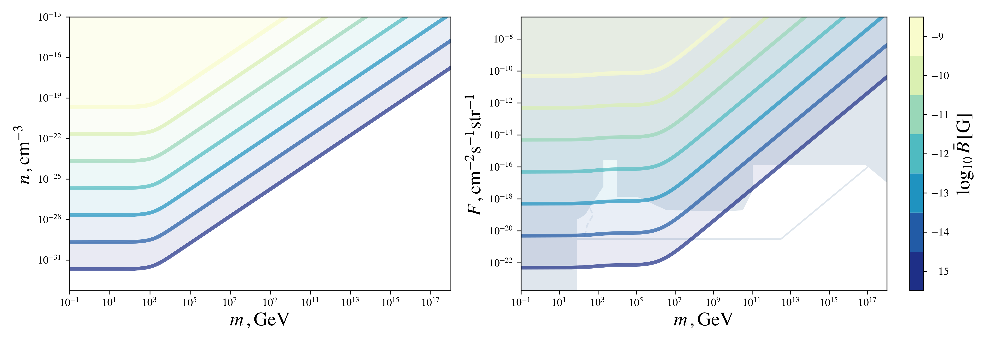<br />
图注：Monopole abundance bound. We plot upper bounds on the monopole number density~$n$ in the universe given by \(\eref{eq:n_upper_bound},\) and on the monopole flux~$F$ on Earth which is approximately given by eq.~(\ref{eq:FUB}). We show values for the monopole mass $m $ ranging from $10^{-1}$ to $10^{18} \, \mathrm{GeV}$, and we show several values of IGMF strength $\bar{B}$ ranging from $10^{-15}$ to $10^{-9} \, \mathrm{G}$. We fix the monopole magnetic charge to be a single Dirac charge $g = \bar{g}$, and the limits are derived from Fermi-LAT and H.E.S.S. observations of the blazar 1ES 0229+200, as described above \(\eref{eq:ext_vs_psf}.\) In the right panel, the gray shaded region represents a conservative combination of current constraints on monopole parameter space from MoEDAL \(\cite{Acharya_2022},\) MACRO \(\cite{MACRO_2002},\) IceCube~\(\cite{IceCube:2021eye},\) Auger~\(\cite{PierreAuger:2016imq},\) the galactic Parker bound \(\citep{Parker:1970xv,Turner_1982},\) and the cosmic abundance bound, with the experimental limits shown in terms of the monopole mass based on the analysis in~\(\cite{Perri_2025}.\) The Auger bound can go down to the position of the dashed gray line depending on the IGMF strength. The solid gray line shows the seed Parker bound~\(\cite{Adams:1993fj}\) under the assumptions of a seed galactic magnetic field of $10^{-11}$~G and IGMF strength $\le 10^{-13}$~G \(\cite{Perri_2024}.\) Details on the existing constraints can be found in \(\aref{app:mono_constraints}\) and in \(\rref{Perri_2025}.\)<br />
对应解读：对应“建议重点查看的图表”第3、4项，以及“关键图表逐图导读”中关于\((m_M,F)\)排除图和既有限制比较图的段落。<br />
入选理由：这是支撑本文核心结论的最关键图：直接给出由1ES 0229+200的H.E.S.S./Fermi-LAT halo约束推导出的单极子数密度与地球流量上限，并按不同IGMF强度展示\(m_M\)-\(F\)依赖。右图还叠加MoEDAL、MACRO、IceCube、Auger、Parker bound和宇宙丰度限制，可检验日报中低质量平台、\(F\lesssim6\	imes10^{-23}\\,\mathrm{cm^{-2}s^{-1}sr^{-1}}\)量级以及强磁场下约束变弱的说法。<br />
来源与置信度：\(arxiv_source\)；high；\(arxiv_source\) / main.tex:figure[6]</p>
<p><strong>Fig05</strong><br />
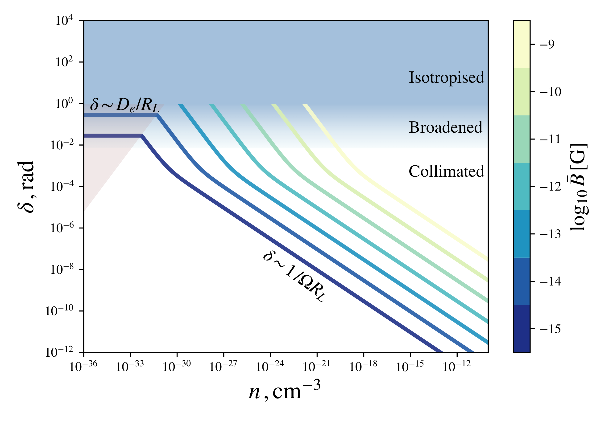<br />
图注：Predicted deflection angle. We plot the angle $\delta$ given by \(\eref{deflection-angle}\) as a function of the number density of monopoles $n = \nM + \nMb$. For this example we take the monopole magnetic charge to a single Dirac charge $\bar{g} = 2 \pi/ \bar{e}$, and the monopole mass to be $m = 100 \, \mathrm{GeV}$. We further suppose the initial energy of the electron (or positron) to be $E_e = 3.5 \, \mathrm{TeV}$, so that it travels a distance $D_e \approx 100 \, \mathrm{kpc}$. We consider values for the amplitude of the (effectively homogeneous) IGMF in the range from $\bar{B} = 10^{-15}$ to $10^{-9} \, \mathrm{G}$. The pale red region indicates where the monopole density is so low that it has no appreciable impact on $\delta$. In this case, $\delta$ is given by the first branch of \(\eref{deflection-angle},\) with $\delta \sim D_e / R_L$. Outside of this region, the monopole number density is high enough for the deflection angle to be affected by the monopole <code>collimation'' effect. In this regime, the deflection angle follows the second branch of \(\eqref{deflection-angle},\) $\delta \sim 1 / (\Omega R_L)$. The blue region (</code>Isotropised'') indicates where the deflection angle becomes as large as $\delta \sim 1$ so that the emission is effectively isotropized and contributes to the diffuse GeV background rather than being associated with any particular source. The unshaded region (<code>Collimated'') corresponds to deflection angles small enough such that the angular size of the secondary halo from the blazar 1ES 0229+200 remains within the Fermi telescope’s point spread function (PSF), i.e., $\delta \lesssim \tau \theta_\text{psf}$ (with $\theta_\text{psf} \sim 0.2^\circ$ and $\tau \sim 2$). The region (</code>Broadened''), shown as a blue gradient, corresponds to deflection angles for which the secondary radiation is not fully isotropized, yet the angular size of the halo exceeds the PSF of the Fermi telescope.<br />
对应解读：对应“建议重点查看的图表”第1、2项，以及模型拟合段落中关于电子偏折角、halo角尺度、Fermi-LAT PSF和单极子准直效应的讨论。<br />
入选理由：该图直接画出预测偏折角\(\delta\)随单极子数密度\(n\)和不同IGMF强度\(\ar B\)的变化，并标出无影响、准直、展宽和各向同性区域。它最清楚地展示了日报强调的物理链条：单极子密度足够高时，同一磁场下电子偏折减小，二级GeV halo更窄，从而把halo角尺度约束映射为单极子丰度上限。<br />
来源与置信度：\(arxiv_source\)；high；\(arxiv_source\) / main.tex:figure[5]</p>
<p><strong>Fig07</strong><br />
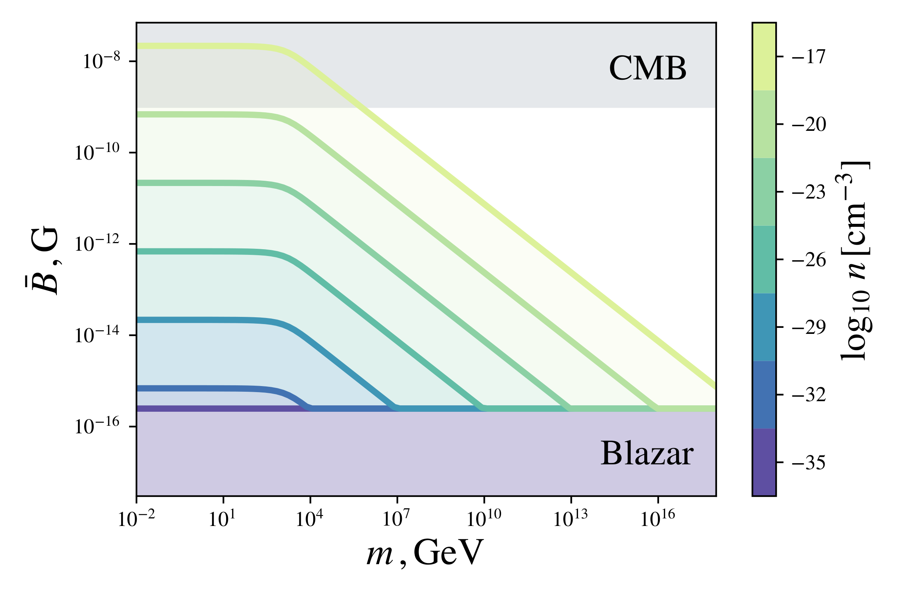<br />
图注：IGMF strength bound. We plot lower bounds on the strength of the IGMF $\bar{B}$ given by \(\eref{eq:B0_upper_bound}.\) We show a range of values for the monopole mass $m $ ranging from $10^{-2}$ to $10^{17} \, \mathrm{GeV}$, and we show several values of the monopole number density $n$ ranging from $10^{-35}$ to $10^{-17} \, \mathrm{cm}^{-3}$. We fix the monopole magnetic charge to a single Dirac charge $g = \bar{g}$, and the limits are derived from Fermi-LAT and H.E.S.S. observations of the blazar 1ES 0229+200, as described above \(\eref{eq:ext_vs_psf}.\) The limits apply for IGMFs with coherence lengths larger than $\lambda_B > D_e \sim 100 \, \mathrm{kpc}$. The gray shaded region indicates an upper limit on the IGMF strength derived from observations of the CMB spectrum and anisotropies~\(\cite{Planck:2015zrl,Zucca:2016iur,Jedamzik:2018itu}.\)<br />
对应解读：对应“建议重点查看的图表”第5项，以及“关键图表逐图导读”中关于非零单极子丰度下IGMF下限修正的段落。<br />
入选理由：该图给出在不同单极子数密度下，1ES 0229+200观测所要求的IGMF强度下限随单极子质量的变化，并标出CMB给出的IGMF上限区域。它直接支持日报中“若存在单极子准直效应，传统TeV halo得到的IGMF下限需要上调”的结论，是从反方向理解\(B\)与\(n_M/m_M\)退化关系的关键图。<br />
来源与置信度：\(arxiv_source\)；high；\(arxiv_source\) / main.tex:figure[7]</p>
<p><strong>Fig04</strong><br />
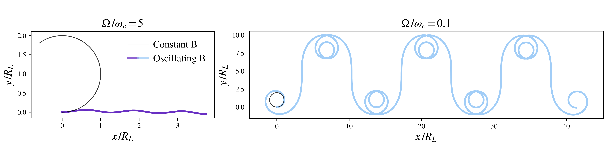<br />
图注：Trajectory of an electrically charged particle in a time-oscillating magnetic field. The particle moves according to \(\eref{eq:charge_EOM}.\) We plot its solution in the $x$-$y$ plane, assuming the magnetic field undergoes ultra-relativistic triangular oscillations along the $z$~direction, and that the particle has a vanishing velocity component parallel to the magnetic field. Lengths are measured in units of the Larmor radius $R_L$. In the two panels we show different choices of the ratio $\Omega / \omega_c$ where $\Omega $ is the magnetic field oscillation frequency and $\omega_c $ is the cyclotron frequency. \(\textit{\bfseries{Left panel}}\): Rapidly oscillating magnetic field with $\Omega / \omega_c = 5$. \(\textit{\bfseries{Right panel}}\): Slowly oscillating magnetic field with $\Omega / \omega_c = 0.1$. The black line denotes the trajectory in a constant magnetic field.<br />
对应解读：对应“关键图表逐图导读”中理论机制图的部分，以及模型拟合段落中关于时间振荡磁场如何改变带电粒子轨迹和偏折积分的讨论。<br />
入选理由：该图展示带电粒子在时间振荡磁场中的二维轨迹，并与恒定磁场轨迹作比较；左右面板改变\(\Omega/\omega_c\)以显示快慢振荡对轨道的影响。它比纯示意图更能说明准直效应不是简单改变磁场归一化，而是由振荡磁场导致偏折积分正负抵消。<br />
来源与置信度：\(arxiv_source\)；high；\(arxiv_source\) / main.tex:figure[4]</p>
<p><strong>Fig03</strong><br />
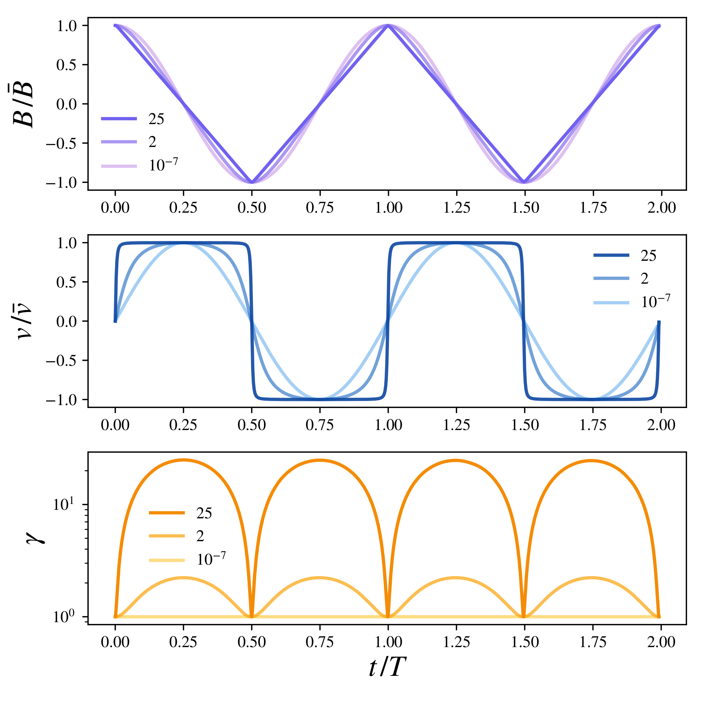<br />
图注：Oscillatory solutions for a monopole-magnetic field system. The magnetic field and monopole velocity evolve according to \(\erefs{maxwell}{mm-eom}.\) We plot solutions of these equations, showing the oscillating components of the magnetic field $B(t)$ and the monopole velocity $v(t)$ normalized by their oscillation amplitudes, as well as the associated Lorentz factor $\gamma(t)$. The scaled solution depends only on a single combination of parameters and for these examples we use $\overline{\gamma v} = 25$, $2$, and $10^{-7}$ as indicated in the plot legends, representing ultra-relativistic, mildly relativistic and non-relativistic oscillations. In the ultra-relativistic regime, monopoles (and counter-propagating anti-monopoles) rapidly reach relativistic speeds, and the magnetic field develops a triangular time profile. In the non-relativistic regime, the oscillations of both the magnetic field and the monopole velocities are harmonic.<br />
对应解读：对应“建议重点查看的图表”第1项和“关键图表逐图导读”中关于磁单极子等离子体振荡机制的段落。<br />
入选理由：该图给出单极子—磁场系统的实际振荡解，展示\(B(t)\)、单极子速度\(v(t)\)和洛伦兹因子\(\gamma(t)\)在非相对论、弱相对论和超相对论情况下的形态。它为日报中“磁场振荡导致带电粒子净偏折降低”提供底层动力学依据，尤其能区分谐振荡和三角波形振荡两种极限。<br />
来源与置信度：\(arxiv_source\)；high；\(arxiv_source\) / main.tex:figure[3]</p>
<p><strong>Fig01</strong><br />
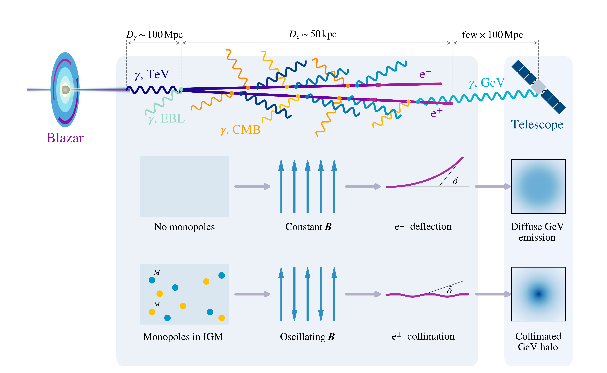<br />
图注：Illustration of magnetically-broadened blazar cascade. An active galactic nucleus emits TeV $\gamma$ rays toward telescopes on Earth. Interactions of the gamma rays with extragalactic background light (EBL) and cosmic microwave background (CMB) radiation leads to electron/positron pair creation and the development of an electromagnetic cascade (the distances in the plot are not to scale). The presence of an approximately static intergalactic magnetic field (IGMF) deflects the $e^-$ / $e^+$ trajectories and broadens the cascade, leading to a diffuse GeV gamma ray halo. A sufficiently high density of magnetic monopoles induces oscillations in the magnetic field, leading to reduced deflection (i.e., collimation), and a less diffuse halo.<br />
对应解读：对应详细解读中关于TeV blazar电磁级联、IGMF展宽GeV halo以及单极子导致halo变窄的总体物理图像。<br />
入选理由：这是整篇论文问题设置的概念总览图，清楚连接AGN TeV光子、EBL成对产生、IC级联、IGMF偏折、GeV halo和单极子准直效应。虽然不是定量约束图，但适合作为读者进入后续Fig05、Fig06和Fig07之前的物理流程图。<br />
来源与置信度：\(arxiv_source\)；high；\(arxiv_source\) / main.tex:figure[1]</p>
<h4 id="_13">强相关工作</h4>
<p>这篇工作与 TeV blazar 约束星系际磁场的文献直接相连，特别是 1ES 0229+200、1ES 0347-121、RGB J0710+591 等硬谱源的级联研究。相关检索关键词包括“1ES 0229+200 intergalactic magnetic field Fermi LAT HESS cascade halo”、“TeV blazar pair halo IGMF lower limit”、“Neronov Vovk intergalactic magnetic fields gamma-ray observations”。这些工作通常把 halo 非探测或 GeV 级联缺失解释为 \(B\) 下限；本文的不同点是加入磁单极子后，偏折角不再只由 \(B\) 决定。</p>
<p>在磁单极子方面，本文与 Parker bound、extended Parker bound、MACRO 磁单极子搜索、MoEDAL 加速器搜索以及 IceCube/ANTARES 等高能中微子望远镜的慢速或相对论单极子限制属于同一大类参数空间比较。相关检索关键词包括“Dirac magnetic monopole charge quantization”、“Parker bound magnetic monopoles”、“MACRO magnetic monopole flux limit”、“MoEDAL magnetic monopole search”、“IceCube relativistic magnetic monopoles”。需要注意，不同限制对速度、磁荷、质量和宇宙学丰度的假设并不相同。</p>
<p>潜在张力来自 TeV halo 解释本身。部分文献认为 GeV 级联缺失可由等离子体束流不稳定性解释，而不必要求较强 \(B\)；也有研究强调源活动历史和 EBL 模型会改变 \(B\) 下限。因此，若把本文结果用于强限制磁单极子，必须同时说明采用的是“逆康普顿级联主导且 halo 形态约束可靠”的框架。检索关键词可用“blazar cascade plasma instabilities IGMF debate”、“gamma-ray halos Fermi LAT point spread function systematics”。</p>
<p><strong>同一事件 / 同类源线索</strong>：</p>
<ul>
<li><a href="https://arxiv.org/abs/2606.26229">https://arxiv.org/abs/2606.26229</a></li>
<li><a href="https://arxiv.org/pdf/2606.26229">https://arxiv.org/pdf/2606.26229</a></li>
</ul>
<p><strong>相似工作</strong>：</p>
<ul>
<li><a href="https://arxiv.org/abs/1006.3504">https://arxiv.org/abs/1006.3504</a></li>
<li><a href="https://arxiv.org/abs/1009.1782">https://arxiv.org/abs/1009.1782</a></li>
</ul>
<p><strong>基础理论 / 方法工作</strong>：</p>
<ul>
<li><a href="https://doi.org/10.1098/rspa.1931.0130">https://doi.org/10.1098/rspa.1931.0130</a></li>
<li><a href="https://doi.org/10.1016/0550-3213(74)90486-6">https://doi.org/10.1016/0550-3213(74)90486-6</a></li>
<li><a href="https://doi.org/10.1134/1.1703883">https://doi.org/10.1134/1.1703883</a></li>
</ul>
<p><strong>相反观点 / 张力线索</strong>：</p>
<ul>
<li><a href="https://arxiv.org/abs/1112.6386">https://arxiv.org/abs/1112.6386</a></li>
<li><a href="https://arxiv.org/abs/1202.0846">https://arxiv.org/abs/1202.0846</a></li>
</ul>
</details>
<h3 id="2-3d-kinematic-reconstruction-of-the-crab-nebula-that-includes-the-northern-ejecta-jet">2. 3D Kinematic Reconstruction of the Crab Nebula That Includes the Northern Ejecta `Jet'</h3>
<ul>
<li>来源：arXiv / astro-ph.HE</li>
<li>链接：https://arxiv.org/abs/2606.26231v1</li>
<li>作者：Ziwei Ding, Dan Milisavljevic, Thomas Martin, Tea Temim, John C. Raymond, Soham Mandal, Laurent Drissen</li>
<li>评分：novelty 8/10，importance 8/10，relevance 9/10，final 9.35/10</li>
<li>推荐理由：Crab Nebula/PWN 的新三维运动学重建，解析北部喷流与丝状结构的物理连接，对经典高能源、PWN 演化和多波段解释重要。</li>
</ul>
<p><strong>中文题目</strong>：包含北部喷流的蟹状星云三维运动学重建</p>
<p><strong>做了什么</strong>：这篇论文用加法-傅里叶成像光谱仪 \(\mathrm{SITELLE}\) 在 \(3600\,\unicode{x212B}\) 到 \(7000\,\unicode{x212B}\) 的超光谱数据，对蟹状星云及其北部所谓“烟囱”或“喷流”结构做了新的三维运动学重建。作者利用多条光学发射线的多普勒速度，把二维天图和视向速度转换为近似三维的丝状体分布，确认喷流底部存在一个几何上连通的空腔，说明北部喷流不是投影上的孤立附属物，而是与星云主丝状网络物理相连。核心结论是：早期脉冲星风云 \(\mathrm{PWN}\) 的膨胀很可能在喷流形成中起了关键作用，但具体机制仍可能是双极外流、壳层破口、低密度通道或这些过程的组合。</p>
<p><strong>为什么重要</strong>：蟹状星云是年轻脉冲星风云与超新星抛射物相互作用的基准源，但它北部狭长喷流的起源长期没有定论。喷流是否是爆炸本身的轴向不对称、周围环境造成的逃逸通道，还是 \(\mathrm{PWN}\) 后期推开的结构，会直接影响我们如何解释年轻遗迹中的非球对称形态、抛射物混合和能量注入历史。本文的重要性在于，它不只给出一张更漂亮的三维图，而是把喷流底部空腔、丝状体速度场和主星云网络放在同一个运动学框架里检验。</p>
<p><strong>理论 / 观测 / 仪器方法价值</strong>：对理论而言，本文给数值模拟提出了更具体的几何约束：模型需要同时解释喷流的准弹道运动、强准直、北南不对称和与主星云空腔的连通。对观测而言，它展示了宽视场成像傅里叶光谱在复杂超新星遗迹三维重建中的价值，尤其是同时覆盖 \([\mathrm{O\ II}]\)、\(\mathrm{H}\beta\)、\([\mathrm{O\ III}]\)、\([\mathrm{N\ II}]\)、\(\mathrm{H}\alpha\)、\([\mathrm{S\ II}]\) 等多条线后，可比较不同离子和密度区域的空间-速度结构。对方法而言，论文把二维积分场数据、发射线拟合、速度切片和同胀假设结合起来，是研究丝状遗迹三维形态的实用范例。</p>
<p><strong>为什么应该关注</strong>：如果你关心脉冲星风云如何改造超新星抛射物，蟹状星云仍是最值得“反复解剖”的对象，因为它离得近、年龄已知、结构复杂而且多波段资料丰富。本文提醒我们：看似边缘的北部喷流可能记录了早期 \(\mathrm{PWN}\) 与抛射壳层第一次强相互作用的几何信息。它也说明，单靠二维图像很容易把空腔、喷流和丝状体连接关系看错；真正有诊断力的是把位置、速度、离子分布和物理尺度同时放进三维模型。</p>
<details class="paper-detail">
<summary>展开详细解读：文章讲解、背景、理论、重点章节、图表与相关工作</summary>
<h4 id="_14">文章详细讲解</h4>
<p>科学问题：蟹状星云北部有一个延伸到主星云外侧的漏斗状结构，传统上常被称为“喷流”或“烟囱”。它宽约 \(45\) 角秒，向北伸出主星云边缘约 \(100\) 角秒。问题不只是它长得像不像喷流，而是它到底是爆炸本身抛出的高速轴向物质、后来的脉冲星风云 \(\mathrm{PWN}\) 顶开外层抛射物形成的通道，还是前身星质量损失或周围介质密度不均匀留下的低密度路径。若能确定喷流与主星云丝状网络之间是否真正连通，就能约束 \(\mathrm{PWN}\) 与冷却抛射物之间的动力学耦合。</p>
<p>作者怎么做：论文使用加拿大-法国-夏威夷望远镜 \(\mathrm{CFHT}\) 上的 \(\mathrm{SITELLE}\) 超光谱数据立方体，覆盖从 \(3600\,\unicode{x212B}\) 到 \(7000\,\unicode{x212B}\) 的多条主要光学发射线，包括 \([\mathrm{O\ II}]\lambda\lambda 3726,3729\)、\(\mathrm{H}\beta\)、\([\mathrm{O\ III}]\lambda\lambda 4959,5007\)、\([\mathrm{N\ II}]\lambda 5755\)、\(\mathrm{He\ I}\lambda 5876\)、\([\mathrm{N\ II}]\lambda\lambda 6548,6584\)、\([\mathrm{S\ II}]\lambda\lambda 6717,6731\) 和 \(\mathrm{H}\alpha\)。这类数据的优势是同一视场内每个空间像素都有光谱，可以在不同离子线中测出视向速度，并将天球坐标与多普勒速度组合成三维重建。</p>
<p>关键结果：新的三维重建确认并几何分辨了早期运动学研究曾暗示的喷流底部空腔。这个空腔不是简单的投影暗区，而是在速度空间中与主星云丝状网络和北部漏斗结构相接。喷流整体表现出近似弹道式外流特征，即不同位置的速度和距离关系大体符合自由膨胀或同胀图像，而不是完全由当前局部冲击加速造成。形态上，它像是主星云北部外层被打开的一条准直通道，支持早期 \(\mathrm{PWN}\) 膨胀在喷流形成中扮演重要角色。</p>
<p>局限和下一步：本文没有把某一个形成机制唯一化。双极外流加环形盘或环形密度增强可以解释准直，但要解释没有南部对应物并不容易；抛射壳层破口或低密度区域可以解释单侧逃逸，但需要说明为何通道如此窄而长；前身星质量损失轨迹可以给出环境低密度通道，但需要与蟹状星云的年龄、化学组成和速度场同时匹配。作者强调，区分这些场景需要从前身星质量损失、爆炸、抛射物冷却、早期 \(\mathrm{PWN}\) 膨胀一直演化到现在的三维流体模拟，而不是只用静态几何解释。</p>
<h4 id="_15">关键结果是怎么做出来的</h4>
<p>本文的证据链从样本和数据立方体开始。作者没有只选取喷流的窄缝光谱，而是使用 \(\mathrm{SITELLE}\) 的宽视场超光谱观测，使视场同时包含主星云北部边缘、喷流底部和向外延伸的漏斗状结构。每个空间像素都有覆盖多条明亮发射线的光谱，因此样本单位不是少数离散点，而是由大量空间像素和速度通道组成的三维发射线数据。对蟹状星云这种丝状体密集、不同离子共存且速度分裂明显的对象，宽视场积分场数据比单条长缝更适合判断结构是否真实连通。</p>
<p>速度信息来自发射线中心相对实验室波长的偏移。作者可在 \([\mathrm{O\ II}]\)、\([\mathrm{O\ III}]\)、\(\mathrm{H}\alpha\)、\([\mathrm{N\ II}]\)、\([\mathrm{S\ II}]\) 等线中构造速度切片，并把不同速度层中的发射结构投影到三维空间。关键假设是蟹状星云丝状体近似处于同胀或准弹道膨胀状态，因此视向速度可作为沿视线距离的代理。这个假设在年轻超新星遗迹中常用，但本文的价值在于用喷流和主星云的连续速度结构来检验它是否给出自洽几何。</p>
<p>最重要的结果不是“发现喷流存在”，因为喷流早已在图像中可见，而是确认喷流底部存在一个空腔并与主星云丝状网络直接相连。支撑这一结论的图表应包括三维重建渲染图、不同速度切片图、位置-速度图以及喷流底部区域的放大图。读者应特别关注：空腔在多个离子线中是否重复出现；它是否在相邻速度层连续；北部漏斗边界是否与主星云内部的丝状体边缘在位置和速度上衔接；以及是否可能由亮线饱和、线混叠或低信噪比造成假空洞。</p>
<p>显著性在这类论文中通常不是以单个 \(\sigma\) 数给出，而是通过多条发射线、多速度通道和几何一致性来建立。模型比较也更多是物理情景比较：双极外流、壳层破口、低密度通道和前身星质量损失轨迹分别能否解释准直程度、单侧性、近弹道速度和喷流底部空腔。稳健性检验的重点应放在波长标定、速度零点、线轮廓拟合、空间分辨率、不同离子线对不同物理区域的偏置，以及同胀年龄假设对三维深度尺度的影响。</p>
<p>系统误差方面，最需要警惕的是把视向速度直接解释为空间深度时引入的模型依赖。若某些气体经历过后期加速、减速或冲击偏转，\(v_{\rm los}\) 与距离的线性关系会失效。喷流区域可能密度较低、表面亮度较弱，因而在某些离子线中只看到亮壁而看不到内部气体，这会强化“空腔”印象。本文的结论之所以仍有说服力，是因为它强调几何连通、速度连续和多线一致性，而不是依赖单一二维图像或单条谱线。</p>
<details class="paper-subdetail">
<summary>展开背景、理论、公式、模型、章节和图表导读</summary>
<h4 id="_16">背景知识</h4>
<p>蟹状星云是公元 \(1054\) 年超新星遗迹的现代对应体，中心有一颗能量损失率很高的年轻脉冲星，外部由富含重元素和氢的光学丝状体、同步辐射星云以及多波段 \(\mathrm{PWN}\) 组成。它既不是一个简单的球形壳层遗迹，也不是一个只有相对论风的纯 \(\mathrm{PWN}\)。可见光丝状体记录较慢的冷却抛射物，射电、光学连续谱和 \(X\) 射线则主要反映脉冲星风粒子和磁场。</p>
<p>蟹状星云北部喷流很早就在深度图像中被注意到。它不像典型活动星系核喷流那样由相对论等离子体束直接照亮，也不能简单等同于中心脉冲星当前自转轴方向上的窄束流。它是由发射线丝状结构勾勒出的外伸漏斗，因而其“喷流”名称容易误导：这里讨论的重点是冷却抛射物和 \(\mathrm{PWN}\) 动力学塑形，而不是一条正在以相对论速度从脉冲星喷出的直线束。</p>
<p>历史上，蟹状星云三维结构主要依赖窄带成像、长缝光谱和后来的积分场或扫描光谱资料。早期运动学研究已经发现主星云内部存在空腔、壳层和不规则速度结构，并提出北部结构可能与内部空洞有关。但受限于视场、采样和谱线覆盖，喷流与主星云的连接关系一直难以清楚展示。\(\mathrm{SITELLE}\) 这类宽视场成像傅里叶光谱仪正好适合重新审视这个问题。</p>
<p>为什么现在值得重新看？一方面，三维 \(\mathrm{MHD}\) 和辐射流体模拟已经能较现实地处理 \(\mathrm{PWN}\) 膨胀、瑞利-泰勒不稳定性、磁场准直和非均匀抛射物；另一方面，多波段观测提供了更精细的蟹状星云几何约束。如果喷流是早期 \(\mathrm{PWN}\) 在非均匀壳层中突破形成的，那么它可以作为年轻 \(\mathrm{PWN}\) 如何向外释放能量的化石记录。</p>
<p>该领域常见误区包括：第一，把所有细长结构都解释成爆炸时的双极喷流；第二，把光学丝状体的二维形态直接当成真实三维形态；第三，忽略不同离子线选择的是不同温度、电离态和密度条件的气体；第四，把近似同胀速度场看成严格自由膨胀。本文的三维重建有助于纠正这些误区，但也仍建立在速度-距离转换的物理假设上。</p>
<h4 id="_17">基础理论 / 方法脉络</h4>
<p>基本物理图像是：超新星爆炸后，较慢、较冷、可辐射的抛射物形成光学发射线丝状体；中心脉冲星持续注入相对论粒子和磁场，形成高压 \(\mathrm{PWN}\)，并从内部推动抛射物。若系统近似自由膨胀，则同一年龄 \(t\) 下的物质满足速度与半径成正比，三维位置可以从天球投影和视向速度共同估计。这是蟹状星云三维运动学重建的基础。</p>
<p>观测上，发射线气体的视向速度来自多普勒位移。对于非相对论速度，谱线中心的偏移量与 \(v_{\rm los}\) 成正比。积分场光谱的优势是每个空间像素都能测速度，因此可把二维图像分解为不同速度层。蟹状星云中不同丝状体沿视线重叠严重，单张窄带图像会把前景、背景和侧向结构混在一起，而速度切片可以部分解除这种重叠。</p>
<p>本文的关键模型假设是准弹道膨胀或同胀映射：给定爆炸年龄和距离，天球角坐标给出横向物理坐标，视向速度给出沿视线坐标。这个映射不是动力学方程的精确解，而是一种运动学重建工具。它适用于后期相互作用不强、速度方向大致径向的气体；若气体被 \(\mathrm{PWN}\) 加速、被冲击波减速，或沿壳层切向流动，则重建出的深度会有系统偏差。</p>
<p>发射线本身还带有气体物理信息。\([\mathrm{S\ II}]\lambda 6717/\lambda 6731\) 可反映电子密度范围，\([\mathrm{O\ III}]\) 与 \([\mathrm{O\ II}]\) 的相对分布反映电离结构，\(\mathrm{H}\alpha\) 和 \([\mathrm{N\ II}]\) 常追踪较强冷却的丝状体。喷流若在多条线中具有一致几何边界，说明它不是某一种离子选择效应造成的假结构；若不同线显示不同边界，则可能反映电离、密度或冲击条件的变化。</p>
<p>主要退化关系包括速度-距离退化、亮度-密度退化和几何-选择效应退化。一个看似空的腔体可能是真正缺少气体，也可能是气体太热、太低密度或电离态不适合相应谱线。一个看似准直的喷流可能是狭窄通道，也可能是厚壳边缘投影增强。因此，本文把多条谱线、三维速度结构和形态连续性结合起来，是降低这些退化的关键。</p>
<h4 id="_18">公式与推导</h4>
<p>第一步是把观测角坐标转换成横向物理尺度。若蟹状星云距离为 \(D\)，天球小角位移为 \(\theta_x\) 和 \(\theta_y\)，则</p>
<div class="math-display">\[x=D\theta_x,\qquad y=D\theta_y,\]</div>
<p>其中 \(x\) 和 \(y\) 是横向坐标，小角近似要求 \(\theta_x\) 和 \(\theta_y\) 用弧度表示。这个关系决定喷流宽度和长度从角秒到物理尺度的换算。</p>
<p>第二步是从谱线位移测视向速度。对静止波长为 \(\lambda_0\) 的发射线，观测中心波长为 \(\lambda\)，非相对论多普勒速度为</p>
<div class="math-display">\[v_{\rm los}=c\frac{\lambda-\lambda_0}{\lambda_0},\]</div>
<p>其中 \(c\) 是光速。蟹状星云光学丝状体速度远小于 \(c\)，因此这个近似足够；若要处理更高速度，则需使用相对论多普勒公式。</p>
<p>第三步是同胀映射。若抛射物自爆炸以来近似自由膨胀，三维速度与位置满足</p>
<div class="math-display">\[\mathbf{r}=\mathbf{v}t_{\rm exp},\]</div>
<p>其中 \(t_{\rm exp}\) 是膨胀年龄。沿视线方向可写为</p>
<div class="math-display">\[z=v_{\rm los}t_{\rm exp},\]</div>
<p>其中 \(z\) 的零点通常取在星云中心或系统速度对应的平面。这个式子是把速度立方体转换为三维形态的核心，但它隐含气体没有显著后期加速或减速。</p>
<p>第四步是扣除系统速度。若星云整体相对太阳系或本地标准静止系有系统速度 \(v_{\rm sys}\)，则用于几何重建的速度应为</p>
<div class="math-display">\[v_z=v_{\rm obs}-v_{\rm sys},\]</div>
<p>其中 \(v_{\rm obs}\) 是从谱线中心得到的速度。系统速度零点的小误差会整体平移三维结构，尤其影响判断某个空腔是在前侧、后侧还是中心附近。</p>
<p>第五步是谱线轮廓拟合。对单个速度分量，可用仪器线扩散函数卷积后的模型表示观测光谱，例如简化写成</p>
<div class="math-display">\[F(\lambda)=\sum_{k=1}^{N} A_k\,G\left[\lambda-\lambda_{0,k}\left(1+\frac{v_k}{c}\right),\sigma_k\right]+B(\lambda),\]</div>
<p>其中 \(A_k\) 是第 \(k\) 个分量强度，\(v_k\) 是速度，\(\sigma_k\) 是线宽，\(B(\lambda)\) 是连续谱或背景。对蟹状星云这种多分量视线，\(N\) 的选择会影响速度切片中的结构完整性。</p>
<p>第六步是把发射线亮度与发射率联系起来。对光学禁线或复合线，观测面亮度可形式化写为</p>
<div class="math-display">\[I_{\ell}(x,y,v)=\int j_{\ell}(n_e,T,\chi)\,\phi[v-v_z(s)]\,ds,\]</div>
<p>其中 \(j_{\ell}\) 是谱线 \(\ell\) 的体发射率，依赖电子密度 \(n_e\)、温度 \(T\) 和离子丰度或电离分数 \(\chi\)，\(\phi\) 是速度响应函数，\(s\) 是视线坐标。这个式子说明速度通道图不是质量分布的直接图像，而是受物理状态加权的发射率图。</p>
<p>第七步是同胀模型下的三维半径与速度标度。若三维坐标为 \((x,y,z)\)，则</p>
<div class="math-display">\[r=\sqrt{x^2+y^2+z^2},\qquad v_{\rm exp}=\frac{r}{t_{\rm exp}}.\]</div>
<p>若重建结果显示喷流壁上的丝状体大致满足 \(v_{\rm exp}\propto r\)，则支持近弹道运动；若明显偏离，可能说明喷流被 \(\mathrm{PWN}\) 或外部介质后期重塑。</p>
<p>第八步是用残差或一致性检验判断重建是否可信。给定模型速度 \(v_{i,\rm mod}\) 和观测速度 \(v_{i,\rm obs}\)，可定义</p>
<div class="math-display">\[\chi^2=\sum_i \frac{\left(v_{i,\rm obs}-v_{i,\rm mod}\right)^2}{\sigma_{v,i}^2},\]</div>
<p>其中 \(\sigma_{v,i}\) 是速度测量误差。即使本文主要是几何重建而非全局参数拟合，这类量也能用于比较不同同胀中心、系统速度或几何场景。</p>
<p>第九步是考虑空腔判据。若某一区域在多条谱线和连续速度范围内发射率低，可用相对缺口深度表示为</p>
<div class="math-display">\[\Delta_{\ell}=1-\frac{\langle I_{\ell}\rangle_{\rm cavity}}{\langle I_{\ell}\rangle_{\rm rim}},\]</div>
<p>其中 \(\langle I_{\ell}\rangle_{\rm cavity}\) 是空腔内部平均强度，\(\langle I_{\ell}\rangle_{\rm rim}\) 是边缘或壁面平均强度。若多个 \(\ell\) 都有较大 \(\Delta_{\ell}\)，空腔更可能是几何密度结构，而非单一离子态选择效应。</p>
<h4 id="_19">模型拟合 / 应用方法</h4>
<p>本文的拟合对象主要不是一个封闭解析动力学模型，而是三维运动学重建所需的谱线参数和几何映射。每个空间像素或空间分箱中，需要估计发射线中心、强度、线宽和可能的多速度分量。\(\mathrm{SITELLE}\) 作为成像傅里叶光谱仪，其线形与普通光栅谱仪不同，实际拟合中必须考虑仪器线扩散函数、波长标定和背景连续谱，否则速度结构会被系统性展宽或偏移。</p>
<p>参数估计的核心量包括 \(v_{\rm los}\)、线通量、线宽、信噪比和不同离子线的空间一致性。对于蟹状星云这种多层丝状体，同一视线可能存在多个速度峰，单高斯拟合会把多个分量混成一个中间速度，从而在三维图中制造假桥或抹平真实空腔。较稳健的做法是结合速度切片、局部谱线轮廓和多线对应关系来判断分量数，而不是机械套用固定模型。</p>
<p>似然或统计量通常可写成光谱像素层面的残差平方和或泊松似然。若数据以通量和高斯误差给出，最直观的是最小化 \(\chi^2\)；若在弱线区域接近计数统计，则泊松似然更合适。对本文结论而言，最重要的残差诊断是：喷流底部空腔附近是否存在系统性拟合残差；线峰是否被错误分配到相邻速度通道；不同谱线速度零点是否一致。</p>
<p>退化关系主要有三类。第一是几何退化：同样的二维投影和视向速度可由不同三维曲面产生，尤其在速度场非径向时。第二是物理退化：发射线强度同时依赖密度、温度、电离态和丰度，暗区不一定等于低质量区。第三是历史退化：双极爆炸、\(\mathrm{PWN}\) 推挤、周围介质通道都可能产生狭长外伸结构，需要通过速度场、化学组成和双侧对称性进一步区分。</p>
<p>模型可能失败的地方也很明确。如果喷流中的气体曾被强烈加速，\(z=v_{\rm los}t_{\rm exp}\) 会把它放到错误深度；如果喷流壁主要是切向运动，视向速度会低估真实速度；如果局部消光或线激发条件变化很强，多线形态也可能不完全一致。实际应用中，本文的三维重建最适合作为后续三维流体或磁流体模拟的观测约束，而不是作为唯一动力学反演结果。</p>
<h4 id="_20">重点章节 / 结果段落怎么读</h4>
<p>数据与观测部分应首先阅读。这里需要确认 \(\mathrm{SITELLE}\) 的视场是否完整覆盖主星云北缘和整个北部喷流，谱段是否包括主要诊断线，速度分辨率和空间分辨率是否足够分开蟹状星云典型丝状体速度。读者应特别注意作者如何处理波长标定、天空背景、仪器线形和不同滤光段之间的拼接。</p>
<p>发射线测量与三维重建方法是第二个重点。应看作者如何从数据立方体中提取 \([\mathrm{O\ II}]\)、\([\mathrm{O\ III}]\)、\(\mathrm{H}\alpha\)、\([\mathrm{N\ II}]\) 等线的速度分布，如何定义系统速度和膨胀中心，以及如何把 \(v_{\rm los}\) 映射为视线方向坐标。若论文给出不同离子线的独立重建，读者应比较它们是否支持同一喷流几何。</p>
<p>主结果部分应围绕喷流底部空腔和北部漏斗结构来读。关键不是喷流在二维图上是否明显，而是三维重建中空腔是否连续、边界是否清楚、速度切片是否显示主星云丝状体与喷流壁相接。若作者展示交互式或多角度渲染，读者应从不同视角检查是否存在投影误判。</p>
<p>讨论部分需要重点比较形成场景。双极外流加环形盘、抛射物壳层破口、低密度通道、前身星质量损失轨迹这些方案各自能解释一部分特征，但也各有短板。读者应看作者如何评价准直性、单侧性、近弹道运动和缺少南部对应物，而不是只看他们偏向哪一个模型。</p>
<p>附录或稳健性检验若存在，值得细读。这里通常会说明不同谱线、不同速度阈值、不同渲染参数或不同拟合设置是否改变空腔结论。对三维重建论文来说，附录中的方法细节往往决定主图的可信度。</p>
<h4 id="_21">建议重点查看的图表</h4>
<ol>
<li>
<p>宽视场发射线图：检查 \(\mathrm{H}\alpha\)、\([\mathrm{O\ III}]\)、\([\mathrm{S\ II}]\) 等线中北部喷流是否都可见，以及喷流底部与主星云边界是否在二维上已有连续迹象。</p>
</li>
<li>
<p>速度切片图：逐层查看从蓝移到红移的通道图，关注喷流壁、空腔边缘和主星云北部丝状体是否随速度平滑移动，而不是只在单一速度层突现。</p>
</li>
<li>
<p>三维重建渲染图：从侧视、俯视和沿视线方向检查喷流与主星云的连接关系。重点看空腔是否为封闭或半开放结构，以及北部漏斗是否沿一个明确方向延伸。</p>
</li>
<li>
<p>位置-速度图或切割图：沿喷流轴和垂直喷流轴的切片最关键。应看速度是否随距离近似线性，是否存在多个速度分量，以及喷流底部是否有速度空隙对应空间空腔。</p>
</li>
<li>
<p>不同离子线对比图：比较 \([\mathrm{O\ III}]\)、\([\mathrm{O\ II}]\)、\([\mathrm{N\ II}]\)、\([\mathrm{S\ II}]\) 的形态。若空腔只在单一离子线中出现，要谨慎；若多线一致，则几何解释更强。</p>
</li>
<li>
<p>形成机制示意或模型比较表：查看各场景如何对应观测事实，特别是准直、单侧性、无南部对应物、近弹道运动和与 \(\mathrm{PWN}\) 的关系。</p>
</li>
<li>
<p>拟合残差或数据质量图：检查喷流区域信噪比、波长标定残差和线轮廓复杂度。低表面亮度区域的系统误差可能直接影响空腔判读。</p>
</li>
</ol>
<h4 id="_22">关键图表逐图导读</h4>
<p>图 1：建议把它作为全局定位图来读。横轴和纵轴通常是相对蟹状星云中心的天球坐标或赤经、赤纬，颜色或不同面板表示不同发射线强度。读图时不要只看北部喷流是否“细长”，还要看喷流底部是否嵌入主星云北缘、是否有漏斗状开口，以及不同离子线是否突出不同部分。陷阱是窄带强度受电离和密度影响，不能直接等同于质量柱密度。</p>
<p>图 2：若为速度通道图，横纵轴仍为空间坐标，每个面板对应不同 \(v_{\rm los}\) 区间。关键是跟踪同一丝状结构在相邻速度层中的连续变化。若喷流壁在多个速度层连贯出现，并且底部空腔在速度上也连续，说明它不是噪声或单一投影造成。陷阱是速度通道过宽会混合前后侧结构，通道过窄则可能因信噪比不足而让连续结构断裂。</p>
<p>图 3：若为三维渲染图，坐标轴应对应 \(x\)、\(y\) 和由 \(v_{\rm los}t_{\rm exp}\) 得到的 \(z\)。模型线或点云颜色可能表示速度、谱线或亮度。读者应旋转思维去看喷流是否从主星云空腔自然延伸，而不是二维图上贴在边缘。陷阱是三维渲染的透明度、亮度阈值和视角会强烈影响直观印象，应结合切片图验证。</p>
<p>图 4：若为喷流底部放大图或剖面图，最重要的是空腔边界。横轴可能是沿喷流轴距离，纵轴可能是视向速度或横向偏移。数据点或亮度分布若显示中间低发射、两侧亮壁，并且与主星云内部空洞相接，就支持“物理通道”解释。陷阱是局部弱线区域可能来自激发条件变化，需看多线对比。</p>
<p>图 5：若为位置-速度图，横轴通常是沿某条切线的角距离，纵轴是 \(v_{\rm los}\)，颜色表示线强度。近弹道膨胀会表现为速度与投影距离之间的有序关系，而随机扰动或局部冲击会造成散乱速度云。读者应检查喷流是否遵循与主星云相近的膨胀规律，还是表现出独立高速成分。</p>
<p>图 6：若为形成场景示意或比较图，应看它是否把观测约束逐一对应到物理机制。例如，双极模型要解释为什么南侧没有同等喷流；破口模型要解释为什么破口这么准直；前身星质量损失通道要解释为什么方向和 \(\mathrm{PWN}\) 演化相容。陷阱是示意图容易显得过于确定，实际结论仍是多场景并存待检验。</p>
</details>
<h4 id="_23">论文原图 / 可嵌入图片</h4>
<p><strong>Fig03</strong><br />
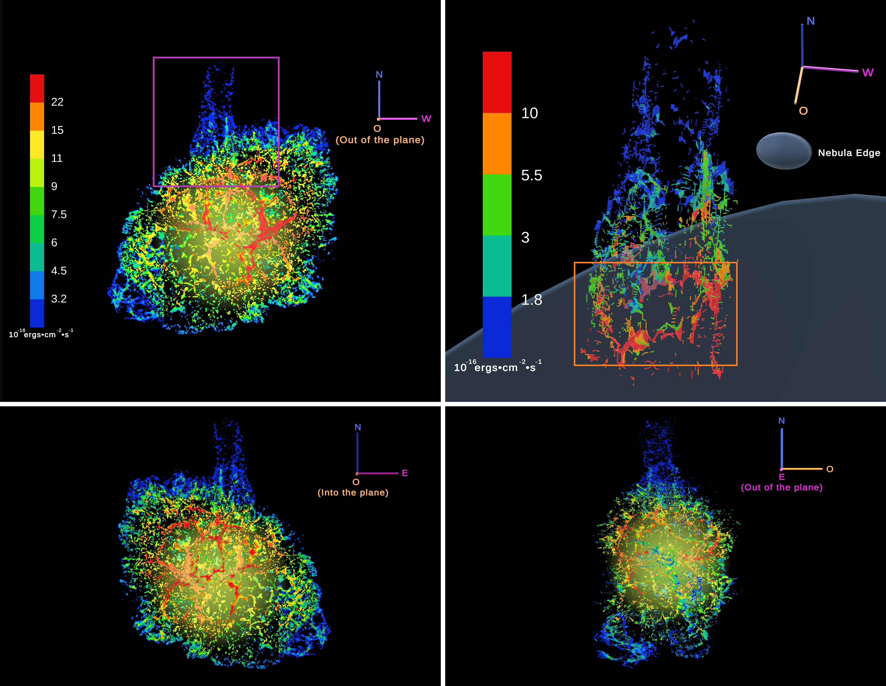<br />
对应解读：“建议重点查看的图表”第3项三维重建渲染图，以及“关键图表逐图导读”图3。<br />
入选理由：日报的核心结论是三维运动学重建确认喷流底部空腔并显示喷流与主星云丝状网络物理连通。三维渲染最直接对应这一判断，可用于检查喷流是否从主星云空腔自然延伸，而不是二维投影贴边造成的假象。<br />
来源与置信度：\(arxiv_source\)；high；\(arxiv_source\) / manuscript.tex:figure[3]</p>
<p><strong>Fig02</strong><br />
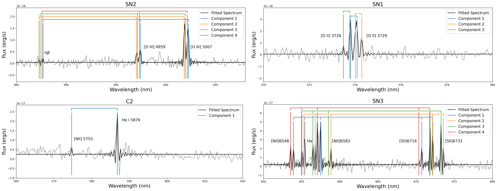<br />
对应解读：“建议重点查看的图表”第2项速度切片图，以及“关键图表逐图导读”图2。<br />
入选理由：速度通道图是验证空腔和喷流壁是否在多个视向速度层连续存在的关键证据。它能支撑日报中关于结构不是噪声、单一速度层突现或简单投影效应的解读。<br />
来源与置信度：\(arxiv_source\)；high；\(arxiv_source\) / manuscript.tex:figure[2]</p>
<p><strong>Fig01</strong><br />
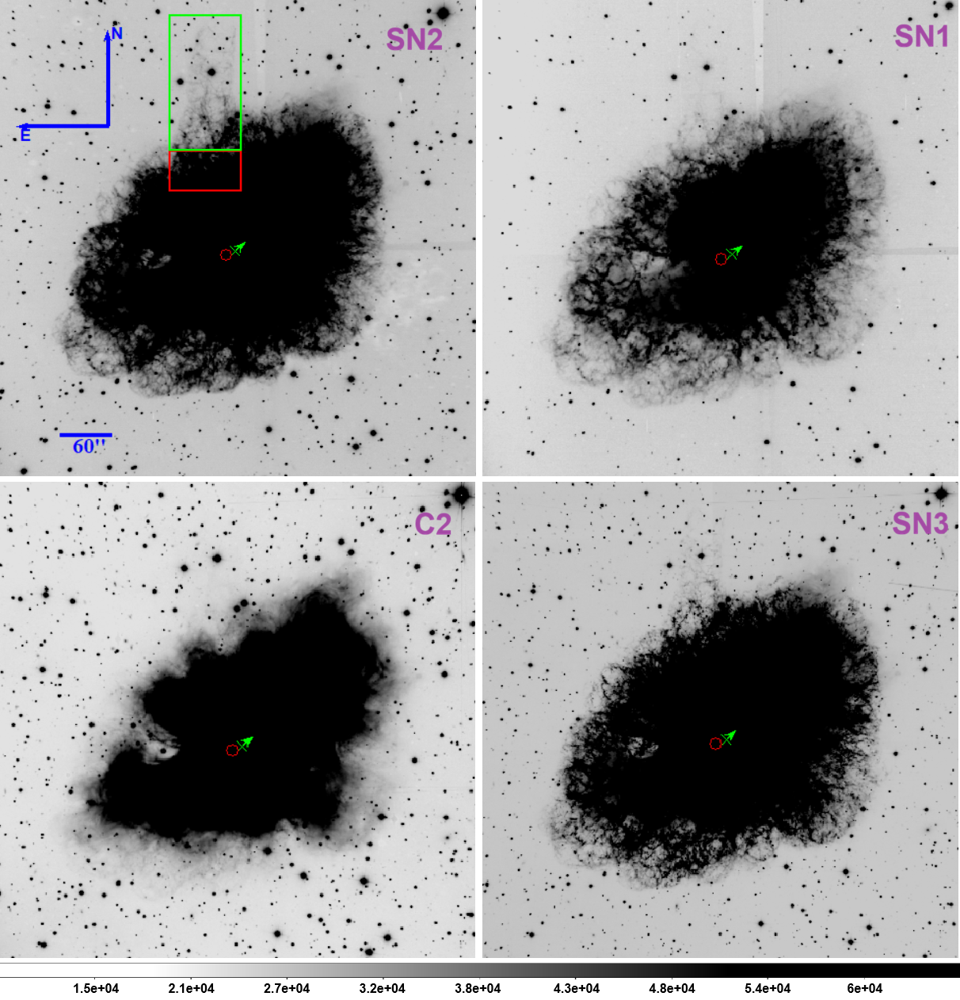<br />
对应解读：“建议重点查看的图表”第1项宽视场发射线图，以及“关键图表逐图导读”图1。<br />
入选理由：作为全局定位图，它最适合展示北部喷流相对蟹状星云主体的位置、二维漏斗形态以及喷流底部与主星云北缘的连续迹象，是读者理解后续速度切片和三维重建的入口图。<br />
来源与置信度：\(arxiv_source\)；high；\(arxiv_source\) / manuscript.tex:figure[1]</p>
<p><strong>Fig04</strong><br />
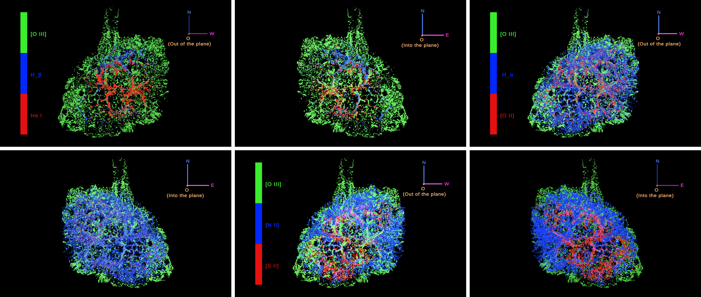<br />
对应解读：“建议重点查看的图表”第4项位置-速度图或切割图，以及“关键图表逐图导读”图4。<br />
入选理由：日报特别强调喷流底部空腔边界、两侧亮壁和与主星云内部空洞的连接。若该图为底部放大或剖面图，它比单纯宽视场图更能检验空腔是否具有空间和速度上的几何边界。<br />
来源与置信度：\(arxiv_source\)；high；\(arxiv_source\) / manuscript.tex:figure[4]</p>
<p><strong>Fig08</strong><br />
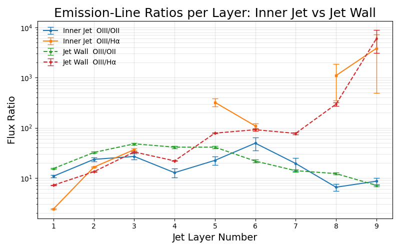<br />
图注：Flux ratios for emission lines in the jet as a function of layer away from the nebula, separated into two categories: the thin walls that define the jet (jet wall), and the volume interior to these walls (inner jet).<br />
对应解读：“建议重点查看的图表”第5项不同离子线对比图，以及模型拟合段落中关于多条谱线空间一致性的讨论。<br />
入选理由：该图明确给出喷流不同层中多条发射线通量比，并区分喷流薄壁和内部区域。它直接用于判断空腔或喷流结构是否只依赖单一离子线，能帮助区分几何低密度通道与电离、温度或丰度变化造成的表面亮度差异。<br />
来源与置信度：\(arxiv_source\)；high；\(arxiv_source\) / manuscript.tex:figure[8]</p>
<p><strong>Fig05</strong><br />
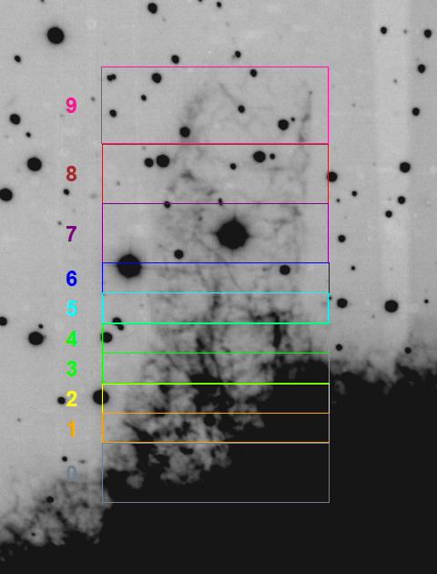<br />
图注：Positions of the jet layer segments. The bottom of layer 0 is 1.2 parsecs (120 arcsec) away from the nebula expansion center. Each layer covers 0.1 to 0.2 parsecs (10 to 20 arcsec) in height with the same 0.75 parsecs (75 arcsec) width. The top of layer 9 is 2.75 parsecs (275 arcsec) away from the nebula expansion center. The background image is an enlarged version of the SN2 filter deep frame shown in Figure \(\ref{fig:deepframe}.\)<br />
对应解读：“建议重点查看的图表”第4项位置-速度或切割分析，以及第5项分层多线比较的空间定义。<br />
入选理由：该图标出喷流从主星云外侧到远端的分层区域，给出了后续沿喷流轴比较速度、强度或线比的空间基准。虽然它本身不是最终物理诊断图，但能让读者理解喷流壁和内部区域如何被分段测量。<br />
来源与置信度：\(arxiv_source\)；high；\(arxiv_source\) / manuscript.tex:figure[5]</p>
<h4 id="_24">强相关工作</h4>
<p>这篇工作属于蟹状星云同一源的三维运动学研究和年轻 \(\mathrm{PWN}\)-抛射物相互作用研究。应与早期蟹状星云光学丝状体速度测量、三维重建、哈勃空间望远镜高分辨率成像以及多波段 \(\mathrm{PWN}\) 研究一起读。检索关键词可用 “Crab Nebula 3D kinematic reconstruction optical filaments”、“Crab Nebula northern jet chimney”、“Crab Nebula SITELLE”、“Crab Nebula pulsar wind nebula ejecta interaction”。</p>
<p>在理论上，相关工作包括 \(\mathrm{PWN}\) 膨胀进入超新星抛射物、瑞利-泰勒不稳定性、磁场准直和非均匀环境中的壳层破裂。相反或存在张力的观点主要在于喷流起源：有些解释偏向爆炸或前身星环境预设的轴向不对称，有些则强调后期 \(\mathrm{PWN}\) 动力学塑形。本文的结果更支持早期 \(\mathrm{PWN}\) 参与形成，但并没有排除前身星质量损失或外层抛射物低密度通道。检索关键词可用 “PWN Rayleigh Taylor Crab Nebula filaments”、“Crab Nebula bipolar outflow”、“Crab Nebula progenitor mass loss trail”。</p>
<p><strong>同一事件 / 同类源线索</strong>：</p>
<ul>
<li><a href="https://arxiv.org/abs/2606.26231">https://arxiv.org/abs/2606.26231</a></li>
<li><a href="https://arxiv.org/pdf/2606.26231">https://arxiv.org/pdf/2606.26231</a></li>
<li><a href="https://arxiv.org/abs/0807.0761">https://arxiv.org/abs/0807.0761</a></li>
</ul>
<p><strong>相似工作</strong>：</p>
<ul>
<li><a href="https://arxiv.org/abs/2606.26231">https://arxiv.org/abs/2606.26231</a></li>
</ul>
<p><strong>基础理论 / 方法工作</strong>：</p>
<ul>
<li><a href="https://arxiv.org/abs/0807.0761">https://arxiv.org/abs/0807.0761</a></li>
</ul>
<p><strong>相反观点 / 张力线索</strong>：</p>
<p>（未提供）</p>
</details>
<h3 id="3-origins-of-cosmic-rays-in-the-galactic-extragalactic-transition-energy-range">3. Origins of Cosmic Rays in the Galactic-extragalactic Transition Energy Range</h3>
<ul>
<li>来源：arXiv / astro-ph.HE</li>
<li>链接：https://arxiv.org/abs/2606.27270v1</li>
<li>作者：A. Corstanje, S. Saha, S. Bouma, J. Bray, S. Buitink, V. de Henau, E. Dickinson, B. Hare</li>
<li>评分：novelty 7/10，importance 8/10，relevance 9/10，final 9.05/10</li>
<li>推荐理由：银河-河外过渡能区宇宙线质量组成与SKA-Low射电探测方案，直接关联高能宇宙线起源；虽偏前景/仪器论证，但对10^16-10^18 eV组成测量很有价值。</li>
</ul>
<p><strong>中文题目</strong>：Origins of Cosmic Rays in the Galactic-extragalactic Transition Energy Range</p>
<p><strong>做了什么</strong>：本文讨论银河—河外过渡能区 \(10^{16}\)–\(10^{18}\,\mathrm{eV}\) 宇宙线的起源问题，核心思路是用质量组成而非单独总能谱来判断最高能银河宇宙线的延伸和河外成分的出现。作者基于 LOFAR 十余年的无线电空气簇射经验，论证 SKA-Low 若配备小型粒子探测器阵列，可通过密集无线电脚印重建 \(X_{\max}\)，并在该能区获得有用的组成约束。关键证据包括 \(X_{\max}\) 拟合诊断、波束形成降低低能阈值的精度预测、预期事件数和 mock 组成分数不确定度。论文的结论应理解为观测方案和灵敏度预报：SKA-Low 很适合推进过渡能区组成测量，但最终天体物理结论仍取决于真实触发效率、系统误差和强子模型控制。</p>
<p><strong>为什么重要</strong>：本文的重要性在于，它瞄准的是银河宇宙线物理的关键缺口：最高能银河成分与最低能河外成分的交界。这个交界决定了超新星遗迹、脉冲星风星云、银河中心或其他候选银河源的最大加速能力，也影响对踝以下河外宇宙线传播的解释。</p>
<p>如果 SKA-Low 能实现论文所展示的 \(X_{\max}\) 精度和事件统计，它将为过渡能区提供独立于传统粒子阵列和荧光望远镜的组成测量。无线电技术的高占空比和密集采样是重要优势，可补足荧光探测受夜间和天气限制的不足。</p>
<p>但其重要性也来自可检验性：论文给出了明确的诊断图和性能指标，未来可以用真实 SKA-Low 运行数据逐项验证。无论最终结果是确认刚度依赖银河截断、发现更早的河外轻成分，还是暴露强子模型系统误差，都将直接影响高能宇宙线起源模型。</p>
<p><strong>理论 / 观测 / 仪器方法价值</strong>：本文的理论价值在于把银河源最大刚度、质量组成演化和河外成分出现这三个常被分开讨论的问题，压缩到一个可观测诊断：\(X_{\max}\) 及其分布随能量的变化。它提醒读者，过渡能区的关键不是仅确定能谱拐点，而是测量不同质量组分的相对贡献。</p>
<p>观测价值在于评估 SKA-Low 作为宇宙线探测器的潜力。SKA-Low 原本是低频射电天文设施，但其密集天线内核、瞬态缓冲和波束形成能力可用于空气簇射无线电探测；配合小型粒子探测器，可形成对 \(10^{16}\)–\(10^{18}\,\mathrm{eV}\) 特别敏感的混合观测系统。</p>
<p>方法价值在于延续并扩展 LOFAR 的模拟库拟合路线：用二维无线电脚印和 \(\chi^2\) 诊断重建 \(X_{\max}\)，再用模板混合或 mock 数据评估组成分数。图 7、图 8、图 9 和图 12 共同给出从单事件重建到样本组成反演的完整性能链条。</p>
<p>仪器价值在于指出波束形成可显著降低低能阈值，而低能阈值正是连接传统银河宇宙线实验和超高能宇宙线实验的瓶颈。若技术限制、RFI 和数据率问题得到解决，SKA-Low 可能提供一个高精度、低系统偏差的过渡能区组成数据集。</p>
<p><strong>为什么应该关注</strong>：值得关注这篇论文，是因为 \(10^{16}\)–\(10^{18}\,\mathrm{eV}\) 是宇宙线起源研究中证据最稀缺、解释最退化的区间之一。银河源能否把重核加速到接近 \(10^{18}\,\mathrm{eV}\)，河外成分是否已经在第二膝附近出现，都不能靠总能谱单独回答。</p>
<p>它也值得仪器和数据分析读者关注，因为论文把 SKA-Low 的低频射电能力转化为一个具体的宇宙线测量方案：需要粒子触发、天线波束形成、模拟库拟合、\(X_{\max}\) 精度评估和组成反演。对未来多用途天文设施如何兼做高能粒子天体物理，这是一个很好的案例。</p>
<p>对研究生读者，本文尤其适合作为“如何读灵敏度预报论文”的练习：不要只看结论中说可行，而要沿着图 4 的布局、图 7 的拟合、图 8 的精度、图 9 的事件数和图 12 的模型依赖逐步检查证据链。</p>
<details class="paper-detail">
<summary>展开详细解读：文章讲解、背景、理论、重点章节、图表与相关工作</summary>
<h4 id="_25">文章详细讲解</h4>
<p>本文的科学问题可表述为：在银河—河外过渡能区，最高能银河宇宙线究竟能延伸到哪里，其质量组成如何随能量演化，SKA-Low 是否能以足够精度测量这种演化。摘要明确指出目标能区为 \(10^{16}\)–\(10^{18}\,\mathrm{eV}\)，并强调质量组成是区分源丰度、最大加速能量和传播模型的必要观测量。换言之，论文的核心不是提出新的加速理论，而是论证一种观测设施组合能够把过渡能区的组成测量推进到足以约束理论的水平。</p>
<p>方法上，论文沿用 LOFAR 经验：用密集低频天线阵列记录空气簇射无线电脚印，用一组模拟簇射与观测比较来重建 \(X_{\max}\)。图 7 展示了一个典型 \(X_{\max}\) 重建：对不同模拟簇射得到约化 \(\chi^2\)，在最小值附近呈近似抛物线，下包络的抛物线最小值给出 \(X_{\max}\) 估计。这个图的意义在于把“无线电足迹可测组成”具体化为一个可诊断的拟合问题：如果 \(\chi^2\) 谷底清晰且残差无系统结构，单事件 \(X_{\max}\) 才可信。</p>
<p>关键结果主要是性能预期，而非已完成的天文结论。图 8 比较单天线与 4、16、64 天线波束形成组合下的 \(X_{\max}\) 重建精度随初级能量的变化；其物理含义是，通过对多个天线相干合成可提高低能端信噪比，从而把可靠探测阈值推向更低能量。图 9 左侧给出一个净观测年内按 \(\Delta\log_{10}E=0.1\) 分箱的预期空气簇射数，右侧用 1000 个 mock showers 展示组成分数不确定度，且假设系统误差与 LOFAR 分析相同。这些图共同支撑“SKA-Low 加小型粒子探测器阵列可推进过渡能区质量组成测量”的论断。</p>
<p>论文还引入比单一 \(X_{\max}\) 更丰富的判别思路。图 12 显示不同元素、不同能量和不同强子相互作用模型下某个纵向分布相关参数 \(L\) 与 \(X_{\max}\) 的均值；图注特别指出质子相对其他元素更突出，这对组成分析有利。读者应把该图看作模型依赖性诊断：如果不同强子模型给出的同一元素位置差异接近或超过元素间距，则组成反演会受到限制；如果质子与重核在二维空间中稳定分离，则轻成分识别更可靠。</p>
<p>局限性在于，SKA-Low 的真实宇宙线运行还受技术触发、缓冲读出、射频干扰、阵列占空比、粒子探测器布设和现场物流约束。图 9 左图中红色阴影提示技术限制量级仍未完全确定，因此预期事件数不能被当成已实现的观测产额。下一步最应核查的是：论文如何从天线布局和粒子探测器配置推导有效面积与触发效率，是否包含现实死时间和数据率限制，是否用独立 mock 数据验证组成反演的无偏性，以及系统误差是否真的可按 LOFAR 水平外推到 SKA-Low。</p>
<h4 id="_26">关键结果是怎么做出来的</h4>
<p>第一条结果链是事件样本潜力。论文依据 SKA-Low 内核布局与附加小型粒子探测器阵列，估计 \(10^{16}\)–\(10^{18}\,\mathrm{eV}\) 能区可获得的空气簇射样本。图 9 左侧是最直接证据：它给出一个净观测年内、\(\Delta\log_{10}E=0.1\) 分箱的预期事件数。这里的“净观测年”必须理解为有效运行时间，而不是日历年；红色阴影标示技术限制尚未完全确定，因此读者应把红区内的产额当成设计目标或敏感性估计，而非已实现测量。</p>
<p>第二条结果链是 \(X_{\max}\) 重建精度。图 8 展示重建 precision 随初级能量变化，并比较单天线与波束形成方案。论文主张 SKA-Low 可推进低能端能力，关键正来自波束形成：多个天线相干叠加提高信噪比，允许在 \(10^{16}\,\mathrm{eV}\) 附近仍获得可用的无线电脚印。应重点核查图 8 是否给出系统误差或仅给统计/模拟精度；如果只展示理想条件下的 precision，实际运行中的 RFI、校准和触发效率会削弱结论。</p>
<p>第三条结果链是拟合方法本身。图 7 通过一个 \(X_{\max}\) 重建实例说明，对模拟簇射集合逐一拟合后，约化 \(\chi^2\) 在最小值附近呈近似抛物线，下包络最小值给出估计值。这个图支持“密集无线电阵列可以把脚印形状转化为 \(X_{\max}\)”的核心方法。统计上需要关心的不只是最小 \(\chi^2\)，还包括自由度定义、点云离散性、模拟库覆盖度，以及用下包络而非全体点拟合是否引入偏差。</p>
<p>第四条结果链是质量组成分数的可约束性。图 9 右侧以 1000 个 mock showers 为例，展示在假设 LOFAR 分析同等系统误差下的质量组成分数不确定度。这里的样本数 1000 是重要标尺：如果真实观测在某能区只能得到远少于该数目的高质量事件，组成分数约束会显著变宽；如果能获得更多事件，系统误差可能取代统计误差成为主导。读者应寻找正文是否说明 mock 数据的真实组成、能量分布、选择函数和模板组分数。</p>
<p>第五条结果链是加入 \(L\) 等额外纵向信息的组成判别。图 12 显示 \(L\) 与 \(X_{\max}\) 的二维均值在不同元素、能量和强子相互作用模型下的分布，图注指出质子相对其他元素明显突出。该结果提示 SKA-Low 不一定只依赖一维 \(X_{\max}\) 分布，而可利用无线电脚印对纵向发展形状的敏感性来改善轻重分离。稳健性检查应包括：不同强子模型下质子分离是否保持、参数 \(L\) 的重建误差是否已计入、以及 \(L\) 与 \(X_{\max}\) 的相关误差是否会降低二维增益。</p>
<p>第六条结果链是系统误差外推。论文多处依赖“建立在 LOFAR 经验之上”的论证，这很合理，但也要求读者核查哪些误差可以直接继承，哪些会因 SKA-Low 的不同硬件、频段处理、布局、触发策略和运行环境而变化。最关键的系统项包括天线增益标定、绝对能量尺度、核心位置误差、到达方向误差、强子相互作用模型、无线电模拟准确性和低能阈值选择偏差。若这些系统误差达到或超过元素模板差异，组成结论会从“精确分数”退化为“轻/重趋势”。</p>
<details class="paper-subdetail">
<summary>展开背景、理论、公式、模型、章节和图表导读</summary>
<h4 id="_27">背景知识</h4>
<p>银河系宇宙线的能谱从 GeV 到超高能区跨越十多个数量级，整体近似幂律，但在若干能量处出现结构：约 \(3\times10^{15}\,\mathrm{eV}\) 的“膝”、约 \(10^{17}\,\mathrm{eV}\) 附近的第二膝，以及 \(10^{18}\)–\(10^{19}\,\mathrm{eV}\) 区间的踝。这些结构通常被解释为源加速极限、银河传播逃逸、不同核素刚度依赖截断，以及河外成分逐渐占优的叠加结果。本文关注的 \(10^{16}\)–\(10^{18}\,\mathrm{eV}\) 正是这些解释彼此纠缠最严重的过渡能区：如果银河源的最大能量按电荷数 \(Z\) 缩放，那么质子成分可能较早衰减，而铁核等重核可延伸到更高能量；相反，如果河外轻成分已在较低能量出现，质量组成会呈现不同趋势。</p>
<p>研究对象不是某一个单独宇宙线事件，而是空气簇射样本的统计质量组成。宇宙线初级粒子进入大气后产生强子级联、电磁级联和缪子成分；最大粒子数出现的柱深 \(X_{\max}\) 对初级质量敏感。轻核平均穿透更深、\(X_{\max}\) 更大且涨落更宽，重核平均更早相互作用、\(X_{\max}\) 更小且涨落更窄。因此，精确测量 \(X_{\max}\) 及其分布，是区分银河源刚度截断、河外注入成分和强子相互作用模型的关键。</p>
<p>本文的实验动机来自 LOFAR 在十余年低频无线电宇宙线观测中的经验。空气簇射中的电子和正电子在地磁场中偏转并产生相干无线电辐射，Askaryan 电荷过剩也会贡献无线电信号。低频天线阵列可以密集采样地面无线电脚印，从而反推簇射几何、能量和 \(X_{\max}\)。SKA-Low 的内核天线密度、带宽和瞬态记录能力如果与小型粒子探测器阵列结合，可望在 LOFAR 方法基础上显著降低阈值并扩大统计样本。</p>
<p>常见误区之一是把“无线电探测宇宙线”理解为直接探测初级粒子。实际上天线探测的是空气簇射的电磁辐射，初级信息必须经由簇射模拟、仪器响应和拟合重建间接获得。第二个误区是把 \(X_{\max}\) 的单事件精度等同于质量组成精度；组成反演还依赖强子相互作用模型、能量标定、选择函数和不同核素模板。第三个误区是认为过渡能区只需测总能谱即可判定源的起源；事实上，能谱、各向异性和质量组成必须联合解释，单独能谱通常存在高度退化。</p>
<h4 id="_28">基础理论 / 方法脉络</h4>
<p>基础物理图像可以从刚度开始。带电粒子在磁场中的回旋半径由刚度 \(R=pc/(Ze)\) 控制，因此同一类银河加速器若有最大刚度 \(R_{\max}\)，不同核素的最大能量大致满足 \(E_{\max,Z}\simeq Z R_{\max}\)。这意味着银河质子成分可能在较低能量截断，而 CNO、Si、Fe 等较重成分可延伸到 \(10^{17}\)–\(10^{18}\,\mathrm{eV}\)。本文讨论的 SKA-Low 科学目标正是通过组成测量检验这种刚度排序是否存在，以及河外成分是否已在该能区出现。</p>
<p>空气簇射中最核心的观测量是 \(X_{\max}\)，即簇射纵向发展达到最大粒子数的斜深，单位通常是 \(\mathrm{g\,cm^{-2}}\)。超位置近似下，一个质量数为 \(A\) 的原子核、总能量为 \(E\)，可近似看作 \(A\) 个能量 \(E/A\) 的核子，因此平均 \(X_{\max}\) 随 \(\ln E\) 增长，并随 \(\ln A\) 减小。读本文时应始终把 \(\langle X_{\max}\rangle\)、\(\sigma(X_{\max})\) 和元素模板的分离度联系起来，而不要只看某一条平均趋势线。</p>
<p>无线电方法的关键是簇射电磁成分在几十到数百 MHz 频段产生相干辐射。辐射强度与电磁级联能量近似相关，地面二维足迹的形状与簇射轴、入射方向、地磁角、观测高度和 \(X_{\max}\) 有关。直观地说，\(X_{\max}\) 离地面越近，投影到地面的无线电脚印尺度越小；\(X_{\max}\) 越高、离地面越远，脚印尺度和结构会不同。本文图 3、图 7、图 8 的逻辑链就是：物理上脚印含有 \(X_{\max}\) 信息，方法上用模拟库拟合脚印，性能上用重建精度随能量变化来评估 SKA-Low 能力。</p>
<p>统计分析方面，本文不是报告一个已经完成的 SKA 大样本测量，而是基于 LOFAR 经验和 SKA-Low 方案给出性能预期、重建方法和组成测量潜力。粒子探测器阵列的作用通常包括触发、确定核心位置和几何约束，天线阵列提供高密度无线电采样。拟合流程要把真实观测信号同一组 CORSIKA/CoREAS 类空气簇射模拟及仪器响应比较，用 \(\chi^2\) 或等价似然寻找最优 \(X_{\max}\)、能量尺度和几何参数。</p>
<p>主要退化包括：能量与无线电幅度归一化退化，\(X_{\max}\) 与核心位置/入射方向误差的退化，强子相互作用模型与元素模板之间的系统差异，以及探测阈值导致的选择偏差。尤其在 \(10^{16}\,\mathrm{eV}\) 附近，无线电信号接近噪声和触发阈值，波束形成可以降低阈值，但也会引入阵列相位校准、背景射频干扰和时间同步要求。本文的价值在于把这些仪器与物理量连接起来，而不只是泛泛宣称 SKA 灵敏度高。</p>
<h4 id="_29">公式与推导</h4>
<p>可用一条从源刚度到观测拟合的推导链来读本文。首先，若银河源的加速极限由最大刚度控制，则不同核素最大能量近似为</p>
<div class="math-display">\[E_{\max,Z}\simeq Z e R_{\max} \quad (c=1\ \text{或把}\ R\equiv pc/Ze\ \text{吸收入定义}),\]</div>
<p>其中 \(Z\) 是电荷数。这个式子说明为什么组成测量能检验“刚度依赖膝”：质子先截断，重核延伸到更高能量。</p>
<p>到达地球的某核素通量可写成源项、传播和截断的乘积形式，例如</p>
<div class="math-display">\[\Phi_Z(E)=\Phi_{0,Z}\,E^{-\gamma_Z}\,\exp\!\left[-\frac{E}{Z E_c}\right]\,T_Z(E),\]</div>
<p>其中 \(E_c\) 是质子等效截断能量，\(T_Z(E)\) 表示银河传播或河外传播的传输因子。本文不一定采用这个具体参数化，但它给出了阅读动机：不同 \(Z\) 的截断会改变能量分箱中的质量分数。</p>
<p>空气簇射的平均最大深度常用近似标度表示为</p>
<div class="math-display">\[\langle X_{\max}(E,A)\rangle \simeq X_0 + D\ln\!\left(\frac{E}{A E_0}\right),\]</div>
<p>其中 \(D\) 是 elongation rate 的自然对数形式，\(A\) 为质量数。等价地，</p>
<div class="math-display">\[\langle X_{\max}\rangle = X_0 + D\ln(E/E_0)-D\ln A,\]</div>
<p>说明在固定能量下，较重的初级核有较小的 \(X_{\max}\)。该近似依赖强子相互作用模型，只能作为解释模板而非精确公式。</p>
<p>对混合组成样本，观测到的 \(X_{\max}\) 分布可写成元素模板的混合：</p>
<div class="math-display">\[p(X_{\max}\mid E)=\sum_k f_k(E)\,p_k(X_{\max}\mid E,\mathcal{M}_{\rm had}),\]</div>
<p>其中 \(f_k\ge0\)、\(\sum_k f_k=1\)，\(k\) 可代表 p、He、N/CNO、Fe 等组分，\(\mathcal{M}_{\rm had}\) 是强子相互作用模型。图 9 右侧的 mock composition fractions 本质上就是在估计这些 \(f_k\) 的不确定度。</p>
<p>无线电观测把簇射参数映射到天线信号。对第 \(i\) 个天线，可抽象写为</p>
<div class="math-display">\[d_i(t)=R_i\!\left[s_i(t;E,X_{\max},\mathbf{x}_{\rm core},\hat{n})\right]+n_i(t),\]</div>
<p>其中 \(R_i\) 是仪器响应，\(s_i\) 是模拟无线电脉冲，\(\mathbf{x}_{\rm core}\) 是核心位置，\(\hat{n}\) 是到达方向，\(n_i\) 是噪声。粒子探测器主要帮助约束触发、核心和几何，从而减少无线电拟合退化。</p>
<p>若把每个天线或每个重建量的误差近似为高斯，拟合统计量可写为</p>
<div class="math-display">\[\chi^2(\theta)=\sum_i \frac{[D_i-M_i(\theta)]^2}{\sigma_i^2},\quad \theta=(E,X_{\max},\mathbf{x}_{\rm core},\hat{n},\ldots),\]</div>
<p>约化量为 \(\chi^2_\nu=\chi^2/(N_{\rm data}-N_{\rm par})\)。图 7 中的点云和下包络就是在候选模拟簇射上评估这个统计量。</p>
<p>在最小值附近可用二次近似估计 \(X_{\max}\) 及其统计误差：</p>
<div class="math-display">\[\chi^2(X)\simeq \chi^2_{\min}+\frac{(X-X_\ast)^2}{\sigma_X^2},\]</div>
<p>其中 \(X_\ast\) 是抛物线最小值。对于一个有效自由参数的理想情形，\(\Delta\chi^2=1\) 近似对应 \(1\sigma\) 统计误差；真实分析还需加入模拟有限性、校准和模型系统误差。</p>
<p>波束形成提高低能端灵敏度的基本标度可写为</p>
<div class="math-display">\[{\rm SNR}_{\rm beam}\approx \frac{N_a S}{\sqrt{N_a}\sigma_n}=\sqrt{N_a}\,{\rm SNR}_{\rm single},\]</div>
<p>其中 \(N_a\) 是相干合成的天线数，\(S\) 是相干信号幅度，\(\sigma_n\) 是单天线噪声。图 8 中 4、16、64 天线组合降低阈值的趋势可用这个近似理解，但实际增益会受相位校准、波前模型和背景噪声非高斯性限制。</p>
<p>预期事件数由通量和有效曝光给出：</p>
<div class="math-display">\[N_j=T\int_{E_j}^{E_{j+1}} dE\int d\Omega\, A_{\rm eff}(E,\Omega)\,\Phi(E,\Omega),\]</div>
<p>其中 \(T\) 是净观测时间，\(A_{\rm eff}\) 包含触发与重建效率。图 9 左侧每个 0.1 dex 能量箱的计数预测应回到这个公式核查：有效面积、占空比和技术限制如何进入。</p>
<p>最后，组成分数可通过多项式/泊松似然或模板似然估计，例如</p>
<div class="math-display">\[\ln\mathcal{L}(\{f_k\})=\sum_{m=1}^{N}\ln\left[\sum_k f_k\,p_k(\mathbf{y}_m\mid E_m,\mathcal{M}_{\rm had})\right],\]</div>
<p>其中 \(\mathbf{y}_m\) 可包含 \(X_{\max}\)、\(L\) 等重建量。约束 \(f_k\ge0\) 与 \(\sum_k f_k=1\) 很重要；系统误差可通过 nuisance parameters 或不同 \(\mathcal{M}_{\rm had}\) 重复拟合评估。</p>
<h4 id="_30">模型拟合 / 应用方法</h4>
<p>本文最核心的拟合量是空气簇射的几何参数、能量尺度和 \(X_{\max}\)。几何参数包括到达方向与核心位置；能量主要影响无线电信号幅度归一化；\(X_{\max}\) 主要影响无线电脚印的横向尺度、形状和波前结构。粒子探测器阵列提供触发和核心/几何约束，低频天线提供高密度电磁足迹，因此联合拟合比单独无线电或单独粒子阵列更稳健。</p>
<p>从图 7 可推断，作者采用类似 LOFAR 的模拟库匹配方法：生成或选取一组具有不同 \(X_{\max}\) 的模拟簇射，将其通过仪器响应后同观测信号比较，得到每个候选的约化 \(\chi^2\)。在最小值附近，用抛物线拟合 \(\chi^2\) 下包络，并把最小点作为 \(X_{\max}\) 估计。这种方法的优点是充分利用了空气簇射模拟的非解析细节；缺点是依赖模拟库覆盖度、强子模型和下包络选择准则。</p>
<p>似然层面可把 \(\chi^2\) 看作高斯误差近似下的负对数似然。若天线噪声独立且误差估计准确，\(\Delta\chi^2\) 可用于单事件 \(X_{\max}\) 误差；但真实数据中 RFI、天线间相关噪声、校准误差和模拟缺陷会破坏简单高斯假设。因此残差诊断应包括：残差是否随天线位置呈系统图案、是否随极化方向或频段变化、低信噪比天线是否主导 \(\chi^2\)、以及最优模型是否同时匹配幅度和脉冲形状。</p>
<p>组成拟合是第二层统计问题。给定每个事件的 \(X_{\max}\) 或 \((X_{\max},L)\)，可用元素模板混合模型估计 p、He、N/CNO、Fe 等组分分数。参数受约束 \(f_k\ge0\)、\(\sum f_k=1\)，相邻组分之间高度相关：增加 He 可能部分替代 p 或 CNO，增加 CNO 可能替代 Fe。图 9 右侧展示 mock 数据中分数不确定度，读者应检查这些不确定度是否来自 profile likelihood、Bayesian posterior，还是重复伪实验的散布。</p>
<p>主要退化包括能量标定与 \(X_{\max}\) 模板位置的退化、强子相互作用模型与质量分数的退化、触发阈值与组成选择偏差的退化。轻核产生更深、更宽的 \(X_{\max}\) 分布，若低能端只选择信号更强或几何更有利的事件，样本可能不再代表真实组成。波束形成虽然提高 SNR，但也要求相位和时间校准足够好，否则会把系统误差伪装成 \(X_{\max}\) 精度改善。</p>
<p>模型可能失败的情形包括：真实无线电发射或大气折射率剖面与模拟不一致；强子模型错误导致模板均值整体偏移；粒子探测器触发效率随核心位置或天顶角变化未被正确建模；RFI 环境导致有效占空比低于预期。稳健性检验应包括不同强子模型重复分析、注入恢复测试、留一法或独立模拟集交叉验证、用已知 LOFAR 事件链路复现，以及对天线增益/噪声/核心位置施加系统偏移后观察组成分数变化。</p>
<h4 id="_31">重点章节 / 结果段落怎么读</h4>
<ol>
<li>
<p>Introduction/科学动机：重点找作者如何定义银河—河外过渡能区，以及为什么选 \(10^{16}\)–\(10^{18}\,\mathrm{eV}\)。阅读时把源最大刚度、能谱结构、各向异性和质量组成四条线索分开记录，避免把能谱拐折直接等同于源转变。</p>
</li>
<li>
<p>LOFAR 经验与无线电探测方法：重点看作者从 LOFAR 继承了哪些已验证环节，例如无线电脚印拟合、\(X_{\max}\) 重建、系统误差估计和模拟工具链。需要区分“已在 LOFAR 数据中验证”的结论和“对 SKA-Low 的外推预测”。</p>
</li>
<li>
<p>SKA-Low 与粒子探测器设计：重点看图 4 及其相关文字，理解天线密度、附加探测器数量、单个探测器面积、触发逻辑和阵列阶段。问题清单包括：粒子探测器是用于触发还是用于能量/核心重建？布局优化是否已完成？技术限制如何影响净观测时间？</p>
</li>
<li>
<p>\(X_{\max}\) 重建和拟合诊断：重点看图 7、图 8。阅读时要记录拟合统计量、模拟集合大小、抛物线/下包络方法、误差定义和低能阈值。任何关于 precision 的数字或曲线都应追问是否包含系统误差。</p>
</li>
<li>
<p>组成灵敏度与 mock 数据：重点看图 9 右侧和图 12。这里应关注样本量、能量分箱、组分模板、强子模型比较，以及是否进行了假阳性/错分率测试。若论文只展示 mock uncertainty，而未给完整 likelihood 或 posterior，读者应把它视为性能预报而不是最终组成测量。</p>
</li>
<li>
<p>Discussion/Conclusion：重点提取作者对 SKA-Low 能带来何种增量的表述：是降低阈值、提高 \(X_{\max}\) 精度、扩大样本量，还是加入新的纵向参数。结论中若出现“well suited”之类表述，应回到图 8 和图 9 检查证据强度。</p>
</li>
</ol>
<h4 id="_32">建议重点查看的图表</h4>
<ol>
<li>
<p>能区与组成动机图：检查是否展示宇宙线总能谱、膝/第二膝/踝的位置，或用文字与图示说明 \(10^{16}\)–\(10^{18}\,\mathrm{eV}\) 为什么是银河—河外过渡区。重点看能量轴是否为 \(\log_{10}E\)，不同实验数据是否存在能量标定偏移。</p>
</li>
<li>
<p>\(X_{\max}\) 物理示意与元素模板图：重点看图 3 中无线电脚印尺度与 \(X_{\max}\) 的对应关系，以及质子、氦、氮/CNO、铁等模板的均值和宽度。不要只比较均值，涨落宽度决定单事件质量判别能力。</p>
</li>
<li>
<p>仪器布局图：重点看图 4 的 SKA-Low 内核天线和约 100 个 \(1\,\mathrm{m^2}\) 粒子探测器盒子的相对分布。需要判断该布局对核心位置、触发效率、天顶角覆盖和低能阈值是否足够，而不是只看阵列规模。</p>
</li>
<li>
<p>\(X_{\max}\) 拟合诊断图：重点看图 7 中约化 \(\chi^2\) 随候选 \(X_{\max}\) 的点云、下包络和抛物线最小值。应检查谷底是否唯一、曲率是否足够大、异常点是否影响包络、右侧放大图是否显示系统偏差。</p>
</li>
<li>
<p>重建精度随能量图：重点看图 8 中单天线与 4/16/64 天线波束形成方案的对比。低能端如果误差快速增大，说明阈值附近选择偏差可能显著；高能端如果精度趋于平台，可能受模拟或系统误差限制。</p>
</li>
<li>
<p>事件数和组成不确定度图：重点看图 9 左图每个 0.1 dex 能量箱的预期事例数，以及红色技术限制区域；右图要看 1000 个 mock showers 下各质量分数的不确定度，判断统计误差和 LOFAR 级系统误差哪一个占主导。</p>
</li>
<li>
<p>二维组成判别图：重点看图 12 中 \(L\) 与 \(X_{\max}\) 对不同元素和强子相互作用模型的分离度。若模型间散布方向与元素序列方向相同，组成反演退化会更严重；若质子始终孤立，则轻成分结论较稳健。</p>
</li>
</ol>
<h4 id="_33">关键图表逐图导读</h4>
<p>图 1/动机类图如果论文中展示宇宙线能谱或过渡区示意，横轴通常应为 \(\log_{10}(E/\mathrm{eV})\)，纵轴可能是通量乘以 \(E^\alpha\) 后的形式，以便凸显膝、第二膝和踝。读图时不要被乘幂后的纵轴形状误导：乘以 \(E^{2.5}\) 或 \(E^3\) 会改变视觉斜率，但不改变真实通量。模型线若表示银河重核尾部和河外成分叠加，应检查它们在 \(10^{16}\)–\(10^{18}\,\mathrm{eV}\) 的交叉位置是否依赖组成假设。</p>
<p>图 3 是基础物理图。左图应读作“无线电脚印几何如何编码 \(X_{\max}\)”，不是精确的解析模型；右图给出不同初级元素的 \(X_{\max}\) 概率密度。横轴是 \(X_{\max}\) 时，质子分布应相对更深且更宽，铁核更浅且更窄。陷阱在于分布高度受归一化影响，真正决定可分辨性的是均值间距相对各自宽度以及仪器 \(X_{\max}\) 分辨率。</p>
<p>图 4 是实验设计图。它展示 SKA 内核天线布局和附加粒子探测器盒子位置；点的视觉大小不一定按比例，不能用肉眼面积直接推断接受度。应关注探测器是否覆盖天线核心区域、是否能为不同核心落点提供触发、以及边缘事件是否会产生重建偏差。若正文提到 AA4 或 AA* 阶段，要核查对应阵列完成度和可用天线数量如何影响灵敏度。</p>
<p>图 7 是本文方法论最关键的拟合诊断图之一。横轴是候选模拟簇射的 \(X_{\max}\)，纵轴为约化 \(\chi^2\)；点云反映不同模拟 shower 与观测无线电脚印的匹配程度。作者取点云下包络并拟合抛物线，最小值作为 \(X_{\max}\) 估计。读者应检查右侧放大图中最小值附近是否足够平滑、是否有多个局部低谷、以及下包络选择是否可能低估不确定度。</p>
<p>图 8 展示 \(X_{\max}\) 重建精度随初级能量变化。左面板使用单天线，右面板使用 4、16、64 天线波束形成；横轴是能量，纵轴是 \(X_{\max}\) precision。模型线或点若在低能端急剧变差，说明信噪比和触发效率成为限制；波束形成曲线向低能延伸表明相干合成提升阈值性能。陷阱是图中 precision 往往来自模拟或预期，未必完全包含真实 RFI、校准漂移和死时间。</p>
<p>图 9 是科学产出预测图。左图给出一个净观测年中每 \(0.1\) dex 能量箱的预期空气簇射数，红色阴影表示技术限制尚不确定的量级；因此红区附近不要过度解读为确定产额。右图用 1000 个 mock showers 给出组成分数不确定度，且假设 LOFAR 级系统误差。应检查误差条是否主要由统计量、\(X_{\max}\) 系统偏移还是模板重叠决定。</p>
<p>图 12 是组成判别和模型系统误差图。坐标轴为 \(L\) 与 \(X_{\max}\) 的均值，不同点代表元素、能量和强子相互作用模型。若质子点与其他元素明显分离，说明轻成分识别有希望；但若同一元素在不同强子模型下移动幅度很大，质量分数的绝对解释会依赖模型。读图时应同时看能量序列和模型序列，避免把强子模型差异误认为天体源组成变化。</p>
</details>
<h4 id="_34">论文原图 / 可嵌入图片</h4>
<p><strong>Fig09</strong><br />
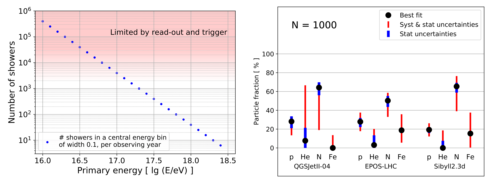<br />
图注：Left: The expected number of measured air showers in bins of width 0.1 in log-energy, in one net observing year. Technical limitations are not yet known, but are expected around an order of magnitude indicated by the area shaded in red. Right: example uncertainties on the mass composition fractions in a mock dataset of 1000 showers, assuming the same systematic uncertainties as for the LOFAR analysis. Figure taken from \(\cite{Corstanje:2025}.\)<br />
对应解读：建议重点查看的灵敏度预测、样本量和质量组成不确定度图表。<br />
入选理由：该图直接给出SKA-Low在银河—河外过渡能区预期可测空气簇射数以及质量组成分数的不确定度，是评估论文核心主张“SKA-Low可推进该能区宇宙线质量组成测量”的最关键量化证据。右图还包含系统误差假设下的组成约束能力，比单纯示意图更能支撑科学结论。<br />
来源与置信度：\(arxiv_source\)；high；\(arxiv_source\) / \(ska_chapter_arxiv.tex\):figure[9]</p>
<p><strong>Fig08</strong><br />
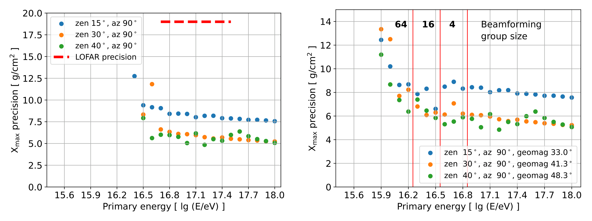<br />
图注：The precision in reconstructing \(\Xmax,\) versus primary energy. Left panel: using single antennas. Right panel: using beamforming in groups of 4, 16, or 64 antennas, with higher numbers towards lower primary energy. This considerably lowers the reliable detection threshold. Figure taken from \(\cite{Corstanje:2025}.\)<br />
对应解读：建议重点查看的重建精度、探测阈值和灵敏度预测图表。<br />
入选理由：该图展示Xmax重建精度随初级能量的变化，并比较单天线与不同规模波束形成方案，是判断SKA-Low能否覆盖10^16–10^18 eV并降低可靠探测阈值的核心性能图。它直接关联质量组成测量的统计与系统可行性。<br />
来源与置信度：\(arxiv_source\)；high；\(arxiv_source\) / \(ska_chapter_arxiv.tex\):figure[8]</p>
<p><strong>Fig07</strong><br />
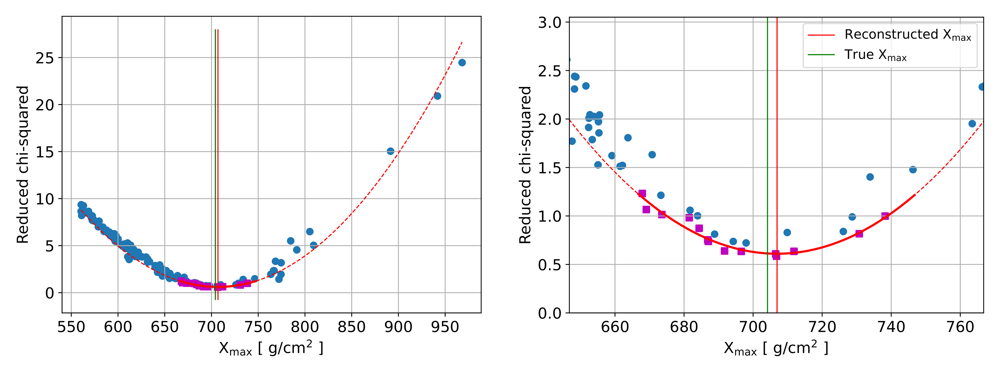<br />
图注：An example of an \(\Xmax\) reconstruction. Fitting each of the showers in the ensemble gives a reduced $\chi^2$ value, which follows a parabolic curve near its minimum value. The minimum of a parabola fitted to the lower envelope of points is taken as the \(\Xmax\) estimate. The right panel shows a close-up. Figure taken from \(\cite{Corstanje:2025}.\)<br />
对应解读：模型拟合与残差诊断相关段落：Xmax重建中的χ²拟合与抛物线最小值。<br />
入选理由：该图展示通过模拟簇射集合拟合观测无线电足迹并以约化χ²下包络确定Xmax的具体重建流程，包含拟合优度、最小值和局部放大，是理解论文方法可靠性的关键诊断图。<br />
来源与置信度：\(arxiv_source\)；high；\(arxiv_source\) / \(ska_chapter_arxiv.tex\):figure[7]</p>
<p><strong>Fig12</strong><br />
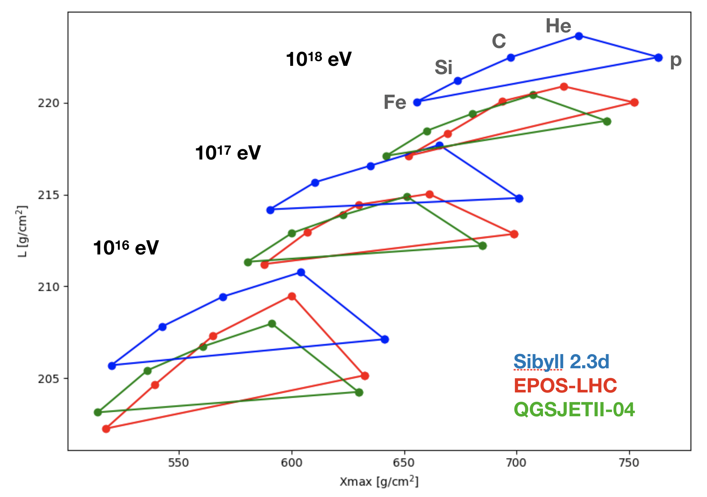<br />
图注：The mean values of $L$ and \(\Xmax\) for four different elements, at primary energies $10^{16}$, $10^{17}$, and $\unit[10^{18}]{eV}$, and for three hadronic interaction models. Notably, hydrogen (noted as p, for protons) stands out from the other elements, which is helpful for mass composition analysis. Figure taken from \(\cite{Buitink:2023reh}.\)<br />
对应解读：关键图表逐图导读中应关注的质量组成判别量、强子相互作用模型比较和系统差异。<br />
入选理由：该图比较不同元素、能量和强子相互作用模型下L与Xmax的均值，直接展示质量组成可分辨性以及模型依赖性。它比单一事件示例更能说明论文如何利用额外纵向分布参数改进成分分析。<br />
来源与置信度：\(arxiv_source\)；high；\(arxiv_source\) / \(ska_chapter_arxiv.tex\):figure[12]</p>
<p><strong>Fig03</strong><br />
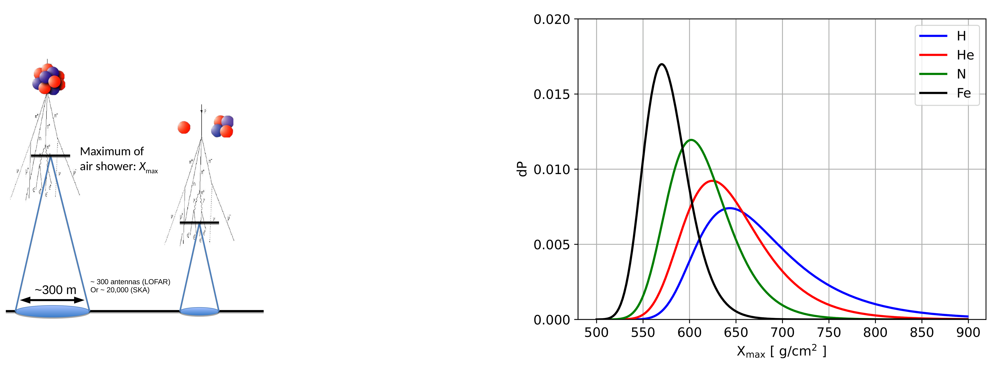<br />
图注：Left: a schematic picture showing how, to lowest order, the radio footprint becomes smaller for air showers that reach a maximum \(\Xmax\) closer to the ground (higher values), allowing to infer \(\Xmax\) from data. Right: probability densities of \(\Xmax\) for four selected primary elements; nitrogen is usually chosen as proxy for C/N/O.<br />
对应解读：建议重点查看的Xmax物理含义和不同初级质量概率分布示意。<br />
入选理由：该图用无线电足迹大小解释Xmax推断，并给出不同初级核素的Xmax概率密度，是理解为什么Xmax能作为质量组成诊断量的基础图。它为后续重建精度和组成约束图提供必要物理背景。<br />
来源与置信度：\(arxiv_source\)；high；\(arxiv_source\) / \(ska_chapter_arxiv.tex\):figure[3]</p>
<p><strong>Fig04</strong><br />
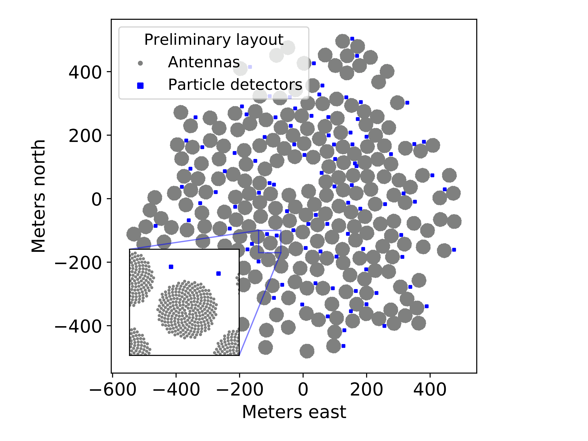<br />
图注：The antenna layout of the SKA inner core at the AA4 stage, with an example distribution of 100 particle detector boxes of $\unit[1]{m^2}$ (points not to scale). The final locations are to be optimized to on-site logistics. The earlier development milestone denoted AA* comprises about $\unit[90]{\%}$ of this array. Figure taken from \(\cite{Corstanje:2025}.\)<br />
对应解读：实验装置与样本选择相关图表：SKA内核天线布局及粒子探测器阵列配置。<br />
入选理由：该图给出SKA-Low内核和附加粒子探测器的空间布局，是评估论文提出观测方案可实施性、触发和联合探测设计的基础。虽然科学诊断量不如Xmax和组成图直接，但对理解仪器能力和后续模拟设置很重要。<br />
来源与置信度：\(arxiv_source\)；high；\(arxiv_source\) / \(ska_chapter_arxiv.tex\):figure[4]</p>
<h4 id="_35">强相关工作</h4>
<p>这篇论文属于“同类仪器与同类科学目标”工作，而不是某个命名瞬变或单源事件的后续。应把相关文献分成几组检索：第一组是 LOFAR 宇宙线无线电探测和 \(X_{\max}\) 重建基础工作，关键词包括 “LOFAR cosmic rays Xmax radio footprint composition”、“Corstanje LOFAR Xmax”、“Buitink radio cosmic-ray composition”。第二组是 SKA 宇宙线科学白皮书或 SKA-Low transient buffer/low-frequency cosmic-ray capability，关键词包括 “SKA-Low cosmic ray air shower radio detection”、“SKA cosmic rays science case”。第三组是过渡能区组成实验，包括 KASCADE-Grande、Tunka、IceTop、Auger low-energy extensions 和 Telescope Array low-energy extension。</p>
<p>公共入口可从当前论文 arXiv 页面 https://arxiv.org/abs/2606.27270 出发，沿参考文献查找 LOFAR 与 SKA 相关论文；SKA 官方站点 https://www.skatelescope.org/ 可用于核对 SKA-Low 建设阶段和公开仪器信息；LOFAR 官方站点 https://www.lofar.org/ 可用于背景核对；Pierre Auger Observatory 科学结果页 https://www.auger.org/science/scientific-results 可用于比较超高能宇宙线能谱与组成的大尺度结论。若需要历史对照，应检索 KASCADE-Grande 对第二膝和轻/重成分膝的测量，以及 Pierre Auger 对 \(X_{\max}\) 随能量演化的综述。</p>
<p>张力线索主要来自不同实验能量标定和强子模型选择。过渡能区的组成结论常因使用 QGSJet、EPOS、Sibyll 等模型而变化，且不同实验对 \(X_{\max}\)、缪子数和电磁成分的系统误差不同。因此，读本文时不应只问 SKA-Low 是否能给出更小统计误差，还要问它能否提供与既有实验可交叉校准的新观测量，例如二维 \((L,X_{\max})\) 或更密集的无线电脚印形状。</p>
<p><strong>同一事件 / 同类源线索</strong>：</p>
<p>（未提供）</p>
<p><strong>相似工作</strong>：</p>
<p>（未提供）</p>
<p><strong>基础理论 / 方法工作</strong>：</p>
<p>（未提供）</p>
<p><strong>相反观点 / 张力线索</strong>：</p>
<p>（未提供）</p>
</details>
<h3 id="4-a-census-of-variable-and-transient-radio-sources-within-high-energy-neutrino-fields">4. A Census of Variable and Transient Radio Sources Within High-Energy Neutrino Fields</h3>
<ul>
<li>来源：arXiv / astro-ph.HE</li>
<li>链接：https://arxiv.org/abs/2606.26395v1</li>
<li>作者：Florian Rösch, Matthias Kadler, Roger P. Deane, Philip G. Edwards, Karl Mannheim, Jack F. Radcliffe</li>
<li>评分：novelty 7/10，importance 8/10，relevance 9/10，final 9.05/10</li>
<li>推荐理由：直接面向 IceCube 高能中微子场的瞬变/变源射电普查与 SKA-Mid/VLBI 后续策略，关联天体源识别和多信使高能天体物理，值得关注。</li>
</ul>
<p><strong>中文题目</strong>：高能中微子误差区内可变和暂现射电源的普查：从 MeerKAT 到 SKA-Mid 与宽场 VLBI</p>
<p><strong>做了什么</strong>：这篇文章讨论如何在 IceCube 高能中微子定位区域内系统寻找可能的射电对应体，重点不是宣布单个源的确定关联，而是设计一套更完整的“普查”策略。作者以 IceCube 金牌警报 IC240929A 的 MeerKAT 低频观测为例，在其 \(90\%\) 定位不确定区域内探测到约 \(550\) 个微弱射电源，流量密度约从 \(169\,\mu\mathrm{Jy}\) 到 \(140\,\mathrm{mJy}\)。他们进一步论证，SKA-Mid 的 AA4 阶段可比 MeerKAT 深约 \(4\) 倍，从而把候选源搜索推进到更暗、更普通的射电源族群；再结合宽场 VLBI，可用亮温和毫角秒结构判断哪些源是真正紧致的 AGN 候选体。</p>
<p><strong>为什么重要</strong>：IceCube 已经发现弥散高能中微子背景，但除少数 AGN 或耀变体事件外，大部分中微子通量的天体起源仍不清楚。过去的多信使关联常偏向明亮、已知、喷流指向地球的源；如果主要贡献来自数量众多但单个较暗的射电源，传统搜索会严重漏检。本文的重要性在于把问题从“找一个著名对应体”转为“在中微子误差区内建立深射电源 census，并用变源性和紧致性筛选物理相关候选体”。</p>
<p><strong>理论 / 观测 / 仪器方法价值</strong>：对观测方法而言，本文给出了一条可操作的路线：SKA-Mid 深场连续谱观测负责发现亚毫央斯基源，时间域监测负责识别暂现和变源，宽场 VLBI 负责确认高亮温紧致核和喷流结构。对理论而言，这种 census 能约束暗弱 AGN、潮汐瓦解事件、伽马射线暴余辉、致密星并合后余辉等候选族群的数密度和射电活动占空比。对仪器规划而言，它把 SKA 灵敏度、视场、源混淆和 VLBI 分辨率如何服务中微子天文学讲清楚。</p>
<p><strong>为什么应该关注</strong>：如果你关心高能中微子起源，这篇文章提醒你：真正限制关联工作的可能不是单个警报的能量，而是误差区内大量普通射电源的统计、分类和随时间变化。未来 SKA 时代，每个 IceCube 或下一代中微子警报都可能对应数百到数千个射电源；没有系统 census、亮温判据和变源统计，所谓“空间重合”很容易被误判。本文值得关注，因为它提前定义了下一阶段多信使射电跟进的样本、诊断量和工作流。</p>
<details class="paper-detail">
<summary>展开详细解读：文章讲解、背景、理论、重点章节、图表与相关工作</summary>
<h4 id="_36">文章详细讲解</h4>
<p>科学问题：IceCube 探测到的高能宇宙中微子需要强子加速器作为源，但目前能以较高置信度关联到具体天体的事件很少。TXS 0506+056 等案例说明喷流 AGN 可以参与中微子产生，但这并不等于弥散中微子背景主要由少数明亮耀变体贡献。若主贡献来自更暗、更常见、射电上只有微弱或暂现活动的源，依赖已知目录和明亮源匹配的策略会有明显选择效应。</p>
<p>作者怎么做：文章以 IceCube 金牌警报 IC240929A 的 MeerKAT 观测作为基准场，展示在中微子 \(90\%\) 定位区域内可以发现约 \(550\) 个低频射电源。观测频率为 \(815\,\mathrm{MHz}\)，源流量密度从 \(169\,\mu\mathrm{Jy}\) 延伸到 \(140\,\mathrm{mJy}\)。作者并不把这些源逐一声称为中微子源，而是把它们视为未来多历元、多分辨率筛选的输入样本：先用 SKA-Mid 深度连续谱发现完整源表，再用时间域差分找变源和暂现源，最后用宽场 VLBI 判断是否存在高亮温紧致核。</p>
<p>关键结果：文章的核心结论是，现有 MeerKAT 已能在单个中微子定位区域内揭示大量过去未被多信使搜索重点考虑的微弱射电源；而 SKA-Mid AA4 阶段的灵敏度约可达到 MeerKAT 的 \(4\) 倍，意味着同类场中会出现更庞大的候选库。由于低频源计数在亚毫央斯基区间快速上升，灵敏度提升并不只是多发现几个源，而是显著改变候选源统计的完整性。宽场 VLBI 的加入尤其关键，因为仅靠单天线或连通阵列的角分辨率很难区分星形成星系、扩展射电星系和真正紧致的 AGN 核。</p>
<p>局限和下一步：本文主要是方法与前景论证，而不是完成了对 IC240929A 的物理归因。约 \(550\) 个空间重合源中，绝大多数预计是背景射电源；要建立因果关联，必须依赖多历元变源性、爆发时间与中微子到达时间的一致性、VLBI 亮温、光学/红外/高能对应体，以及对试验因子和后验选择的严格处理。下一步应是对多个 IceCube 警报场做统一深度、统一源提取、统一变源判据的统计样本，并把候选源的射电性质与中微子警报能量、方向误差和背景率联合建模。</p>
<h4 id="_37">关键结果是怎么做出来的</h4>
<p>本文最实在的证据链从 IC240929A 这个具体中微子场开始。作者引用此前对该 IceCube 金牌警报的 MeerKAT \(815\,\mathrm{MHz}\) 观测结果：在中微子 \(90\%\) 定位不确定区域内，源提取得到约 \(550\) 个射电源，流量密度范围约为 \(169\,\mu\mathrm{Jy}\) 至 \(140\,\mathrm{mJy}\)。这个数字本身就是一个关键结果，因为它量化了“中微子误差区内候选源拥挤程度”——即使是相对较好的金牌警报，也不是在空白天区里找一个源，而是在数百个射电源中筛选少数物理相关对象。</p>
<p>样本选择逻辑并不是先验挑选明亮 AGN，而是在定位区域内做连续谱源表。这样做能减少已知目录偏差，但也带来大量偶然重合。作者强调，候选源的下一步筛选需要变源性和暂现性信息，因为多类潜在中微子源——喷流 AGN、爆发态射电核、伽马射线暴余辉、潮汐瓦解事件或其他强子加速暂现源——都可能表现为射电随时间变化。单历元源表只能给出 census 的底图，不能单独给出关联显著性。</p>
<p>显著性方面，本文的论证重点是观测能力和候选源统计，而不是给出某个源相对中微子事件的最终 \(p\) 值。读者应把“约 \(550\) 个源”理解为后续似然分析中的背景项：若某个变源落在中微子定位概率高的区域，且具有高亮温紧致核、合理的爆发时间窗和少见的多波段特征，它的似然比才会上升。反过来，如果只看到普通稳定射电源，即使位置重合也很难克服大样本带来的试验因子。</p>
<p>文章支持结论的图表应主要围绕三类诊断：第一，IC240929A 定位概率等值线与 MeerKAT 源表叠加图，用于展示候选源面密度；第二，源流量密度分布或累积源计数，用于说明灵敏度提升会怎样改变候选源数；第三，MeerKAT 与 SKA-Mid AA4 的灵敏度、视场和检测阈值比较，用于量化 SKA 的增益；第四，宽场 VLBI 对候选源紧致成分的分辨能力示意或亮温阈值讨论。</p>
<p>系统误差和稳健性主要来自几处。源提取阈值、局部噪声变化、主波束校正、低频电离层相位误差和旁瓣残差会影响微弱源完整性；不同历元间通量标定不一致会伪造变源；VLBI 相关处理若相位校准不足，会把紧致源漏掉。稳健分析应检查不同检测阈值下源数是否稳定、空场或随机中微子位置的偶然重合率、不同时间窗下变源候选数，以及用已知 AGN 目录交叉匹配后得到的分类一致性。</p>
<details class="paper-subdetail">
<summary>展开背景、理论、公式、模型、章节和图表导读</summary>
<h4 id="_38">背景知识</h4>
<p>高能宇宙中微子是寻找宇宙线加速器的直接线索。与伽马射线不同，中微子几乎不被吸收，也不被磁场偏转；若能定位到天体源，就能证明该源中存在高能强子过程。问题在于，IceCube 单个事件的角定位常常覆盖从平方度到数十平方度不等的天区，而这个天区内包含大量电磁源，空间重合本身远远不够。</p>
<p>历史上，最受关注的个例是 TXS 0506+056 与 IceCube-170922A 的多信使关联，以及随后在该方向发现的早期中微子过量。这类结果让耀变体成为重要候选源，但也产生一个容易误解的印象：只要找亮的伽马射线耀变体就能解释中微子背景。实际上，已有研究显示明亮伽马射线耀变体对弥散中微子通量的贡献可能有限，暗弱或非典型源族群仍有很大空间。</p>
<p>射电观测在中微子源搜寻中有特殊价值。相对高能伽马射线，射电喷流和余辉持续时间更长，能追踪非热电子、磁场和相对论外流结构。低频射电尤其适合做大视场 census，但它也更容易受到扩展辐射、混淆和传播效应影响。因此，低频连续谱发现候选源后，需要更高频、多历元或 VLBI 数据来判断是否为紧致活动核。</p>
<p>现在重新看这个问题的原因是仪器能力正在改变。MeerKAT 已经能在中微子误差区内做到微央斯基到亚毫央斯基级别的源表；SKA-Mid 将进一步提高灵敏度和巡天效率；同时宽场 VLBI 技术使得不再只能对一个已知亮源做毫角秒成像，而可以在同一主波束内批量测试许多候选源的紧致性。</p>
<p>该领域常见误区包括：把位置重合等同于物理关联；忽略中微子警报后验概率图的不均匀性；只关注目录中已有的明亮 AGN；把射电亮度直接等同于中微子产额；以及忽略试验因子。本文的思路正好针对这些误区：先建立尽可能完整的射电源 census，再用变源性、紧致性和统计背景率逐层筛选。</p>
<h4 id="_39">基础理论 / 方法脉络</h4>
<p>从物理图像看，高能中微子通常来自高能质子或原子核与光子场或气体的相互作用。若源内存在相对论喷流、激波或磁重联区域，强子可被加速到足够高能；随后通过 \(p\gamma\) 或 \(pp\) 过程产生带电介子，带电介子衰变给出中微子。射电辐射本身主要来自相对论电子的同步辐射，并非中微子的直接产物，但它标记了非热粒子、磁场和喷流活动，因此是候选源筛选的重要间接线索。</p>
<p>本文相关的关键观测量是射电流量密度、源面密度、时间变源幅度和紧致成分亮温。流量密度决定源能否被 MeerKAT 或 SKA-Mid 探测；源面密度决定偶然重合背景；变源性提供与中微子事件时间相关的线索；VLBI 亮温则帮助区分 AGN 核与普通星形成辐射。对 AGN 来说，若毫角秒尺度上存在高亮温紧致核，通常意味着非热喷流和多普勒增强，这比单纯的低频总流量更接近中微子源候选的物理要求。</p>
<p>观测方法上，连通阵列连续谱图像先给出大视场源表。源提取通常依赖局部噪声图和信噪比阈值，随后进行主波束校正和通量标定。多历元比较时，要把不同图像卷积到共同分辨率，并处理不同 \(u v\) 覆盖造成的扩展源通量差异。若不这样做，结构分辨效应和标定误差会被误判为变源。</p>
<p>宽场 VLBI 的逻辑是利用长基线提供毫角秒角分辨率。对同一个候选源，若连通阵列测得较高总流量，但 VLBI 只恢复很少通量，说明辐射主要是扩展结构；若 VLBI 恢复紧致高亮温核心，则更支持 AGN 分类。这里的退化在于：一个真正的 AGN 也可能因散射、低频自吸收、相位校准不足或喷流处于低态而在 VLBI 中较弱；反过来，某些紧致星暴核或超新星遗迹复合体也可能在有限灵敏度下模拟紧致成分。</p>
<p>统计上，本文隐含的核心问题是多信使关联的似然比。一个候选源是否值得关注，不只取决于它离中微子最佳位置多近，还取决于该位置的中微子后验概率、同类源在天空中的表面密度、它的变源概率、亮温分布和多波段先验。SKA 深观测会同时增加真实对应体发现概率和背景候选数，因此后续分析必须把选择函数和试验因子纳入模型。</p>
<h4 id="_40">公式与推导</h4>
<p>第一步从中微子产生的基本强子图像出发。若高能质子与光子相互作用并产生 \(\Delta\) 共振，可用近似阈值关系估计所需质子能量：</p>
<div class="math-display">\[E_p\,\epsilon_\gamma \gtrsim 0.3\,\mathrm{GeV^2}\,\Gamma^2\,(1+z)^{-2}.\]</div>
<p>这里 \(E_p\) 是观测者系质子能量，\(\epsilon_\gamma\) 是目标光子能量，\(\Gamma\) 是外流洛伦兹因子，\(z\) 是红移。该式说明射电喷流候选源若要产生高能中微子，必须具备足够强的非热粒子加速和合适的辐射场。</p>
<p>带电介子衰变后，单个中微子通常获得母质子能量的一个小比例，可粗略写成：</p>
<div class="math-display">\[E_\nu \simeq 0.05\,E_p.\]</div>
<p>这里 \(E_\nu\) 是中微子能量。这个比例不是精确谱模型，而是把 IceCube 探测到的 \(\mathrm{TeV}\) 到 \(\mathrm{PeV}\) 中微子与源内 \(\mathrm{PeV}\) 到 \(\mathrm{EeV}\) 级强子加速联系起来的尺度估计。</p>
<p>射电观测测到的是流量密度。若源的谱能量分布在频率 \(\nu\) 附近可近似为幂律，单色光度为：</p>
<div class="math-display">\[L_\nu = 4\pi D_L^2\,S_\nu\,(1+z)^{\alpha-1}.\]</div>
<p>其中 \(L_\nu\) 是静止系单色光度，\(D_L\) 是光度距离，\(S_\nu\) 是观测流量密度，\(\alpha\) 由 \(S_\nu\propto \nu^{-\alpha}\) 定义。这个式子用于把 MeerKAT 或 SKA 的探测阈值转成不同红移下可见的射电源族群。</p>
<p>源表完整性首先由图像噪声和检测阈值决定。若局部均方根噪声为 \(\sigma_\mathrm{rms}\)，采用 \(q\sigma\) 阈值，则近似检测极限为：</p>
<div class="math-display">\[S_\mathrm{lim}=q\,\sigma_\mathrm{rms}.\]</div>
<p>这里 \(q\) 常取 \(5\) 左右以控制伪源率。本文讨论 SKA-Mid AA4 比 MeerKAT 灵敏约高 \(4\) 倍，等价于 \(S_\mathrm{lim}\) 降低约 \(4\) 倍，因此会显著增加亚毫央斯基源数。</p>
<p>若微弱射电源的累积源计数可近似为幂律，则中微子误差区内的背景候选数为：</p>
<div class="math-display">\[N(>S_\mathrm{lim})=\Omega_\nu\,K\,S_\mathrm{lim}^{-\beta}.\]</div>
<p>这里 \(\Omega_\nu\) 是中微子定位区域的有效面积，\(K\) 和 \(\beta\) 描述低频源计数。该式解释了为什么灵敏度提升会带来双刃剑：更容易发现真实暗弱对应体，也会引入更多偶然重合背景源。</p>
<p>判断候选源是否紧致，可用 VLBI 亮温估计：</p>
<div class="math-display">\[T_b \simeq 1.22\times 10^{12}\,\mathrm{K}\,\frac{S_\nu}{\mathrm{Jy}}\left(\frac{\nu}{\mathrm{GHz}}\right)^{-2}\left(\frac{\theta_\mathrm{maj}\theta_\mathrm{min}}{\mathrm{mas^2}}\right)^{-1}(1+z).\]</div>
<p>其中 \(T_b\) 是亮温，\(\theta_\mathrm{maj}\) 和 \(\theta_\mathrm{min}\) 是角尺寸主轴和次轴。若 \(T_b\) 远高于普通热辐射或星形成区可达到的温度，通常支持 AGN 喷流解释。</p>
<p>多历元变源性可用归一化通量差表征：</p>
<div class="math-display">\[V_{ij}=\frac{S_i-S_j}{\sqrt{\sigma_i^2+\sigma_j^2+f_\mathrm{cal}^2(S_i^2+S_j^2)}}.\]</div>
<p>这里 \(S_i\) 和 \(S_j\) 是两个历元的流量密度，\(\sigma_i\) 和 \(\sigma_j\) 是测量误差，\(f_\mathrm{cal}\) 是相对通量标定系统误差。若 \(|V_{ij}|\) 很大，源可能是真变源；但必须确认不是分辨率、主波束或去卷积误差导致。</p>
<p>空间关联可用中微子方向后验概率与射电源背景密度构建似然比：</p>
<div class="math-display">\[\Lambda_k=\frac{P_\nu(\hat{n}_k)\,P_\mathrm{var}(d_k\mid H_1)\,P_\mathrm{VLBI}(d_k\mid H_1)}{\rho_\mathrm{r}(S_k)\,P_\mathrm{var}(d_k\mid H_0)\,P_\mathrm{VLBI}(d_k\mid H_0)}.\]</div>
<p>其中 \(\hat{n}_k\) 是第 \(k\) 个射电源方向，\(P_\nu\) 是中微子定位概率密度，\(\rho_\mathrm{r}\) 是相应流量处的射电源面密度，\(H_1\) 表示物理关联假设，\(H_0\) 表示偶然背景假设，\(d_k\) 代表变源和 VLBI 数据。</p>
<p>若在一个场中检验 \(N\) 个候选源，局部显著性还要考虑试验因子。小概率近似下，全局虚警概率为：</p>
<div class="math-display">\[p_\mathrm{global}\simeq 1-(1-p_\mathrm{local})^N \simeq N\,p_\mathrm{local}.\]</div>
<p>这里 \(p_\mathrm{local}\) 是单个候选源的局部 \(p\) 值。IC240929A 场内约 \(550\) 个源这一事实正说明，任何单源关联声称都必须经过全局化修正。</p>
<h4 id="_41">模型拟合 / 应用方法</h4>
<p>这类工作的拟合首先体现在射电图像层面。连续谱成像后，源提取通常用二维高斯或多高斯模型拟合岛状辐射，得到峰值流量、积分流量、位置、角尺寸和局部噪声。对微弱源而言，峰值信噪比、积分流量偏差、干净偏差和 Eddington bias 都会影响源计数；因此源表不只是一个列表，还应配套完整性、可靠性和注入-恢复模拟。</p>
<p>第二层拟合是变源性建模。多历元流量可用常数模型、随机游走模型、爆发模型或简单分段模型比较。常数模型的残差若显著超过测量误差和通量标定误差，才支持真变源。对中微子关联而言，尤其要看射电变化是否在物理上合理的时间窗内出现；低频射电爆发可能滞后高能活动，因此模型不能简单要求与中微子到达时刻完全同日。</p>
<p>第三层是候选源分类。VLBI 检测与否、亮温、紧致通量占比、谱指数、光学红移、红外颜色和伽马射线对应体都可作为分类特征。可以采用阈值式筛选，也可以建立贝叶斯分类器或层级模型。退化关系在于，射电亮源不一定是强中微子源，紧致源也不一定处于强子加速态；同时，暗弱源若没有红移，光度和能量预算会有很大不确定性。</p>
<p>第四层是多信使关联似然。合理的模型应同时包含中微子方向概率图、能量代理量、射电源面密度、时间窗、变源幅度和源族群先验。背景可通过随机旋转中微子位置、使用非警报空场、或在同一场中打乱时间标签估计。若不处理后验选择，例如只在看到有趣射电源后才定义时间窗或候选类别，显著性会被高估。</p>
<p>实际应用中，SKA-Mid 的高灵敏度会让拟合问题更复杂而不是更简单。更深的图像提高真实对应体发现率，但也增加源混淆和候选数；宽场 VLBI 能减少背景，但会引入相位校准、带宽/时间平均 smearing 和非均匀灵敏度等系统项。因此未来的模型拟合应把仪器选择函数写入似然，而不是把源表当作完美、均匀、无偏的观测结果。</p>
<h4 id="_42">重点章节 / 结果段落怎么读</h4>
<p>数据/样本部分应重点读 IC240929A 的 MeerKAT 场描述，包括观测频率、定位区域定义、源提取阈值和得到约 \(550\) 个源的流量范围。这里决定了后文所有“候选源很多”的定量基础，也决定了源表是否能用于和其他中微子场比较。</p>
<p>方法部分应关注作者如何从 MeerKAT 推广到 SKA-Mid AA4。关键不是简单说 SKA 更灵敏，而是看灵敏度提升约 \(4\) 倍会怎样改变 \(S_\mathrm{lim}\)、源计数和变源探测能力。读者应检查作者是否讨论了视场、分辨率、低频混淆和动态范围限制。</p>
<p>主结果部分应把“射电源 census”与“中微子对应体识别”区分开。本文的结果是证明在中微子场内存在大量过去可能被忽视的暗弱射电源，并提出完整筛选流程；它不是证明约 \(550\) 个源中某一个已经产生了 IC240929A。</p>
<p>讨论部分应看宽场 VLBI 的角色。这里的重点是亮温和毫角秒结构能否有效区分 AGN 与非 AGN，以及 VLBI 检出率如何影响候选源优先级。读者还应关注作者是否说明了 VLBI 对低流量源的灵敏度瓶颈。</p>
<p>稳健性或前景段落应检查作者如何处理偶然重合、试验因子和多历元需求。若文章把未来 SKA 观测作为主张的一部分，读者应特别看其是否给出可复制的观测策略：多少历元、什么时间间隔、怎样定义变源、如何与中微子警报时间关联。</p>
<h4 id="_43">建议重点查看的图表</h4>
<ol>
<li>
<p>中微子定位概率图与 MeerKAT 射电源叠加图：看 \(90\%\) 区域边界、源的位置分布是否均匀、是否有源集中在高概率区域，以及是否标出明亮或已知 AGN。</p>
</li>
<li>
<p>流量密度分布或累积源计数图：看最低可靠流量约 \(169\,\mu\mathrm{Jy}\) 附近是否出现不完整性，亮端是否被少数源主导，以及源计数斜率如何影响 SKA 深观测后的候选数。</p>
</li>
<li>
<p>MeerKAT 与 SKA-Mid AA4 灵敏度比较表或曲线：看灵敏度提升约 \(4\) 倍对应的积分时间、带宽和频段假设，避免把理想热噪声提升误读为实际图像动态范围提升。</p>
</li>
<li>
<p>变源/暂现源筛选流程图：看作者如何定义多历元比较、显著变源阈值和时间窗；若没有真实多历元结果，应确认这只是未来策略而非已完成检测。</p>
</li>
<li>
<p>VLBI 亮温或紧致性诊断图：看横轴是否为流量或角尺度，纵轴是否为 \(T_b\) 或紧致通量占比；关键是哪些源能达到 AGN 判据，而不是总流量最大者。</p>
</li>
<li>
<p>候选源分类或多波段交叉匹配表：看每个候选源是否有光学/红外/伽马射线对应体、红移、谱指数和已知 AGN 标识；缺失项本身也是后续观测优先级的一部分。</p>
</li>
<li>
<p>误差预算或系统误差诊断：看主波束校正、通量标定、电离层相位、旁瓣残差和局部噪声变化是否被量化，尤其是在低频微弱源区间。</p>
</li>
</ol>
<h4 id="_44">关键图表逐图导读</h4>
<p>图 1：建议首先看中微子定位区域与射电源表的叠加图。横纵轴通常是赤经和赤纬，背景或等值线表示 IceCube 方向后验概率，点源表示 MeerKAT 检出的射电源。读图重点是源的数量级和空间拥挤程度，而不是把最近的一个点直接当作对应体。陷阱是 \(90\%\) 等值线内的源很多，最佳定位附近的空间重合仍可能只是背景。</p>
<p>图 2：若有流量密度直方图或 \(\log N-\log S\) 图，横轴应为 \(S_\nu\)，纵轴为源数或累积源数。低流量端的转折可能来自观测不完整性，而不一定是真实天体分布。模型线或参考源计数可用于判断该中微子场是否异常；若与普通射电场一致，说明大多数源很可能是普通背景源。</p>
<p>图 3：灵敏度比较图通常会展示 MeerKAT 与 SKA-Mid AA4 的噪声或检测阈值。横轴可能是积分时间或频率，纵轴可能是 \(\sigma_\mathrm{rms}\) 或 \(S_\mathrm{lim}\)。读者应确认所谓约 \(4\) 倍增益是否基于相同带宽、相同成像权重和相似动态范围条件；实际低频宽场成像常受系统误差限制。</p>
<p>图 4：若文章给出 VLBI 诊断示意，横轴可能是角尺度或基线长度，纵轴可能是相关通量密度或亮温下限。模型线代表紧致 AGN 核、扩展射电星系或星形成源的不同预期。读图陷阱是 VLBI 未检出不必然排除 AGN，因为灵敏度、相位参考和源处于低态都会影响检出。</p>
<p>图 5：若有多历元变源性图，横轴通常为时间，纵轴为流量密度或归一化残差。应重点看误差条是否包含通量标定系统误差，以及不同频率或不同分辨率的测量是否被直接混用。真正有意义的是与中微子时间有关、统计上显著且能通过图像质量检查的变化。</p>
<p>图 6：若有候选源优先级表，应把它当作后续观测路线图而非最终关联名单。表中最关键的列应包括中微子定位概率、流量密度、变源指标、VLBI 紧致性、谱指数、多波段对应体和红移。陷阱是按单一指标排序，例如只按射电亮度或距离最佳定位点最近排序，都会偏离多信使关联的真实证据链。</p>
</details>
<h4 id="_45">论文原图 / 可嵌入图片</h4>
<p><strong>Fig01</strong><br />
<br />
图注：SDP pipeline images of MeerKAT observations at $815\,\mathrm{MHz}$ of the IceCube neutrino event IC240929A reported on 29 September 2024 in GCN Circular #37625. The yellow dashed lines illustrates the 90\% containment box given by the 90\% containment uncertainties in R.A. and Dec., while the blue line shows the elliptically shaped 90\% localization region of the neutrino field.<br />
对应解读：“建议重点查看的图表”第1项，以及“关键图表逐图导读”图1：中微子定位概率/90%区域与 MeerKAT 射电源叠加。<br />
入选理由：这是支撑全文核心论点的首要图：直接展示 IC240929A 的90%定位区域、MeerKAT 815 MHz 成像结果和场内大量射电源的空间分布。它最能说明为什么单靠空间重合无法建立中微子对应体关联，也能帮助读者理解约550个候选源带来的背景拥挤问题。<br />
来源与置信度：\(arxiv_source\)；high；\(arxiv_source\) / \(aaskaii_Rosch01.tex\):figure[1]</p>
<p><strong>Fig04</strong><br />
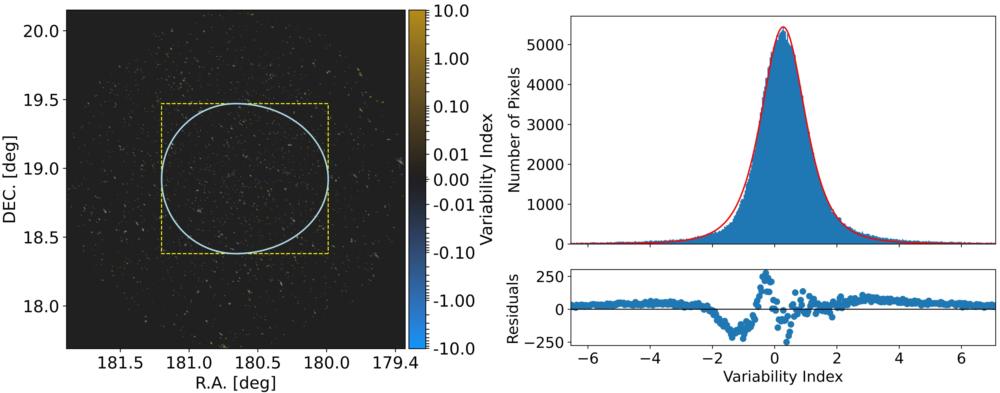<br />
图注：Left panel: Variability index map as computed by equation~(\ref{eq:variability}) showing only variability indices of island pixels that correspond to detected sources. Pixels that do not correspond to detected sources are set to zero. Negative variability indices denote an increase in flux density in the second epoch, while positive variability indices denote decreasing flux densities in the second epoch. The yellow dashed lines illustrates the 90\% containment box given by the 90\% containment uncertainties in R.A. and Dec., while the blue line shows the elliptically shaped 90\% localization region of the neutrino field. Right panel: Variability index distribution of island pixels that belong to detected radio sources fitted by a Student's t-distribution (red line). Pixels with variability indices outside of the two-sided Gaussian-equivalent $3\sigma$ confidence interval given by $-5.5 \leq V \leq 6.1$ are considered to be significant variable. These pixels are indicated by white circles in Fig.~\(\ref{fig:variability}.\) Note that the fact that the $3\sigma$ confidence interval is not symmetric around zero can probably be explained by systematics in the calibration.<br />
对应解读：“建议重点查看的图表”第4项和第7项，以及“关键图表逐图导读”图5、模型拟合中关于变源性残差和系统误差的段落。<br />
入选理由：该图不仅给出检测源像素的变源性指数空间分布，还包含变源性指数分布及 Student's t 拟合、3σ置信区间和非对称阈值说明。它直接对应日报强调的变源筛选阈值、残差分布、置信区间和校准系统误差，是判断所谓显著变源是否可靠的关键图。<br />
来源与置信度：\(arxiv_source\)；high；\(arxiv_source\) / \(aaskaii_Rosch01.tex\):figure[4]</p>
<p><strong>Fig02</strong><br />
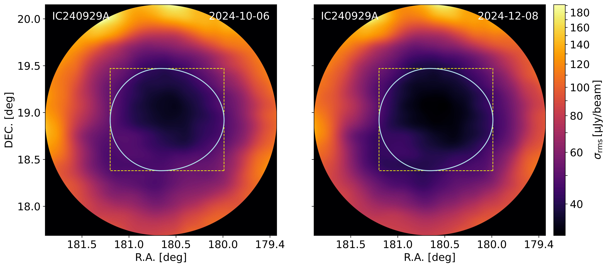<br />
图注：Estimated rms noise of MeerKAT observations at $815\,\mathrm{MHz}$ of the IceCube neutrino event IC240929A reported on 29 September 2024 in GCN Circular #37625. The yellow dashed lines illustrates the 90\% containment box given by the 90\% containment uncertainties in R.A. and Dec., while the blue line shows the elliptically shaped 90\% localization region of the neutrino field. The best sensitivity with rms values of $\sim 31\,\mathrm{\mu Jy / beam}$ is achieved at the center of the neutrino field.<br />
对应解读：“建议重点查看的图表”第3项和第7项，以及模型拟合中关于局部噪声、完整性和选择函数的讨论。<br />
入选理由：该图展示 IC240929A 场的 rms 噪声分布，并标出90%定位区域，说明最佳灵敏度约31 μJy/beam出现在场中心。它对理解169 μJy量级源表的可靠性、视场内非均匀灵敏度、主波束/成像系统误差以及后续与 SKA-Mid 灵敏度比较的基准非常重要。<br />
来源与置信度：\(arxiv_source\)；high；\(arxiv_source\) / \(aaskaii_Rosch01.tex\):figure[2]</p>
<p><strong>Fig03</strong><br />
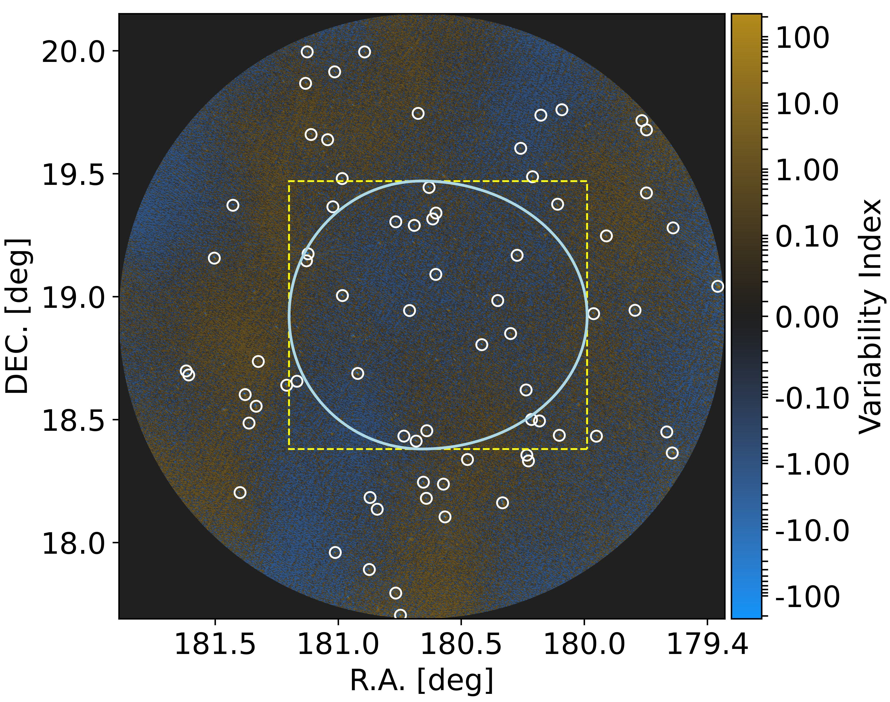<br />
图注：Variability index map as computed by equation~(\ref{eq:variability}). Negative variability indices denote an increase in flux density in the second epoch, while positive variability indices denote decreasing flux densities in the second epoch. Regions with significant variability indices that lie beyond the $3\sigma$ confidence interval of $-5.5 \leq V \leq 6.1$ are indicated by white circles. The yellow dashed lines illustrates the 90\% containment box given by the 90\% containment uncertainties in R.A. and Dec., while the blue line shows the elliptically shaped 90\% localization region of the neutrino field.<br />
对应解读：“建议重点查看的图表”第4项，以及“关键图表逐图导读”图5：多历元变源性图和显著变源候选位置。<br />
入选理由：该图给出全场变源性指数图，并用白圈标出超过-5.5到6.1这一3σ置信区间的显著区域，可直观看到变源候选相对于中微子90%定位区域的位置。虽然其统计解释不如 Fig04 完整，但作为空间定位版变源筛选结果，适合与 Fig04 配合解读。<br />
来源与置信度：\(arxiv_source\)；high；\(arxiv_source\) / \(aaskaii_Rosch01.tex\):figure[3]</p>
<h4 id="_46">强相关工作</h4>
<p>本文与 TXS 0506+056 和 IceCube-170922A 的工作处在同一多信使背景下，但研究重心不同。TXS 0506+056 是少数有较强个例证据的耀变体关联；本文关心的是更一般的问题：若中微子源不是最亮的已知耀变体，而是大量暗弱、可变、低频射电可见的源族群，观测上应该如何建立无偏 census。检索关键词可用 “IceCube radio follow-up”, “MeerKAT neutrino alert”, “SKA-Mid transient radio sources”, “wide-field VLBI neutrino counterparts”。</p>
<p>与传统伽马射线目录关联相比，这篇文章更接近射电时间域和 VLBI 分类研究。它也与关于“明亮耀变体是否能解释弥散中微子背景”的张力有关：若明亮伽马射线耀变体贡献不足，就必须认真考虑暗弱 AGN、低辐射效率喷流、被遮蔽源或暂现源。检索时可加入 “blazar contribution diffuse neutrino flux”, “sub-mJy radio AGN”, “radio variability AGN neutrino association”。</p>
<p>同一事件方面，本文明确涉及 IceCube 金牌警报 IC240929A，应检索 “IC240929A MeerKAT” 和 “IceCube Gold alert IC240929A radio”。由于我不能确信是否已有正式期刊页面或独立数据发布页面，除本文 arXiv 页面外不填写未核实链接。</p>
<p><strong>同一事件 / 同类源线索</strong>：</p>
<ul>
<li><a href="https://arxiv.org/abs/2606.26395">https://arxiv.org/abs/2606.26395</a></li>
</ul>
<p><strong>相似工作</strong>：</p>
<ul>
<li><a href="https://arxiv.org/abs/1807.08794">https://arxiv.org/abs/1807.08794</a></li>
<li><a href="https://arxiv.org/abs/1807.08816">https://arxiv.org/abs/1807.08816</a></li>
</ul>
<p><strong>基础理论 / 方法工作</strong>：</p>
<ul>
<li><a href="https://arxiv.org/abs/1304.5356">https://arxiv.org/abs/1304.5356</a></li>
<li><a href="https://arxiv.org/abs/1311.5238">https://arxiv.org/abs/1311.5238</a></li>
<li><a href="https://www.icecube.wisc.edu/science/data/">https://www.icecube.wisc.edu/science/data/</a></li>
</ul>
<p><strong>相反观点 / 张力线索</strong>：</p>
<ul>
<li><a href="https://arxiv.org/abs/1611.03874">https://arxiv.org/abs/1611.03874</a></li>
<li><a href="https://arxiv.org/abs/1901.10806">https://arxiv.org/abs/1901.10806</a></li>
</ul>
</details>
<h3 id="5-interferometric-analysis-of-air-shower-radio-emission-in-the-near-field-with-an-information-field-theory-approach">5. Interferometric Analysis of Air-shower Radio Emission in the Near Field with an Information Field Theory Approach</h3>
<ul>
<li>来源：arXiv / astro-ph.HE</li>
<li>链接：https://arxiv.org/abs/2606.26702v1</li>
<li>作者：Keito Watanabe, Karen Terveer, Sjoerd Bouma, Justin Bray, Stijn Buitink, Arthur Corstanje, Vital De Henau, Tim Huege</li>
<li>评分：novelty 8/10，importance 7/10，relevance 9/10，final 9.00/10</li>
<li>推荐理由：用信息场理论进行宇宙线空气簇射射电近场干涉重建，面向SKA-Low的高能宇宙线方法学突破，相关性和可复用性强。</li>
</ul>
<p><strong>中文题目</strong>：用信息场论做近场干涉：面向宇宙线空气簇射射电辐射的整体重建</p>
<p><strong>做了什么</strong>：这篇文章讨论如何把信息场论（Information Field Theory, IFT）用于宇宙线空气簇射射电信号的近场干涉成像与参数重建。传统空气簇射射电重建通常依赖预先计算的大量模拟模板、简化的波前或足迹参数化，以及只使用信号中的一部分信息；作者强调，IFT 可以把电场时序、天线响应、噪声和先验约束放进统一的贝叶斯场重建框架中，直接推断随空间和时间变化的辐射源或电磁场分布。文章的核心价值不在于给出一个最终的宇宙线能谱或成分结果，而在于提出并梳理一条面向 SKA-Low 等高密度阵列的分析路线：利用近场相干信息，把空气簇射当成三维时变辐射体来反演，而不是只把它当成远场平面波或简单脉冲源来拟合。</p>
<p><strong>为什么重要</strong>：超高能宇宙线的质量组成和相互作用模型仍受限于空气簇射最大深度 \(X_{\max}\)、能量标定和强子模型系统误差。射电探测的优势是近乎全天候、绝对能量标定潜力好、对电磁级联成分敏感；但高精度利用射电数据需要从复杂的天线时序中提取尽可能多的信息。若 IFT 能在实际阵列上稳定工作，它可能把射电重建从“拟合几个足迹参数”推进到“重建空气簇射辐射场”，对下一代密集射电阵列尤其重要。</p>
<p><strong>理论 / 观测 / 仪器方法价值</strong>：方法上的价值最突出：文章把空气簇射射电分析明确放在贝叶斯反问题和场推断框架内，强调响应算符、噪声协方差、先验场相关、后验不确定度和证据比较，而不是只给出点估计。对观测而言，它为 SKA-Low 这类拥有大量低频天线、近场信息丰富但数据量巨大的仪器提供了可扩展的重建思路。对理论而言，它有助于把 CoREAS、ZHAireS 等前向模拟与可微或统计反演连接起来，检验辐射机制、波前结构和纵向发展模型。</p>
<p><strong>为什么应该关注</strong>：如果你关心宇宙线成分、空气簇射射电技术、SKA-Low 的高能粒子科学，或者一般的天文贝叶斯成像方法，这篇文章值得看。它不是一篇只报告探测结果的论文，而更像方法路线图：在未来数据质量远高于现有阵列时，应该怎样避免把信息压缩得过早、怎样处理近场几何、怎样让重建误差具有物理含义。它也提醒读者，射电空气簇射的下一步瓶颈可能不只是硬件灵敏度，而是统计模型和计算方法。</p>
<details class="paper-detail">
<summary>展开详细解读：文章讲解、背景、理论、重点章节、图表与相关工作</summary>
<h4 id="_47">文章详细讲解</h4>
<p>科学问题：宇宙线空气簇射射电信号来自相对论性电子-正电子级联在地磁场和空气折射率梯度中的相干辐射。对于低频阵列，尤其是 SKA-Low 这类天线密度很高、时间采样充分的仪器，探测器接收到的不是一个简单的远场平面波，而是一个在大气中延展、快速演化、具有近场几何效应的辐射过程。传统方法常把复杂信号压缩成到达时间、脉冲幅度、能量足迹、极化量或少数模板参数，再用模拟库反推宇宙线能量、方向和 \(X_{\max}\)。这种做法有效，但会丢掉部分相位、相关性和三维结构信息。</p>
<p>作者怎么做：文章把空气簇射射电重建表述为一个贝叶斯场推断问题。所谓信息场论，就是把未知物理量看成连续场，例如辐射源分布、电场分量、纵向能量沉积或某种潜在的低维场，再通过仪器响应算符把这些场映射到每个天线的离散电压时间序列。噪声、天线方向图、带通、采样、触发窗口、校准误差都可以进入似然；对场的平滑性、相关长度、正定性或与簇射几何相关的结构则进入先验。这样，重建目标不是单个“最佳足迹”，而是后验分布。</p>
<p>关键结果：本文作为章节式方法论文，重点是展示 IFT 框架对近场干涉分析的潜力，而非发布一个完整数据集的宇宙线物理结论。它强调两点：第一，近场处理不能简单套用天文远场孔径合成，因为空气簇射辐射源离阵列只有公里量级，波前曲率、传播时间和折射率路径差都直接影响相干叠加；第二，IFT 可自然利用完整时域信号和跨天线协方差，原则上能同时估计簇射方向、能量尺度、纵向发展、场结构和不确定度。对 SKA-Low 来说，这种方法特别有吸引力，因为高密度采样让传统低维参数化显得过于保守。</p>
<p>局限和下一步：文章仍更接近方法路线和概念验证，真正困难在于高维后验的计算成本、前向模型的速度、先验是否会把真实结构过度平滑、以及对实际非高斯射频干扰和校准误差的鲁棒性。下一步需要在端到端模拟、现有阵列数据和 SKA-Low 预期配置上做量化测试：例如比较 IFT 与模板库方法在 \(X_{\max}\)、能量、方向、核心位置上的偏差和方差，检查在不同信噪比、不同阵列稀疏度、不同强子模型下的稳定性。</p>
<h4 id="_48">关键结果是怎么做出来的</h4>
<p>这篇文章的证据链不是“选取多少个真实事件后得到某个显著性发现”，而是方法论式的：作者从当前空气簇射射电重建的计算和信息利用瓶颈出发，说明为什么近场干涉需要一个能处理连续场、非平凡响应和后验不确定度的框架。样本层面，文中讨论的主要对象是宇宙线诱发空气簇射及其在射电阵列中的多天线时域数据；实际应用场景包括 LOFAR、AERA、SKA-Low 等同类射电阵列，尤其强调 SKA-Low 的高天线密度会使近场成像信息更丰富。</p>
<p>统计量方面，本文最重要的不是事件数，而是似然结构。观测数据可视为每个天线、每个极化、每个时间采样点的电压向量；模型通过响应算符把潜在辐射场或簇射参数映射为预测电压；噪声协方差则决定残差的权重。IFT 的优势是可以对未知场的后验分布做推断，从而得到平均场、协方差、边缘化参数和模型证据。读者应重点关注作者如何把“近场干涉”从简单延时求和推广到贝叶斯反演。</p>
<p>支撑结论的图表通常应包括：近场几何示意、传统远场波束形成与近场聚焦的差异、模拟空气簇射射电足迹或时域波形、IFT 重建的源场或电场分布、以及输入真值与重建结果的残差。若文中给出示例重建，关键应看重建场是否只在真实簇射轨迹附近增强，后验不确定度是否在阵列覆盖不足或信噪比较低区域变大，以及不同先验或噪声模型下结果是否稳定。</p>
<p>系统误差方面，最需要警惕的是天线方向图误差、绝对时间同步误差、频带滤波、地面反射、射频干扰和大气折射率模型。对于近场干涉，纳秒级时延误差会直接破坏相干性；对于 IFT，错误的先验相关尺度也可能把物理细节误认为噪声，或把噪声相关误认为源结构。因此稳健性检验应包括注入-恢复实验、改变噪声协方差、改变先验功率谱、改变阵列子样本、以及与独立的空气簇射模拟模板比较。</p>
<p>置信度或显著性在这种工作中更适合用后验可信区间、贝叶斯证据比、残差分布和覆盖率检验来衡量，而不是简单的 \(n\sigma\) 探测显著性。真正有说服力的结果应显示：在模拟真值已知时，IFT 给出的 \(68\\%\) 或 \(95\\%\) 后验区间具有正确覆盖率；在真实数据中，白化残差接近单位高斯噪声；在模型比较中，近场模型显著优于远场或过度简化的参数化模型。</p>
<details class="paper-subdetail">
<summary>展开背景、理论、公式、模型、章节和图表导读</summary>
<h4 id="_49">背景知识</h4>
<p>研究对象是高能宇宙线进入地球大气后产生的广延空气簇射。主粒子与大气核碰撞后产生强子级联，随后有大量电子、正电子和光子形成电磁级联。射电辐射主要来自两类机制：地磁场中正负电荷横向分离导致的横向电流辐射，以及簇射前沿中净负电荷过剩导致的 Askaryan 辐射。二者叠加产生具有明确极化结构和足迹形态的纳秒到百纳秒射电脉冲。</p>
<p>历史上，空气簇射射电探测经历过早期模拟和小阵列验证，到 LOFAR、AERA、Tunka-Rex、CODALEMA 等阵列后进入精密重建阶段。现有方法已能用射电足迹估计宇宙线能量，并通过与 CoREAS 等模拟比较获得 \(X_{\max}\)。不过，这些重建通常要生成大量候选簇射模拟，再与观测的脉冲幅度或功率足迹比较，计算成本高，而且对真实数据的压缩较强。</p>
<p>为什么现在值得重新看：SKA-Low 代表了一个质变。它不是专门的宇宙线阵列，但低频天线数量巨大、站内密集、时间分辨能力强，若能有效捕捉瞬态缓冲数据，将为空气簇射射电研究提供近乎“射电相机”式的采样。此时再使用只针对稀疏阵列设计的低维足迹拟合，可能无法充分利用相位、波前曲率和三维结构信息。</p>
<p>常见误区之一是把空气簇射射电信号想成普通天文射电源的远场干涉问题。天文源通常在无穷远，基线相位可用方向余弦和二维天空亮度描述；空气簇射辐射源在大气中，距离阵列从几百米到数十公里不等，波前曲率、折射率梯度和发射时间结构不可忽略。另一个误区是认为更复杂的贝叶斯方法必然只是“更慢的拟合”。事实上，如果响应和先验设计得当，IFT 的价值在于给出可边缘化的不确定度和模型诊断，而不仅是更漂亮的图像。</p>
<h4 id="_50">基础理论 / 方法脉络</h4>
<p>基本物理图像是：空气簇射前沿以接近光速穿过大气，带电粒子在地磁场中发生横向漂移，形成随时间变化的电流；同时，康普顿散射、湮灭和电子俘获等过程使簇射盘内出现净负电荷过剩。这些时变电荷和电流辐射出相干射电脉冲。在几十到几百兆赫频段，簇射盘厚度和横向尺寸与波长可比，辐射相干性对几何和介质折射率非常敏感。</p>
<p>观测上，每个天线测得的不是电场本身，而是电场经过天线有效长度、模拟链路、数字滤波、采样和触发窗口后的电压时间序列。若忽略这些响应，直接对波形做几何延时叠加，会把仪器效应和物理结构混在一起。IFT 的做法是显式写出从潜在场到观测数据的响应映射，让“物理模型”和“仪器模型”在统计上分开。</p>
<p>本文所需的近场概念也很关键。远场近似中，来自某方向的波在阵列上的相位差近似为基线与单位方向向量的点积；近场中，传播距离必须保留平方根形式，焦点位置不只是方向，还包括距离和发射时刻。空气簇射源还不是静止点源，而是沿簇射轴快速移动的延展源，所以近场聚焦实际上是对三维位置和时间的相干匹配。<br />
IFT 的核心假设是未知量可以作为场来描述，并且这些场具有可编码的统计先验。例如，可以假设潜在辐射强度或电流场在某些坐标中平滑、正定，或具有某种相关函数；也可以把空气簇射模拟给出的平均结构作为先验均值，把偏离部分作为待推断场。常见退化包括能量尺度与天线增益、核心位置与足迹宽度、 \(X_{\max}\) 与波前曲率、噪声相关与弱源结构。</p>
<h4 id="_51">公式与推导</h4>
<p>第一步，把观测数据写成“真实电场经过仪器响应再加噪声”的线性近似。若 \(d_i(t)\) 是第 \(i\) 个天线的电压时间序列，\(s_a(\mathbf{x},t)\) 是待推断的场分量，响应算符为 \(R_{i a}\)，则</p>
<div class="math-display">\[\(\nd_i(t)=\int\) R_{i a}(t;\(\mathbf{x},t\)')\\,s_a(\mathbf{x},t')\\,\(d^3\mathbf{x}\\,dt\)' + \(n_i(t)\) .\]</div>
<p>这里 \(a\) 表示极化或场分量，\(n_i(t)\) 是噪声。这个式子说明 IFT 的出发点不是先提取脉冲峰值，而是把完整时域数据作为反演对象。</p>
<p>第二步，近场传播时间不能用简单平面波代替。对位于 \(\mathbf{x}\) 的辐射元和位于 \(\mathbf{r}_i\) 的天线，几何传播时间可写为</p>
<div class="math-display">\[\nt_{\
m arr}=t_{\
m em}+\rac{1}{c}\int_{\mathbf{x}}^{\mathbf{r}_i} n_{\
m ref}(\mathbf{l})\\,dl .\]</div>
<p>其中 \(t_{\}}\)<br />
m em}) 是发射时刻，(n_{\<br />
m ref}(\mathbf{l})) 是大气折射率，\(c\) 是真空光速。若 (n_{\<br />
m ref}) 近似常数，则传播项约为 (n_{\<br />
m ref}|\(\mathbf{r}_i-\mathbf{x}|/c\))，保留了近场距离依赖。</p>
<p>第三步，远场近似是上述表达式的极限。当源距离 \(D\) 远大于阵列尺度 \(|\mathbf{b}_i|\) 时，距离展开为</p>
<div class="math-display">\[|\mathbf{r}_i-\mathbf{x}|\simeq D-\mathbf{b}_i\cdot\hat{\mathbf{k}}+\rac{|\mathbf{b}_i|^2-(\mathbf{b}_i\cdot\hat{\mathbf{k}})^2}{2D} .\]</div>
<p>第一阶项给出平面波延时，第二阶项给出波前曲率。空气簇射近场分析的要点正是不能总是丢掉 \(1/D\) 曲率项。</p>
<p>第四步，若噪声近似为高斯，数据似然为</p>
<div class="math-display">\[\mathcal{P}(d|s)=\rac{1}{\sqrt{|2\pi N|}}\exp\left[-\rac{1}{2}(d-Rs)^\dagger N^{-1}(d-Rs)\
ight] .\]</div>
<p>这里 \(d\) 是所有天线和时间采样拼接成的数据向量，\(R\) 是总响应矩阵或算符，\(N\) 是噪声协方差。这个式子决定残差如何被加权，也是比较不同近场模型的基础。</p>
<p>第五步，IFT 需要给潜在场一个先验。最简单的高斯场先验可写成</p>
<div class="math-display">\[\mathcal{P}(s)=\rac{1}{\sqrt{|2\pi S|}}\exp\left[-\rac{1}{2}(s-m)^\dagger S^{-1}(s-m)\
ight] .\]</div>
<p>其中 \(m\) 是先验均值，\(S\) 是场协方差。\(S\) 可以编码平滑性、相关长度、功率谱或来自空气簇射模拟的结构知识。</p>
<p>第六步，高斯线性情形下，后验均值具有 Wiener 滤波形式：</p>
<div class="math-display">\[\ar{s}=m+D R^\dagger N^{-1}(d-Rm),\quad D=(S^{-1}+R^\dagger N^{-1}R)^{-1} .\]</div>
<p>这里 \(\bar{s}\) 是重建场，\(D\) 是后验协方差。这个公式直观说明：数据约束强的模式由 \(R^\dagger N^{-1}R\) 主导，数据不敏感的模式退回先验 \(S\)。</p>
<p>第七步，如果把簇射几何参数记为 \(\theta=(E,\mathbf{r}_{\})\)<br />
m core},\hat{\mathbf{u}},X_{\max},\ldots))，则可以把场边缘化后得到参数后验：</p>
<div class="math-display">\[\mathcal{P}(\	heta|d)\propto \mathcal{P}(\	heta)\int \mathcal{P}(d|s,\	heta)\mathcal{P}(s|\	heta)\\,\mathcal{D}s .\]</div>
<p>这里 \(E\) 是宇宙线能量，\(\mathbf{r}_{\}}\)<br />
m core}) 是落点，\(\hat{\mathbf{u}}\) 是入射方向。这个表达式展示了 IFT 与传统参数拟合的连接：参数不是取代场，而是可与场联合推断或边缘化。</p>
<p>第八步，模型比较可用贝叶斯证据或残差统计。对两个模型 \(M_1\) 和 \(M_0\)，证据比为</p>
<div class="math-display">\[\nK=\rac{\mathcal{P}(d|M_1)}{\mathcal{P}(d|M_0)} .\]</div>
<p>若 \(M_1\) 是近场模型而 \(M_0\) 是远场模型，\(K\) 可以量化近场曲率和三维结构是否真的被数据要求，而不是只凭视觉判断。</p>
<p>第九步，白化残差是实际诊断中最直接的量：</p>
<div class="math-display">\[\nr_{\
m w}=N^{-1/2}(d-R\ar{s}),\quad \chi^2=r_{\
m w}^\dagger r_{\
m w} .\]</div>
<p>若噪声模型正确且重建没有系统偏差，\(r_{\}}\)<br />
m w}) 应接近单位高斯，\(\chi^2\) 应与有效自由度相容。偏离结构若与天线位置、频率或到达时间相关，通常指向校准误差、射频干扰或前向模型缺项。</p>
<h4 id="_52">模型拟合 / 应用方法</h4>
<p>在这类 IFT 空气簇射重建中，拟合量分为两层。第一层是连续或高维的场，例如电场分布、辐射源亮度、电流分量或与簇射轴相关的潜在强度场。第二层是少数物理参数，包括宇宙线能量 \(E\)、入射方向 \(\hat{\mathbf{u}}\)、核心位置 (\mathbf{r}_{\<br />
m core})、簇射最大深度 \(X_{\max}\)、以及可能的大气和校准参数。理想框架应联合推断二者，或对高维场边缘化后给出物理参数的后验。</p>
<p>似然通常由电压时间序列残差构成，而不是只由脉冲峰值或积分功率构成。若噪声近似平稳高斯，可以在频域中用噪声功率谱加权；若存在射频干扰，则需要掩蔽、混合噪声模型或重尾似然。先验方面，可以使用高斯相关场、对数正态场、稀疏先验，或由 Monte Carlo 空气簇射模拟提供的模板先验。不同先验会影响弱信号区域的重建，因此必须做先验敏感性测试。</p>
<p>参数退化是实际应用中的核心问题。能量 \(E\) 与天线绝对增益几乎线性相关；核心位置 (\mathbf{r}_{\<br />
m core}) 与横向足迹宽度相关； \(X_{\max}\) 同时影响切伦科夫环半径、波前曲率和时域脉冲宽度；方向误差会在近场相干叠加中表现为系统性相位残差。IFT 的优势是能把这些退化表现为后验协方差，而不是只给出一个可能过度自信的最佳拟合点。</p>
<p>残差诊断应至少从三个空间看：时间域残差、频域残差和阵列几何残差。时间域中，若脉冲前后出现相干结构，说明模型未捕捉真实波形或滤波响应；频域中，窄带残差多半是射频干扰或带通校准问题；阵列图上若某些区域系统偏高或偏低，可能是天线方向图、地面效应或核心位置错误。对于近场干涉，残差相位随基线长度的二次趋势尤其值得检查。</p>
<p>模型可能失败的地方包括：前向模拟不够快导致只能使用过度简化的响应；真实噪声非高斯且非平稳；大气折射率和湿度剖面误差没有进入模型；先验把簇射结构强行限制在过窄的函数族；以及计算近似低估后验尾部。实际应用时，应通过注入模拟事件、留一天线交叉验证、改变频带、改变先验相关长度和比较传统模板重建来建立可信度。</p>
<h4 id="_53">重点章节 / 结果段落怎么读</h4>
<p>数据/样本与动机部分：读者应先看作者如何描述现有空气簇射射电重建的瓶颈，包括计算成本、信号压缩、远场或简化波前近似，以及为什么这些问题在 SKA-Low 时代会更突出。这里的重点不是某个事件样本，而是问题设定是否足够具体。</p>
<p>方法部分：重点读 IFT 框架的建模方式。要看未知场是什么、观测数据向量是什么、响应算符包含哪些仪器和传播效应、噪声协方差如何处理、先验如何设定。若文章给出示意公式或流程图，应把它们与传统延时求和、模板库拟合和波束形成逐项对照。</p>
<p>近场干涉部分：这是本文最值得仔细读的部分。读者应关注作者是否明确区分远场相位、近场曲率、发射高度和移动源效应；是否说明空气折射率和簇射时序如何影响相干聚焦；以及这种近场信息具体如何帮助约束 \(X_{\max}\) 或纵向发展。</p>
<p>面向 SKA-Low 的适用性部分：要看作者如何讨论天线密度、频段、缓冲数据、触发策略和计算规模。SKA-Low 的优势不是简单“更灵敏”，而是空间采样和相位信息更丰富；同时它也带来数据量、校准和射频环境的挑战。</p>
<p>讨论/展望部分：重点看作者如何界定方法成熟度。若文章承认当前还处于概念验证或算法开发阶段，这并不是弱点；关键是下一步是否提出可检验指标，例如注入-恢复精度、与 CoREAS 模板比较、后验覆盖率和真实阵列数据验证。</p>
<h4 id="_54">建议重点查看的图表</h4>
<ol>
<li>
<p>近场几何示意图：看辐射源、簇射轴、阵列和传播路径如何定义，尤其是否保留距离和高度维度，而不是只画天空方向。</p>
</li>
<li>
<p>传统重建与 IFT 流程对比图：看输入数据是峰值、功率足迹还是完整电压时间序列；看输出是点估计还是后验场与参数分布。</p>
</li>
<li>
<p>模拟射电足迹或波形图：看不同天线位置的脉冲到达时间、幅度和极化变化，判断数据中确实有近场曲率和三维信息。</p>
</li>
<li>
<p>IFT 重建场图：看重建结构是否沿簇射轴或预期辐射区域集中，是否出现明显伪影；同时检查不确定度图而不只看均值图。</p>
</li>
<li>
<p>残差或白化残差图：看残差是否在时间、频率和阵列位置上无结构；有结构的残差比单个最佳拟合参数更能暴露模型问题。</p>
</li>
<li>
<p>参数后验或角图：看 \(E\)、(\mathbf{r}_{\<br />
m core})、\(\hat{\mathbf{u}}\)、\(X_{\max}\) 之间的相关性，尤其关注 \(X_{\max}\) 与几何参数的退化。</p>
</li>
<li>
<p>稳健性检验表：看改变先验、频段、噪声模型、天线子样本后结果是否一致；若只有单一设置下的示例图，结论应保持谨慎。</p>
</li>
</ol>
<h4 id="_55">关键图表逐图导读</h4>
<p>图 1：若论文给出空气簇射近场几何示意，横轴和纵轴通常对应地面坐标与高度，数据元素是簇射轴、辐射区域、天线位置和传播路径。读图时要看作者是否把源到天线距离作为变量处理，以及是否标出发射时间与到达时间的关系。陷阱是把这类图误读成普通远场成像；空气簇射的源距离有限，曲率项可能正是信息来源。</p>
<p>图 2：若有分析流程图，应把左侧的原始电压时间序列、天线响应和噪声模型，与右侧的重建场、参数后验和残差诊断对应起来。关键问题是数据在哪一步被压缩：如果过早只保留峰值，IFT 的优势会减弱；如果保留完整时频信息，则计算和噪声建模要求更高。</p>
<p>图 3：若展示模拟足迹或多天线波形，坐标轴可能是地面位置、时间、频率或电场幅度。读者应看脉冲峰值是否形成切伦科夫环状增强、极化方向是否随方位变化、到达时间是否符合曲面波前。不要只看幅度最大处；对于近场干涉，相位和时延残差往往更关键。</p>
<p>图 4：若展示 IFT 重建结果，通常会有重建均值和不确定度。均值图显示最可能的场结构，不确定度图显示阵列和噪声对不同区域的约束能力。读图陷阱是把平滑的重建图当作真实分辨率；必须同时看后验协方差或有效点扩散函数。</p>
<p>图 5：若给出残差诊断，横轴可能是时间、频率、天线编号、基线长度或地面坐标，纵轴是白化残差或归一化残差。理想情况下残差应无明显相干结构。若残差随基线长度呈系统变化，可能说明近场距离或折射率模型有误；若在特定频段异常，则更可能是射频干扰或带通校准问题。</p>
<p>图 6：若给出参数角图或置信区间，应重点看 \(X_{\max}\)、\(E\)、(\mathbf{r}_{\<br />
m core}) 和方向参数的二维相关。窄的边缘误差并不一定代表可靠；如果后验强烈依赖先验，或不同模型下峰值漂移，说明物理解释还不稳固。</p>
</details>
<h4 id="_56">论文原图 / 可嵌入图片</h4>
<p><strong>Fig08</strong><br />
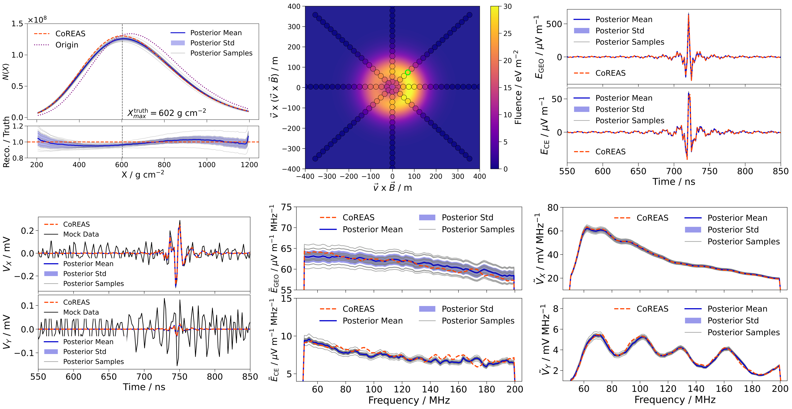<br />
图注：An example of an event reconstruction from this model with $E = \SI{2e17}{\electronvolt}$, $\theta = 28^\circ$, $\phi = 84^\circ$, and $X_\mathrm{max}^\mathrm{truth} = \SI{602}{\gram\per\centi\meter\squared}$. For each plot, we show the posterior mean and standard deviation (blue), true values from the CoREAS simulation (red, dashed), and each posterior sample used in the inference (gray). Top Left: The reconstructed longitudinal profile. The profile from the origin shower used in the template (purple, dotted) is also shown. The ratio between the reconstructed profile with those from CoREAS are shown in the bottom subplot. Top Right: The posterior mean of the energy fluence at each antenna (depicted by circles) in the shower plane. The interpolated true energy fluence is overlaid to show the qualitative agreement with the reconstructed results. The antenna position shown for the electric and voltage traces shown in the middle and bottom plots are indicated by the green circle. Middle Left: The reconstructed electric field traces in the geomagnetic and charge-excess polarizations (top and bottom respectively) at an antenna $d_\mathrm{core} = \SI{106}{\meter}$ away from the shower core. Middle Right: The reconstructed voltage traces at the same antenna position in the X/Y polarization of the SKALA antenna. The mock data used for reconstruction is also shown. Bottom Left: The amplitude spectrum in frequency space for the electric field shown above. Bottom Right: Same as the bottom left, but for the voltage traces instead.<br />
对应解读：对应“IFT 重建场图”“模拟足迹或波形图”“参数后验/不确定度”和模型拟合段落中关于完整电压时间序列、纵向剖面、频域谱与后验样本的讨论。<br />
入选理由：这是候选图中信息量最高的一张：同时给出纵向簇射剖面后验均值、标准差、后验样本、CoREAS 真值、足迹、电场波形、电压波形和频谱，最能支撑日报关于 IFT 利用完整时域/频域信息并输出后验分布而非单点估计的解读。<br />
来源与置信度：\(arxiv_source\)；high；\(arxiv_source\) / main.tex:figure[8]</p>
<p><strong>Fig02</strong><br />
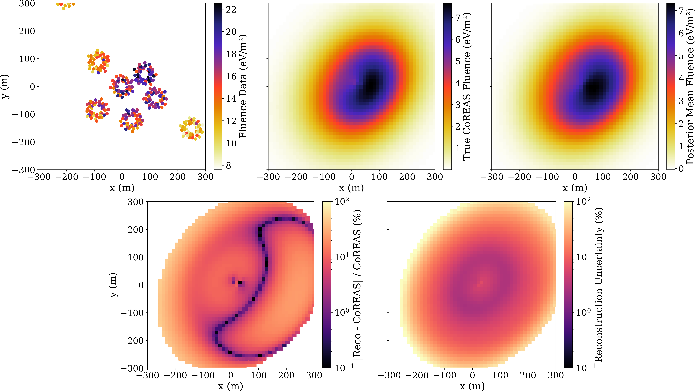<br />
图注：An example of the air shower reconstruction for a proton primary with an electromagnetic energy ($E_{\text{rad}}$) of \(\SI{6.61e5}{\electronvolt}\) and a shower maximum ($X_{\text{max}}$) at \(\SI{731.6}{\gram\per\centi\meter\squared}.\) The shower arrived from a zenith angle of \(\ang{37.0}\) and an azimuth of \(\ang{52.4},\) with its core at $(\SI{21.5}{\meter}, \SI{7.7}{\meter})$. The event had a peak signal-to-noise ratio (SNR) of 3.5. The top row displays the input data and compares the true CoREAS radio footprint with the mean of the posterior reconstruction. The bottom row shows the point-wise absolute difference and the relative uncertainty of the reconstruction, respectively. The reconstructed parameters are $E_{\text{rad}} = \SI{5.50(42)e5}{\electronvolt}$ and $X_{\text{max}} = \SI{716(21)}{\gram\per\centi\meter\squared}$.<br />
对应解读：对应“IFT 重建场图”以及关键图表导读中关于重建均值、不确定度、真实足迹与残差/差异诊断的部分。<br />
入选理由：该图直接展示输入数据、CoREAS 真足迹、后验重建均值、点对点绝对差异和相对不确定度，并给出重建的 \(E_rad\) 与 \(X_max\)，最适合说明 IFT/贝叶斯重建结果是否可靠以及不确定度是否被显式量化。<br />
来源与置信度：\(arxiv_source\)；high；\(arxiv_source\) / main.tex:figure[2]</p>
<p><strong>Fig01</strong><br />
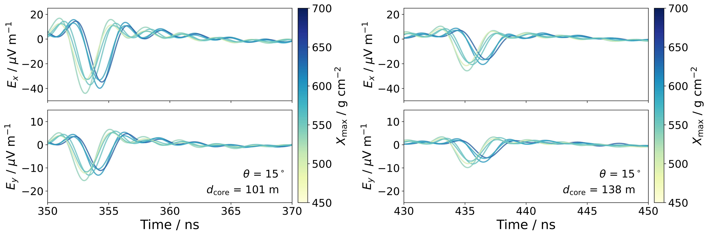<br />
图注：Example of simulated electric field traces from a cosmic ray with primary energy $E = 10^{16}$ eV and zenith angle of 15$^\circ$ at an antenna $d_\mathrm{core} = 101$ m (left) and 138 m (right) from the shower core. The traces are shown for varying values of $X_\mathrm{max}$, indicated by the colorbar. The top and bottom figure show the $x$ and $y$ polarizations of the electric field trace, respectively. Traces are band-pass filtered to [50, 350] MHz to emulate the available bandwidth for SKA-Low.<br />
对应解读：对应“模拟射电足迹或波形图”和关键图表导读中关于多天线波形、到达时间、幅度、极化和 \(X_max\) 敏感性的讨论。<br />
入选理由：该图展示不同核心距离、不同 \(X_max\) 下的电场时间迹线，并分 x/y 极化，能直观看出波形形状、幅度和极化随簇射最大深度变化的敏感性，是理解近场射电信号中三维和时域信息来源的关键图。<br />
来源与置信度：\(arxiv_source\)；high；\(arxiv_source\) / main.tex:figure[1]</p>
<p><strong>Fig04</strong><br />
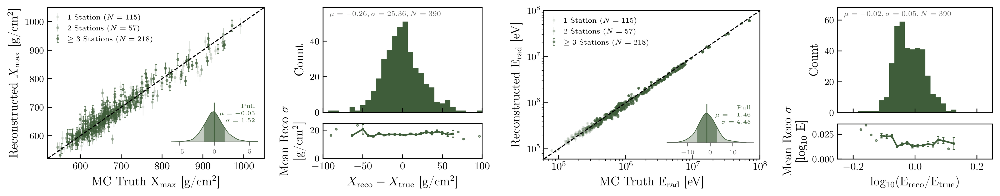<br />
图注：Performance of the radiation energy $E_\text{rad}$ and $X\text{max}$ reconstruction on CoREAS simulations. The left side displays both the reconstructed values compared to the CoREAS truth for all 390 successful reconstructions, as well as the pull from the reconstruction. The right side of the plots show histograms of the reconstruction errors at the top and how the reconstruction uncertainties correlate with reconstruction error. The different shades of green represent how many stations would have been "triggered" in this simulated event.<br />
对应解读：对应模型拟合段落中关于 \(E_rad\) 与 \(X_max\) 重建性能、误差分布、pull 分布和重建不确定度校准的讨论。<br />
入选理由：该图系统比较重建值与 CoREAS 真值，并展示 reconstruction error、pull 和不确定度相关性，可用于判断方法是否存在偏差以及给出的误差条是否可信，比单个示例事件更能支撑性能评估。<br />
来源与置信度：\(arxiv_source\)；high；\(arxiv_source\) / main.tex:figure[4]</p>
<p><strong>Fig06</strong><br />
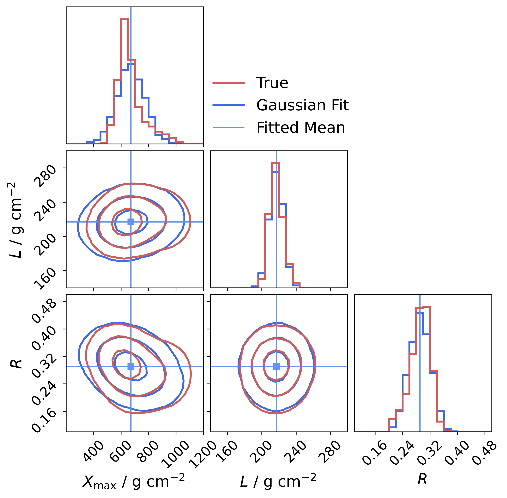<br />
图注：Corner plot of the truncated multivariate normal distribution used as our prior distribution (blue). We also overlay the true distribution obtained from CORSIKA simulations (red). The mean value from the fit are also shown. The contours represent the 1, 2, and 3$\sigma$ confidence level for a 2-D Gaussian distribution. Figure generated using \(\texttt{corner.py}\) \(\citep{corner}.\)<br />
对应解读：对应“参数后验或角图”以及模型拟合段落中关于先验、参数相关性和先验敏感性的讨论。<br />
入选理由：虽然它展示的是截断多元正态先验而非最终后验，但角图形式直接呈现 \(X_max\) 等簇射参数的相关结构，并与 CORSIKA 真实分布对比，有助于评估先验是否可能主导重建结果。<br />
来源与置信度：\(arxiv_source\)；high；\(arxiv_source\) / main.tex:figure[6]</p>
<p><strong>Fig09</strong><br />
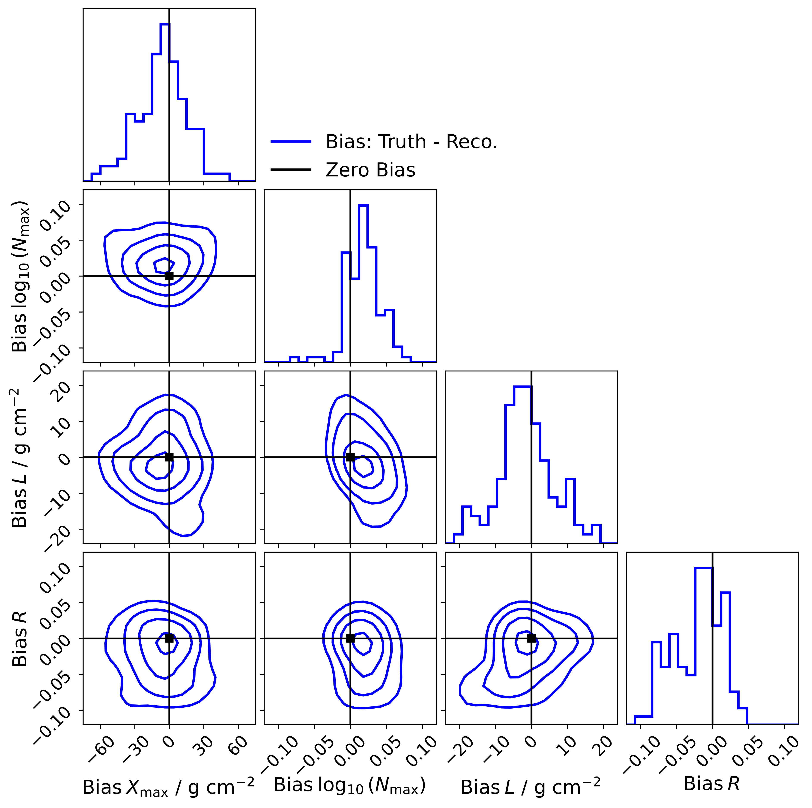<br />
图注：Distribution of the bias of the shower parameters $X_\mathrm{max}$, $\log_{10} (N_\mathrm{max})$, $L$ and $R$ for all events considered in this work. The contours show the 0.5, 1, 1.5, and 2$\sigma$ values following a 2-D Gaussian distribution. The point where the bias is zero is indicated by the black lines and dots. Figure generated using \(\texttt{corner.py}\)~\(\citep{corner}.\)<br />
对应解读：对应“参数后验或角图”和模型拟合段落中关于参数退化、系统偏差与稳健性检验的讨论。<br />
入选理由：该图给出 \(X_max\)、log10(N_max)、L、R 等簇射参数偏差的二维分布和置信轮廓，可用于检查不同参数误差之间是否相关、是否存在系统偏移，是补充单事件重建图的重要统计诊断。<br />
来源与置信度：\(arxiv_source\)；high；\(arxiv_source\) / main.tex:figure[9]</p>
<h4 id="_57">强相关工作</h4>
<p>这项工作属于空气簇射射电探测、近场干涉和贝叶斯场推断的交叉方向。相近观测工作包括 LOFAR 对宇宙线 \(X_{\max}\) 的高精度射电重建、Pierre Auger Observatory 的 AERA 射电阵列、Tunka-Rex 和 CODALEMA 的能量与成分研究。相近方法包括 CoREAS/ZHAireS 前向模拟、射电波束形成、模板库拟合、Wiener 滤波和信息场论在天文成像中的应用。建议检索关键词："air shower radio detection near-field interferometry", "Information Field Theory radio interferometry", "SKA-Low cosmic rays", "LOFAR cosmic ray Xmax radio", "CoREAS radio emission air showers"。</p>
<p>可能的张力或相反观点主要来自实用性：传统模板库和参数化足迹方法已经在现有阵列上表现很好，且物理解释直接；IFT 虽然信息利用更充分，但可能计算昂贵、先验敏感，并且在真实射频干扰环境中难以达到理想高斯噪声假设。因此评价这篇工作的关键不是问“是否立刻优于所有现有方法”，而是问它是否能在高密度阵列和近场信息丰富的场景中提供传统方法无法给出的后验诊断和三维重建能力。</p>
<p><strong>同一事件 / 同类源线索</strong>：</p>
<ul>
<li><a href="https://arxiv.org/abs/2606.26702">https://arxiv.org/abs/2606.26702</a></li>
<li><a href="https://arxiv.org/pdf/2606.26702">https://arxiv.org/pdf/2606.26702</a></li>
</ul>
<p><strong>相似工作</strong>：</p>
<ul>
<li><a href="https://arxiv.org/abs/1601.07426">https://arxiv.org/abs/1601.07426</a></li>
</ul>
<p><strong>基础理论 / 方法工作</strong>：</p>
<ul>
<li><a href="https://arxiv.org/abs/1301.2556">https://arxiv.org/abs/1301.2556</a></li>
</ul>
<p><strong>相反观点 / 张力线索</strong>：</p>
<p>（未提供）</p>
</details>
<h3 id="6-dark-matter-in-draco-and-bootes-i-hints-of-a-core-in-an-ultra-faint-dwarf-from-simulation-based-inference">6. Dark Matter in Draco and Boötes I: Hints of a Core in an Ultra-Faint Dwarf from Simulation-Based Inference</h3>
<ul>
<li>来源：arXiv / astro-ph.HE</li>
<li>链接：https://arxiv.org/abs/2606.26218v1</li>
<li>作者：Tri Nguyen, Lina Necib, Ting S. Li, Justin Read, Andrés Bañares-Hernández, Claude-André Faucher-Giguère, Kohei Hayashi, Kevin McKinnon</li>
<li>评分：novelty 8/10，importance 8/10，relevance 8/10，final 9.00/10</li>
<li>推荐理由：提出 GraphNPE 并给出 Draco、Boötes I 暗物质密度剖面及 J/D 因子，对矮星系间接暗物质伽马射线搜索的目标建模和系统误差很相关。</li>
</ul>
<p><strong>中文题目</strong>：Draco 与 Boötes I 中的暗物质：用模拟型推断在超暗弱矮星系中看到核心迹象</p>
<p><strong>做了什么</strong>：这篇文章提出了一个名为 GraphNPE 的模拟型动力学推断方法，用前向模拟同时处理恒星视向速度测量误差、光谱选择函数和样本不完备性，并从速度分布的高阶信息中约束矮椭球星系的暗物质密度剖面。作者先用模拟数据证明：只拟合视向速度弥散会系统性偏向尖 cusp，即使人为去掉常说的质量-各向异性退化；加入视向速度峰度等高阶矩后，内区密度恢复偏差显著减小。应用到 Draco 和 Boötes I 后，Draco 的结果与已有文献一致，内区更偏向较高密度、近似 cusp；Boötes I 的统计量较弱，但得到的 \(\rho_{150}=0.36^{+0.15}_{-0.11}\times10^8\,M_\odot\,{\rm kpc}^{-3}\) 明显低于许多既有估计，更接近 cored 内剖面。</p>
<p><strong>为什么重要</strong>：矮椭球星系的暗物质内密度斜率是冷暗物质、暖暗物质、自相互作用暗物质以及重子反馈模型的关键判据，但传统 Jeans 分析常被小样本、速度误差、成员星污染、选择函数和质量-各向异性退化限制。本文重要之处不只是给出 Draco 与 Boötes I 的新密度和 \(J\)-、\(D\)-因子，而是指出只看二阶速度弥散可能把核心系统误判为 cusp；速度分布的峰度等高阶信息对超暗弱矮星系尤其关键。</p>
<p><strong>理论 / 观测 / 仪器方法价值</strong>：对理论而言，本文为检验小尺度暗物质模型提供了更接近观测过程的推断框架，减少由简化 Jeans 拟合带来的假 cusp 偏差。对观测而言，它把 MMT/Hectochelle、DESI、S5 等光谱数据中的测量误差和选择函数放入前向模型，说明未来多目标光谱巡天不应只追求更多速度数，还要保留速度分布形状信息。对方法学而言，GraphNPE 展示了图神经网络与神经后验估计在稀疏恒星动力学中的实际用途。</p>
<p><strong>为什么应该关注</strong>：如果 Boötes I 这样的超暗弱矮星系真的有低内密度或核心，它会直接挑战“所有低质量暗晕都应保持尖 cusp”的简单图像，也会影响间接探测暗物质湮灭时使用的 \(J\)-因子。即使读者不关心单个矮星系，本文也值得关注：它给出一个清楚的警告——在小样本星系动力学中，拟合出漂亮的速度弥散曲线并不等于理解了暗物质剖面。</p>
<details class="paper-detail">
<summary>展开详细解读：文章讲解、背景、理论、重点章节、图表与相关工作</summary>
<h4 id="_58">文章详细讲解</h4>
<p>科学问题：矮椭球星系几乎没有气体，恒星动力学由暗物质势主导，因此常被用来测量暗物质密度剖面。核心争议是内区密度究竟接近冷暗物质数值模拟常见的 cusp，还是更平坦的 core。这个问题在经典矮星系已经讨论多年，但在 Boötes I 这类超暗弱矮星系中更困难：成员星少、速度误差相对重要、二元星和成员选择会影响速度分布，而传统 Jeans 分析通常只用 \(\sigma_{\rm los}(R)\) 这样的二阶矩，容易丢掉非高斯性信息。</p>
<p>作者怎么做：本文提出 GraphNPE，即将星系动力学模型、观测误差和光谱选择函数一起前向模拟，再用图结构神经网络从离散恒星样本中学习参数后验。这里的关键不是把恒星先分箱再拟合，而是把每颗星的位置、视向速度、测量误差以及是否进入光谱样本的概率作为观测过程的一部分。作者用模拟样本检验方法，特别比较只利用视向速度弥散的推断与利用更完整速度分布、尤其是峰度信息的推断。</p>
<p>关键结果：模拟测试显示，即便没有显式的质量-各向异性退化，只用 \(\sigma_{\rm los}\) 也会把内区密度推向更 cuspy 的解。这说明偏差不只是传统教科书中的 \(M(r)\)-\(\beta(r)\) 退化，而是二阶矩本身对速度分布形状信息的压缩造成的。GraphNPE 能利用 \(v_{\rm los}\) 分布的高阶矩，例如峰度 \(\kappa_{\rm los}\)，从而更好地区分由势深度、轨道结构和选择函数共同导致的相似弥散曲线。用于 Draco 时，不同数据集给出基本一致的较高 \(\rho_{150}\)，约为 \((1.6-1.9)\times10^8\,M_\odot\,{\rm kpc}^{-3}\)，与文献中 Draco 是高密度暗晕的认识相符。用于 Boötes I 时，数据统计量不足以给出决定性的内斜率，但得到较低 \(\rho_{150}\)，更接近 cored 图像。</p>
<p>局限和下一步：Boötes I 的成员星数量和速度精度仍然限制了内斜率判别力，本文结果应理解为“有核心迹象”而不是最终发现核心。GraphNPE 还依赖训练模拟覆盖真实星系参数空间，若真实系统存在潮汐扰动、非平衡结构、二元星速度变化或成员概率系统误差，而训练集中没有充分包含，就可能产生校准偏差。下一步自然是扩大到更多超暗弱矮星系，用重复光谱约束二元星，结合 Gaia 自行和更完整选择函数，并在模拟端加入非平衡和潮汐场景。</p>
<h4 id="_59">关键结果是怎么做出来的</h4>
<p>数据和样本链条的核心是三个观测集合：Draco 使用 MMT/Hectochelle 与 DESI 光谱，Boötes I 使用 S5 巡天光谱。论文关心的不是单纯的成员星平均速度或总体弥散，而是每颗候选成员星在投影半径 \(R\)、视向速度 \(v_{\rm los}\)、速度误差 \(\delta v\) 和光谱选择概率下对暗物质剖面的约束。GraphNPE 的训练集通过前向生成模拟星系与观测样本，使网络学习从离散点云到 \(\rho(r)\)、\(J\)-因子和 \(D\)-因子后验的映射。</p>
<p>最重要的方法学结果来自 mock data。作者设置已知真实密度剖面的模拟星系，并比较不同信息输入下的恢复效果。只依赖 \(\sigma_{\rm los}(R)\) 的方法会稳定偏向 cusp；这不是因为模型故意加入了错误的 \(\beta(r)\)，而是因为二阶矩无法唯一编码速度分布的尾部和形状。加入高阶矩后，尤其是 \(\kappa_{\rm los}(R)\) 或等价的非高斯分布信息，GraphNPE 对内密度的恢复更接近真值，后验覆盖率也应更可靠。</p>
<p>Draco 的结果起到交叉验证作用。若 GraphNPE 对所有系统都倾向给出低密度核心，那会令人怀疑它的先验或训练集有偏；但 Draco 在 MMT/Hectochelle 与 DESI 上得到一致的较高 \(\rho_{150}\)，并且与既有动力学研究相符，说明方法并非简单地把星系往 core 推。论文还强调，DESI 数据上的二阶 Jeans 模型能拟合 \(\sigma_{\rm los}\)，但不能复现 \(\kappa_{\rm los}\)，这是支持“高阶矩必要”的直接证据。</p>
<p>Boötes I 是论文最有物理张力的目标。GraphNPE 给出 \(\rho_{150}=0.36^{+0.15}_{-0.11}\times10^8\,M_\odot\,{\rm kpc}^{-3}\)，明显低于许多文献估计，使它成为相似恒星质量矮星系中内密度偏低的对象之一。不过作者没有声称内斜率已被强力测定，因为样本量、成员概率、中心区域恒星数量和速度误差仍限制统计功效。这里的结论应读作：在包含选择函数和高阶速度分布后，Boötes I 的数据不再支持传统高密度 cusp 解，且更自然地落在低密度或 cored 区域。</p>
<p>显著性和稳健性方面，本文主要依靠后验比较、mock recovery、跨数据集一致性以及二阶模型对峰度的失败来建立证据链，而不是一个单一的 \(5\sigma\) 式探测。读者应重点检查后验置信区间、训练模拟的覆盖范围、选择函数建模、成员星剔除或加权方式，以及 Draco 两套数据是否给出相容的 \(J\)-因子和 \(D\)-因子。若这些环节稳定，Boötes I 的低密度结果才有解释价值。</p>
<details class="paper-subdetail">
<summary>展开背景、理论、公式、模型、章节和图表导读</summary>
<h4 id="_60">背景知识</h4>
<p>矮椭球星系是银河系周围暗物质研究的核心实验室。它们恒星质量小、气体少、恒星速度弥散远大于可见质量能解释的值，因此常被视为暗物质主导系统。Draco 是经典矮椭球星系，长期被认为暗物质密度高、动力学相对稳定；Boötes I 则属于超暗弱矮星系，恒星数少、金属丰度低、可能保留早期小质量暗晕的信息。</p>
<p>历史问题是 cusp-core 争议。冷暗物质无碰撞模拟通常给出内区密度随半径下降的 cusp，例如 NFW 型 \(\rho(r)\propto r^{-1}\)；而一些旋转曲线和矮星系动力学研究更喜欢中心近似常密度的 core。对亮矮星系，可以用重子反馈把 cusp 变成 core；但对超暗弱矮星系，恒星形成总能量很低，是否足以改造暗晕仍有争议。因此 Boötes I 如果真有 core，会对反馈、自相互作用暗物质或潮汐演化提出强约束。</p>
<p>观测背景上，传统做法是用恒星的投影半径和视向速度，通过 Jeans 方程反演质量剖面。这个方法直观、计算量低，但代价是必须假设球对称、动力学平衡、速度各向异性形式以及成员样本可靠。更关键的是，很多分析只拟合 \(\sigma_{\rm los}(R)\)，相当于把速度分布压缩成二阶矩，丢掉了尾部、偏度和峰度所携带的信息。</p>
<p>现在值得重新看，是因为 DESI、S5、MMT/Hectochelle 等多目标光谱数据正在提供更大、更均匀的恒星速度样本，而机器学习式模拟推断可以把真实观测过程纳入模型。过去常见误区有三个：第一，认为速度弥散拟合好就说明质量剖面可靠；第二，把所有 cusp-core 不确定性都归因于质量-各向异性退化；第三，忽略光谱选择函数，以为观测到的成员星就是母星族的无偏抽样。本文正是针对这些误区给出反例。</p>
<h4 id="_61">基础理论 / 方法脉络</h4>
<p>基础物理图像是：恒星作为无碰撞示踪粒子在暗物质势阱中运动。我们看不到三维速度，只能测到天球位置和视向速度，因此需要从投影量反推三维质量分布。若系统近似球对称且处于稳态，恒星数密度 \(\nu_*(r)\)、径向速度弥散 \(\sigma_r(r)\)、速度各向异性 \(\beta(r)\) 和总质量 \(M(r)\) 由 Jeans 方程联系起来。</p>
<p>传统二阶 Jeans 分析把观测速度分布简化为 \(\sigma_{\rm los}(R)\)。这在样本大且速度分布接近高斯时有效，但对超暗弱矮星系并不充分。不同的 \(M(r)\) 与 \(\beta(r)\) 组合可以产生几乎相同的 \(\sigma_{\rm los}(R)\)，而速度分布尾部的厚薄，即峰度 \(\kappa_{\rm los}\)，对轨道结构和势阱形状更敏感。因此本文强调高阶矩不是装饰，而是打破退化的必要信息。</p>
<p>GraphNPE 的思想是模拟型推断。给定暗物质剖面、恒星分布、各向异性和观测选择函数，先生成许多模拟观测样本，再训练神经网络近似后验 \(p(\theta|x)\)，其中 \(\theta\) 是密度剖面、归一化、各向异性或派生的 \(J\)-、\(D\)-因子，\(x\) 是观测到的恒星点集。图神经网络适合处理无固定顺序、数量可变的恒星样本，避免强行分箱带来的信息损失。</p>
<p>本文还涉及暗物质间接探测常用的 \(J\)-因子和 \(D\)-因子。\(J\)-因子是视线方向上 \(\rho^2\) 的积分，决定湮灭信号强度；\(D\)-因子是 \(\rho\) 的积分，决定衰变信号强度。内区密度 \(\rho_{150}\) 的变化会强烈影响 \(J\)-因子，尤其在视角孔径较小时。因而 Boötes I 的低 \(\rho_{150}\) 不只是动力学结论，也会改变它作为伽马射线暗物质靶源的优先级。</p>
<p>主要系统误差包括成员星污染、二元星导致的速度抖动、中心位置和距离误差、恒星光度剖面误差、光谱选择函数不准确，以及真实系统偏离球对称或平衡。GraphNPE 可以在前向模型中纳入部分误差，但它不能自动修正训练集中没有覆盖的物理情形。读者应把它理解为更诚实地连接观测和模型的工具，而不是免假设的黑箱。</p>
<h4 id="_62">公式与推导</h4>
<p>第一步是把暗物质密度与引力势联系起来。在球对称近似下，总质量为</p>
<div class="math-display">\[M(r)=4\pi\int_0^r \rho_{\rm tot}(s)s^2\,ds,\]</div>
<p>其中 \(\rho_{\rm tot}\) 通常由暗物质主导，\(r\) 是三维半径。该式说明内区密度 \(\rho(r)\) 直接决定恒星感受到的引力场。</p>
<p>第二步使用稳态无碰撞 Boltzmann 方程的二阶矩，得到球对称 Jeans 方程：</p>
<div class="math-display">\[\frac{d\left[\nu_*(r)\sigma_r^2(r)\right]}{dr}+2\frac{\beta(r)}{r}\nu_*(r)\sigma_r^2(r)=-\nu_*(r)\frac{G M(r)}{r^2}.\]</div>
<p>这里 \(\nu_*(r)\) 是恒星三维数密度，\(\sigma_r(r)\) 是径向速度弥散，\(\beta(r)=1-\sigma_t^2(r)/\sigma_r^2(r)\) 描述轨道各向异性。它是传统动力学质量估计的核心。</p>
<p>第三步把三维弥散投影成观测量：</p>
<div class="math-display">\[\sigma_{\rm los}^2(R)=\frac{2}{\Sigma_*(R)}\int_R^\infty \left[1-\beta(r)\frac{R^2}{r^2}\right]\frac{\nu_*(r)\sigma_r^2(r)r\,dr}{\sqrt{r^2-R^2}},\]</div>
<p>其中 \(R\) 是投影半径，\(\Sigma_*(R)\)<br />
=2\int_R^\(\infty\) \(\nu_*(r)r\,dr/\sqrt{r^2-R^2}\)) 是投影恒星面密度。该式展示了质量-各向异性退化：不同 \(M(r)\) 和 \(\beta(r)\) 可给出相似 \(\sigma_{\rm los}(R)\)。</p>
<p>第四步引入高阶信息。视向速度峰度可写成</p>
<div class="math-display">\[\kappa_{\rm los}(R)=\frac{\left\langle \left(v_{\rm los}-\bar v\right)^4\right\rangle_R}{\sigma_{\rm los}^4(R)}-3,\]</div>
<p>其中 \(\bar v\) 是系统平均视向速度。高斯分布对应 \(\kappa_{\rm los}=0\)，正峰度表示尾部更厚或中心更尖。本文的 mock 结果表明，\(\kappa_{\rm los}\) 对区分 core 与 cusp 有实际判别力。</p>
<p>第五步把测量误差写入单星似然。若某颗星的真实视向速度分布为 \(f(v|R,\theta)\)，观测误差近似高斯，则</p>
<div class="math-display">\[p(v_i^{\rm obs}|R_i,\theta)=\int f(v|R_i,\theta)\frac{1}{\sqrt{2\pi}\delta v_i}\exp\left[-\frac{(v_i^{\rm obs}-v)^2}{2\delta v_i^2}\right]dv.\]</div>
<p>这里 \(\delta v_i\) 是第 \(i\) 颗星的速度误差。该卷积解释了为什么超暗弱矮星系中不能忽略误差模型。</p>
<p>第六步加入光谱选择函数。若 \(S(R,m,c)\) 是位置 \(R\)、星等 \(m\)、颜色 \(c\) 下被观测并进入样本的概率，则观测点集的前向分布可概念性写成</p>
<div class="math-display">\[p(x|\theta)=\prod_{i=1}^{N_{\rm obs}} p(R_i,v_i,m_i,c_i|\theta,S)\,\exp[-N_{\rm exp}(\theta,S)],\]</div>
<p>其中 \(N_{\rm exp}\) 是模型预期观测数。该式是点过程似然的形式，强调选择函数改变的不只是归一化，也会改变半径和速度信息权重。</p>
<p>第七步是模拟型后验估计。GraphNPE 训练一个条件密度估计器，使</p>
<div class="math-display">\[q_\phi(\theta|x)\approx p(\theta|x)=\frac{p(x|\theta)p(\theta)}{p(x)},\]</div>
<p>其中 \(\phi\) 是神经网络参数，\(p(\theta)\) 是训练先验。它不要求显式写出完整解析似然，但要求模拟器能忠实生成 \((\theta,x)\) 对。</p>
<p>第八步定义暗物质间接探测量。湮灭 \(J\)-因子为</p>
<div class="math-display">\[J(\Delta\Omega)=\int_{\Delta\Omega}\int_{\rm los}\rho^2\left[r(\ell,\Omega)\right]\,d\ell\,d\Omega,\]</div>
<p>衰变 \(D\)-因子为</p>
<div class="math-display">\[D(\Delta\Omega)=\int_{\Delta\Omega}\int_{\rm los}\rho\left[r(\ell,\Omega)\right]\,d\ell\,d\Omega.\]</div>
<p>其中 \(\ell\) 是视线距离，\(\Delta\Omega\) 是积分孔径。Boötes I 的较低 \(\rho_{150}\) 会显著降低小孔径 \(J\)-因子的预期值。</p>
<p>第九步用一个局部密度指标概括内区差异：</p>
<div class="math-display">\[\rho_{150}\equiv \rho(r=150\,{\rm pc}).\]</div>
<p>该量比直接报内斜率更稳健，因为真实数据往往不能在极小半径上解析密度斜率。本文报告 Draco 的 \(\rho_{150}\) 约为 \((1.6-1.9)\times10^8\,M_\odot\,{\rm kpc}^{-3}\)，Boötes I 为 \(0.36^{+0.15}_{-0.11}\times10^8\,M_\odot\,{\rm kpc}^{-3}\)，正是通过这一可比较指标体现两者差异。</p>
<h4 id="_63">模型拟合 / 应用方法</h4>
<p>本文的拟合目标不是一条光滑的 \(\sigma_{\rm los}(R)\) 曲线，而是从离散恒星样本推断暗物质剖面和派生量。参数 \(\theta\) 可包括暗晕密度归一化、尺度半径、内斜率或等价的非参数密度节点，以及恒星轨道各向异性、系统速度、选择函数相关量等。最终报告的 \(\rho_{150}\)、\(J\)-因子和 \(D\)-因子是后验样本的派生量。</p>
<p>传统 Jeans 拟合通常构造 \(\chi^2\) 或高斯似然，比较观测分箱弥散与模型 \(\sigma_{\rm los}(R)\)。本文说明这种压缩会使内密度估计偏高，因为许多具有不同峰度的速度分布在二阶矩上看起来相似。GraphNPE 的优势是直接吃入未分箱点集，并在训练过程中学习速度分布形状、误差卷积和选择函数对后验的影响。</p>
<p>参数退化仍然存在。\(M(r)\) 与 \(\beta(r)\) 的退化、暗晕尺度半径与密度归一化的退化、成员概率与速度尾部的退化、二元星速度抖动与真实厚尾分布的退化，都可能影响 \(\rho_{150}\)。峰度信息可以缓解但不能完全消除这些问题。尤其对于 Boötes I，样本小导致后验仍较宽，因此“consistent with a core” 不应被读成“排除了 cusp”。</p>
<p>残差诊断应从两个层面看。第一，模型是否复现 \(\sigma_{\rm los}(R)\)；第二，模型是否复现 \(\kappa_{\rm los}(R)\) 或未分箱速度分布的尾部。论文指出 DESI 的 Draco 数据上二阶 Jeans 能拟合弥散却不能复现峰度，这正是模型失败的信号。读者不应只看弥散图上模型线是否穿过误差棒，还要看速度直方图、后验预测检查和高阶矩残差。</p>
<p>系统误差方面，GraphNPE 的可信度取决于模拟器。若选择函数 \(S(R,m,c)\) 错误，中心或外区恒星被过度加权，会改变内密度。若训练先验没有覆盖低密度 core、高浓度 cusp、潮汐扰动或非球对称结构，后验可能被先验边界塑形。实际应用中应做先验敏感性测试、模拟覆盖率测试、成员样本替换、速度误差放大缩小、二元星模型变化以及跨数据集比较。</p>
<h4 id="_64">重点章节 / 结果段落怎么读</h4>
<p>数据与样本部分应首先阅读。这里需要确认 Draco 的 MMT/Hectochelle 与 DESI 样本如何定义成员星，Boötes I 的 S5 样本如何处理成员概率和速度误差。重点不是记住每颗星，而是理解选择函数是否随半径、星等、颜色变化，以及这些变化是否进入前向模型。</p>
<p>方法部分是全文核心。读者应看 GraphNPE 的模拟器如何生成恒星点集、暗晕剖面采用何种参数化或非参数表示、神经网络如何处理可变数量恒星，以及训练先验覆盖哪些 core 和 cusp 情形。还要注意作者如何验证后验校准，例如 mock recovery、coverage 或 posterior predictive check。</p>
<p>模拟测试部分决定方法可信度。重点看只用 \(\sigma_{\rm los}\) 与加入高阶速度信息的对比，尤其是内密度或内斜率是否从系统性偏高变为无偏。若论文有残差图或真值-恢复值图，应检查不同真实剖面下是否都表现稳定，而不是只在某个有利 mock 上成功。</p>
<p>Draco 结果部分可作为 sanity check。Draco 是高密度经典矮星系，已有较多文献约束。GraphNPE 在 MMT/Hectochelle 与 DESI 上得到一致结果，说明方法对数据集差异不太敏感；但同时 DESI 上二阶 Jeans 对峰度失败，说明“拟合弥散”不等于“拟合动力学”。</p>
<p>Boötes I 结果和讨论部分应最后细读。这里要关注 \(\rho_{150}\) 的后验、与文献值的差异、\(J\)-因子变化，以及作者对统计功效不足的表述。附录或稳健性检验若包含先验敏感性、选择函数变化、成员样本变化和 mock coverage，是判断低密度结论是否可靠的关键。</p>
<h4 id="_65">建议重点查看的图表</h4>
<ol>
<li>
<p>方法流程图或模拟推断示意图：看 GraphNPE 是否明确把观测误差、选择函数和离散恒星点集纳入前向模型，而不是只对分箱弥散做机器学习。</p>
</li>
<li>
<p>Mock recovery 图：看真实 \(\rho(r)\) 或 \(\rho_{150}\) 与恢复后验的关系，比较只用 \(\sigma_{\rm los}\) 和使用完整速度分布时的偏差。最关键的是 core mock 是否被错误恢复为 cusp。</p>
</li>
<li>
<p>速度弥散与峰度图：看 \(\sigma_{\rm los}(R)\) 和 \(\kappa_{\rm los}(R)\) 的数据点、误差条与模型后验预测。若弥散拟合好但峰度残差大，就支持作者对二阶 Jeans 的批评。</p>
</li>
<li>
<p>Draco 密度剖面后验图：比较 MMT/Hectochelle 与 DESI 的 \(\rho(r)\) 可信带是否重叠，尤其在 \(r=150\,{\rm pc}\) 附近是否一致。</p>
</li>
<li>
<p>Boötes I 密度剖面后验图：看低密度结论是整个半径范围都低，还是只由某个半径节点或先验边界驱动；重点检查 \(\rho_{150}\) 的后验形状是否偏斜或贴边。</p>
</li>
<li>
<p>\(J\)-因子和 \(D\)-因子表：看不同数据集和方法给出的不确定度，尤其 \(J\)-因子是否因 \(\rho^2\) 积分而对内区剖面极敏感。</p>
</li>
<li>
<p>后验预测检查或残差诊断：看模型生成的速度分布是否覆盖观测直方图、尾部和半径依赖，而不是只覆盖均值和方差。</p>
</li>
</ol>
<h4 id="_66">关键图表逐图导读</h4>
<p>图 1：若为样本或观测示意图，横轴通常是投影半径 \(R\) 或天球位置，纵轴可能是视向速度 \(v_{\rm los}\) 或成员概率。读图时要看 Draco 与 Boötes I 的成员星在半径上的覆盖是否足够到达 \(150\,{\rm pc}\) 附近；如果中心区域恒星很少，\(\rho_{150}\) 会更依赖模型外推。陷阱是把被观测星当作母星族无偏抽样，实际选择函数可能改变半径权重。</p>
<p>图 2：若为 GraphNPE 或模拟流程图，应关注输入节点是否包含 \(R_i\)、\(v_i\)、\(\delta v_i\) 和选择函数信息，输出是否为完整后验而非点估计。模型线或网络框图本身不证明物理正确，关键要看后续 mock 校准是否说明 \(q_\phi(\theta|x)\) 近似真实后验。</p>
<p>图 3：mock recovery 图通常最关键。横轴可是真实 \(\rho_{150}\) 或内斜率，纵轴是恢复值；理想结果应沿一比一直线分布。若只用 \(\sigma_{\rm los}\) 的点系统性落在高密度侧，而加入高阶矩后回到一比一附近，就直接支撑本文主要方法学结论。读图陷阱是只看中位数不看可信区间覆盖率。</p>
<p>图 4：速度弥散与峰度诊断图应同时阅读。\(\sigma_{\rm los}(R)\) 面板上二阶 Jeans 可能看起来拟合很好，但 \(\kappa_{\rm los}(R)\) 面板若出现系统偏差，就说明速度分布形状没有被解释。这里数据点误差条可能很大，读者应关注后验预测带是否系统偏离，而非单个点的高低。</p>
<p>图 5：Draco 的 \(\rho(r)\) 后验图应看不同数据集的可信带是否重合，特别是 \(r=150\,{\rm pc}\) 附近。若 MMT/Hectochelle 与 DESI 都给出 \(\rho_{150}\sim(1.6-1.9)\times10^8\,M_\odot\,{\rm kpc}^{-3}\)，这说明 GraphNPE 对 Draco 的高密度判断不是单一数据集偶然结果。</p>
<p>图 6：Boötes I 的 \(\rho(r)\) 图和文献对比图应看本文后验是否整体低于既有 Jeans 估计，以及可信区间是否仍与 cusp 模型重叠。若后验允许较宽内斜率，只能说数据偏好低密度或 core-like，而不能说强排除 cusp。注意纵轴若为对数密度，小的视觉差异可能代表数量级差别。</p>
<p>图 7：\(J\)-因子与 \(D\)-因子表或角孔径曲线要分开读。\(J\)-因子对内区 \(\rho^2\) 更敏感，Boötes I 低 \(\rho_{150}\) 会显著降低湮灭预期；\(D\)-因子只线性依赖 \(\rho\)，通常更稳健。陷阱是把大孔径 \(D\)-因子的稳定性误认为 \(J\)-因子也稳定。</p>
</details>
<h4 id="_67">论文原图 / 可嵌入图片</h4>
<p><strong>Fig04</strong><br />
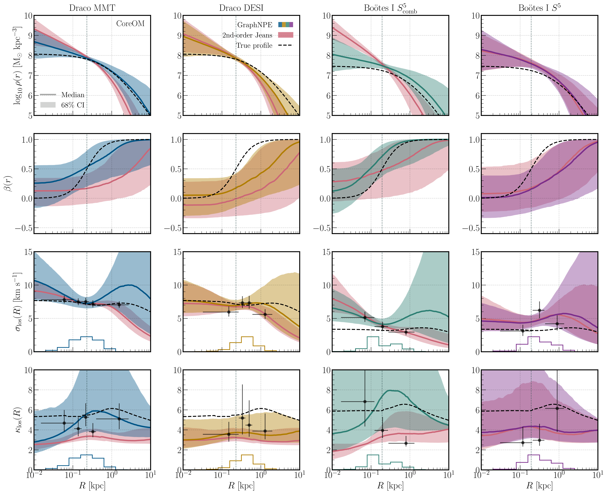<br />
图注：Comparison between the inferred profiles on mock galaxies with \(\textsc{CoreOM}\) parameters by \(\gnn\) and second-order Jeans modeling. From top to bottom, the rows show the DM density $\rho(r)$, velocity anisotropy $\beta(r)$, LOSV dispersion $\sigmalos(R)$, and LOSV kurtosis profiles $\kappalos(R)$. From left to right rows show results for Draco MMT, Draco DESI, \(\bootes\) \(\sfivecomb,\) and \(\bootes\) \(\sfive\) mocks, respectively. Shaded regions indicate 68\% credible intervals for each method, and solid lines show posterior medians. The dashed black line shows the true input profile. Data points show the binned LOSV dispersion and kurtosis profiles of the mock galaxies, shown for \(\textit{visualization only}\) as neither method uses them in the fit. The inset histograms in the LOSV dispersion panels show the radial distribution of tracers in the mocks. The vertical gray dashed line marks the observed half-light radius $\rhalf$ of each galaxy from the LVDB~\(\citep{2024arXiv241107424P}.\)<br />
对应解读：“建议重点查看的图表”第2项 Mock recovery 图，以及“关键图表逐图导读”图3；同时对应模型拟合段落中关于只用二阶矩会把 core mock 偏向 cusp 的论证。<br />
入选理由：这是最直接支撑本文方法学核心结论的图：在已知真实输入的 CoreOM mock 上，同时展示暗物质密度、各向异性、视向速度弥散和峰度，并比较 GraphNPE 与二阶 Jeans。它能检验 core 是否被错误恢复为 cusp、可信区间是否覆盖真实剖面，以及弥散拟合与峰度失配是否同时出现，比单纯观测样本图更能证明偏差来源。<br />
来源与置信度：\(arxiv_source\)；high；\(arxiv_source\) / main.tex:figure[4]</p>
<p><strong>Fig08</strong><br />
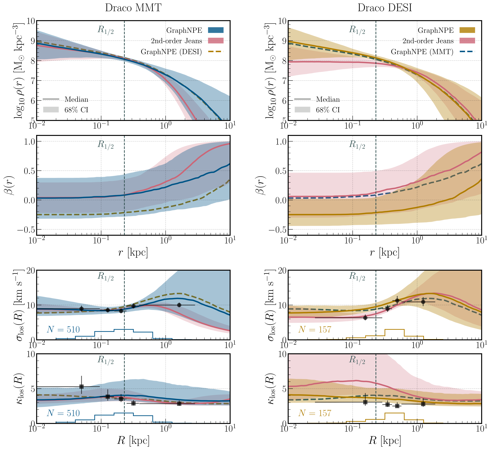<br />
图注：From top to bottom: the inferred DM density $\rho(r)$, velocity anisotropy $\beta(r)$, LOSV dispersion $\sigmalos(R)$, and LOSV kurtosis $\kappalos(R)$ profiles for Draco from \(\gnn\) and second-order Jeans modeling. The left and right columns show results for MMT \(\citepalias{Walker23}\) and DESI \(\citepalias{Ding25},\) respectively. The solid lines and shaded regions indicate the posterior median and 68\% credible intervals. For cross-comparison between dataset, in each dataset panel, the posterior median of \(\gnn\) from the other dataset is also shown. The vertical gray dashed line marks the observed half-light radius $\rhalf$ of each galaxy from the LVDB~\(\citep{2024arXiv241107424P}.\) In the bottom two panels, data points show the binned LOSV dispersion and kurtosis profiles, shown for \(\textit{visualization only}\) as neither method uses them in the fit. The inset histograms in the LOSV dispersion panels show the observed radial distribution of tracers.<br />
对应解读：“建议重点查看的图表”第3项速度弥散与峰度图、第4项 Draco 密度剖面后验图，以及“关键图表逐图导读”图4和图5。<br />
入选理由：该图同时给出 Draco 的密度剖面、各向异性、视向速度弥散和峰度，并分 MMT 与 DESI 两个数据集比较 GraphNPE 和二阶 Jeans。它正好对应日报强调的诊断：Draco 在 r=150 pc 附近的密度可信带是否一致，以及 DESI 上二阶 Jeans 是否能拟合弥散但不能复现峰度。<br />
来源与置信度：\(arxiv_source\)；high；\(arxiv_source\) / main.tex:figure[8]</p>
<p><strong>Fig09</strong><br />
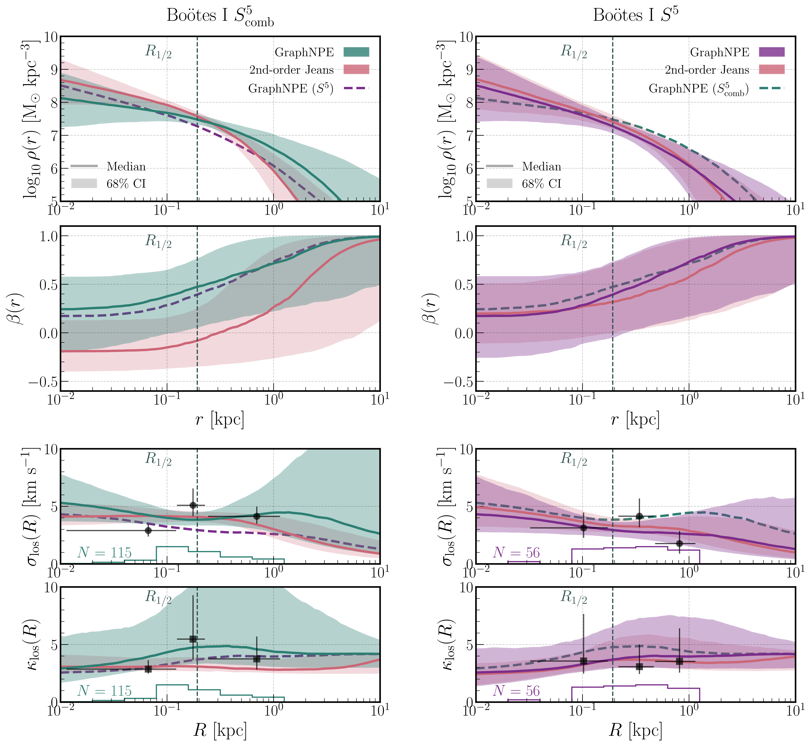<br />
图注：Same as Fig.~\(\ref{fig:draco_profiles},\) but for \(\bootes.\) The left and right columns show results for \(\sfivecomb\) and \(\sfive\) \(\citepalias{Sandford26},\) respectively.<br />
对应解读：“建议重点查看的图表”第5项 Boötes I 密度剖面后验图，以及“关键图表逐图导读”图6。<br />
入选理由：这是理解 Boötes I 低密度和 core-like 结论的主图，包含密度剖面、各向异性、弥散和峰度的后验预测，并比较 S5 combined 与 S5 数据。它能判断低 rho150 是否是整体剖面偏低、是否受样本统计量限制，以及 GraphNPE 与二阶 Jeans 的差异是否明显。<br />
来源与置信度：\(arxiv_source\)；high；\(arxiv_source\) / main.tex:figure[9]</p>
<p><strong>Fig10</strong><br />
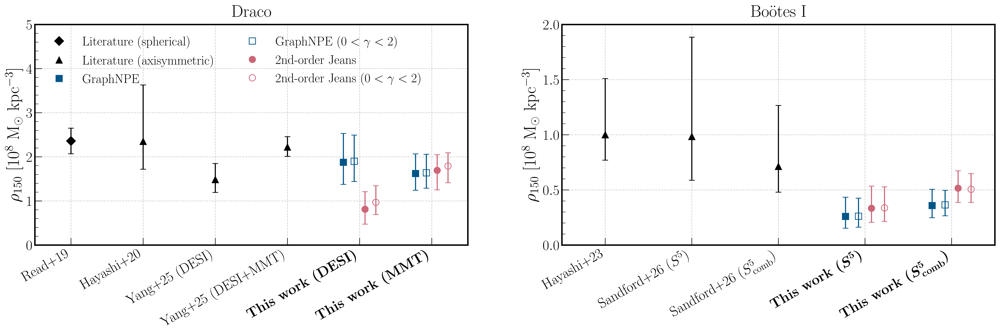<br />
图注：The DM density at $150 \, \pc$, \(\rhoinner,\) for Draco (left) and \(\bootes\) (right). Colored data points show measurements from this work, with filled and open symbols corresponding to the $\gamma \in [-1, 2]$ and $\gamma \in [0, 2]$ priors, respectively. Blue and pink points show results from \(\gnn\) and second-order Jeans modeling, respectively. Black data points show literature values, with diamonds denoting spherical Jeans modeling and triangles denoting non-spherical Jeans modeling. For Draco, literature values are from \(\citet{2018MNRAS.481..860R},\) \(\citet{Hayashi2020},\) and \(\citet{Yang25}.\) For \(\bootes,\) literature values are from \(\citet{Hayashi23}\) and \(\citetalias{Sandford26}.\)<br />
对应解读：“建议重点查看的图表”第4、5项关于 Draco 与 Boötes I 的 rho150，以及“关键图表逐图导读”图5和图6中与文献对比的部分。<br />
入选理由：该图直接汇总核心量 rho150，并同时比较 Draco、Boötes I、本工作不同方法、不同内斜率先验和文献结果。日报中多次强调 rho150 是判断 Draco 高密度一致性和 Boötes I 低密度异常的关键派生量，因此这张图比一般样本分布图更适合嵌入。<br />
来源与置信度：\(arxiv_source\)；high；\(arxiv_source\) / main.tex:figure[10]</p>
<p><strong>Fig11</strong><br />
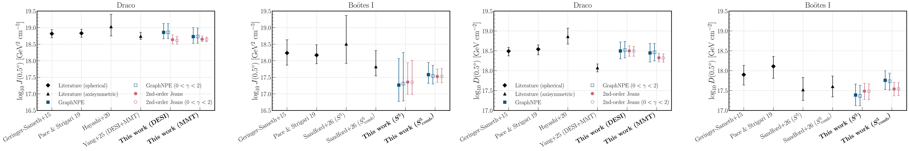<br />
图注：The $J$-factors (top row) and $D$-factors (bottom row) for Draco (left column) and \(\bootes\) (right column). Colored data points show measurements from this work, with filled and open symbols corresponding to the $\gamma \in [-1, 2]$ and $\gamma \in [0, 2]$ priors, respectively. Blue and pink points show results from \(\gnn\) and second-order Jeans modeling, respectively. Black data points show literature values, with diamonds denoting spherical Jeans modeling and triangles denoting non-spherical Jeans modeling. For Draco, literature values are from \(\citet{GS2015},\) \(\citet{Hayashi2020},\) and \(\citetalias{Yang25}.\) For \(\bootes,\) literature values are from \(\citet{GS2015}\) and \(\citetalias{Sandford26}.\)<br />
对应解读：“建议重点查看的图表”第6项 J 因子和 D 因子表，以及“关键图表逐图导读”图7。<br />
入选理由：该图直接展示 J-factor 与 D-factor，并区分 Draco、Boötes I、GraphNPE、二阶 Jeans、不同先验和文献值。它支撑日报中关于湮灭 J 因子对内区 \(rho^2\) 极敏感、而 D 因子相对稳健的讨论，是连接密度剖面结果与暗物质间接探测意义的关键图。<br />
来源与置信度：\(arxiv_source\)；high；\(arxiv_source\) / main.tex:figure[11]</p>
<p><strong>Fig03</strong><br />
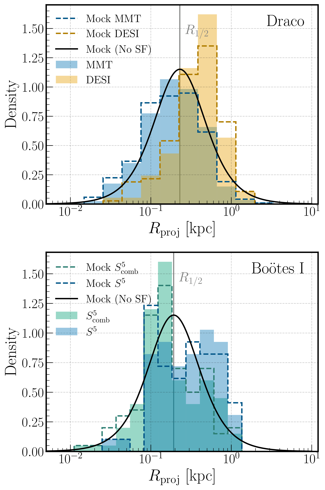<br />
图注：The projected radial distributions of spectroscopic tracers for Draco (top panel) and \(\bootes\) (bottom panel). Filled histograms show the observed spectroscopic samples: MMT \(\citepalias{Walker23}\) (blue) and DESI \(\citepalias{Ding25}\) (orange) for Draco, and \(\sfivecomb\) (teal) and \(\sfive\) (purple) \(\citetalias{Sandford26}\) for \(\bootes.\) Dashed histograms show the corresponding mock datasets after applying the empirical selection functions via resampling. The black solid curve shows the intrinsic radial distribution expected from the Plummer profile in the absence of spectroscopic selection effects. The vertical gray line marks the half-light radius $\rhalf$ from the LVDB~\(\citep{2024arXiv241107424P}\) for each galaxy.<br />
对应解读：“建议重点查看的图表”第1项方法/选择函数相关检查，以及“关键图表逐图导读”图1、图2中关于观测选择函数和径向覆盖的提醒。<br />
入选理由：该图展示 Draco 与 Boötes I 的实际光谱样本径向分布、应用经验选择函数后的 mock 分布，以及无选择效应时的 Plummer 分布。它能验证 GraphNPE 前向模型是否处理选择函数，并帮助判断 150 pc 附近的恒星覆盖是否足够，是解释系统误差和样本权重的重要辅助图。<br />
来源与置信度：\(arxiv_source\)；high；\(arxiv_source\) / main.tex:figure[3]</p>
<h4 id="_68">强相关工作</h4>
<p>这篇工作与经典的矮星系 Jeans 建模、cusp-core 问题和暗物质间接探测 \(J\)-因子估计直接相连。Draco 是同一源的历史重点对象，已有大量动力学分析认为其暗晕密度较高；Boötes I 是同类超暗弱矮星系中的重要目标，常出现在银河系卫星星系目录、暗物质湮灭靶源排序和银河系形成研究中。建议检索关键词包括 “Draco dwarf spheroidal J factor Jeans modeling”, “Boötes I ultra-faint dwarf dark matter density”, “dwarf spheroidal cusp core mass anisotropy degeneracy”, “simulation-based inference stellar dynamics”。</p>
<p>方法上，本文与传统二阶 Jeans、Schwarzschild 轨道叠加、分布函数建模以及近年的 neural posterior estimation 工作形成对照。相反或张力观点主要有两类：一类认为超暗弱矮星系的恒星反馈太弱，不应形成明显 core；另一类认为潮汐扰动、非平衡或成员污染可伪造低密度信号。读者应把本文放在这些张力中看：它提供了比二阶弥散更充分的信息利用方式，但并没有消除所有动力学平衡和样本选择假设。</p>
<p><strong>同一事件 / 同类源线索</strong>：</p>
<ul>
<li><a href="https://arxiv.org/abs/2606.26218">https://arxiv.org/abs/2606.26218</a></li>
<li><a href="https://arxiv.org/pdf/2606.26218">https://arxiv.org/pdf/2606.26218</a></li>
</ul>
<p><strong>相似工作</strong>：</p>
<ul>
<li><a href="https://arxiv.org/abs/0908.2995">https://arxiv.org/abs/0908.2995</a></li>
<li><a href="https://arxiv.org/abs/1008.4686">https://arxiv.org/abs/1008.4686</a></li>
<li><a href="https://arxiv.org/abs/1504.02048">https://arxiv.org/abs/1504.02048</a></li>
</ul>
<p><strong>基础理论 / 方法工作</strong>：</p>
<ul>
<li><a href="https://arxiv.org/abs/astro-ph/9508025">https://arxiv.org/abs/astro-ph/9508025</a></li>
<li><a href="https://arxiv.org/abs/astro-ph/0512156">https://arxiv.org/abs/astro-ph/0512156</a></li>
<li><a href="https://arxiv.org/abs/1202.1282">https://arxiv.org/abs/1202.1282</a></li>
</ul>
<p><strong>相反观点 / 张力线索</strong>：</p>
<ul>
<li><a href="https://arxiv.org/abs/1112.3802">https://arxiv.org/abs/1112.3802</a></li>
<li><a href="https://arxiv.org/abs/1511.01098">https://arxiv.org/abs/1511.01098</a></li>
</ul>
</details>
<h3 id="7-the-emerging-population-of-high-energy-emitting-radio-galaxies">7. The Emerging Population of High-energy Emitting Radio Galaxies</h3>
<ul>
<li>来源：arXiv / astro-ph.HE</li>
<li>链接：https://arxiv.org/abs/2606.26878v1</li>
<li>作者：G. Bruni, V. S. Paliya, D. J. Saikia, L. Bassani, R. D. Baldi, E. Bronzini, F. D'Ammando, S. del Palacio</li>
<li>评分：novelty 6/10，importance 8/10，relevance 9/10，final 8.75/10</li>
<li>推荐理由：聚焦γ射线发射的失准射电星系、CSO/FR0/FRI/II/GRG及SKA-CTAO协同，对AGN粒子加速和高能辐射研究高度相关，虽偏综述但值得读。</li>
</ul>
<p><strong>中文题目</strong>：正在显现的高能辐射射电星系族群</p>
<p><strong>做了什么</strong>：这篇文章综述并组织了一个正在变清晰的图景：高能甚至伽马射线辐射并不只属于喷流几乎指向我们的耀变体，失准直射电星系，包括紧致对称源、FR0、FRI/FRII 以及巨型射电星系，也能有效加速粒子并产生高能辐射。作者把现有探测放在统一的多尺度框架中讨论：内喷流、冕区、热点和瓣区都可能通过同步辐射、同步自康普顿和外康普顿过程贡献不同波段。文章的重点不是给出一个新样本拟合，而是说明 SKA 与 CTAO、NewAthena 等设施结合后，如何把过去主要靠未分辨光谱能量分布推断的高能辐射区，推进到可空间定位、可偏振诊断、可连接秒差距到千秒差距尺度的研究。</p>
<p><strong>为什么重要</strong>：射电星系是研究喷流形成、吸积盘能量释放和星系反馈的关键对象；它们不像耀变体那样被强烈相对论增亮主导，因此更接近射电大族群的真实能量预算。越来越多失准直源被高能探测到，意味着粒子加速在射电噪活动星系中更普遍，也迫使我们重新评估喷流功率、宇宙线贡献、瓣区电子能谱和宿主星系环境的作用。</p>
<p><strong>理论 / 观测 / 仪器方法价值</strong>：文章的价值在于把不同子类射电星系的高能辐射机制与即将到来的仪器能力具体对应起来：低频阵列追踪老等离子体和活动周期，中频阵列给出核心与喷流谱指数和偏振，VLBI 连接核区和千秒差距结构，高能望远镜提供逆康普顿和可能的强子过程约束。对理论建模者，它提示不能只用单区耀变体式模型；对观测者，它给出多波段、多尺度样本构建的路线图。</p>
<p><strong>为什么应该关注</strong>：如果你关心 AGN 反馈、喷流能量传输、非热粒子加速或未来 SKA 科学，这篇文章值得看，因为它讨论的是一个从少数奇异个例转向族群统计的问题。高能射电星系可能成为连接黑洞附近等离子体物理与星系团/星系际介质能量沉积的桥梁，也会影响 CTAO、Fermi-LAT、X 射线和射电巡天联合解释。</p>
<details class="paper-detail">
<summary>展开详细解读：文章讲解、背景、理论、重点章节、图表与相关工作</summary>
<h4 id="_69">文章详细讲解</h4>
<p>科学问题：传统上，高能伽马射线 AGN 样本由耀变体主导，因为喷流视线角小，辐射受到多普勒增亮。射电星系的喷流通常与视线有较大夹角，按简单统一模型应显著变暗；但 Fermi-LAT 和地面切伦科夫望远镜已经探测到多个失准直射电源。本文要回答的不是“某一个源为何亮”，而是“高能辐射是否是射电噪 AGN 的普遍现象，以及这种现象如何跨越从核心到瓣区的尺度”。</p>
<p>作者怎么做：文章综合讨论紧致对称源、FR0、FRI、FRII、巨型射电星系等多个子类，将它们放入吸积、喷流形成和粒子加速的共同框架中。作者强调多种辐射通道可能并存：相对论电子在磁场中产生同步辐射，同一批或不同区域的光子被电子逆康普顿散射产生 X 射线和伽马射线；在致密气体或强辐射场中，强子过程也可能贡献高能尾部。文章特别把这些物理机制与 SKA1-Low、SKA1-Mid 和 SKA-VLBI 的能力相连，说明未来如何用低频弥散辐射、谱指数图、偏振和高分辨结构定位高能耗散区。</p>
<p>关键结果：本文的核心结论是，高能射电星系正在从零散个例变成一个需要系统研究的族群。不同子类提供不同物理窗口：紧致对称源可检验年轻喷流与核周环境相互作用；FR0 可检验缺少大型射电瓣时的核区加速；FRI/FRII 可比较低激发和高激发喷流的辐射效率；巨型射电星系则让我们研究老化等离子体和大尺度逆康普顿辐射。文章认为，只有把射电形态、谱龄、偏振、X 射线和伽马射线一起建模，才能区分内喷流、热点、瓣区和冕区的贡献。</p>
<p>局限和下一步：由于这是一篇前瞻性综述而非均一巡天论文，它不提供一个严格完备、选择函数已知的高能射电星系样本，也没有统一重拟合所有源的光谱能量分布。因此，读者应把它看作研究议程和物理框架，而不是最终统计结论。下一步的关键是建立射电选择和高能选择都可量化的样本，使用 SKA 的低表面亮度灵敏度和高分辨偏振能力识别喷流历史，再与 CTAO 和 X 射线任务联合限制电子能谱、磁场、辐射区位置和潜在强子成分。</p>
<h4 id="_70">关键结果是怎么做出来的</h4>
<p>本文最重要的证据链来自已有高能探测事实与未来射电诊断能力的结合。作者并未声称完成一个新的 Fermi-LAT 似然重分析，也没有给出新的事件数表；相反，它把近年来在失准直 AGN 中出现的伽马射线探测按源类组织起来，强调样本从传统 FRI 原型扩展到紧致对称源、FR0、FRII 和巨型射电星系。读者应注意，这里的“ emerging population ”意味着族群证据正在形成，但距离完备的体积限制样本或通量限制样本仍有差距。</p>
<p>数据和样本选择层面，文章讨论的对象横跨不同选择路径：有些源来自高能目录交叉匹配，有些来自射电形态分类后在伽马射线中寻找对应体，有些是因多波段异常明亮而被深入观测的个例。这种异质性会带来明显选择效应：靠近、核心亮、处于活动态或背景干净的源更容易进入高能样本；低表面亮度瓣区、老化等离子体和低占空比喷流则容易被现有射电巡天漏掉。这正是作者强调 SKA 的原因。</p>
<p>显著性和模型比较方面，典型高能探测依赖 Fermi-LAT 或切伦科夫望远镜的似然检验统计量，用点源或扩展源模板比较有源和无源假设；而射电侧依赖形态、谱指数、偏振和空间关联。本文的论点并不取决于单一源的显著性，而取决于多个源类中反复出现的同一现象：失准直喷流系统也能有非热高能输出。读者在检查原始个例论文时，应特别看伽马射线定位误差椭圆、背景源混淆、光变关联和射电结构是否支持同一辐射区。</p>
<p>支撑结论的图表类型通常包括高能射电星系在射电功率—伽马射线光度平面的位置、不同源类的光谱能量分布、射电图像叠加高能定位区域、以及从秒差距到千秒差距的结构连接图。本文的关键不是某条拟合线的斜率，而是这些图共同显示了辐射区的多尺度性：有些高能辐射更像核心或内喷流，有些可能来自热点、瓣区或与环境相互作用区域。</p>
<p>主要系统误差包括射电形态分类不统一、低频通量受分辨率和缺失短基线影响、核心和瓣区光谱分解困难、伽马射线角分辨率较差导致对应体不唯一、以及非同时多波段数据造成的光谱能量分布偏差。作者提出的稳健路径是用 SKA 的宽频谱、偏振和高动态范围成像来降低这些系统误差，并通过与 NewAthena、CTAO 等设施的准同时观测建立更物理的多区模型。</p>
<details class="paper-subdetail">
<summary>展开背景、理论、公式、模型、章节和图表导读</summary>
<h4 id="_71">背景知识</h4>
<p>研究对象是射电噪 AGN，中心是吸积超大质量黑洞，部分引力能通过磁化喷流输出到宿主星系和星系际介质。按经典统一图景，耀变体是喷流接近视线方向的射电噪 AGN，而射电星系是同类系统在较大视线角下的表现。因此，耀变体的高能亮度主要受相对论增亮支配，射电星系则更适合研究喷流真实功率和空间结构。</p>
<p>历史问题之一是，失准直源是否也能成为有效高能粒子加速器。早期伽马射线 AGN 研究受灵敏度限制，样本强烈偏向耀变体；随着 Fermi-LAT 长时间积累和地面甚高能观测扩展，M87、Cen A、NGC 1275 等原型表明射电星系也能在高能波段明亮。后来更多紧致源、低功率源和大型源被纳入讨论，使问题从个例物理转向族群物理。</p>
<p>观测背景的关键变化来自两端：高能端有更长时间基线、更好的源表和 CTAO 这样的下一代甚高能设施；射电端则有 LOFAR、MeerKAT、ASKAP 以及未来 SKA 提供的低频灵敏度、宽带谱信息和偏振测量。过去很多大尺度等离子体因为表面亮度低、谱指数陡、空间过滤或动态范围不足而难以被可靠表征；这些正是低频和高灵敏度阵列的优势领域。</p>
<p>现在值得重新看，是因为源类边界本身正在变得模糊。FR0 缺少明亮大尺度结构但数量很多，紧致对称源可能代表年轻喷流或被环境限制的喷流，巨型射电星系则记录了长时间喷流活动和低密度环境。若这些源都能产生高能辐射，说明粒子加速不只发生在标准耀变体内区，也可能分布在喷流终端、剪切层、湍流区和老化瓣区。</p>
<p>常见误区是把“非耀变体”理解为“没有相对论效应”或“高能辐射一定来自大尺度瓣”。实际上，射电星系仍可能有中等多普勒因子，核心区仍可能主导高能输出；反过来，一些扩展 X 射线或伽马射线成分也可能来自大尺度逆康普顿过程。另一个误区是只用总射电功率预测伽马射线亮度，而忽略谱龄、磁场、环境密度、视线角和光变状态。</p>
<h4 id="_72">基础理论 / 方法脉络</h4>
<p>基本物理图像是：喷流把黑洞附近的电磁能和粒子能输运到远处，电子在磁场中回旋产生同步辐射，从低频射电到光学甚至 X 射线都有可能；同一批相对论电子还可以把低能光子逆康普顿散射到 X 射线和伽马射线。低能种子光子可以来自同步辐射本身，即同步自康普顿过程，也可以来自吸积盘、宽线区、尘埃环、星光、宇宙微波背景或伴随喷流的外部辐射场，即外康普顿过程。</p>
<p>射电星系与耀变体最大的差别是几何和尺度。多普勒因子随视线角快速变化，因此核心喷流的表观亮度、光变时间和高能峰值都依赖取向；但大尺度瓣区和热点的速度较低，取向效应较弱，更能反映时间平均喷流功率。本文强调的多尺度框架正是要避免把所有高能辐射都塞进一个单区模型。</p>
<p>对 SKA 来说，关键观测量包括总强度、谱指数、谱曲率、偏振分数、法拉第旋转测度、角尺度和表面亮度分布。低频陡谱辐射追踪老电子和喷流活动周期，中高频高分辨率图像追踪核心、紧致喷流、热点和年轻结构；VLBI 则把毫角秒尺度的核区与千秒差距结构联系起来。通过这些量，可以判断高能辐射更可能来自核心、热点、内瓣还是扩展瓣。</p>
<p>本文采用的物理假设可概括为多区非热辐射模型：不同区域有不同磁场、电子能谱、种子光子能量密度和多普勒因子。同步辐射约束电子和磁场组合，逆康普顿辐射约束电子与光子场组合，偏振和谱龄帮助打破退化。若存在强子贡献，则需要考虑质子加速、介子产生和伴随中微子或级联辐射，但在多数射电星系中强子分量还难以单独确认。</p>
<p>常见退化包括磁场强度与电子归一化的退化、辐射区大小与多普勒因子的退化、单区和多区模型在非同时光谱能量分布上的退化，以及核心与扩展区在低角分辨率高能数据中的混淆。选择效应同样关键：伽马射线目录偏向高通量和强光变源，低频射电目录偏向陡谱扩展结构；只有联合选择函数清楚，才能把“探测到一些源”推进到“测量族群发生率”。</p>
<h4 id="_73">公式与推导</h4>
<p>第一步从同步辐射的特征频率开始。能量为 \(\gamma m_{\}}\)<br />
m e}\(c^2\)) 的电子在磁场 \(B\) 中辐射的典型观测频率可写成</p>
<div class="math-display">\[\
u_{\
m syn}\simeq {\delta\over 1+z}{3eB\over 4\pi m_{\
m e}c}\gamma^2 ,\]</div>
<p>其中 \(\gamma\) 是电子洛伦兹因子，\(\delta\) 是多普勒因子，\(z\) 是红移。这个式子说明低频 SKA 图像主要追踪较低能或已冷却电子，而高频核心辐射更偏向年轻高能电子或较强磁场区域。</p>
<p>若电子能谱近似为幂律</p>
<div class="math-display">\[\nN_{\
m e}(\gamma)=K\gamma^{-p},\quad \gamma_{\min}<\gamma<\gamma_{\max},\]</div>
<p>则光薄同步辐射的谱通量满足</p>
<div class="math-display">\[\nS_\
u\propto \
u^{-\alpha},\quad \alpha={p-1\over 2} .\]</div>
<p>这里 \(K\) 是电子数密度归一化，\(p\) 是能谱指数，\(\alpha\) 是射电谱指数。SKA 的宽带谱指数图就是用来把不同区域的电子加速和冷却历史分开。</p>
<p>逆康普顿散射在 Thomson 极限下把种子光子频率 (\<br />
u_{\<br />
m seed}) 提升到</p>
<div class="math-display">\[\
u_{\
m IC}\simeq {\delta\over 1+z}{4\over 3}\gamma^2\
u_{\
m seed} .\]</div>
<p>如果种子光子是同步光子就是同步自康普顿；如果来自宇宙微波背景、尘埃、星光或核区辐射场就是外康普顿。比较 (\<br />
u_{\<br />
m syn}) 和 (\<br />
u_{\<br />
m IC}) 可以估计产生射电和伽马射线的电子能量是否来自同一族群。</p>
<p>同步和逆康普顿的总功率比近似由能量密度控制：</p>
<div class="math-display">\[{L_{\
m IC}\over L_{\
m syn}}\simeq {U_{\
m rad}\over U_B},\quad U_B={B^2\over 8\pi} .\]</div>
<p>其中 \(U_{\}}\)<br />
m rad}) 是种子光子能量密度，\(U_B\) 是磁场能量密度。这个关系解释了为什么大尺度瓣区即使磁场较弱，也可能通过散射宇宙微波背景产生可观 X 射线或伽马射线。</p>
<p>取向效应由多普勒因子控制：</p>
<div class="math-display">\[\delta={1\over \Gamma(1-\eta\cos\	heta)} ,\]</div>
<p>其中 \(\Gamma\) 是 bulk 洛伦兹因子，\(\eta c\) 是喷流速度，\(\	heta\) 是视线角。连续喷流的观测通量常近似为</p>
<div class="math-display">\[\nS_{\
u,{\
m obs}}\simeq \delta^{2+\alpha}S_{\
u,{\
m int}} .\]</div>
<p>这说明射电星系相对耀变体会被显著去增亮，但只要 \(\delta\) 不是太小，核心高能辐射仍可被探测。</p>
<p>谱龄诊断常用冷却断裂频率。同步和逆康普顿冷却导致电子能量损失</p>
<div class="math-display">\[-{d\gamma\over dt}={4\sigma_{\
m T}\over 3m_{\
m e}c}(U_B+U_{\
m rad})\gamma^2 .\]</div>
<p>由此得到冷却时间</p>
<div class="math-display">\[\nt_{\
m cool}\simeq {3m_{\
m e}c\over 4\sigma_{\
m T}(U_B+U_{\
m rad})\gamma} .\]</div>
<p>把 \(\gamma\) 与 (\<br />
u_{\<br />
m syn}) 联系起来，就可以用低频谱曲率估计喷流活动历史和老化等离子体年龄。</p>
<p>对高能探测，源显著性通常来自似然比检验统计量</p>
<div class="math-display">\[\(\nTS=2\left\)[\(\ln\) {\(\cal\) L}(F_\gamma,\oldsymbol{\eta})-\ln {\(\cal\) L}(F_\gamma=0,\oldsymbol{\eta})\
ight] ,\]</div>
<p>其中 \(F_\gamma\) 是伽马射线通量，\(\oldsymbol{\eta}\) 是背景和谱形等 nuisance 参数。在常规条件下，\(\sqrt{TS}\) 可近似看作高斯显著性，但扩展源、低计数和多重试验会破坏这种简单解释。</p>
<p>多波段能量预算可用喷流功率量级连接到观测辐射：</p>
<div class="math-display">\[\nP_{\
m jet}\sim \pi R^2\Gamma^2\eta c\left(U_{\
m e}+U_{\
m p}+U_B\
ight) ,\]</div>
<p>其中 \(R\) 是喷流半径，\(U_{\}}\)<br />
m e})、(U_{\<br />
m p}) 和 \(U_B\) 分别是电子、质子和磁场能量密度。本文关心的核心问题正是如何用 SKA 与高能数据把这些能量项分开，并判断能量在哪里转化为辐射和反馈。</p>
<h4 id="_74">模型拟合 / 应用方法</h4>
<p>这类工作的模型拟合通常从光谱能量分布开始，把射电、红外、光学、X 射线和伽马射线通量放在同一框架中。最简单模型是单区同步加同步自康普顿，拟合参数包括磁场 \(B\)、辐射区半径 \(R\)、电子能谱指数 \(p\)、电子能量上下限、归一化 \(K\)、多普勒因子 \(\delta\) 和红移 \(z\)。但对射电星系，单区模型往往只能描述核心或内喷流，无法同时解释低频扩展结构和高能辐射。</p>
<p>更现实的拟合需要多区模型：核心区、内喷流、热点、瓣区和可能的冕区分别有不同电子谱和磁场。射电图像提供空间先验，谱指数图提供电子谱约束，偏振提供磁场几何和法拉第环境约束，高能数据提供逆康普顿或高能尾部约束。拟合时不能简单把非同时数据当成同一状态，特别是核心主导源可能有强光变。</p>
<p>似然层面，高能数据通常采用泊松计数似然，包含点扩散函数、有效面积、能量响应、漫射背景和邻近源模型；射电成像则更多使用图像域残差、\(uv\) 域拟合、谱指数误差传播和偏振去偏振模型。若要联合拟合，实际常采用分层方法：先在各波段得到通量、形态和不确定度，再在物理模型中传播这些观测约束。</p>
<p>主要退化包括 \(B\) 与 \(K\) 的退化、\(R\) 与 \(\delta\) 的退化、外部光子场能量密度与电子高能截断的退化，以及强子模型和极端电子模型在稀疏高能数据上的退化。低频射电还会受到缺失短基线、混叠源、离轴校准和电离层误差影响；高能端则受背景模型、源混淆和长时间平均导致的状态混合影响。</p>
<p>残差应从物理角度解读：若模型低估低频陡谱通量，可能缺少老化瓣区；若高估核心射电但低估伽马射线，可能需要外康普顿或更高 \(\delta\)；若 X 射线过量但无线电对应弱，可能涉及大尺度逆康普顿、热气体污染或冕区辐射。本文的实际应用价值在于提醒读者，未来 SKA 数据会让这些残差从“光谱不匹配”变成“空间上可定位的不匹配”。</p>
<h4 id="_75">重点章节 / 结果段落怎么读</h4>
<p>第一，读“高能射电星系族群”相关段落时，应抓住源类扩展这一主线。作者把紧致对称源、FR0、FRI/FRII 和巨型射电星系并列讨论，重点不是每类的传统定义，而是它们如何分别代表年轻喷流、弱扩展喷流、经典双瓣喷流和长寿命大尺度喷流。</p>
<p>第二，读辐射机制段落时，应把同步辐射、同步自康普顿和外康普顿看成互补诊断，而不是相互排斥的标签。需要特别关注作者如何把内喷流、冕区、热点和瓣区与不同种子光子场相连。</p>
<p>第三，读 SKA 能力段落时，应区分 SKA1-Low、SKA1-Mid 和 SKA-VLBI 的角色。SKA1-Low 主要追踪低频陡谱和老等离子体，SKA1-Mid 适合高分辨谱指数和偏振，SKA-VLBI 负责把毫角秒核心结构与千秒差距喷流连接起来。</p>
<p>第四，读与 NewAthena 和 CTAO 协同的段落时，应关注多波段同时性和空间分辨率。X 射线能区可以区分热气体、同步高能尾和逆康普顿分量；甚高能伽马射线则对最高能粒子、吸收和强子成分更敏感。</p>
<p>第五，读讨论和展望时，应把本文理解为研究路线图。它提出的问题是未来样本如何选择、辐射区如何定位、模型退化如何打破，而不是给出最终的射电星系伽马射线光度函数。</p>
<h4 id="_76">建议重点查看的图表</h4>
<p>一，源类示意或样本汇总图：看高能探测的射电星系是否覆盖紧致源、FR0、FRI/FRII 和巨型射电星系；注意是否有选择函数说明。</p>
<p>二，射电功率与伽马射线光度关系图：看失准直源相对耀变体的位置，是否存在连续关系，散布是否由视线角、环境或源类驱动。</p>
<p>三，典型光谱能量分布图：看同步峰、逆康普顿峰、X 射线斜率和伽马射线点是否能由单区模型解释，还是需要核心加瓣区的多区模型。</p>
<p>四，射电图像与高能定位叠加图：看伽马射线误差区域是否足以区分核心、热点和瓣区；注意邻近背景源和扩展源模板。</p>
<p>五，谱指数或谱曲率图：看低频陡谱区域是否对应老化等离子体，是否支持喷流重启或间歇活动。</p>
<p>六，偏振和法拉第旋转测度图：看磁场有序性、剪切层、冲击压缩和环境屏蔽是否与可能的粒子加速区一致。</p>
<p>七，未来设施灵敏度或参数空间图：看 SKA、CTAO、NewAthena 的灵敏度是否真正覆盖已知源外推范围，而不是只对最亮个例有效。</p>
<h4 id="_77">关键图表逐图导读</h4>
<p>图 1：若论文给出高能射电星系族群示意图，横轴通常可理解为线性尺度或源类演化阶段，纵轴可能是高能探测状态、射电功率或辐射机制。读图时不要把源类排布误读成严格演化序列；紧致对称源、FR0 和巨型射电星系可能对应不同物理路径，而不一定是一条单向年龄序列。</p>
<p>图 2：若有射电功率—伽马射线光度图，横轴多为某一射电频率的单色功率，纵轴为伽马射线能段光度。数据点应按源类或视线角区分，模型线可能表示相关关系或耀变体外推。读图陷阱是把相关性直接解释为同一区域辐射；射电通量可能来自瓣区，而伽马射线可能来自核心。</p>
<p>图 3：若有光谱能量分布图，横轴是频率或光子能量，纵轴是 (\<br />
u F_\<br />
u) 或能量通量。同步分量在低能端，逆康普顿或强子级联在高能端。重点看 X 射线连接低能和高能分量的方式，因为它常决定单区模型是否可行；非同时数据点引起的虚假弯曲是主要读图陷阱。</p>
<p>图 4：若有射电形态图，坐标轴是天球位置，等值线或颜色表示射电表面亮度，可能叠加高能定位误差圆。重点看核心、喷流、热点、瓣区和背景源的位置关系。若高能误差圆远大于射电结构，不能仅凭重合断言辐射来自某个子结构。</p>
<p>图 5：若有谱指数或低频图，颜色表示 \(\alpha\) 或谱曲率，等值线表示总强度。陡谱和弯曲谱区域通常说明电子冷却或老化，但也可能受混合分辨率、缺失通量和校准误差影响。应检查是否使用匹配波束和一致的 \(uv\) 覆盖。</p>
<p>图 6：若有未来设施参数空间图，横轴可能是通量、角尺度、频率或曝光时间，纵轴是灵敏度或可探测源数。重点看预测是否基于真实源计数和选择函数，还是基于少数已知源简单外推；对族群结论来说，后者不够。</p>
</details>
<h4 id="_78">论文原图 / 可嵌入图片</h4>
<p><strong>Fig01</strong><br />
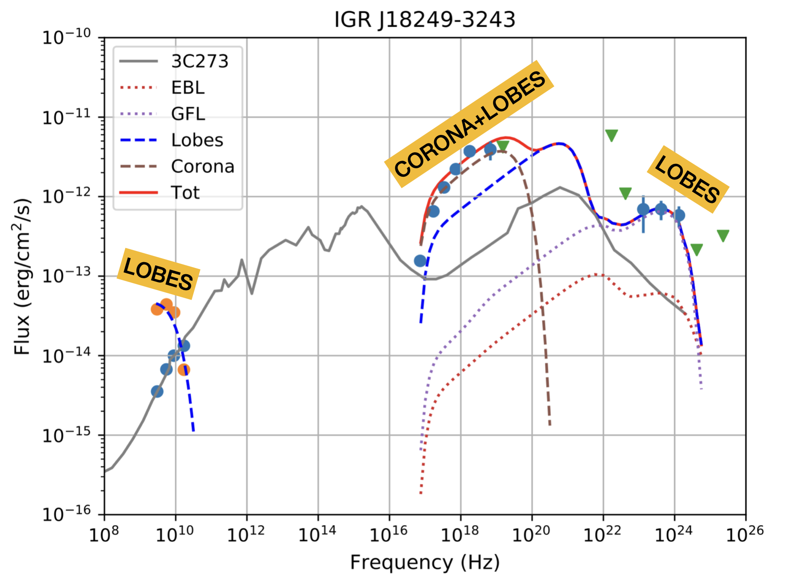<br />
图注：Broadband SED of IGR~J18249$-$3243 (adapted from \citealt{Bruni2022}). Orange and blue symbols in the radio frequency range represent the lobe and core flux densities, respectively. The grey line shows the average spectrum of the blazar 3C\,273 normalized to the 5\,GHz core flux of the target, serving as a reference for a typical beamed AGN spectrum. Dashed curves mark the individual model components (dotted for lobe sub-components), and the red solid line indicates the total emission.<br />
对应解读：对应“典型光谱能量分布图”、关键图表逐图导读中的图 3，以及模型拟合段落关于单区/多区 SED 分解、核心与瓣区贡献、SSC/EIC 组件和残差解释的讨论。<br />
入选理由：这是候选图中唯一真实给出宽波段 SED、核心与瓣区射电通量、多个模型分量和总模型线的图，最能支撑日报对同步辐射、逆康普顿、高能点是否需要多区模型的详细解读。它还直接展示了射电星系相对耀变体模板的差异，有助于说明失准直源不能简单套用耀变体单区模型。<br />
来源与置信度：\(arxiv_source\)；high；\(arxiv_source\) / HE-RG.tex:figure[1]</p>
<p><strong>Fig02</strong><br />
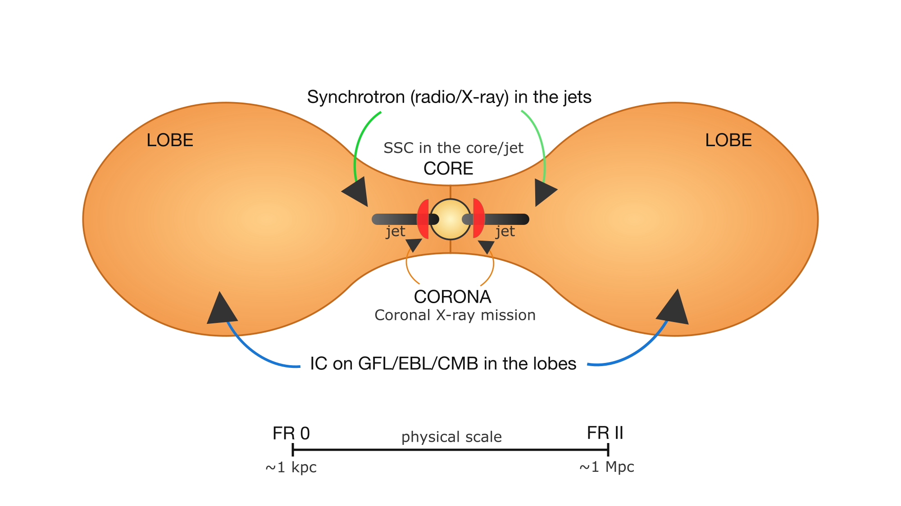<br />
图注：Sketch of the different radiative processes at play in radio galaxies: synchrotron and synchrotron self-Compton are predominant in the inner region of the jet, along with coronal emission in the X-ray band. In the lobes, inverse Compton off Galactic Foreground Light (GFL), External Background Light (EBL), and Cosmic Microwave Background (CMB) is present. The typical physical scale (bottom ruler) spans from $\sim$1 kpc for FR\,0 (or even sub-kpc for CSO) to $\sim$1 Mpc for FR\,II.<br />
对应解读：对应“源类示意或样本汇总图”、关键图表逐图导读中的图 1，以及正文关于 CSO/FR0/FRI/FRII/巨型射电星系跨尺度辐射机制的框架性讨论。<br />
入选理由：该图概括了射电星系从内喷流到瓣区的主要辐射过程，并用物理尺度标出 FR0、CSO 到 FRII 的范围，能支撑日报关于高能射电星系族群化、多尺度粒子加速和 SKA 需要连接 parsec 到 Mpc 结构的解读。虽然它是示意图而非观测诊断图，但与本文综述性质和核心物理框架高度相关。<br />
来源与置信度：\(arxiv_source\)；high；\(arxiv_source\) / HE-RG.tex:figure[2]</p>
<h4 id="_79">强相关工作</h4>
<p>这篇文章与几个研究传统相连。第一是 AGN 统一模型和射电星系形态分类，从 Fanaroff-Riley 分类到 Urry 与 Padovani 的统一图景，奠定了“耀变体与射电星系主要由取向区分”的基础。本文的推进之处在于强调失准直源的高能辐射并非统一模型的例外，而是统一模型在多尺度、多区辐射下需要自然包含的部分。建议检索关键词包括 “misaligned AGN gamma-ray radio galaxies”、“Fermi LAT radio galaxies”、“FR0 gamma rays”、“compact symmetric objects gamma rays”。</p>
<p>第二是高能目录和多波段个例研究。Fermi-LAT 的 AGN 目录和 misaligned AGN 研究提供了高能样本基础，M87、Centaurus A、NGC 1275 等原型源提供了核心、喷流和瓣区辐射定位的历史经验。与这些个例相比，本文更强调 SKA 时代的系统性：低频老等离子体、偏振磁场结构和 VLBI 核区将共同决定我们能否从“探测到伽马射线”走向“知道伽马射线在哪里产生”。</p>
<p>也存在张力和相反观点：一些工作倾向于把射电星系高能辐射归因于轻微失准直的内喷流，另一些则强调大尺度瓣区逆康普顿或环境中的强子相互作用。由于当前高能角分辨率有限，许多源仍可被多种模型解释。检索时可加入 “lobe inverse Compton gamma rays”、“hadronic emission radio galaxies”、“AGN corona gamma rays”、“CTA radio galaxies” 等关键词。</p>
<p><strong>同一事件 / 同类源线索</strong>：</p>
<ul>
<li><a href="https://arxiv.org/abs/2606.26878">https://arxiv.org/abs/2606.26878</a></li>
<li><a href="https://ui.adsabs.harvard.edu/abs/1974MNRAS.167P..31F/abstract">https://ui.adsabs.harvard.edu/abs/1974MNRAS.167P..31F/abstract</a></li>
<li><a href="https://ui.adsabs.harvard.edu/abs/1995PASP..107..803U/abstract">https://ui.adsabs.harvard.edu/abs/1995PASP..107..803U/abstract</a></li>
</ul>
<p><strong>相似工作</strong>：</p>
<ul>
<li><a href="https://arxiv.org/abs/1002.2280">https://arxiv.org/abs/1002.2280</a></li>
<li><a href="https://arxiv.org/abs/1905.10771">https://arxiv.org/abs/1905.10771</a></li>
</ul>
<p><strong>基础理论 / 方法工作</strong>：</p>
<ul>
<li><a href="https://ui.adsabs.harvard.edu/abs/1974MNRAS.167P..31F/abstract">https://ui.adsabs.harvard.edu/abs/1974MNRAS.167P..31F/abstract</a></li>
<li><a href="https://ui.adsabs.harvard.edu/abs/1995PASP..107..803U/abstract">https://ui.adsabs.harvard.edu/abs/1995PASP..107..803U/abstract</a></li>
</ul>
<p><strong>相反观点 / 张力线索</strong>：</p>
<p>（未提供）</p>
</details>
<h3 id="8-a-boundary-consistent-two-zone-electron-kernel-for-distant-pulsar-contributions-to-positron-flux-and-anisotropy">8. A Boundary-Consistent Two-Zone Electron Kernel for Distant Pulsar Contributions to Positron Flux and Anisotropy</h3>
<ul>
<li>来源：arXiv / astro-ph.HE</li>
<li>链接：https://arxiv.org/abs/2606.26597v1</li>
<li>作者：Yiwei Bao, Jie-Shuang Wang, Hao Zhou</li>
<li>评分：novelty 7/10，importance 7/10，relevance 9/10，final 8.70/10</li>
<li>推荐理由：提出两区扩散电子/正电子传播半解析核并应用于脉冲星、正电子谱和各向异性，直接关联宇宙线轻子与TeV halo解释，值得关注。</li>
</ul>
<p><strong>中文题目</strong>：一个边界一致的两区电子传播核：远距离脉冲星对正电子通量和各向异性的贡献</p>
<p><strong>做了什么</strong>：这篇文章建立了一个用于宇宙线电子和正电子传播的球形两区扩散半解析核：脉冲星附近采用慢扩散区，外部采用普通星际扩散区，同时沿能量特征线处理同步辐射和包含 Klein--Nishina 效应的反康普顿冷却。作者用级数解替代直接两区积分，避免数值振荡抵消，并能保留有限体积计算中出现的清晰冷却边界。把这个核用于脉冲星正电子解释时，他们发现近邻脉冲星仍然适合解释 \(\mathrm{TeV}\) 附近截断，但在 \(10\)--\(100\,\mathrm{GeV}\) 区间，距离超过 \(1\,\mathrm{kpc}\) 的脉冲星群体仍可贡献相当比例；在盘半厚度 \(0.2\,\mathrm{kpc}\) 的设定下，这部分可达 \(37\%\)--\(47\%\)。结合 AMS-02 正电子数据和全天电子各向异性上限，并加入 Local Bubble 与脉冲星自行所暗示的内侧 \(100\,\mathrm{pc}\) 空腔后，Geminga 量级的慢扩散晕仍与当前数据相容，但仅靠通量和各向异性还不能唯一确定晕大小。</p>
<p><strong>为什么重要</strong>：正电子超额是否来自脉冲星，关键不只在源谱，还在源附近扩散是否被显著抑制。HAWC 对 Geminga 和 Monogem 周围 \(\mathrm{TeV}\) 晕的观测让“慢扩散晕”成为标准讨论对象，但如果把慢扩散区直接套进银河传播模型，边界条件、冷却边界和远源叠加会明显影响对 AMS-02 数据的解释。本文的重要性在于给出了一个边界处理更可靠、适合快速扫描源群体贡献的传播核，从而把“近邻单源解释”和“远距离源群体背景”放在同一套计算框架下比较。</p>
<p><strong>理论 / 观测 / 仪器方法价值</strong>：理论上，文章提供了两区扩散方程的边界一致级数解，可作为有限体积数值解的半解析校验，也可用于快速参数扫描。观测上，它把 AMS-02 正电子谱、全电子各向异性上限和 \(\mathrm{TeV}\) 晕尺度联系起来，说明通量拟合本身并不能反推出唯一的慢扩散晕半径。方法上，文章强调能量损失特征线与空间边界条件必须协同处理，否则会在高能电子冷却边界附近产生非物理振荡或抹平。</p>
<p><strong>为什么应该关注</strong>：如果你关心 AMS-02 正电子超额、Geminga 慢扩散晕、脉冲星是否能替代暗物质解释正电子谱，或者想把 \(\gamma\) 射线 \(\mathrm{TeV}\) 晕形态与本地宇宙线轻子数据联合起来，这篇文章值得读。它的核心提醒是：当前正电子通量与各向异性并没有把慢扩散晕参数钉死；远距离脉冲星的累积贡献也不能简单忽略。</p>
<details class="paper-detail">
<summary>展开详细解读：文章讲解、背景、理论、重点章节、图表与相关工作</summary>
<h4 id="_80">文章详细讲解</h4>
<p>科学问题：宇宙线正电子在 \(10\,\mathrm{GeV}\) 以上出现相对电子背景的超额，脉冲星风星云及其老年脉冲星残余被认为是自然候选源。问题在于，HAWC 等 \(\gamma\) 射线观测显示 Geminga、Monogem 周围可能存在扩散系数远低于平均星际介质的 \(\mathrm{TeV}\) 晕。如果每个脉冲星都有类似慢扩散区，那么从源注入的 \(e^\pm\) 需要先穿过近源慢扩散区，再进入普通星际扩散区；这会同时改变本地通量谱形、可见源体积和各向异性。传统单区扩散或粗略两区近似很容易误判远源贡献和高能冷却边界。</p>
<p>作者怎么做：文章构造了球形两区扩散模型。以内半径 \(r_\mathrm{h}\) 表示近源慢扩散晕，内区扩散系数 \(D_1(E)\) 较小，外区扩散系数 \(D_2(E)\) 接近银河平均值。作者要求在边界 \(r=r_\mathrm{h}\) 处粒子密度与径向通量连续，并把同步辐射和反康普顿能损写入能量特征线 \(E_s\rightarrow E\)。技术重点是用半解析级数核来表达从脉冲星到地球的传播，而不是直接对两区格林函数做振荡积分；这样可以避免高阶本征模之间的严重抵消，并保留有限体积数值解中出现的尖锐冷却边界。</p>
<p>关键结果：在应用到本地正电子通量时，作者确认 Geminga、Monogem 等近邻脉冲星仍然是 \(\mathrm{TeV}\) 附近截断和高能形状的自然来源。但在 \(10\)--\(100\,\mathrm{GeV}\) 能段，电子冷却时间更长，传播距离更大，远距离脉冲星群体不能被近邻源图像替代。对于银河盘半厚度 \(0.2\,\mathrm{kpc}\) 的例子，距离超过 \(1\,\mathrm{kpc}\) 的脉冲星可贡献 \(37\%\)--\(47\%\) 的该能段通量。加入一个内侧 \(100\,\mathrm{pc}\) 空腔后，拟合脉冲星成分主要由超过 \(0.3\,\mathrm{kpc}\) 的源主导，并且 Geminga 量级慢扩散晕仍能满足 AMS-02 正电子谱和全电子各向异性上限。</p>
<p>局限和下一步：文章的结论依赖于脉冲星空间分布、年龄分布、注入效率、盘厚度、慢扩散晕半径以及 Local Bubble 空腔等假设。通量与各向异性数据对这些量存在强退化，特别是 \(r_\mathrm{h}\)、\(D_1(E)\)、源效率 \(\eta\)、注入谱指数和高能截断之间无法靠 AMS-02 单独分开。作者因此强调，真正能打破退化的是外部信息，例如单个 \(\mathrm{TeV}\) 晕的角延展、能谱形状、源自行历史、以及未来更严格的全电子各向异性测量。</p>
<h4 id="_81">关键结果是怎么做出来的</h4>
<p>数据和样本选择方面，文章不是只拟合一个单独脉冲星，而是把脉冲星源群体放入两区传播核中计算本地 \(e^\pm\) 通量。样本概念上包括近邻已知候选源以及更远处的统计源群体，重点比较不同距离壳层对 \(10\)--\(100\,\mathrm{GeV}\) 与 \(\mathrm{TeV}\) 能段的贡献。作者还引入内侧 \(100\,\mathrm{pc}\) 空腔，这一设定用于模拟 Local Bubble 环境和脉冲星自行导致的近场源缺失，而不是任意删去近邻贡献。</p>
<p>最重要的数值结果是远源贡献比例。对于盘半厚度 \(0.2\,\mathrm{kpc}\) 的设定，距离超过 \(1\,\mathrm{kpc}\) 的脉冲星在 \(10\)--\(100\,\mathrm{GeV}\) 正电子通量中仍可贡献 \(37\%\)--\(47\%\)。这个结论来自两区传播核对不同距离源的逐项求和或积分，而不是简单用单区扩散长度截断。其物理原因是该能段冷却时间还没有短到只允许几百 \(\mathrm{pc}\) 内源贡献，源体积随距离增长带来的数量优势仍然重要。</p>
<p>统计比较方面，文章把计算得到的脉冲星正电子成分与 AMS-02 正电子数据比较，同时检查全电子各向异性上限。通量拟合约束的是能谱归一化、注入谱形状、截止能量和传播参数组合；各向异性则对是否由少数近邻源主导更敏感。若近邻单源贡献过大，偶极各向异性通常会上升；若远源群体贡献足够多，总通量可保持而各向异性被稀释。本文因此用通量和各向异性的联合可容许区域来判断慢扩散晕参数是否被排除。</p>
<p>支撑结论的图表应包括：两区核与有限体积解的对照图、不同距离壳层贡献的能谱分解图、AMS-02 正电子谱拟合图、以及全电子各向异性预测与上限比较图。前两类图证明方法可靠和远源不可忽略，后两类图证明参数组合与现有观测相容。读者应特别看高能冷却边界附近是否有非物理振荡、远距离壳层在低能端是否因源数体积效应抬升、以及各向异性曲线是否在实验上限附近擦边。</p>
<p>系统误差和稳健性主要来自源分布、盘厚度、慢扩散区半径、内外扩散系数比、能损场模型和注入效率。文章的稳健结论不是“某个 \(r_\mathrm{h}\) 被测定”，而是相反：在合理 Local Bubble 空腔和源群体设定下，Geminga 量级慢扩散晕尚未被 AMS-02 正电子谱与全电子各向异性排除；同时远源群体贡献会削弱从本地通量直接反推近邻源性质的能力。</p>
<details class="paper-subdetail">
<summary>展开背景、理论、公式、模型、章节和图表导读</summary>
<h4 id="_82">背景知识</h4>
<p>研究对象是高能宇宙线电子和正电子。与质子不同，\(e^\pm\) 在银河传播中会通过同步辐射和反康普顿散射快速损失能量，因此高能端携带更局域、更近期的源信息。AMS-02 精确测得正电子分数和正电子通量后，\(10\,\mathrm{GeV}\) 以上正电子超额成为高能天体物理和暗物质间长期争论的焦点。脉冲星可以自然产生 \(e^\pm\) 对，因此是最保守的天体物理解释。</p>
<p>历史问题在于传播模型。经典做法常把银河视为具有均匀扩散系数的扩散晕，源项来自连续分布或若干离散脉冲星。但 HAWC 对 Geminga 和 Monogem 附近扩展 \(\mathrm{TeV}\) \(\gamma\) 射线的观测表明，源附近扩散可能比银河平均值低两个数量级左右。若这种慢扩散只限于源周围几十 \(\mathrm{pc}\)，粒子逃逸会被延迟，但最终仍可在普通星际介质中传播；若慢扩散区非常大，则近邻脉冲星对地球正电子贡献会被强烈抑制。</p>
<p>现在值得重新看，是因为观测端同时有三个约束正在变得相关：AMS-02 给出高精度正电子谱，HAWC、LHAASO 等给出 \(\mathrm{TeV}\) 晕形态与能谱，全电子各向异性实验给出上限。三者约束的不是同一个量：正电子谱看总贡献，各向异性看空间不均匀性，\(\gamma\) 射线晕看源附近扩散和注入历史。因此需要一个能把近源慢扩散和远处普通扩散连续连接的传播核。</p>
<p>该领域常见误区之一是把 Geminga 的慢扩散系数直接扩展到整个银河，从而得出脉冲星不可能解释正电子超额；另一个误区是只用近邻几个著名脉冲星估计全部正电子通量，忽略 \(10\)--\(100\,\mathrm{GeV}\) 时远源数量体积的贡献。还有一个技术误区是用不满足边界通量连续的拼接解，或用数值不稳定的积分表达式，导致高能冷却边界附近的误差被误读为物理谱特征。</p>
<h4 id="_83">基础理论 / 方法脉络</h4>
<p>基本物理图像是扩散加能损。脉冲星在自转能损驱动下向周围注入 \(e^\pm\)，这些粒子在磁场中同步辐射，在星光、红外和宇宙微波背景中反康普顿散射。由于能损近似随能量升高而增强，高能 \(e^\pm\) 的可传播距离比低能粒子短。因此，\(\mathrm{TeV}\) 电子更偏向近邻年轻或中年源，\(10\)--\(100\,\mathrm{GeV}\) 粒子则可以来自更大体积。</p>
<p>本文的模型假设是球对称两区扩散。源周围半径 \(r_\mathrm{h}\) 内为慢扩散区，扩散系数 \(D_1(E)\) 小；外部为普通星际扩散区，扩散系数 \(D_2(E)\) 大。边界条件要求粒子数密度连续，且扩散通量连续，即内外两侧的 \(-D(E)\partial n/\partial r\) 相等。这个条件很关键，因为若只匹配密度而不匹配通量，会人为制造或吸收粒子。</p>
<p>能损处理采用特征线思想。若观测到能量 \(E\) 的粒子是在源年龄 \(t\) 前以能量 \(E_s\) 注入，则 \(E_s\) 由 \(\mathrm{d}E/\mathrm{d}t=-b(E)\) 决定。同步辐射和 Thomson 极限下反康普顿可给出近似 \(b(E)\propto E^2\)，但在高能端 Klein--Nishina 效应会降低反康普顿损失效率，使冷却历史偏离简单解析形式。文章把这种能损放进传播核，而不是在空间扩散后再做事后修正。</p>
<p>观测和统计逻辑是：给定脉冲星年龄、距离、注入谱和总能量，把传播核卷积得到地球处 \(e^\pm\) 通量；把所有源相加后与 AMS-02 正电子谱比较；再由通量梯度估算全电子偶极各向异性并与上限比较。主要退化包括 \(D_1(E)\) 与 \(r_\mathrm{h}\) 的逃逸时间退化、注入效率与源数密度的归一化退化、谱指数与能损场的谱形退化、以及近邻源缺失与各向异性降低之间的退化。</p>
<h4 id="_84">公式与推导</h4>
<p>第一步是写出球对称扩散-能损方程。令 \(n(E,r,t)\) 为单位能量粒子数密度，\(Q(E,r,t)\) 为源项，\(D(E,r)\) 为扩散系数，\(b(E)=-\mathrm{d}E/\mathrm{d}t\) 为能损率，则</p>
<div class="math-display">\[\rac{\partial n}{\partial t}=\rac{1}{r^2}\rac{\partial}{\partial r}\left[r^2D(E,r)\rac{\partial n}{\partial r}\
ight]+\rac{\partial}{\partial E}\left[b(E)n\
ight]+Q(E,r,t).\]</div>
<p>这里假设没有显著对流和再加速，适用于高能 \(e^\pm\) 的局域传播近似。</p>
<p>第二步定义两区扩散系数：</p>
<div class="math-display">\[\nD(E,r)=\egin{cases}\(D_1(E),\) & r<r_\mathrm{h},\\\ D_2(E), & r>\(r_\mathrm{h},\end{cases}\quad\) D_i(E)=D_{i,0}\left(\rac{E}{E_0}\
ight)^\delta .\]</div>
<p>其中 \(r_\mathrm{h}\) 是慢扩散晕半径，\(D_1(E)\ll D_2(E)\)，\(\delta\) 是扩散能量指数。这个分段形式把 \(\mathrm{TeV}\) 晕观测暗示的近源慢扩散与银河平均传播分开。</p>
<p>第三步是边界一致条件。在 \(r=r_\mathrm{h}\) 处必须满足</p>
<div class="math-display">\[\(\nn_1(E,r_\mathrm{h},t)=n_2(E,r_\mathrm{h},t),\quad\) D_1(E)\left.\rac{\(\partial\) n_1}{\partial r}\
ight|_{r_\mathrm{h}}=D_2(E)\left.\rac{\partial n_2}{\partial r}\
ight|_{r_\mathrm{h}} .\]</div>
<p>第一式保证密度不跳变，第二式保证径向粒子通量连续；本文所谓 boundary-consistent 的核心就在这里。</p>
<p>第四步沿能量特征线处理冷却。若粒子从注入能量 \(E_s\) 冷却到观测能量 \(E\)，传播时间为 \(\	au\)，则</p>
<div class="math-display">\[\	au=\int_E^{E_s}\rac{\mathrm{d}E'}{b(E')} .\]</div>
<p>在简单 \(b(E)=b_0E^2\) 情况下有</p>
<div class="math-display">\[\nE_s=\rac{E}{1-b_0E\	au},\(\quad\) E<\rac{1}{b_0\	au} .\]</div>
<p>最后的不等式就是冷却边界：超过该边界的观测能量不可能由给定年龄源贡献。</p>
<p>第五步给出能量依赖扩散长度。对单区情形常定义</p>
<div class="math-display">\[\lambda^2(E,E_s)=4\int_E^{E_s}\rac{D(E')}{b(E')}\\,\mathrm{d}E' .\]</div>
<p>两区模型不能简单用一个 \(\lambda\) 代替全部空间传播，但这个量仍说明为什么低能粒子能采样更大源体积，高能粒子只看近邻。</p>
<p>第六步把传播核与注入谱相连。若单个脉冲星注入谱为</p>
<div class="math-display">\[\nQ(E_s,t_s)=Q_0\left(\rac{E_s}{E_0}\
ight)^{-p}\exp\left(-\rac{E_s}{E_c}\
ight)L(t_s),\]</div>
<p>其中 \(p\) 是注入谱指数，\(E_c\) 是截止能量，\(L(t_s)\) 表示随时间衰减的注入功率，则地球处密度可写成</p>
<div class="math-display">\[\nn(E,r_\oplus,t)=\int\mathrm{d}t_s\\,G_{2\mathrm{z}}(E,r_\oplus,t;E_s,t_s)Q(E_s,t_s)\left|\rac{\mathrm{d}E_s}{\mathrm{d}E}\
ight| .\]</div>
<p>\(G_{2\mathrm{z}}\) 是本文构造的两区级数传播核，雅可比项来自能量变量变换。</p>
<p>第七步从密度到可观测通量：</p>
<div class="math-display">\[\Phi_{e^\pm}(E)=\rac{c}{4\pi}n(E,r_\oplus,t) .\]</div>
<p>多个脉冲星的贡献线性相加，因而不同距离壳层的贡献可以直接拆分，本文关于 \(>1\,\mathrm{kpc}\) 源贡献 \(37\%\)--\(47\%\) 的判断就是在这个层面做的。</p>
<p>第八步估算各向异性。扩散近似下偶极幅度为</p>
<div class="math-display">\[\Delta(E)=\rac{3D_2(E)}{c}\rac{|\
abla n(E,r_\oplus)|}{n_\mathrm{tot}(E,r_\oplus)} .\]</div>
<p>分子反映局域梯度，分母包括所有电子和正电子背景；远源群体和连续背景会增大分母并平滑梯度，从而降低 \(\Delta(E)\)。</p>
<p>第九步是通量拟合的统计量。若 AMS-02 数据点为 \(\Phi_j^\mathrm{obs}\)，误差为 \(\sigma_j\)，模型为 \(\Phi_j^\mathrm{mod}(\oldsymbol{\	heta})\)，可用</p>
<div class="math-display">\[\chi^2(\oldsymbol{\	heta})=\sum_j\rac{\left[\Phi_j^\mathrm{obs}-\Phi_j^\mathrm{mod}(\oldsymbol{\	heta})\
ight]^2}{\sigma_j^2}\]</div>
<p>或等价似然比较参数 \(\boldsymbol{\	heta}\)。这里 \(\boldsymbol{\	heta}\) 包括 \(r_\mathrm{h}\)、\(D_{1,0}\)、\(D_{2,0}\)、\(p\)、\(E_c\)、注入效率和源分布参数。</p>
<h4 id="_85">模型拟合 / 应用方法</h4>
<p>这类工作的拟合量首先是正电子通量谱或正电子分数。模型通常由背景二级正电子、可能的普通电子背景和脉冲星 \(e^\pm\) 成分构成。本文重点在脉冲星成分的传播核，因此拟合参数包括注入谱指数 \(p\)、截止能量 \(E_c\)、总注入能量或效率 \(\eta\)、慢扩散晕半径 \(r_\mathrm{h}\)、内外扩散系数 \(D_1(E)\) 与 \(D_2(E)\)，以及源群体的空间和年龄分布。AMS-02 数据的高精度意味着统计误差小，系统误差和模型结构误差反而更重要。</p>
<p>似然或 \(\chi^2\) 诊断要同时看谱形和归一化。若模型只是在 \(10\)--\(100\,\mathrm{GeV}\) 区间匹配，但在几百 \(\mathrm{GeV}\) 到 \(\mathrm{TeV}\) 附近过硬或过软，说明注入截止、冷却模型或近邻源贡献有问题。两区扩散尤其会影响谱的高能边界，因为慢扩散延迟逃逸，使得高能粒子更容易在到达地球前冷却。因此残差图比单一最小 \(\chi^2\) 更有信息量。</p>
<p>各向异性不是额外归一化数据点，而是空间结构约束。若通量由一个近邻强源主导，\(|\nabla n|/n\) 通常较大；若由许多远源叠加，梯度被平均，各向异性下降。本文发现加入 \(100\,\mathrm{pc}\) 空腔后，拟合成分主要来自 \(>0.3\,\mathrm{kpc}\) 源，这有助于同时维持通量并不触犯全电子各向异性上限。读者应注意各向异性上限通常对应全电子样本，而不是纯正电子，因此分母背景处理会影响结论。</p>
<p>主要退化关系包括：较大的 \(r_\mathrm{h}\) 与较小的 \(D_1\) 都会增加近源滞留时间；较高的注入效率可以补偿慢扩散造成的通量下降；较硬的注入谱可以补偿冷却造成的高能变软；更厚或更薄的有效源盘会改变远源数量，从而改变 \(10\)--\(100\,\mathrm{GeV}\) 归一化。由于这些退化，仅凭正电子谱和各向异性很难唯一反演慢扩散晕大小。</p>
<p>模型可能失败的地方也很清楚。如果真实近源环境不是球对称，而是受磁力线各向异性、Local Bubble 边界或源自行轨迹控制，球形两区核会系统偏差。如果 \(\mathrm{TeV}\) 晕只存在于少数源，不能代表普遍脉冲星群体，远源叠加预测也会改变。如果背景二级正电子或太阳调制在低能端处理不当，\(10\,\mathrm{GeV}\) 附近的拟合会误导对注入谱的判断。</p>
<h4 id="_86">重点章节 / 结果段落怎么读</h4>
<p>数据与模型设定部分应先读。重点看作者如何定义球形两区扩散、采用怎样的 \(D_1(E)\)、\(D_2(E)\)、\(r_\mathrm{h}\)、能损函数和边界条件。尤其要确认他们是否同时匹配密度和扩散通量，因为这是本文与简单拼接模型的根本区别。</p>
<p>半解析核推导部分是全文方法核心。读者应关注级数解如何构造、本征模如何满足内外边界、能量特征线如何把 \(E_s\) 与 \(E\) 连接起来，以及为什么这种表达比直接积分更稳定。若论文给出与有限体积数值解的比较，应把它当作方法验证而不是附属图。</p>
<p>脉冲星通量应用部分应看不同距离壳层的分解。这里决定了本文最有物理意义的结论：远距离脉冲星在 \(10\)--\(100\,\mathrm{GeV}\) 不可忽略，而近邻源主要影响更高能端。读者应检查这个结论对盘半厚度、源分布和内侧空腔是否敏感。<br />
AMS-02 与各向异性比较部分应连着读。通量拟合若单独看可能会给人参数已被确定的错觉；各向异性上限加入后，少数近邻强源方案会受限制，但源群体方案仍可能相容。本文的重点不是给出唯一最佳慢扩散晕，而是说明当前数据容许一族 Geminga 量级方案。</p>
<p>讨论和稳健性部分应关注作者如何处理 Local Bubble、脉冲星自行和 \(\mathrm{TeV}\) 晕外部信息。真正的下一步不是把 AMS-02 拟合做得更漂亮，而是把同一源的 \(\gamma\) 射线形态、年龄、距离、自行轨迹与本地 \(e^\pm\) 传播联合起来。</p>
<h4 id="_87">建议重点查看的图表</h4>
<ol>
<li>
<p>两区传播核与有限体积数值解对比图：看高能冷却边界是否位置一致，边界附近是否存在振荡或过度平滑。</p>
</li>
<li>
<p>直接积分表达与级数解的数值稳定性对比：看高阶项抵消是否导致非物理起伏，特别是在 \(r\sim r_\mathrm{h}\) 或高能端。</p>
</li>
<li>
<p>不同距离壳层对正电子通量的贡献图：重点看 \(10\)--\(100\,\mathrm{GeV}\) 中 \(>1\,\mathrm{kpc}\) 源的占比，以及 \(\mathrm{TeV}\) 附近近邻源是否重新占优。</p>
</li>
<li>
<p>AMS-02 正电子谱拟合图：看模型总和、脉冲星成分和背景成分的分解，尤其注意残差是否在几十 \(\mathrm{GeV}\) 或数百 \(\mathrm{GeV}\) 系统偏离。</p>
</li>
<li>
<p>全电子各向异性预测与实验上限图：看不同 \(r_\mathrm{h}\)、\(D_1(E)\) 或空腔设定是否触及上限，以及上限约束主要来自哪个能段。</p>
</li>
<li>
<p>参数扫描或置信区间图：看 \(r_\mathrm{h}\) 与 \(D_1(E)\)、注入效率、谱指数之间的退化方向，而不是只看最佳拟合点。</p>
</li>
<li>
<p>Local Bubble 内侧空腔影响图：看加入 \(100\,\mathrm{pc}\) 空腔后近源贡献、总通量和各向异性如何变化。</p>
</li>
</ol>
<h4 id="_88">关键图表逐图导读</h4>
<p>图 1：若论文首先展示两区模型示意或传播核验证，横轴通常是半径、能量或时间，纵轴是 \(e^\pm\) 密度或核函数值。数据点或实线可能代表有限体积结果，虚线或级数曲线代表半解析核。读图时要看 \(r=r_\mathrm{h}\) 处密度是否连续、斜率是否按 \(D_1/D_2\) 调整，以及高能冷却截止是否清晰。陷阱是只看曲线整体吻合，而忽略边界附近小残差；这些小残差会在源群体积分时放大。</p>
<p>图 2：数值稳定性或冷却边界图通常用能量为横轴、通量或核函数为纵轴。本文方法应避免直接两区积分导致的振荡抵消，因此曲线在冷却边界前后应平滑下降并快速截断。若看到交替正负振荡或边界被异常拖尾，应理解为数值方法问题而非物理再加速或额外源。</p>
<p>图 3：距离分解图可能把不同距离范围的脉冲星贡献画成多条谱线，横轴为 \(E\)，纵轴为 \(\Phi_{e^+}\) 或 \(E^3\Phi_{e^+}\)。关键是比较 \(<0.3\,\mathrm{kpc}\)、\(0.3\)--\(1\,\mathrm{kpc}\)、\(>1\,\mathrm{kpc}\) 等分量在不同能段的相对高度。本文最重要的读图点是 \(10\)--\(100\,\mathrm{GeV}\) 时远源曲线并不低，而到 \(\mathrm{TeV}\) 附近近邻源因冷却距离限制变得更重要。</p>
<p>图 4：AMS-02 拟合图应包含观测点、总模型线、背景线和脉冲星线。横轴为能量，纵轴为正电子通量、正电子分数或加权通量。读者应看模型是否只靠调高脉冲星归一化来贴合数据，还是同时 reproduces 谱形转折。陷阱是 \(E^3\Phi\) 图会放大高能端视觉差异，低能太阳调制区也不应过度解读。</p>
<p>图 5：各向异性图通常横轴为能量，纵轴为偶极幅度 \(\Delta(E)\)，并叠加实验上限。模型曲线若随能量升高接近上限，说明高能端由少数源主导。本文的核心判断是 Geminga 量级慢扩散晕在加入空腔和远源贡献后仍可低于现有上限。读图陷阱是把正电子各向异性与全电子各向异性混同；实验上限多针对全电子或电子加正电子样本。</p>
<p>图 6：参数或稳健性图可能展示 \(r_\mathrm{h}\)、\(D_1\)、盘半厚度和空腔大小变化下的通量比例。读者应看结论是否在合理范围内保持，即远源贡献是否始终显著、慢扩散晕是否始终未被排除。若只有单个参数集给出好结果，则物理结论会弱得多；若一片参数区域都可行，则说明当前数据确实存在退化。</p>
</details>
<h4 id="_89">论文原图 / 可嵌入图片</h4>
<p><strong>Fig04</strong><br />
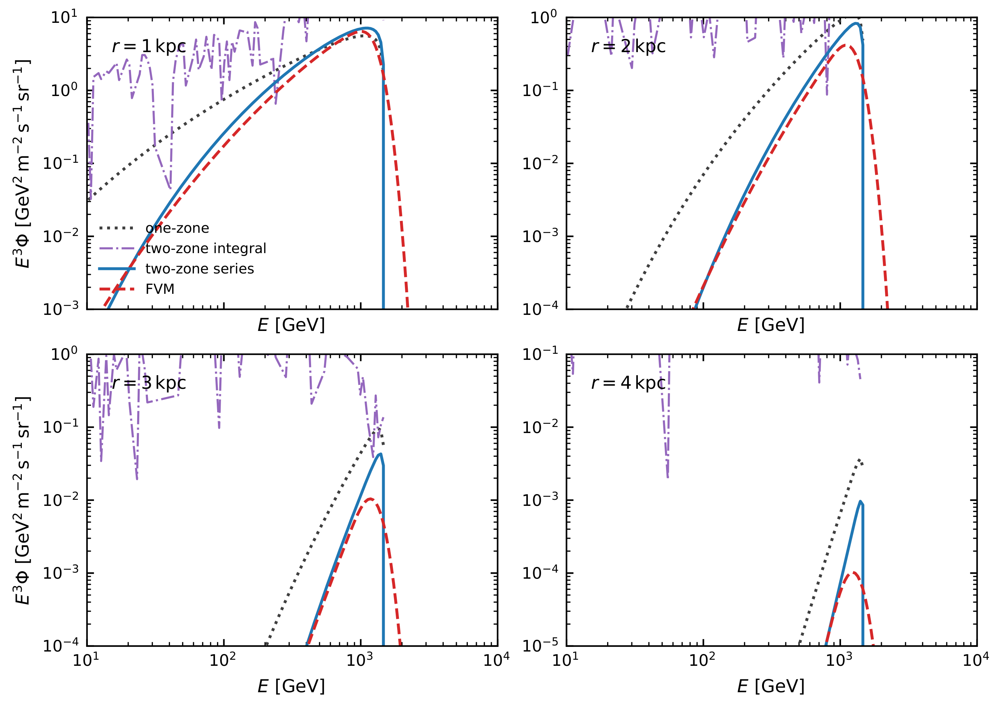<br />
图注：Comparison of the finite-volume solution, the two-zone series solution, the Osipov-type two-zone integral solution, and the one-zone solution for a Geminga-like burst source. The calculation uses $R_2=20\,{\rm kpc}$ for the series and FVM calculations to remove outer-boundary effects. The panels show the spectra at $r=1$, $2$, $3$, and $4\,{\rm kpc}$. The vertical range in each panel is separately zoomed to four decades around the cutoff region where the finite-volume and series results differ most clearly. The Osipov-type integral curve is evaluated by direct quadrature and illustrates the numerical ringing that appears for distant-source parameters.<br />
对应解读：对应“建议重点查看的图表”第1、2项，以及“关键图表逐图导读”图1、图2：两区传播核与有限体积解对比、直接积分与级数解数值稳定性、高能冷却边界。<br />
入选理由：这是最能支撑本文方法学核心的图：同时比较有限体积解、两区级数解、Osipov型直接积分解和单区解，并在不同距离处放大高能截止区域。它直接检验级数核是否保持清晰冷却边界、是否避免直接积分的数值振荡，是理解论文为何需要新的半解析两区核的关键证据。<br />
来源与置信度：\(arxiv_source\)；high；\(arxiv_source\) / TZE.tex:figure[4]</p>
<p><strong>Fig01</strong><br />
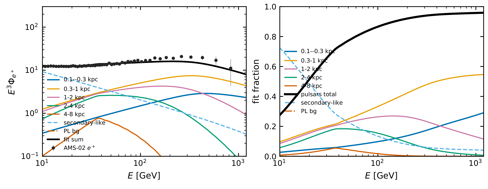<br />
图注：Fit to the AMS-02 positron flux used in the population comparison. The black curve is the profiled total model. The blue curve is the continuous spin-down pulsar-pair component after removing newly born sources inside $R<0.1\,{\rm kpc}$; the orange curve is the secondary-like basis. The dotted curves split the same continuous-disk pulsar kernel into the local $0.1$--$0.3\,{\rm kpc}$ annulus and the $R>0.3\,{\rm kpc}$ component. The $R>0.3\,{\rm kpc}$ component dominates the fitted pulsar contribution over the plotted energy range.<br />
对应解读：对应“建议重点查看的图表”第3、4、7项，以及“关键图表逐图导读”图3、图4和模型拟合段落：AMS-02正电子谱拟合、脉冲星/背景分解、Local Bubble内侧空腔和不同距离成分。<br />
入选理由：该图同时包含AMS-02正电子通量拟合、总模型、连续脉冲星对成分、secondary-like背景，以及0.1--0.3 kpc与R&gt;0.3 kpc的距离分解。它直接支撑日报中关于加入100 pc空腔后拟合脉冲星成分由&gt;0.3 kpc源主导、不能只看近邻源的核心结论。<br />
来源与置信度：\(arxiv_source\)；high；\(arxiv_source\) / TZE.tex:figure[1]</p>
<p><strong>Fig02</strong><br />
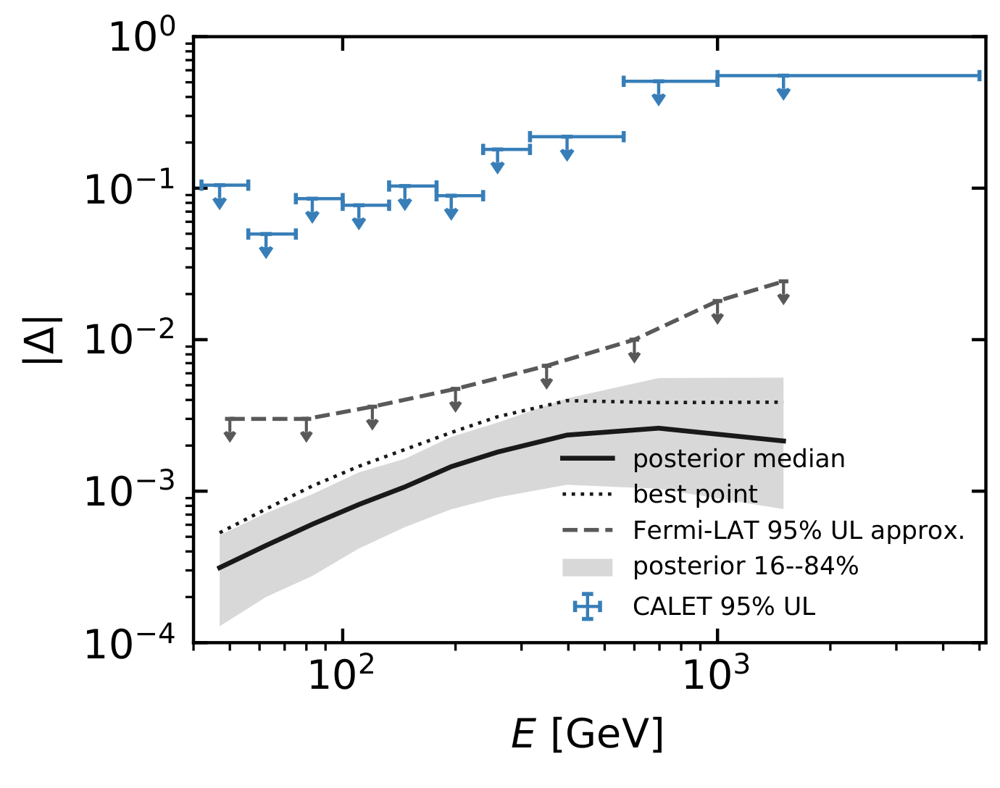<br />
图注：All-electron dipole anisotropy constraints. Downward arrows mark 95\% upper limits: the blue points show the CALET fixed-bin limits, with horizontal bars indicating the energy bins, and the gray dashed curve with arrows shows the smooth Fermi-LAT upper-limit approximation used as a one-sided consistency penalty. The solid black curve and gray band show the posterior median and 16--84 percentile prediction for the model dipole amplitude, while the dotted curve marks the best sampled point.<br />
对应解读：对应“建议重点查看的图表”第5项，以及“关键图表逐图导读”图5和模型拟合段落：全电子偶极各向异性预测与CALET、Fermi-LAT上限比较。<br />
入选理由：该图给出模型全电子偶极幅度的后验中位数、16--84百分位带、最佳采样点，并叠加CALET和Fermi-LAT上限。它是判断Geminga量级慢扩散晕在当前各向异性约束下是否仍可行的主要图表，也能体现通量拟合之外的空间结构约束。<br />
来源与置信度：\(arxiv_source\)；high；\(arxiv_source\) / TZE.tex:figure[2]</p>
<p><strong>Fig03</strong><br />
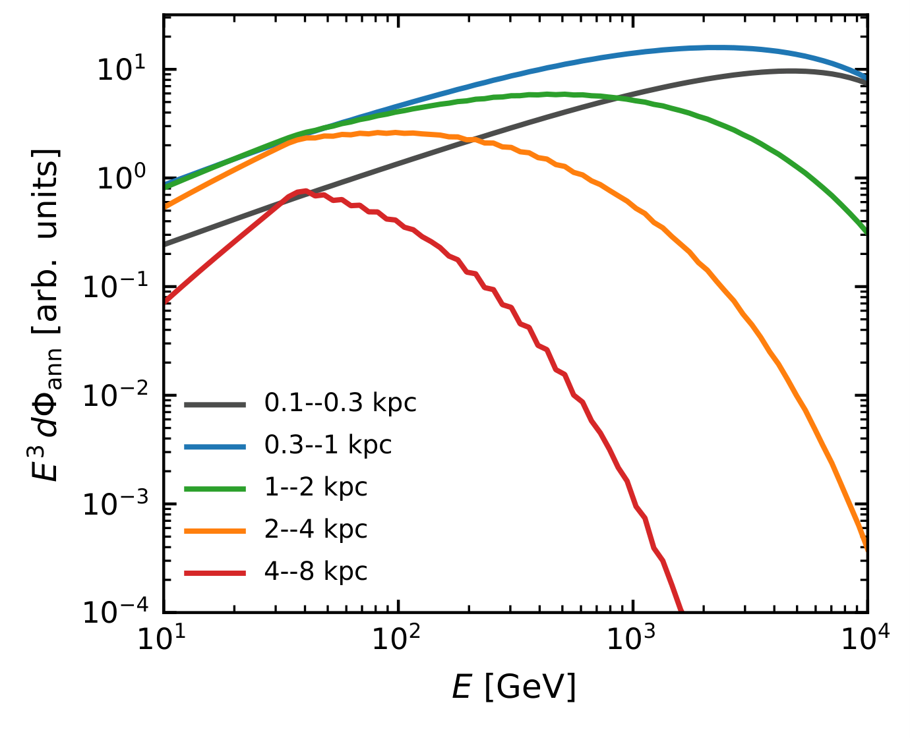<br />
图注：Age-integrated electron/positron contribution from a continuous finite-thickness disk distribution of impulsive sources. The source age, or diffusion time after the impulsive release, is integrated continuously from $0.03$ to $10\,{\rm Myr}$ with a uniform birth-rate weight. The empty $R<0.1\,{\rm kpc}$ Local-Bubble cavity is removed; the first populated local annulus is $0.1$--$0.3\,{\rm kpc}$. All annuli have the same source density and $h=0.2\,{\rm kpc}$.<br />
对应解读：对应“建议重点查看的图表”第3、7项，以及“关键图表逐图导读”图3、图6：连续有限厚度盘源群中不同距离环带对电子/正电子贡献的分解，含R&lt;0.1 kpc空腔。<br />
入选理由：该图展示年龄积分后的连续盘源贡献，并明确移除R&lt;0.1 kpc Local-Bubble空腔、从0.1--0.3 kpc环带开始分解。它有助于读者理解为何10--100 GeV能段远距离源群仍重要，以及盘半厚度h=0.2 kpc假设下源体积如何影响通量贡献。<br />
来源与置信度：\(arxiv_source\)；high；\(arxiv_source\) / TZE.tex:figure[3]</p>
<h4 id="_90">强相关工作</h4>
<p>这篇工作直接处在 AMS-02 正电子超额、HAWC Geminga/Monogem \(\mathrm{TeV}\) 晕和脉冲星 \(e^\pm\) 传播三条文献线的交汇处。同类工作通常检索关键词包括 “Geminga TeV halo positron excess diffusion”, “two-zone diffusion pulsar positron anisotropy”, “AMS-02 positron pulsar slow diffusion”, “Local Bubble cosmic ray electrons”。特别应把本文与 HAWC 发现 Geminga、Monogem 周围扩展 \(\gamma\) 射线并推断慢扩散的论文对照读，因为那是两区模型的观测动机。</p>
<p>与相反观点或张力相关的文献主要有两类。一类认为若 Geminga 周围的慢扩散普遍存在且尺度足够大，脉冲星对地球正电子贡献会被压低，从而需要暗物质或其他源；另一类认为慢扩散只限近源区域，粒子逃逸到普通星际介质后仍可解释 AMS-02。本文明显支持后一种更细致的两区图像，但也承认通量和各向异性不能单独确定慢扩散晕大小。检索时可加上 “Hooper Linden Geminga positron excess”, “Profumo TeV halos positrons”, “Linden cosmic ray anisotropy positrons” 等关键词。</p>
<p><strong>同一事件 / 同类源线索</strong>：</p>
<ul>
<li><a href="https://arxiv.org/abs/2606.26597">https://arxiv.org/abs/2606.26597</a></li>
<li><a href="https://arxiv.org/pdf/2606.26597">https://arxiv.org/pdf/2606.26597</a></li>
<li><a href="https://arxiv.org/abs/1711.06223">https://arxiv.org/abs/1711.06223</a></li>
</ul>
<p><strong>相似工作</strong>：</p>
<ul>
<li><a href="https://arxiv.org/abs/1711.06223">https://arxiv.org/abs/1711.06223</a></li>
</ul>
<p><strong>基础理论 / 方法工作</strong>：</p>
<ul>
<li><a href="https://arxiv.org/abs/0810.1527">https://arxiv.org/abs/0810.1527</a></li>
<li><a href="https://arxiv.org/abs/0812.4457">https://arxiv.org/abs/0812.4457</a></li>
</ul>
<p><strong>相反观点 / 张力线索</strong>：</p>
<ul>
<li><a href="https://arxiv.org/abs/1711.07482">https://arxiv.org/abs/1711.07482</a></li>
</ul>
</details>
<h3 id="9-hunting-for-extreme-high-energy-peaked-bl-lacs-rare-to-find-and-difficult-to-classify">9. Hunting for extreme high-energy-peaked BL Lacs: Rare to find and difficult to classify</h3>
<ul>
<li>来源：arXiv / astro-ph.HE</li>
<li>链接：https://arxiv.org/abs/2606.26475v1</li>
<li>作者：Loredana Bassani, Raffaella Landi, Nicola Masetti</li>
<li>评分：novelty 7/10，importance 7/10，relevance 9/10，final 8.70/10</li>
<li>推荐理由：搜索MeV峰极端HBL/BL Lac候选并重新分类Swift/BAT硬X射线源，直接关联高能峰值blazar和潜在γ射线源族群，负结果也有筛选价值。</li>
</ul>
<p><strong>中文题目</strong>：寻找极端高能峰 BL Lac：稀有，而且很难分类</p>
<p><strong>做了什么</strong>：这篇论文重新检查了一组曾被认为可能是“超极端高能峰 BL Lac”候选体的硬 X 射线源。所谓 “UEHBL” 是指同步辐射峰可能推到 \(\rm MeV\) 能段的耀变体，若存在，将把喷流粒子加速和辐射模型推到很极端的参数空间。作者用 \(\rm Swift/XRT\) 后随观测、硬 X 射线目录信息、多波段对应体和光学分类来审视 10 个候选源，发现其中 6 个其实是有发射线的活动星系核，另有 1 个硬 X 射线源很可能由两个有发射线 AGN 共同贡献，因此这 7 个不能算 BL Lac。剩下 3 个里，只有 2 个的 SED 仍可与 \(\rm MeV\) 峰 BL Lac 相容，而且其中 1 个还可能有银河系内对应体；第 3 个更像普通类星体。核心结论是：真正的 UEHBL 即使存在也非常稀有，BAT 硬 X 射线颜色筛选会被吸收型或混合型 AGN 严重污染，分类必须依赖 XRT 定位、光谱吸收、光学谱线和全波段 SED 的联合判断。</p>
<p><strong>为什么重要</strong>：如果同步辐射峰真的能系统性地出现在 \(\rm MeV\) 波段，那意味着 BL Lac 喷流中电子最高能量、磁场、Doppler boosting 和冷却条件处于极端组合，并会影响我们对硬 X 射线和未来 MeV 巡天源族的预期。这篇文章的重要性不在于宣布发现一个新族群，而在于做了一个必要的反证式清理：许多看似“极端”的硬 X 射线颜色可以由吸收、源混叠、普通 AGN 谱形或错误对应体造成。</p>
<p><strong>理论 / 观测 / 仪器方法价值</strong>：对观测和方法的价值主要有三点。第一，它给出了一套用 \(\rm Swift/BAT\) 到 \(\rm Swift/XRT\) 再到光学/红外/射电的层级式分类流程，说明仅靠硬 X 射线谱斜率或宽能段 SED 形状不够。第二，它提醒未来 MeV 任务和硬 X 射线目录工作，UEHBL 候选样本的先验污染率可能很高，必须把 X 射线吸收、AGN 发射线和多源混叠纳入选择函数。第三，它为“未分类硬 X 射线源是否可能是极端 BL Lac”这个问题给出了现实基准：可以作为备选解释，但不能作为默认解释。</p>
<p><strong>为什么应该关注</strong>：如果你关心耀变体序列、TeV 候选源、硬 X 射线巡天源分类或未来 MeV 天文学，这篇文章值得看，因为它直接触及“新源族发现”中最容易出错的一步：候选体筛选后的排污。它也提醒我们，SED 看起来很硬、X 射线很亮，并不自动等价于无谱线喷流主导源；没有精确 X 射线定位、光学谱线约束和吸收诊断，所谓极端 BL Lac 很可能只是被普通 AGN 或银河源伪装出来的。</p>
<details class="paper-detail">
<summary>展开详细解读：文章讲解、背景、理论、重点章节、图表与相关工作</summary>
<h4 id="_91">文章详细讲解</h4>
<p>科学问题：本文要回答的是，\(\rm Swift/BAT\) 硬 X 射线目录中一批谱性质异常的源，是否真的代表一个新型 BL Lac 族群，即同步辐射峰位于 \(\rm MeV\) 附近的 ultra extreme high-energy-peaked BL Lacs。普通 HBL 的同步峰通常在紫外到软 X 射线，EHBL 可推到硬 X 射线；若进一步推到 \(\rm MeV\)，就会要求电子能量分布、磁场、Doppler 因子和辐射冷却处在非常特殊的状态。问题的难点是，硬 X 射线颜色“很硬”并不是喷流同步峰的唯一解释，吸收型 Seyfert、多源混叠、普通 QSO、甚至银河系源都可能造成类似表观 SED。</p>
<p>作者怎么做：作者选择了 10 个此前被建议为 UEHBL 候选的硬 X 射线源，并分析它们的 \(\rm Swift/XRT\) 后随观测。XRT 的作用不是简单补一个软 X 射线流量点，而是通过角分辨率缩小 BAT 误差框、判断是否存在多个 X 射线对应体、拟合软 X 射线谱形并检查本征吸收。随后，作者把 XRT 结果与 \(\rm Swift/BAT\) 硬 X 射线通量、光学光谱分类、红外/射电对应体和全波段 SED 拼接起来，逐个源判断“无发射线、非热喷流主导”的 BL Lac 假设是否成立。</p>
<p>关键结果：10 个候选体中，6 个被分类为有发射线 AGN，其中 4 个为 ({\<br />
m type\ 2}) 且 X 射线吸收明显，2 个为 ({\<br />
m type\ 1}) 且 X 射线未吸收。另有 1 个源的硬 X 射线辐射很可能不是单一 UEHBL，而是两个有发射线 AGN 的合成贡献：一个 ({\<br />
m Seyfert\ 1.9}) 和一个 ({\<br />
m type\ 2}) AGN。这 7 个对象的谱线和/或吸收性质已经排除了典型 BL Lac 分类。剩余 3 个中，只有 2 个的 SED 与 \(\rm MeV\) 同步峰 BL Lac 预期相容，但其中一个还存在银河系内关联的可能；第 3 个更可能是经典 QSO。</p>
<p>局限和下一步：本文的结论建立在一个小样本上，因此不能直接给出 UEHBL 的宇宙空间密度或 luminosity function；它更像是对一个具体候选列表的再分类和选择函数警告。另一方面，小样本本身就是结论的一部分：如果经过硬 X 射线预筛后仍有这么高的污染率，那么未来要确认 UEHBL 不能只依赖 BAT 颜色或稀疏 SED。下一步需要更深的光学光谱、更高角分辨率 X 射线成像、同时或准同时多波段观测，以及 \(\rm MeV\) 灵敏度更高的巡天来直接定位同步峰。</p>
<h4 id="_92">关键结果是怎么做出来的</h4>
<p>本文最重要的证据链从样本定义开始。样本不是盲目从全天目录里新找源，而是取 10 个已被文献或目录筛选为 UEHBL 候选的 \(\rm Swift/BAT\) 硬 X 射线源。这一点很关键：作者检验的是“这些候选是否真能支撑新族群”而非“全天 UEHBL 完整普查”。因为 BAT 的定位误差和能段特性会把多个较弱源或吸收型 AGN 的硬谱混进同一个候选，后续 \(\rm Swift/XRT\) 的高精度定位和软 X 射线谱拟合成为分类的核心。</p>
<p>事件数或样本量方面，论文的数字很直接：总共 10 个候选。6 个被识别为有发射线 AGN，其中 4 个是 ({\<br />
m type\ 2}) 且 X 射线吸收，2 个是 ({\<br />
m type\ 1}) 且未吸收。另有 1 个候选硬 X 射线源很可能由两个有发射线 AGN 一起贡献，一个为 ({\<br />
m Seyfert\ 1.9})，另一个为 ({\<br />
m type\ 2})。因此，至少 7/10 的原始候选不符合 BL Lac 的基本观测定义。剩余 3 个中，2 个保留 UEHBL 可能性，但其中 1 个有银河系内关联的替代解释；另 1 个更接近普通 QSO。</p>
<p>统计显著性不是本文的主线。作者没有把问题表述为“以多少 \(\sigma\) 发现 UEHBL 族群”，而是做基于逐源证据的分类排除。分类判断依赖几个诊断：光学谱线是否存在且强到排除 BL Lac；X 射线谱是否需要本征吸收柱密度 (N_{\<br />
m H,int})；XRT 位置是否与 BAT 源唯一对应；多波段 SED 是否呈现可解释为高峰同步辐射的连续非热形状。这类工作更接近贝叶斯式模型比较的实践：BL Lac 模型、吸收 AGN 模型、QSO 模型和银河源模型分别解释观测证据，哪一个更少牵强。</p>
<p>支撑结论的图表通常应包括 XRT 图像或误差框对应体图、每个源的 X 射线谱拟合结果表、光学分类/红移表、以及宽波段 SED。读者应特别注意那些被排除源的 X 射线低能端残差和吸收拟合，因为吸收型 AGN 在软 X 射线的压低会让硬 X 射线颜色显得“极端”。还要检查 BAT 通量是否可能来自多个 XRT 源的叠加；如果一个 BAT 误差框里有两个有发射线 AGN，那么把合成硬 X 射线 SED 当成单一喷流源会严重误导。</p>
<p>系统误差主要来自非同时多波段数据、BAT 大误差框导致的对应体歧义、XRT 曝光深度有限、以及光学谱线观测的信噪比和宿主星系稀释。稳健性上，最有力的排除证据是“有明显发射线”和“X 射线吸收”这两类不依赖精细 SED 拟合的事实；最不稳健的是剩余候选的峰值位置判断，因为稀疏、非同时的 SED 对 (\<br />
u_{\<br />
m peak}) 很敏感。</p>
<details class="paper-subdetail">
<summary>展开背景、理论、公式、模型、章节和图表导读</summary>
<h4 id="_93">背景知识</h4>
<p>BL Lac 是耀变体的一类，通常表现为强相对论喷流、快速变光、高偏振、连续谱主导以及弱或不可见的光学发射线。它们的 SED 常画成 (\<br />
u F_\<br />
u) 双峰结构：低能峰来自同步辐射，高能峰通常由逆康普顿过程产生。按照同步峰频率，BL Lac 可分为低、中、高能峰对象；HBL 和 EHBL 是 TeV 天文学中特别重要的目标，因为它们的同步峰较高、逆康普顿峰也可能进入 \(\rm TeV\) 能段。</p>
<p>历史上，所谓 EHBL 的识别一直与选择效应纠缠在一起。X 射线巡天更容易选出同步峰高的 BL Lac，射电巡天则偏向低峰或中峰对象；硬 X 射线巡天又会对吸收型 AGN 和硬谱喷流源都敏感。若一个源在 \(\rm keV\) 到 \(\rm tens\\ of\\ keV\) 能段很硬，可能是同步谱上升段，也可能是吸收后留下的硬 X 射线核辐射，还可能是多个源叠加的假象。<br />
UEHBL 的想法把 EHBL 推到更极端：同步峰不是位于软/硬 X 射线，而是靠近 \(\rm MeV\)。这在物理上很吸引人，因为它会约束电子最大 Lorentz 因子 \(\gamma_{\max}\)、磁场 \(B\)、Doppler 因子 \(\delta\) 和加速/冷却时间尺度；也在观测上很有吸引力，因为 \(\rm MeV\) 波段长期是灵敏度较差的“空白地带”，许多源族的峰值可能被漏掉。</p>
<p>现在重新看这个问题，是因为硬 X 射线目录、XRT 后随数据、多波段档案和光学分类已经足以检验早期候选体。随着未来 \(\rm MeV\) 任务概念和高能巡天推进，先弄清候选样本污染率非常必要。若不先清理普通 AGN 和混叠源，任何关于 UEHBL 数量、能量输出或对高能背景贡献的推断都会偏高。</p>
<p>该领域一个常见误区是把“无明显对应体”或“硬 X 射线颜色异常”直接等同于极端 BL Lac。实际上，BL Lac 分类首先要求连续谱喷流主导且发射线弱；如果光学谱显示强窄线或宽线，或 X 射线谱需要显著吸收，那么对象更自然地属于 Seyfert 或 QSO。另一个误区是把非同时 SED 的峰值当成精确测量；对变源而言，不同时期的射电、红外、X 射线和伽马射线点拼接后可能制造不存在的峰。</p>
<h4 id="_94">基础理论 / 方法脉络</h4>
<p>从物理图像看，BL Lac 的低能 SED 峰来自相对论喷流中非热电子在磁场中的同步辐射。观测到的峰值频率取决于电子 Lorentz 因子、磁场强度、喷流 Doppler boosting 和红移。若同步峰进入 \(\rm MeV\)，在常规磁场和 \(\delta\) 下通常需要非常高的 \(\gamma\)，或需要特殊的低冷却、高加速效率环境。这样的源若存在，会是粒子加速理论的强约束对象。</p>
<p>但硬 X 射线谱并不只由同步辐射决定。吸收型 AGN 的内禀 X 射线谱常可近似为幂律，软 X 射线被气体吸收后，观测谱在 \(\rm BAT\) 能段显得相对更硬。若只看 \(\rm 14\)-\(\rm 195\\ keV\) 的硬 X 射线通量和粗略谱斜率，吸收型 Seyfert 可能伪装成“高峰同步源”。因此本文把 XRT 的 \(\rm 0.3\)-\(\rm 10\\ keV\) 软 X 射线谱作为关键诊断：低能端是否被吸收、是否需要额外柱密度、是否与 BAT 外推连续。</p>
<p>观测方法上，BAT 提供硬 X 射线发现能力，但角分辨率有限；XRT 提供弧秒级位置和软 X 射线谱；光学谱给出 AGN 类型、红移和发射线强度；红外与射电数据帮助判断是否有喷流和宿主/尘埃成分。UEHBL 候选的理想特征应是：X 射线位置唯一，光学谱线弱或无，射电到 X 射线连续谱可由非热喷流解释，且 (\<br />
u F_\<br />
u) 在硬 X 射线到 \(\rm MeV\) 附近仍上升或峰化。</p>
<p>本文使用的模型假设比较务实：对于被排除的源，强发射线和吸收就是主要分类证据，不需要复杂喷流模型即可否定 BL Lac 解释；对于剩余源，则看宽波段 SED 是否能容纳 \(\rm MeV\) 同步峰。这里的退化关系包括 (\<br />
u_{\<br />
m peak}) 与非同时变光的退化、(N_{\<br />
m H}) 与软 X 射线谱斜率的退化、BAT 大误差框内多源贡献与单源 SED 形状的退化，以及光学谱线被宿主连续谱稀释后导致 BL Lac/QSO 分类模糊。</p>
<p>系统误差尤其需要注意。若 XRT 曝光不足，弱吸收或弱对应体可能漏检；若 BAT 通量来自多年平均而 XRT 是单次观测，变光会造成谱连接不连续；若光学光谱质量低，弱发射线等效宽度可能被低估。本文的价值恰在于把这些问题放在逐源分类中处理，而不是把所有候选都强行套进同一个 UEHBL 模板。</p>
<h4 id="_95">公式与推导</h4>
<p>第一步从同步辐射的特征频率出发。对喷流共动系中 Lorentz 因子为 \(\gamma\) 的电子，观测到的同步特征频率可写作</p>
<div class="math-display">\[\
u_{\
m syn}\simeq {\delta\over 1+z}{3eB\over 4\pi m_e c}\gamma^2 ,\]</div>
<p>其中 \(B\) 是共动磁场，\(\delta\) 是 Doppler 因子，\(z\) 是红移，\(e\)、\(m_e\)、\(c\) 分别为电子电荷、电子质量和光速。若 (\<br />
u_{\<br />
m syn}) 要达到 \(\rm MeV\) 对应的 (\<br />
u\sim 2.4\  imes10^{20}\,Hz)，就会要求 \(\gamma\)、\(B\) 或 \(\delta\) 的组合非常极端。</p>
<p>第二步估计达到给定峰频所需的电子能量。由上式反解得</p>
<div class="math-display">\[\gamma_{\
m peak}\simeq \left[{4\pi m_e c(1+z)\
u_{\
m peak}\over 3eB\delta}\
ight]^{1/2} .\]</div>
<p>这里 \(\gamma_{\}}\)<br />
m peak}) 是主导同步峰的电子 Lorentz 因子。这个式子说明，UEHBL 的核心物理问题不是简单“峰更高”，而是粒子加速能否维持足够大的 (\gamma_{\<br />
m peak})，同时不被同步和逆康普顿冷却迅速压低。</p>
<p>第三步看冷却限制。同步冷却时间在共动系中近似为</p>
<div class="math-display">\[\nt_{\
m syn}'={6\pi m_e c\over \sigma_T B^2\gamma} ,\]</div>
<p>其中 \(\sigma_T\) 是 Thomson 截面。观测者看到的时间尺度为 \(t_{\rm syn}\simeq (1+z)t'_{\rm syn}/\delta\)。若 \(\gamma\) 很高，冷却会很快，因此 \(\rm MeV\) 同步峰要求加速时间足够短或辐射区磁场较低。</p>
<p>第四步用常见 X 射线谱模型说明污染源如何伪装。未吸收 AGN 或喷流的光子谱常写为</p>
<div class="math-display">\[\(\nN(E)=K\) \(E^{-\Gamma}\) ,\]</div>
<p>其中 \(N(E)\) 是单位能量光子数通量密度，\(K\) 是归一化，\(\Gamma\) 是光子指数。BL Lac 的 X 射线同步段可能很硬或弯曲，但普通 AGN 的幂律加吸收也可在硬 X 射线表现为硬谱。</p>
<p>第五步加入光电吸收后，观测谱变为</p>
<div class="math-display">\[\nN_{\
m obs}(E)=K E^{-\Gamma}\exp[-N_{\
m H}\sigma(E)] ,\]</div>
<p>其中 \(N_{\}}\)<br />
m H}) 是氢柱密度，\(\sigma(E)\) 是能量相关的光电吸收截面。由于 \(\sigma(E)\) 在低能端更大，吸收会压低软 X 射线，使源在 BAT 硬 X 射线能段显得相对明亮；这正是本文许多候选被重新分类为吸收型 AGN 的物理基础。</p>
<p>第六步把光子谱转成能量通量，便于连接 SED。能段 \(E_1\) 到 \(E_2\) 的能量通量为</p>
<div class="math-display">\[\(\nF_{E_1-E_2}=\int_{E_1}^{E_2}\) E\,N_{\
m obs}(E)\\,dE .\]</div>
<p>在无吸收且 \(\Gamma\)<br />
e2) 的近似下，</p>
<div class="math-display">\[\nF_{E_1-E_2}=K{E_2^{2-\Gamma}-E_1^{2-\Gamma}\over 2-\Gamma} .\]</div>
<p>比较 XRT 与 BAT 能段的 \(F_{E_1-E_2}\) 可以检查谱是否连续，或是否需要变光、吸收、源混叠等额外解释。</p>
<p>第七步，用 SED 峰的判据表达 UEHBL 候选的需求。若用抛物线近似 (\<br />
u F_\<br />
u) 低能峰，常可写为</p>
<div class="math-display">\[\log(\
u F_\
u)=a-b[\log(\
u)-\log(\
u_{\
m peak})]^2 .\]</div>
<p>其中 \(a\) 控制峰值亮度，\(b\) 控制曲率，(\<br />
u_{\<br />
m peak}) 是峰频。若数据只覆盖峰的一侧，\(b\) 与 (\<br />
u_{\<br />
m peak}) 会强烈退化，因此非同时、稀疏 SED 对 UEHBL 判断尤其危险。</p>
<p>第八步，对 X 射线谱拟合通常可用 Poisson 似然或 Cash 统计量描述。若第 \(i\) 个能道观测计数为 \(n_i\)，模型预期计数为 \(\mu_i(\	heta)\)，则</p>
<div class="math-display">\[\nC(\	heta)=2\sum_i\left[\mu_i(\	heta)-\(n_i\ln\) \mu_i(\	heta)\
ight]+{\
m const} .\]</div>
<p>参数 \(\	heta\) 可包括 \(K\)、\(\Gamma\)、\(N_{\}}\)<br />
m H}) 和背景归一化。比较有无本征吸收模型的 \(\Delta C\) 或残差结构，可以判断硬谱是否来自吸收而非极端同步峰。</p>
<p>第九步，若 BAT 误差框内存在多个 XRT/AGN 对应体，硬 X 射线通量应写成叠加：</p>
<div class="math-display">\[\nF_{\
m BAT}^{\
m obs}\simeq \sum_j R_j F_{j,\
m BAT} ,\]</div>
<p>其中 \(j\) 标记候选对应体，\(R_j\) 表示 BAT 响应、离轴角和曝光加权因子。这个式子说明，把 \(F_{\}}\)<br />
m BAT}^{\<br />
m obs}) 全部分配给一个 BL Lac 候选会高估其硬 X 射线 SED，从而人为制造 \(\rm MeV\) 峰候选。</p>
<h4 id="_96">模型拟合 / 应用方法</h4>
<p>本文的拟合核心是 X 射线谱和多波段 SED 的联合解释。XRT 谱通常可先用 Galactic absorption 加幂律模型拟合，然后检查是否需要额外本征吸收 (N_{\<br />
m H,int})，以及所得光子指数 \(\Gamma\) 是否符合 BL Lac 同步段、普通 QSO 或 Seyfert 的典型范围。若低能端残差系统性为负，加入吸收后显著改善拟合，且光学谱显示窄线或宽线 AGN，那么 UEHBL 解释就不再经济。</p>
<p>参数估计方面，低计数 XRT 数据更适合 Cash 统计或 Poisson 似然，高计数时可使用 \(\chi^2\) 近似。关键拟合量包括位置对应、计数率到通量转换、\(\Gamma\)、(N_{\<br />
m H})、能段通量以及与 BAT 通量的连接。若 BAT 和 XRT 不同时，归一化差异不能立即解释为物理谱断裂；必须考虑变光和多年平均通量的差别。<br />
SED 拟合或目视比较中，真正危险的退化是 (\<br />
u_{\<br />
m peak})、曲率、变光和吸收之间的耦合。一个吸收 AGN 的软 X 射线被压低后，若再与红外/射电点粗略连接，可能看起来像同步峰向高能移动；一个 QSO 若有强热尘埃或吸积盘成分，也可能破坏简单双峰模板。本文因此把光学谱线分类作为硬约束，而不是只靠 SED 形状。</p>
<p>模型比较不一定以正式 Bayes factor 呈现，但逻辑上是在比较若干假设：(H_{\<br />
m BL\ Lac}) 要求弱谱线、喷流连续谱和高 (\<br />
u_{\<br />
m peak})；(H_{\<br />
m Seyfert}) 允许发射线、吸收和较普通的硬 X 射线核辐射；(H_{\<br />
m QSO}) 允许宽线和热/非热混合；(H_{\<br />
m Gal}) 则对应银河源替代解释。若一个源有强发射线和吸收，(H_{\<br />
m Seyfert}) 的解释成本明显低于 (H_{\<br />
m BL\ Lac})。</p>
<p>实际应用上，这篇文章给未来候选筛选一个很具体的流程：先用硬 X 射线目录找异常源，再用 XRT/Chandra/XMM 确定唯一对应体，再做光学光谱分类，最后才讨论 SED 峰值和喷流物理。若跳过中间步骤，(\<br />
u_{\<br />
m peak}) 的推断会被污染源带偏。对未来 MeV 巡天，类似流程也能帮助区分真正的高峰 BL Lac 与普通吸收 AGN 在 MeV 灵敏度边缘产生的假候选。</p>
<h4 id="_97">重点章节 / 结果段落怎么读</h4>
<p>数据/样本部分应首先看作者如何定义 10 个 UEHBL 候选。这一节决定了论文结论的适用范围：它不是完整的 UEHBL 数密度测量，而是对已有硬 X 射线候选清单的后随分类。读者应注意候选来自 BAT 目录的哪些硬 X 射线性质，以及原先为什么被认为可能是 \(\rm MeV\) 峰 BL Lac。<br />
XRT 观测与数据分析部分是全文技术核心。重点看每个 BAT 源误差框中是否只有一个 XRT 对应体，XRT 位置与光学/红外/射电源的匹配是否稳健，谱拟合采用了什么吸收模型，以及 (N_{\<br />
m H}) 和 \(\Gamma\) 的不确定度。这里直接决定“硬 X 射线极端”是否只是吸收造成。</p>
<p>光学和多波段分类部分应与 XRT 结果一起读。若光学谱有清楚发射线，尤其是 Seyfert 型窄线或 QSO 宽线，那么 BL Lac 分类基本被排除。对剩余候选，则要看 SED 是否真的需要 \(\rm MeV\) 同步峰，而不是普通 QSO 或银河源替代解释。</p>
<p>主结果部分的关键信息是 10 个候选被重新分配到不同类别：6 个有发射线 AGN、1 个可能是两个有发射线 AGN 的合成、3 个仍需讨论但只有 2 个与 UEHBL 相容。读者应把这组数字与原候选筛选效率联系起来看，而不是只关注剩下那两个可能对象。</p>
<p>讨论和结论部分应关注作者对未来搜寻策略的含义：UEHBL 可能存在，但极少且难分类；硬 X 射线未分类源可以把 UEHBL 作为备选，但必须先排除吸收 AGN、QSO、银河源和多源混叠。若论文有附录或逐源注释，建议逐个源读，因为分类证据往往藏在个别对象的定位、谱线或 SED 细节中。</p>
<h4 id="_98">建议重点查看的图表</h4>
<ol>
<li>
<p>BAT 误差框与 XRT 对应体图：看 BAT 位置不确定区域内有几个 XRT 源，哪个与光学/红外/射电对应体重合，是否存在多源混叠。</p>
</li>
<li>
<p>XRT 光谱和残差图：看低能端是否有吸收造成的系统残差，加入本征 (N_{\<br />
m H}) 后残差是否改善，\(\Gamma\) 是否合理。</p>
</li>
<li>
<p>XRT/BAT 宽能段谱连接图或通量表：看 XRT 外推到 BAT 是否连续，若不连续，是变光、吸收还是多个源贡献更可能。</p>
</li>
<li>
<p>光学谱图或分类表：看是否存在宽线、窄线、线比和红移；只要发射线明显，BL Lac 分类就应谨慎甚至排除。</p>
</li>
<li>
<p>全波段 SED 图：看 (\<br />
u F_\<br />
u) 是否真的在硬 X 射线到 \(\rm MeV\) 附近上升/峰化，还是由非同时数据拼接造成假峰。</p>
</li>
<li>
<p>源分类汇总表：看 10 个候选如何被分到 type 1 AGN、type 2 AGN、Seyfert 1.9、QSO、可能 UEHBL 或银河替代类，注意每个分类所依赖的最强证据。</p>
</li>
<li>
<p>若有 WISE 颜色或射电-X 射线比较图：看候选是否落在已知耀变体 locus 内，还是更接近普通 AGN 或银河源。</p>
</li>
</ol>
<h4 id="_99">关键图表逐图导读</h4>
<p>图 1：若论文给出 BAT/XRT 定位图，横纵轴通常是天球坐标，BAT 大误差圈叠加 XRT 小误差圈和光学/红外对应体。读图时不要只看最亮的 XRT 点，还要看 BAT 误差圈内是否有多个可能 AGN。若一个 BAT 源区域内存在两个有发射线 AGN，那么 BAT 硬 X 射线通量不能自然归给单一 UEHBL。</p>
<p>图 2：若给出各源 XRT 光谱，横轴为能量 \(E\)，纵轴为计数率、展开光子谱或 \(E^2N(E)\)，下方面板为残差。关键是低能 \(\lesssim 2\\,keV\) 处是否系统低于简单幂律模型；这通常提示吸收。读图陷阱是把吸收后的硬化误读为同步峰上升段。</p>
<p>图 3：若给出宽波段 XRT+BAT 谱或通量连接图，横轴为能量，纵轴为 (\<br />
u F_\<br />
u) 或能量通量。模型线可能包括吸收幂律、未吸收幂律或不同归一化的谱。应检查 BAT 点与 XRT 外推是否一致；若 BAT 明显高于单个 XRT 源外推，可能是长期变光或多源叠加，而不是必然说明存在 \(\rm MeV\) 峰。</p>
<p>图 4：若给出光学谱，横轴为波长，纵轴为相对通量。读者应识别 ({\<br />
m H}\(\alpha\))、({\<br />
m H}\eta)、([\<br />
m O\,III])、([\<br />
m N\,II]) 等发射线，以及线宽和线比。强窄线支持 type 2/Seyfert 分类，宽线支持 type 1/QSO 分类；这些证据比稀疏 SED 峰值更能排除 BL Lac。</p>
<p>图 5：若给出全波段 SED，横轴为频率 (\<br />
u)，纵轴为 (\<br />
u F_\<br />
u)。UEHBL 候选应在 X 射线到 \(\rm MeV\) 区域显示同步峰位置的合理趋势。读图陷阱包括非同时数据点、上限与探测点混用、热尘埃或宿主星系成分被误当作喷流、以及 BAT 平均通量与瞬时 XRT 通量不匹配。</p>
<p>图 6：若有最终分类表或 SED 参数表，应把它当成论文主结论图来读。重点不是单个参数的漂亮程度，而是每个源排除或保留 UEHBL 解释的证据链：发射线、吸收、唯一对应体、SED 形状和替代对应体是否一致。对于仍保留的 2 个可能 UEHBL，要特别看是否只有“相容”而非“确认”。</p>
</details>
<h4 id="_100">论文原图 / 可嵌入图片</h4>
<p><strong>Fig06</strong><br />
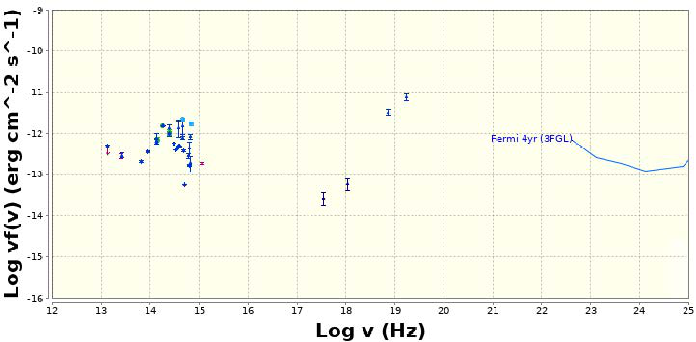<br />
图注：SED of WISE J072223.57$+$212503.9. SED measurements are from archival data from the SSDC database and current XRT analysis. See text for details.<br />
对应解读：建议重点查看的图表第5项“全波段 SED 图”；关键图表逐图导读“图5”；模型拟合段落中关于 SED 形状、MeV 同步峰相容性与银河替代解释的讨论。<br />
入选理由：这是候选中最直接支撑 UEHBL 是否仍可保留的核心 SED 图之一，展示 WISE J072223.57+212503.9 的多波段能谱分布，并结合当前 XRT 分析。日报特别强调应检查 νFν 是否在 X 射线到 MeV 附近呈现合理峰化趋势，以及非同时数据和替代对应体的风险；该图正对应这一判断链。<br />
来源与置信度：\(arxiv_source\)；high；\(arxiv_source\) / \(ultra_extreme_bl_lac.tex\):figure[6]</p>
<p><strong>Fig05</strong><br />
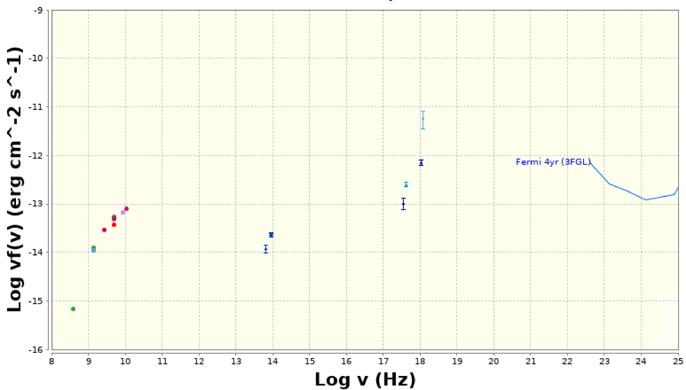<br />
图注：SED of ICRF J010549.9$+$48190. SED measurements are from archival data from the SSDC database and current XRT analysis. See text for details.<br />
对应解读：建议重点查看的图表第5项“全波段 SED 图”；关键图表逐图导读“图5”；详细解读中关于剩余少数非明确 Seyfert 污染源的 SED 判别。<br />
入选理由：该图给出 ICRF J010549.9+48190 的全波段 SED，是判断其是否符合 MeV-peaked BL Lac、普通 QSO 或其他解释的重要依据。相比单纯定位图，它更直接对应论文关于剩余候选源是否真正具有 UEHBL 型同步峰的核心结论。<br />
来源与置信度：\(arxiv_source\)；high；\(arxiv_source\) / \(ultra_extreme_bl_lac.tex\):figure[5]</p>
<p><strong>Fig09</strong><br />
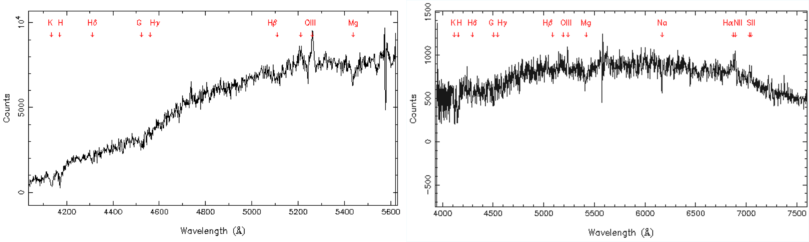<br />
图注：6df spectrum \(\citep{Jones2009}\) of J133353.3--382548/LEDA 140189 (upper panel) and J194951.1--363522/2MASX J19455127--3635239 (lower panel).<br />
对应解读：建议重点查看的图表第4项“光学谱图或分类表”；关键图表逐图导读“图4”；详细解读中关于有发射线 AGN、Seyfert 1.9/type 2 以及排除 BL Lac 的证据链。<br />
入选理由：该图同时展示两个源的 6dF 光学谱，是确认发射线 AGN 性质并排除 BL Lac 分类的强证据。日报强调只要存在明显发射线，BL Lac 解释就应谨慎甚至排除；此图比单个源的定位图更能体现论文重新分类候选体的关键证据。<br />
来源与置信度：\(arxiv_source\)；high；\(arxiv_source\) / \(ultra_extreme_bl_lac.tex\):figure[9]</p>
<p><strong>Fig04</strong><br />
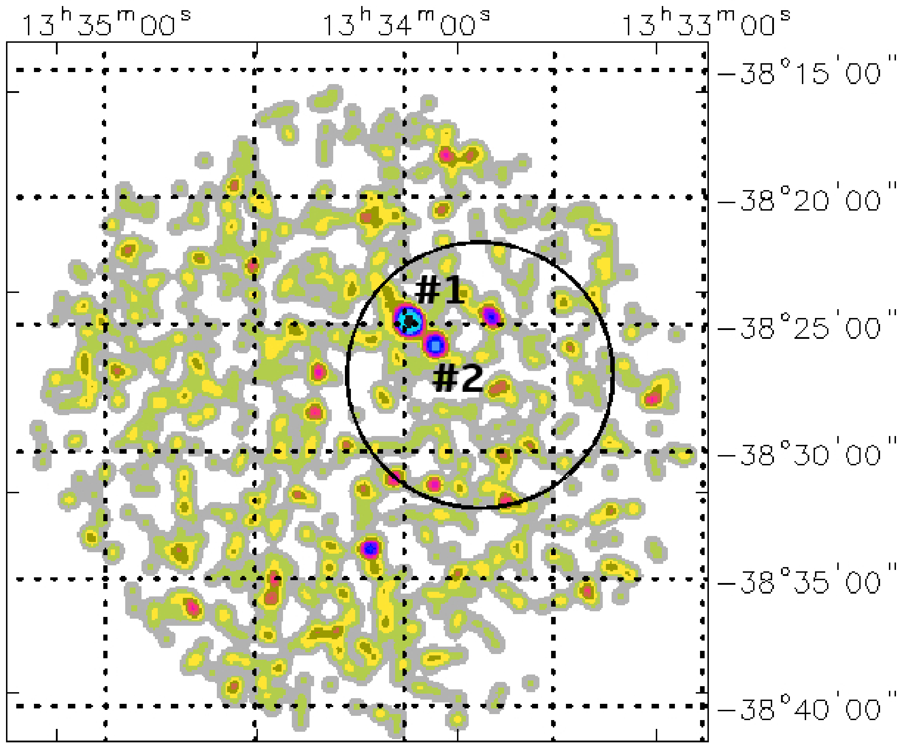<br />
图注：XRT 0.3--10 keV image of the region surrounding SWIFT J1334.1--3842. Source #1 and #2 are the only X-ray detection found in this region (see text for details).<br />
对应解读：建议重点查看的图表第1项“BAT 误差框与 XRT 对应体图”；关键图表逐图导读“图1”；详细解读中关于 BAT 源可能由多个有发射线 AGN 混叠贡献的讨论。<br />
入选理由：该 XRT 图显示 SWIFT J1334.1--3842 区域内存在两个 X 射线探测源，直接对应日报提醒的多源混叠问题。它有助于说明 BAT 硬 X 射线通量不能自动归因于单一 UEHBL，是排除候选源的重要定位证据。<br />
来源与置信度：\(arxiv_source\)；high；\(arxiv_source\) / \(ultra_extreme_bl_lac.tex\):figure[4]</p>
<p><strong>Fig08</strong><br />
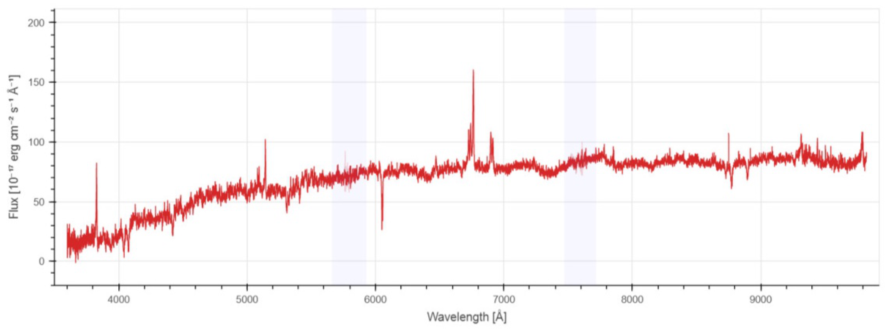<br />
图注：DESI spectrum of J102618.9$+$453445/Z 240--42 \(\citep{DESIColl2024}.\)<br />
对应解读：建议重点查看的图表第4项“光学谱图或分类表”；关键图表逐图导读“图4”；模型拟合段落中光学谱线分类作为硬约束的说明。<br />
入选理由：DESI 光谱可用于识别发射线、红移和 AGN 类型，是把候选源从 BL Lac 重新归类为有发射线 AGN 的关键观测证据之一。它补足了仅凭 X 射线硬度或 SED 形状无法可靠分类的问题。<br />
来源与置信度：\(arxiv_source\)；high；\(arxiv_source\) / \(ultra_extreme_bl_lac.tex\):figure[8]</p>
<p><strong>Fig02</strong><br />
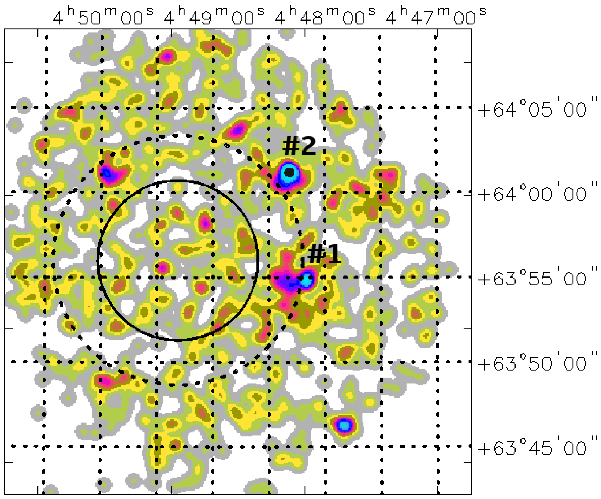<br />
图注：XRT 0.3--10 keV image of the region surrounding SWIFT J0449.3$+$6356. Source #1 and #2 are the only X-ray detection found in this region (see text for details).<br />
对应解读：建议重点查看的图表第1项“BAT 误差框与 XRT 对应体图”；关键图表逐图导读“图1”；模型拟合段落中关于先用 XRT 确定唯一对应体再讨论 SED 的流程。<br />
入选理由：该图展示 SWIFT J0449.3+6356 区域内两个 XRT 探测源，适合说明 BAT 大误差框内对应体识别和多源污染风险。虽然它不直接给出光谱残差或 SED 峰值，但对理解论文为何不能只依赖 BAT 硬 X 射线颜色判断 UEHBL 很重要。<br />
来源与置信度：\(arxiv_source\)；high；\(arxiv_source\) / \(ultra_extreme_bl_lac.tex\):figure[2]</p>
<h4 id="_101">强相关工作</h4>
<p>这篇工作与 EHBL/UEHBL 搜寻、BAT 硬 X 射线 AGN 目录和耀变体 SED 分类直接相关。相似工作包括从 \(\rm Swift/BAT\)、\(\rm Fermi\)-LAT、TeV 目录或多频 blazar catalog 中寻找高同步峰对象的研究；基础理论则包括 BL Lac 双峰 SED、同步自康普顿模型、blazar sequence 以及 EHBL 的粒子加速解释。建议检索关键词：“extreme high-energy-peaked BL Lac”、“EHBL”、“ultra extreme HBL”、“MeV peaked BL Lac”、“Swift BAT unidentified hard X-ray sources”、“XRT follow-up BAT AGN classification”。</p>
<p>它也与一类相反观点或张力有关：硬 X 射线未分类源中是否隐藏大量新型喷流源，还是大多只是普通吸收 AGN、混叠源和分类不完整对象。本文倾向后一种解释，至少对这 10 个候选如此。读者若想扩展，应比较 Swift/BAT AGN catalog、Roma-BZCAT/4LAC blazar catalog、TeVCat 中的 EHBL，以及 NuSTAR 对硬 X 射线 BL Lac 或吸收 AGN 的高质量谱观测。对于同类源，没有单一命名事件；这是同类候选样本再分类论文，而非同一瞬变事件研究。</p>
<p><strong>同一事件 / 同类源线索</strong>：</p>
<ul>
<li><a href="https://arxiv.org/abs/2606.26475">https://arxiv.org/abs/2606.26475</a></li>
<li><a href="https://arxiv.org/pdf/2606.26475">https://arxiv.org/pdf/2606.26475</a></li>
<li><a href="https://swift.gsfc.nasa.gov/results/bs105mon/">https://swift.gsfc.nasa.gov/results/bs105mon/</a></li>
<li><a href="https://heasarc.gsfc.nasa.gov/W3Browse/swift/swiftbat105m.html">https://heasarc.gsfc.nasa.gov/W3Browse/swift/swiftbat105m.html</a></li>
</ul>
<p><strong>相似工作</strong>：</p>
<ul>
<li><a href="https://arxiv.org/abs/1905.07914">https://arxiv.org/abs/1905.07914</a></li>
<li><a href="https://arxiv.org/abs/1502.03415">https://arxiv.org/abs/1502.03415</a></li>
<li><a href="https://arxiv.org/abs/2004.12462">https://arxiv.org/abs/2004.12462</a></li>
</ul>
<p><strong>基础理论 / 方法工作</strong>：</p>
<ul>
<li><a href="https://arxiv.org/abs/astro-ph/9807317">https://arxiv.org/abs/astro-ph/9807317</a></li>
<li><a href="https://arxiv.org/abs/astro-ph/9707179">https://arxiv.org/abs/astro-ph/9707179</a></li>
<li><a href="https://arxiv.org/abs/1002.0150">https://arxiv.org/abs/1002.0150</a></li>
</ul>
<p><strong>相反观点 / 张力线索</strong>：</p>
<p>（未提供）</p>
</details>
<h3 id="10-broad-band-spectral-modeling-of-large-scale-x-ray-jets-in-high-redshift-quasars-an-mhd-informed-approach">10. Broad-band Spectral Modeling of Large-Scale X-ray Jets in High-Redshift Quasars: An MHD-Informed Approach</h3>
<ul>
<li>来源：arXiv / astro-ph.HE</li>
<li>链接：https://arxiv.org/abs/2606.26961v1</li>
<li>作者：Patryk Liniewicz, Łukasz Stawarz, C. C. Cheung, Giulia Migliori, Aneta Siemiginowska</li>
<li>评分：novelty 8/10，importance 7/10，relevance 8/10，final 8.65/10</li>
<li>推荐理由：对高红移类星体大尺度X射线喷流进行系统宽带建模，引入MHD约束的分层喷流模型并做贝叶斯比较；对AGN喷流高能辐射机制有较好参考价值。</li>
</ul>
<p><strong>中文题目</strong>：高红移类星体大尺度 X 射线喷流的宽波段谱建模：一个受 MHD 约束的方案</p>
<p><strong>做了什么</strong>：这篇文章重新分析了十个红移 \(z\geq 2.5\) 类星体的千秒差距尺度喷流，把射电到 X 射线辐射同时解释为相对论电子的同步辐射和对宇宙微波背景的逆康普顿散射。作者没有采用常见的均匀单区模型，而是把喷流写成带电流、轴对称、环向磁场主导、处于磁流体静力平衡并带径向速度剪切的结构。这样压力、磁场和体速度的径向分布不是任意加上的自由函数，而由同一组 MHD 条件联系起来。贝叶斯模型比较显示，辐射电子更倾向于随气体压力分布，而不是随本征磁能密度分布；推得的总喷流功率可达 \(L_{\rm j}\sim 10^{49}\,{\rm erg\,s^{-1}}\)，通常高于单区模型估计，并且整体磁化较低。</p>
<p><strong>为什么重要</strong>：高红移大尺度 X 射线喷流长期被用来检验 \( {\rm IC/CMB} \) 图像、喷流动力学和早期宇宙中黑洞反馈的能量预算。传统单区模型把整个解析不充分的喷流结当成同一磁场、同一速度、同一电子分布的均匀区域，容易低估结构分层和速度剪切带来的偏差。本文重要之处在于把谱能量分布拟合和 MHD 约束放在一起，使 \(L_{\rm j}\)、轴上洛伦兹因子 \(\Gamma_0\)、磁化程度等量不再只是经验拟合参数，而与喷流横向结构相联系。</p>
<p><strong>理论 / 观测 / 仪器方法价值</strong>：对理论而言，本文给出了一种介于简单单区辐射模型和完整数值 MHD 模拟之间的半解析框架，可用于检查 \( {\rm IC/CMB} \) 解释是否要求不合理的喷流功率或速度结构。对观测而言，它把 Chandra 解析出的高红移 X 射线喷流样本放进统一的贝叶斯比较中，说明现有宽波段数据已经能区分电子径向分布的某些物理假设，但对环向磁场剖面的判别力还不强。对方法而言，它提示用均匀模型反推喷流功率时可能存在系统性低估。</p>
<p><strong>为什么应该关注</strong>：如果你关心早期宇宙中超大质量黑洞如何把能量注入星系际介质，或者关心 \( {\rm IC/CMB} \) 是否仍能解释高红移大尺度 X 射线喷流，这篇文章值得看。它的主要结论不是简单地“拟合了十个源”，而是指出喷流横向分层会显著改变功率、磁化和速度的推断；这些量正是连接 X 射线喷流观测、喷流发射机制和黑洞反馈能量预算的关键。</p>
<details class="paper-detail">
<summary>展开详细解读：文章讲解、背景、理论、重点章节、图表与相关工作</summary>
<h4 id="_102">文章详细讲解</h4>
<p>科学问题：高红移类星体的大尺度 X 射线喷流为什么亮？一个经典解释是相对论电子逆康普顿散射宇宙微波背景光子，即 \( {\rm IC/CMB} \)。因为 CMB 能量密度随红移按 \((1+z)^4\) 增长，这一路径在 \(z\gtrsim 2.5\) 时尤其有吸引力。但问题在于，若用均匀单区模型拟合，往往需要喷流在千秒差距尺度仍保持较大的体洛伦兹因子和很低的磁场，且能量预算、喷流寿命、与射电形态之间可能出现张力。本文试图回答：如果不把喷流横截面当成均匀盒子，而是采用受 MHD 平衡约束的横向分层结构，宽波段谱对喷流功率、速度和磁化的约束会如何改变？</p>
<p>作者怎么做：他们构建了轴对称、携带电流、纯环向磁场的喷流横截面模型，并假设其满足磁流体静力平衡。喷流存在径向速度剪切，轴上体洛伦兹因子为 \(\Gamma_0\)，外层速度较低。压力、环向磁场和速度剖面由同一组平衡条件联系，因此不需要为每个半径引入额外自由参数。辐射方面，射电到光学或 X 射线数据由同步辐射和 \( {\rm IC/CMB} \) 两个分量共同拟合。作者测试了两类辐射电子径向分布：一种令电子能量密度随气体压力，另一种令其随喷流本征系磁能密度；同时测试两种环向磁场剖面，组合成四个模型变体。</p>
<p>关键结果：对十个 \(z\geq 2.5\) 且具有 Chandra 解析 X 射线喷流特征的类星体，作者进行贝叶斯参数推断和模型证据比较。证据系统性偏向“电子随气体压力分布”的方案，而不是“电子随磁能密度分布”的方案；但在两种具体磁场剖面之间，数据的判别力较弱。推得的喷流总功率可达到 \(L_{\rm j}\sim 10^{49}\,{\rm erg\,s^{-1}}\)，通常高于均匀单区模型给出的估计。轴上洛伦兹因子约为 \(\Gamma_0\sim {\cal O}(10)\)，全局磁化参数偏低，且这些量没有显示出随红移的显著单调趋势。</p>
<p>局限和下一步：本文依赖 \( {\rm IC/CMB} \) 作为 X 射线主解释，因此其结论与这一发射图像的成立程度密切相关。样本只有十个源，且每个源的多波段覆盖、空间分辨率和喷流结定义并不完全均一，贝叶斯证据的差异也可能受到非同时观测、射电通量标定、背景扣除、X 射线低计数统计和喷流几何假设影响。下一步最有价值的是用更深的 Chandra 或未来高角分辨率 X 射线数据、JWST 或 ELT 红外约束、以及低频射电谱指数分布来打破电子低能端、磁场强度、视角和速度剪切之间的退化；同时也需要与偏振和法拉第旋转观测结合，检验环向磁场假设。</p>
<h4 id="_103">关键结果是怎么做出来的</h4>
<p>样本选择方面，本文针对十个红移 \(z\geq 2.5\) 的类星体大尺度喷流，这些喷流必须有 Chandra 可解析的 X 射线结构，并有足以构建射电到 X 射线谱能量分布的多波段数据。这里的关键不是样本规模大，而是样本处在 CMB 能量密度显著增强的红移区间，使 \( {\rm IC/CMB} \) 模型的可检验性更高。每个源的拟合对象通常是喷流区域或喷流结的积分通量，而不是对横截面逐像素建模；因此横向分层是通过物理模型积分进总谱，而不是由观测直接解析出来。</p>
<p>统计链条的核心是四个模型变体的贝叶斯比较。自由参数包括总喷流功率 \(L_{\rm j}\)、轴上洛伦兹因子 \(\Gamma_0\) 以及与电子谱归一化和能谱形状相关的参数；径向压力、磁场和速度分布由 MHD 平衡给出。作者对每个源分别计算后验分布和贝叶斯证据，再比较电子随气体压力分布与电子随磁能密度分布两类假设。最重要的证据结论是：数据系统性支持电子数密度或能量密度跟随气体压力，而不是跟随本征磁能密度。这说明 X 射线与射电的相对贡献更偏好一种较宽的、受热压支配的发射区分布。</p>
<p>显著性或可信度不应理解为单个 \(p\) 值，而是来自后验可信区间和模型证据比。读者应重点看每个源的后验角图、证据差值表以及观测谱能量分布叠加模型的图。若证据差只达到弱到中等程度，那么结论应写成“系统性偏好”而不是“排除”。摘要中明确说数据对磁场剖面区分较弱，这意味着同样的宽波段通量可以由不同环向磁场径向形状补偿，只要总体磁能、速度多普勒增强和电子分布重新调整。</p>
<p>主物理量方面，推得的 \(L_{\rm j}\) 可接近或达到 \(10^{49}\,{\rm erg\,s^{-1}}\)，这比许多单区模型值高，原因在于分层模型中并非所有体积都处于最有利的多普勒增强和磁场条件下；为了产生同样的观测通量，总能量流可能更大。轴上 \(\Gamma_0\sim {\cal O}(10)\) 表明如果 \( {\rm IC/CMB} \) 成立，千秒差距尺度喷流仍需相当快的脊流。全局磁化较低意味着能量流主要不是由大尺度有序磁场携带，而更偏向粒子和动能通量。</p>
<p>稳健性方面，本文的一个重要检验是把四个模型变体在同一数据上比较，而不是只展示最佳拟合曲线。主要系统误差包括源区孔径选择、X 射线背景、射电与 X 射线非同时观测、电子低能截断 \(\gamma_{\min}\)、视角 \(\theta_{\rm obs}\)、红移相关选择效应以及宿主环境对喷流横截面的限制。尤其要注意，未发现 \(L_{\rm j}\)、\(\Gamma_0\) 或磁化随红移单调变化，并不等于不存在演化；样本小、选择函数复杂、且高红移喷流本来就偏向更亮的 \( {\rm IC/CMB} \) 候选体。</p>
<details class="paper-subdetail">
<summary>展开背景、理论、公式、模型、章节和图表导读</summary>
<h4 id="_104">背景知识</h4>
<p>研究对象是高红移射电响亮类星体中的千秒差距尺度喷流。喷流从中央超大质量黑洞附近发出，在相对论速度下延伸到宿主星系以外，射电通常来自同步辐射，X 射线则可能来自更高能电子的同步辐射，也可能来自低能电子对外部光子场的逆康普顿散射。对于 \(z\geq 2.5\) 的源，CMB 光子场在喷流本征系中被进一步增强，因此 \( {\rm IC/CMB} \) 长期被视为自然解释。</p>
<p>历史问题在于，许多大尺度 X 射线喷流的 X 射线谱和射电谱不能由同一段简单同步辐射外推解释。早期 \( {\rm IC/CMB} \) 模型通过较高的体洛伦兹因子和较小视角可以匹配 X 射线亮度，但这会引入其他张力：千秒差距尺度喷流是否能长期保持 \(\Gamma\sim 10\)？预测的 GeV 辐射是否会被 Fermi-LAT 排除？射电到光学的谱形是否允许同一电子分布？这些争论使得单纯用一条谱线拟合并不足够。</p>
<p>观测背景也很关键。Chandra 的亚角秒成像能力让高红移类星体喷流能够与核区分开，但高红移源通常计数低、喷流结小、背景处理敏感。射电数据可提供同步辐射锚点，光学或红外上限可限制高能同步成分，X 射线点则约束逆康普顿分量。问题是这些观测通常不能解析喷流横截面，因此模型假设对总通量解释有很大影响。</p>
<p>为什么现在值得重新看：一方面，已积累了一批 \(z\geq 2.5\) 的 Chandra 喷流候选体，可以进行样本级比较；另一方面，高红移喷流关系到早期宇宙黑洞反馈和大尺度磁场/粒子加速。随着低频射电巡天、JWST 红外观测和未来高分辨率 X 射线任务的发展，简单单区参数将越来越不够用，需要能和动力学结构连接的半解析模型作为中间层。</p>
<p>常见误区包括：第一，把 \( {\rm IC/CMB} \) 的红移增强理解为一定会让所有高红移喷流在 X 射线中变亮，忽略了多普勒因子、电子低能端和选择效应；第二，把单区拟合得到的磁场和功率当成真实全局量，忽略横向分层；第三，把没有红移趋势理解为没有宇宙演化，而没有考虑样本选择和通量限制；第四，把环向磁场模型等同于完整 MHD 模拟，实际上本文是受 MHD 约束的半解析平衡模型，而非时变三维模拟。</p>
<h4 id="_105">基础理论 / 方法脉络</h4>
<p>基本物理图像从同步辐射和逆康普顿散射开始。相对论电子在磁场 \(B\) 中绕磁力线运动并辐射同步光子，典型频率随电子洛伦兹因子 \(\gamma\) 的平方和磁场强度增加。若这些电子还看到外部光子场，例如 CMB，它们会把低能光子散射到更高频率。对高红移喷流，CMB 能量密度随 \((1+z)^4\) 增长，并在喷流本征系中再被体运动增强，因此 \( {\rm IC/CMB} \) 在 X 射线波段尤其有效。</p>
<p>传统单区模型假设发射区具有单一 \(B\)、单一体洛伦兹因子 \(\Gamma\)、单一电子谱 \(N(\gamma)\)，并用体积、视角和多普勒因子把本征辐射变换到观测系。这种做法参数少、直观，但会把真实喷流的脊鞘结构、速度剪切、磁场横向变化和压力平衡都平均掉。若观测通量主要由喷流中心的快流贡献，而总能量又由更宽区域携带，单区模型就可能系统性偏低估或偏高估功率。</p>
<p>本文的模型假设喷流轴对称，磁场为纯环向分量 \(B_\phi(r)\)，并由电流维持；横向上满足磁流体静力平衡。速度也随半径变化，轴上最快，边缘较慢。这样的设置适合描述已准直的千秒差距喷流截面，不追踪喷流发射和加速的时变过程。它的优点是压力、磁场、速度彼此耦合，使辐射模型更接近动力学约束；缺点是忽略了螺旋磁场的轴向分量、湍流、局部冲击和三维不稳定性。</p>
<p>关键量包括总喷流功率 \(L_{\rm j}\)、轴上洛伦兹因子 \(\Gamma_0\)、视角 \(\theta_{\rm obs}\)、多普勒因子 \(\delta\)、电子能谱指数 \(p\)、低能截断 \(\gamma_{\min}\)、磁化参数 \(\sigma\) 以及电子分布相对于压力或磁能的径向权重。射电同步辐射主要约束电子与磁场组合，X 射线 \( {\rm IC/CMB} \) 主要约束电子数和多普勒增强，二者的比值提供对 \(B\)、\(\delta\) 和电子低能端的联合限制。</p>
<p>主要退化关系包括 \(B\) 与电子归一化之间的同步辐射退化、\(\Gamma\) 与 \(\theta_{\rm obs}\) 之间的多普勒退化、\(\gamma_{\min}\) 与 \( {\rm IC/CMB} \) X 射线归一化之间的退化，以及喷流半径/体积与能量密度之间的退化。系统误差则来自多波段非同时性、谱指数外推、X 射线背景扣除、源区选择、红移依赖的表面亮度选择，以及把复杂喷流结近似为稳态轴对称截面的假设。</p>
<h4 id="_106">公式与推导</h4>
<p>第一步是给出外部种子光子场。CMB 在宇宙学静止系中的能量密度为</p>
<div class="math-display">\[\nU_{\
m CMB}(z)=aT_0^4(1+z)^4,\]</div>
<p>其中 \(a\) 是辐射常数，\(T_0\) 是今天的 CMB 温度，\(z\) 是红移。这个式子说明高红移 ( {\<br />
m IC/CMB} ) 的基本优势来自 \((1+z)^4\) 增强。</p>
<p>第二步，把 CMB 变到喷流共动系。对各向同性外部辐射场，近似有</p>
<div class="math-display">\[\(\nU\)'_{\
m CMB}\simeq \Gamma^2\left(1+\rac{\eta^2}{3}\
ight)U_{\
m CMB},\]</div>
<p>其中 \(\Gamma\) 是局部体洛伦兹因子，\(\beta c\) 是局部速度，撇号表示喷流共动系。本文的 \(\Gamma\) 随半径 \(r\) 变化，因此 \(U'_{\}}\)<br />
m CMB}(r)) 也随横截面变化。</p>
<p>第三步，定义观测多普勒因子：</p>
<div class="math-display">\[\delta(r)=\rac{1}{\Gamma(r)\left[1-\eta(r)\cos\	heta_{\
m obs}\
ight]},\]</div>
<p>其中 \(\theta_{\}}\)<br />
m obs}) 是视线与喷流轴夹角。这个量控制同一共动辐射在观测系中的频率移动和通量增强，也是 \(\Gamma_0\) 与 (\theta_{\<br />
m obs}) 退化的来源。</p>
<p>第四步，电子能谱通常写成幂律或分段幂律的局部形式：</p>
<div class="math-display">\[\(\nn\)'_e(\gamma,r)=K_e(r)\gamma^{-p},\qquad \(\gamma_{\min}<\gamma<\gamma_{\max},\)\]</div>
<p>其中 \(K_e(r)\) 是径向归一化，\(p\) 是电子谱指数。本文比较的关键假设是 \(K_e(r)\) 或电子能量密度随气体压力 \(P(r)\) 分布，还是随磁能密度 \(U'_B(r)\) 分布。</p>
<p>第五步，磁能密度由共动磁场给出：</p>
<div class="math-display">\[\(\nU\)'_B(r)=\rac{B'^2_\phi(r)}{8\pi}.\]</div>
<p>对于纯环向磁场，\(B'_\phi(r)\) 的径向剖面同时影响同步辐射效率和横向力平衡。若电子跟随 \(U'_B(r)\)，发射会更偏向强磁区域；若电子跟随 \(P(r)\)，发射区可能更接近热压或粒子压主导区域。</p>
<p>第六步，横向磁流体静力平衡可概括为</p>
<div class="math-display">\[\rac{dP(r)}{dr}+\rac{1}{8\pi}\rac{dB_\phi^2(r)}{dr}+\rac{B_\phi^2(r)}{4\pi r}=0,\]</div>
<p>这里 \(P(r)\) 是气体压力，第二项是磁压梯度，第三项是环向磁场的张力项。这个方程是本文“受 MHD 约束”的核心：压力和磁场不能任意调节。</p>
<p>第七步，同步辐射的尺度关系可写成</p>
<div class="math-display">\[\(\nj\)'_{\
u',\
m syn}(r)\propto K_e(r)B'^{(p+1)/2}_\phi(r){\
u'}^{-(p-1)/2},\]</div>
<p>其中 \(j'_{\}}\)<br />
u',\<br />
m syn}) 是共动系同步辐射发射率，\(\nu'\) 是共动频率。它说明射电通量主要约束 \(K_e(r)\) 与 \(B'_\phi(r)\) 的组合，而不是单独约束其中一个。</p>
<p>第八步，Thomson 区域的逆康普顿发射率尺度为</p>
<div class="math-display">\[\(\nj\)'_{\
u',\
m IC}(r)\propto K_e(r)U'_{\
m CMB}(r){\
u'}^{-(p-1)/2}.\]</div>
<p>与同步辐射相比，这里 \(B'_\phi(r)\) 不直接进入辐射功率，但 \(\Gamma(r)\) 通过 \(U'_{\}}\)<br />
m CMB}) 和 \(\delta(r)\) 进入。因此 X 射线 ( {\<br />
m IC/CMB} ) 对速度结构极敏感。</p>
<p>第九步，把横截面积分到观测通量，可写成示意形式</p>
<div class="math-display">\[\nF_\
u=\rac{1+z}{4\pi d_L^2}\int \delta^{3+\alpha}(r)j'_{\
u'}(r)dV',\qquad \
u'=\rac{(1+z)\
u}{\delta(r)},\]</div>
<p>其中 \(d_L\) 是光度距离，\(\alpha=(p-1)/2\) 是谱指数，\(dV'\) 是共动体积元。本文相对单区模型的实质差异就在于这个积分保留了 \(r\) 方向的结构。</p>
<p>第十步，贝叶斯拟合比较可写成</p>
<div class="math-display">\[\mathcal{Z}_M=\int \mathcal{L}(D|\oldsymbol{\	heta},M)\pi(\oldsymbol{\	heta}|M)d\oldsymbol{\	heta},\qquad \Delta\ln\mathcal{Z}=\ln\mathcal{Z}_{M_1}-\ln\mathcal{Z}_{M_2},\]</div>
<p>其中 \(\mathcal{Z}_M\) 是模型 \(M\) 的证据，\(\mathcal{L}\) 是数据 \(D\) 的似然，\(\pi\) 是参数先验，\(\boldsymbol{\theta}\) 包括 \(L_{\}}\)<br />
m j})、\(\Gamma_0\) 等。本文用 \(\Delta\ln\mathcal{Z}\) 判断电子随压力还是随磁能分布更受数据支持。</p>
<h4 id="_107">模型拟合 / 应用方法</h4>
<p>本文的拟合对象是每个高红移喷流的宽波段谱能量分布，主要包括射电通量点、可能的光学/红外点或上限，以及 Chandra X 射线通量或谱点。模型输出不是单一发射区的同步和逆康普顿曲线，而是对横截面分层结构积分后的总谱。拟合参数包括 \(L_{\rm j}\)、\(\Gamma_0\)、电子谱参数、归一化以及可能的几何或尺度参数；压力、磁场和速度剖面由模型内部的平衡条件约束。</p>
<p>似然通常可理解为多波段通量残差的组合：对有测量值的频段用近似高斯或对数高斯误差，对上限用截断似然或单边约束。低计数 X 射线严格来说更适合 Poisson 或 Cash 统计，但若论文使用已发表通量和误差，则常在谱能量分布层面进行高斯化处理。贝叶斯推断给出参数后验，贝叶斯证据用于比较四个离散模型变体。</p>
<p>读残差时要分别看同步段和 \( {\rm IC/CMB} \) 段。若模型能匹配射电但系统性高估光学上限，说明高能电子谱或同步截断处理可能有问题；若匹配射电却低估 X 射线，可能需要更高 \(\Gamma_0\)、更小视角、更高低能电子数或更低磁场；若 X 射线能匹配但射电曲线形状不对，说明单一电子谱或电子径向分布假设可能过于简单。</p>
<p>参数退化是解释结果的重点。同步辐射大致约束 \(K_e B^{1+\alpha}\)，而 \( {\rm IC/CMB} \) 约束 \(K_e\Gamma^2\delta^{3+\alpha}\)，因此 \(B\)、\(K_e\)、\(\Gamma\) 和 \(\theta_{\rm obs}\) 可互相补偿。电子低能截断 \(\gamma_{\min}\) 会影响产生 X 射线 \( {\rm IC/CMB} \) 的电子数量；喷流半径和填充因子影响体积积分；磁场剖面和电子剖面影响多普勒加权后的有效发射区。</p>
<p>模型可能失败的地方也很清楚。如果 X 射线其实来自第二个高能同步电子族，而不是 \( {\rm IC/CMB} \)，则本文推得的 \(\Gamma_0\)、\(L_{\rm j}\) 和低磁化会带有模型依赖性。如果喷流横截面存在强湍流、局部冲击、再加速区或明显非轴对称结构，静态环向磁场平衡模型也只是有效近似。若同一喷流不同结的谱形差异很大，用一个统一横向结构描述整段喷流会掩盖局部物理。</p>
<p>实际应用上，这类模型适合做样本级能量预算和模型比较，而不一定适合对单个低信噪比源过度解释。它可以帮助规划后续观测：若后验显示 \(\Gamma_0\) 与 \(\theta_{\rm obs}\) 强退化，就需要 VLBI 核区运动或射电喷流/反喷流比提供视角信息；若 \(K_e(r)\) 的假设决定证据差，就需要更高分辨率的射电和 X 射线横向亮度剖面；若磁场剖面难区分，则偏振和旋转量观测会比单纯增加通量点更有价值。</p>
<h4 id="_108">重点章节 / 结果段落怎么读</h4>
<p>数据/样本部分应首先看十个 \(z\geq 2.5\) 类星体喷流如何进入样本：是否要求 Chandra 解析、射电对应体明确、核区污染可控、多波段通量可用。读者需要特别记录每个源的红移、喷流角尺度、提取孔径、射电谱指数和 X 射线计数质量，因为这些决定后续参数可信度。</p>
<p>模型部分是全文核心。应重点读轴对称电流喷流、纯环向磁场、磁流体静力平衡和径向速度剪切的设定。这里要弄清楚哪些是固定函数形式，哪些是真正自由参数，尤其是 \(L_{\rm j}\) 与 \(\Gamma_0\) 如何进入压力、磁场和速度剖面。还要比较四个模型变体：两种电子径向分布乘以两种磁场剖面。</p>
<p>辐射计算部分要看同步辐射和 \( {\rm IC/CMB} \) 如何从局部共动发射率积分到观测通量。关键是多普勒因子和 CMB 能量密度都随半径变化，因此不能用一个 \(\delta\) 和一个 \(B\) 概括全喷流。读者应检查作者如何处理电子能谱、低能截断、光学上限和 X 射线谱指数。</p>
<p>贝叶斯推断和模型比较部分要看先验范围、采样方法、似然定义和证据计算。对于证据差，读者不应只看最佳拟合曲线，而要看 \(\Delta\ln\mathcal{Z}\) 是否在多数源中一致偏向同一物理假设。若单个源证据强但其他源弱，样本级结论应谨慎表述。</p>
<p>结果与讨论部分要关注三点：第一，电子随气体压力分布为何优于随磁能分布；第二，推得的 \(L_{\rm j}\sim 10^{49}\,{\rm erg\,s^{-1}}\) 与单区模型差异的物理来源；第三，\(\Gamma_0\)、磁化和红移之间没有显著单调趋势意味着什么。附录或稳健性检验若有，应重点看不同先验、不同通量处理和不同模型变体是否改变这些结论。</p>
<h4 id="_109">建议重点查看的图表</h4>
<ol>
<li>
<p>样本和多波段谱能量分布图：检查每个源的射电、光学/红外上限和 X 射线点是否能真正约束两个辐射分量，特别注意光学上限是否排除了单一同步外推。</p>
</li>
<li>
<p>四个模型变体的最佳拟合谱图：看同步分量、( {\<br />
m IC/CMB} ) 分量和总模型分别在哪里占主导；注意模型是否只是穿过 X 射线点却牺牲了射电谱形。</p>
</li>
<li>
<p>后验角图或参数置信区间：重点检查 (L_{\<br />
m j})、\(\Gamma_0\)、磁化参数、电子归一化和可能的视角参数之间的相关性，判断结果是否由先验边界驱动。</p>
</li>
<li>
<p>贝叶斯证据或模型比较表：看电子随压力分布相对随磁能分布的 \(\Delta\ln\mathcal{Z}\) 是否在多数源中一致；同时看两种磁场剖面之间证据差是否确实较小。</p>
</li>
<li>
<p>(L_{\<br />
m j})、\(\Gamma_0\) 或磁化随红移的散点图：检查是否存在大误差条下的弱趋势，是否被少数高功率源控制，以及作者采用何种单调相关检验。</p>
</li>
<li>
<p>与单区模型的对比图或表：看新模型给出的 (L_{\<br />
m j}) 为什么更高，是由于体积加权、多普勒加权、磁场更低，还是电子分布更扩展。</p>
</li>
<li>
<p>残差或归一化误差诊断：若有，检查各频段残差是否随机；若 X 射线点系统性偏高或偏低，说明 ( {\<br />
m IC/CMB} ) 假设或电子谱低能端可能有问题。</p>
</li>
</ol>
<h4 id="_110">关键图表逐图导读</h4>
<p>图 1：通常应是样本示意、红移分布或 Chandra/射电叠加图。横轴若为红移或源编号，纵轴可能是通量、角尺度或光度；若为图像，颜色或等值线显示 X 射线与射电形态。读图时要确认 X 射线特征是否与射电喷流共位，以及核区 PSF 翼是否可能污染喷流。陷阱是把形态对应直接当成同一电子群证据；共位只说明物理相关，不自动区分同步和 ( {\<br />
m IC/CMB} )。</p>
<p>图 2：宽波段谱能量分布图应是最重要的证据图之一。横轴通常是频率 \(\nu\) 或能量，纵轴是 \(\nu F_\nu\) 或通量密度；数据点来自射电、光学/红外和 X 射线，模型线分为同步、( {\<br />
m IC/CMB} ) 和总和。读者应看模型是否同时满足射电谱斜率、光学上限和 X 射线归一化。陷阱是只看总线穿过点，而忽略分量之间是否需要不自然的电子谱断裂。</p>
<p>图 3：模型横向结构图可能展示 \(P(r)\)、\(B_\phi(r)\)、\(\Gamma(r)\)、\(\delta(r)\) 或电子归一化 \(K_e(r)\) 随归一化半径 \(r/R_{\rm j}\) 的变化。横轴是喷流半径，纵轴为对应物理量。读图重点是压力、磁场和速度是否按 MHD 平衡相互关联，以及压力跟随电子模型与磁能跟随电子模型会把发射权重放在哪里。陷阱是把这些剖面当作直接观测结果；它们是模型约束下的推断。</p>
<p>图 4：后验角图或参数分布图应展示 \(L_{\rm j}\)、\(\Gamma_0\)、磁化参数和电子谱参数的边缘分布及二维相关。等高线表示可信区间。读图时要看后验峰是否远离先验边界，\(\Gamma_0\) 是否与视角或电子归一化强相关，\(L_{\rm j}\) 的高值是否有长尾。陷阱是只引用中位数，而不报告宽后验和退化方向。</p>
<p>图 5：贝叶斯证据比较图或表可能以源为横轴、\(\Delta\ln\mathcal{Z}\) 为纵轴，比较四个模型变体。重点看压力跟随电子模型是否在多数源上为正证据，以及磁场剖面之间是否接近不可区分。陷阱是把弱证据解释成强排除；对于 \(\Delta\ln\mathcal{Z}\) 很小的源，应视为数据分辨力不足。</p>
<p>图 6：红移趋势或与单区模型比较图可能展示 \(L_{\rm j}\)、\(\Gamma_0\)、磁化参数随 \(z\) 的散点，或新旧模型功率比。横轴若为 \(z\)，纵轴为推断参数；误差条来自后验可信区间。读图时要看是否有选择效应：高红移样本通常只包含 X 射线较亮、射电较强的喷流。陷阱是把“无显著单调趋势”理解为强约束宇宙演化；在十个源的样本中，这更像是未发现趋势。</p>
</details>
<h4 id="_111">论文原图 / 可嵌入图片</h4>
<p><strong>Fig03</strong><br />
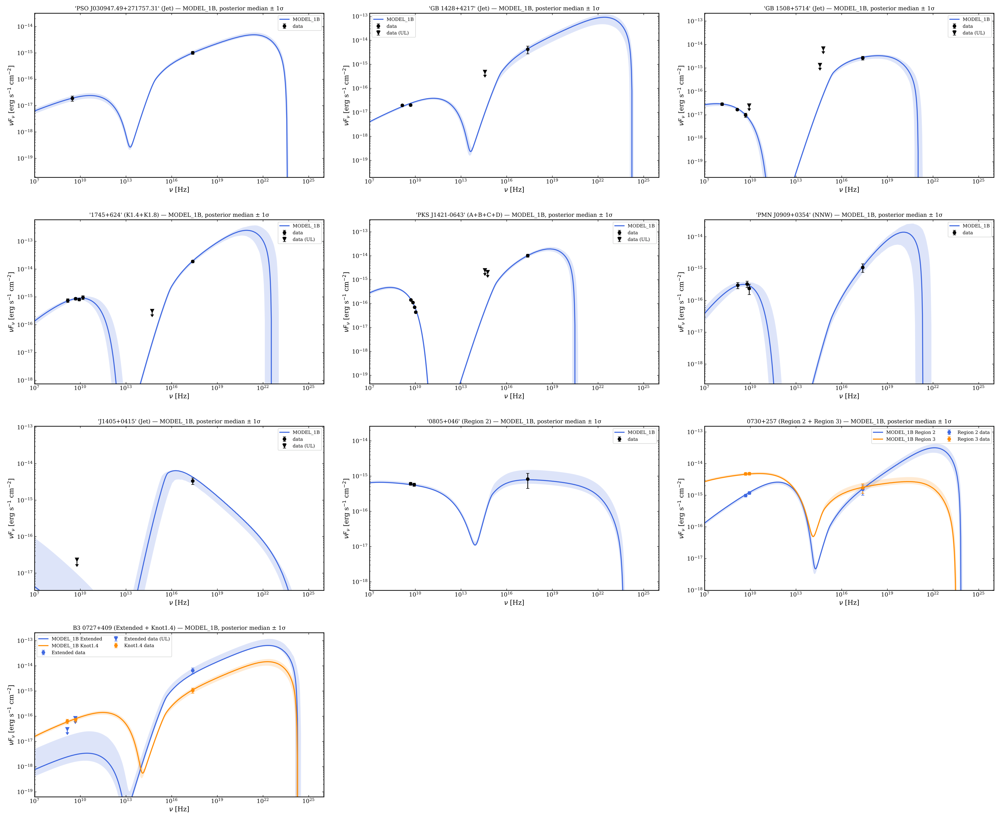<br />
图注：SEDs of the analyzed high-$z$ quasar jets fitted with the statistically preferred model (1B) and plotted with $1\sigma$ error bands. For the four sources with multi-frequency radio coverage (1745$+$624, GB\,1508$+$5714, PKS\,J1421$-$0643, and PMN\,J0909$+$0354) the maximum electron Lorentz factor $\gmax$ is treated as a free parameter (Table~\ref{tab:results}); for the remaining sources it is held at the fiducial value of $\gmax=10^5$.<br />
对应解读：对应“建议重点查看的图表”第1、2、7点，以及“关键图表逐图导读”中关于宽波段SED和模型拟合的核心解读。<br />
入选理由：这是十个高红移类星体喷流的实际观测SED拟合图，包含统计优选模型1B及1σ误差带，最直接支撑日报中关于射电、光学/红外约束、X射线点、同步与IC/CMB宽波段拟合是否一致的讨论。相比示意模型图，它使用真实样本数据，是判断模型是否能同时满足多频段观测的首要图。<br />
来源与置信度：\(arxiv_source\)；high；\(arxiv_source\) / \(ms_liniewicz.tex\):figure[3]</p>
<p><strong>Fig04</strong><br />
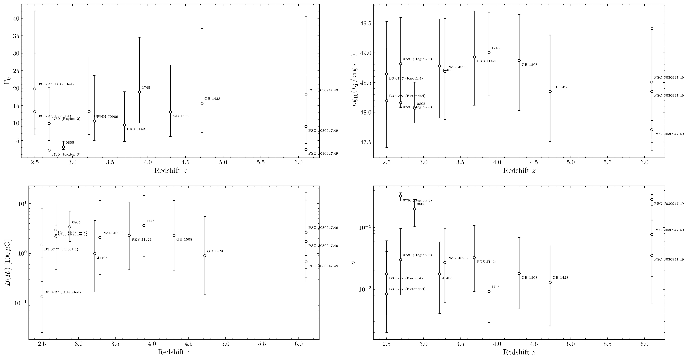<br />
图注：The inferred $\Gamma_0$, $L_{\rm j}$, $B(R_{\rm j})$, and $\sigma$ as functions of redshift for the ten fitted sources. Values for the best-fit model are presented.<br />
对应解读：对应“建议重点查看的图表”第5点，以及“关键图表逐图导读”中关于红移趋势、喷流功率、洛伦兹因子和磁化参数随红移变化的讨论。<br />
入选理由：该图直接给出推断的Γ0、Lj、B(Rj)和σ随红移的分布，是检验论文结论“无显著单调红移趋势”“喷流功率可达10^49 erg s^-1”“全局磁化偏低”的关键证据图。它还能帮助读者判断趋势是否被少数高功率源或大误差范围主导。<br />
来源与置信度：\(arxiv_source\)；high；\(arxiv_source\) / \(ms_liniewicz.tex\):figure[4]</p>
<p><strong>Fig01</strong><br />
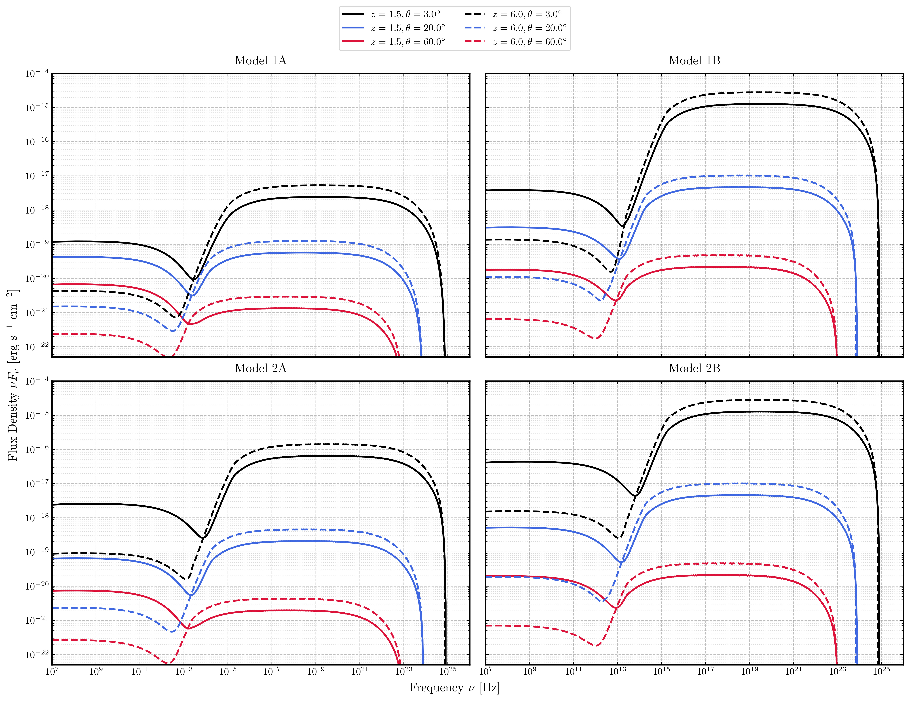<br />
图注：Illustrative broad-band Spectral Energy Distributions (SEDs) computed for a representative set of free and input model parameters, namely $R_{\rm j}=1$~kpc, $\ell=10$~kpc, $\Gamma_0=10$, $p=3$, and $L_{\rm j}=10^{47}$~erg~s$^{-1}$, together with the fiducial parameters listed in Table~\(\ref{tab:params}.\) The spectra are shown for all four model variants (1A, 1B, 2A, and 2B). Solid and dashed lines correspond to redshifts $z=1.5$ and $z=6.0$, respectively, while black, blue, and red curves correspond to viewing angles $\vartheta=3\degree$, $20\degree$, and $60\degree$. On each panel, the lower bump in the radio to infra-red range is due to the synchrotron emission, while the upper bump in the ultraviolet to $\gamma$-ray range is due to the IC/CMB process. High-energy $\gamma$-ray fluxes are not corrected for the EBL absorption.<br />
对应解读：对应“关键图表逐图导读”中关于模型谱形、四个模型变体、同步分量与IC/CMB分量主导频段的说明，也部分对应“建议重点查看的图表”第2点。<br />
入选理由：该图不是样本拟合结果，而是四个模型变体在不同红移和视角下的宽波段SED示意，可用于理解模型中同步低能峰和IC/CMB高能峰如何随z和观测角变化。它有助于解释为什么高红移IC/CMB分量增强，但科学证据价值低于真实数据拟合图。<br />
来源与置信度：\(arxiv_source\)；high；\(arxiv_source\) / \(ms_liniewicz.tex\):figure[1]</p>
<p><strong>Fig02</strong><br />
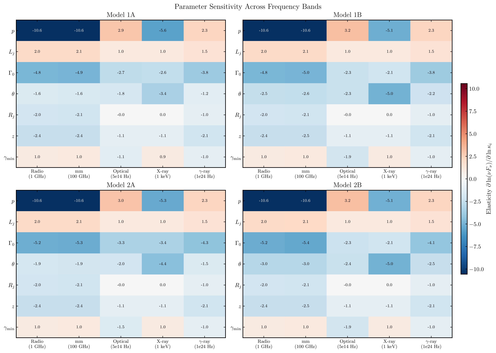<br />
图注：Elasticity of the four model variants under a 5\% change in each parameter, evaluated at representative observing frequencies.<br />
对应解读：对应“模型拟合”部分关于参数退化、不同参数对多频段通量影响以及诊断量敏感性的讨论。<br />
入选理由：该图展示四个模型变体在参数改变5%时于代表性观测频率上的响应，可辅助理解Lj、Γ0、磁场或电子参数如何影响SED不同频段。虽然它不是后验角图或证据比较图，不能直接检验先验边界或模型证据，但对解释参数敏感性和拟合退化仍有价值。<br />
来源与置信度：\(arxiv_source\)；high；\(arxiv_source\) / \(ms_liniewicz.tex\):figure[2]</p>
<h4 id="_112">强相关工作</h4>
<p>这篇工作属于高红移类星体大尺度 X 射线喷流和 ( {\<br />
m IC/CMB} ) 争论的延续。同类工作包括早期用 Chandra 发现并建模大尺度 X 射线喷流的研究、对 ( {\<br />
m IC/CMB} ) 模型要求高 \(\Gamma\) 的讨论、以及利用 Fermi-LAT 对若干低红移明亮喷流的 GeV 上限来挑战 ( {\<br />
m IC/CMB} ) 的论文。建议检索关键词包括 “high-redshift quasar X-ray jets IC/CMB Chandra”, “large-scale quasar jets inverse Compton CMB”, “kiloparsec jet bulk Lorentz factor”, “Fermi constraints IC/CMB quasar jets”。</p>
<p>在理论背景上，它与 Blandford–Königl 类相对论喷流图像、Begelman–Rees–Sikora 外部康普顿辐射思想、以及带环向磁场的 MHD 准直/平衡模型有关。与相反观点的关系在于：如果某些喷流的 X 射线来自第二同步成分或局部粒子再加速，那么 ( {\<br />
m IC/CMB} ) 推得的高 (L_{\<br />
m j}) 和 \(\Gamma_0\) 可能不是唯一解释。本文的贡献不是彻底解决发射机制争论，而是说明在接受 ( {\<br />
m IC/CMB} ) 框架时，横向分层会显著改变物理量推断。</p>
<p><strong>同一事件 / 同类源线索</strong>：</p>
<ul>
<li><a href="https://arxiv.org/abs/2606.26961">https://arxiv.org/abs/2606.26961</a></li>
<li><a href="https://arxiv.org/pdf/2606.26961">https://arxiv.org/pdf/2606.26961</a></li>
</ul>
<p><strong>相似工作</strong>：</p>
<ul>
<li><a href="https://arxiv.org/abs/astro-ph/0108063">https://arxiv.org/abs/astro-ph/0108063</a></li>
<li><a href="https://arxiv.org/abs/astro-ph/0202043">https://arxiv.org/abs/astro-ph/0202043</a></li>
<li><a href="https://arxiv.org/abs/1106.2073">https://arxiv.org/abs/1106.2073</a></li>
</ul>
<p><strong>基础理论 / 方法工作</strong>：</p>
<ul>
<li><a href="https://ui.adsabs.harvard.edu/abs/1979ApJ...232...34B/abstract">https://ui.adsabs.harvard.edu/abs/1979ApJ...232...34B/abstract</a></li>
<li><a href="https://ui.adsabs.harvard.edu/abs/1974MNRAS.169..395B/abstract">https://ui.adsabs.harvard.edu/abs/1974MNRAS.169..395B/abstract</a></li>
<li><a href="https://ui.adsabs.harvard.edu/abs/1987ApJ...320L...5D/abstract">https://ui.adsabs.harvard.edu/abs/1987ApJ...320L...5D/abstract</a></li>
</ul>
<p><strong>相反观点 / 张力线索</strong>：</p>
<ul>
<li><a href="https://arxiv.org/abs/1510.05609">https://arxiv.org/abs/1510.05609</a></li>
<li><a href="https://arxiv.org/abs/1705.03028">https://arxiv.org/abs/1705.03028</a></li>
</ul>
</details>
<h3 id="11-nuclear-isomers-and-their-impact-on-gamma-ray-emission-in-binary-neutron-star-mergers">11. Nuclear Isomers and Their Impact on Gamma-Ray Emission in Binary Neutron Star Mergers</h3>
<ul>
<li>来源：arXiv / astro-ph.HE</li>
<li>链接：https://arxiv.org/abs/2606.26447v1</li>
<li>作者：M. C. Babiuc Hamilton, A. P. Gross, O. T. Odney</li>
<li>评分：novelty 8/10，importance 7/10，relevance 8/10，final 8.65/10</li>
<li>推荐理由：研究BNS并合r过程核同质异能态对γ射线谱线的影响，给出COSI/AMEGO/LOX可探测线预测；对MeV γ射线天文学和多信使并合物理有明确价值。</li>
</ul>
<p><strong>中文题目</strong>：核同质异能态如何改变双中子星并合后的伽马射线谱</p>
<p><strong>做了什么</strong>：这篇文章问的是一个很具体但容易被并合核合成模型忽略的问题：双中子星并合的 \(r\) 过程产物在衰变时，是否可以把每个核素都近似为只占据基态、并假设子核激发态会瞬时退激？作者把若干具有长寿命高能核同质异能态的核素作为反应网络中的独立状态处理，引入基态和同质异能态之间随温度变化的有效跃迁率，并用核能级结构计算 \(\beta\) 衰变 feeding。结果显示，来自 \(^{97\mathrm{m}}\mathrm{Nb}\) 的 \(743.3\,\mathrm{keV}\) 线和 \(^{91\mathrm{m}}\mathrm{Y}\) 的 \(555.6\,\mathrm{keV}\) 线，在银河系距离的并合事件中可能被 COSI、AMEGO、LOX 这类 MeV 伽马射线望远镜探测到。核心结论不是“已经能看到宇宙学距离的并合伽马线”，而是：若不把同质异能态纳入网络，某些窄线和能量沉积通道会被系统性漏掉。</p>
<p><strong>为什么重要</strong>：双中子星并合的电磁余辉通常通过千新星光变和颜色来反推 \(r\) 过程丰度，但这些推断高度依赖不透明度、喷射物几何、热化效率和辐射输运。衰变伽马线更接近核素身份证：特定能量的线直接对应特定衰变链或核能级跃迁。本文指出，以往只追踪基态核素的网络可能漏掉寿命足够长的同质异能态，从而低估或误判某些伽马线。对于未来 MeV 天文学，这关系到目标线表、曝光策略和对非探测上限的解释。</p>
<p><strong>理论 / 观测 / 仪器方法价值</strong>：理论上，这项工作把核同质异能态从“衰变谱细节”提升为“网络动力学变量”，为更完整的 \(r\) 过程核反应网络提供了实现路径。观测上，它给出了若干可优先搜索的 MeV 线，尤其是 \(743.3\,\mathrm{keV}\) 和 \(555.6\,\mathrm{keV}\) 附近的线。方法上，它强调需要把温度依赖的内转换、光激发、退激和 \(\beta\) feeding 一起纳入，而不是在后处理阶段简单叠加数据库衰变谱。</p>
<p><strong>为什么应该关注</strong>：如果你关心 GW170817 之后的多信使核天体物理，这篇文章值得看，因为它把一个看似核物理的细节变成了可观测问题：未来的银河系内或近邻双中子星并合，可能不只给出宽带千新星，还可能给出带有核素标签的 MeV 谱线。它也提醒我们，千新星加热率和伽马逃逸谱中的“核数据库不确定性”并不只是半衰期和质量模型，长寿命同质异能态的热耦合状态同样可能重要。</p>
<details class="paper-detail">
<summary>展开详细解读：文章讲解、背景、理论、重点章节、图表与相关工作</summary>
<h4 id="_113">文章详细讲解</h4>
<p>科学问题：双中子星并合喷射物中的 \(r\) 过程会产生大量远离稳定线的中重核和重核，它们随后通过 \(\beta\) 衰变、裂变和 \(\alpha\) 衰变释放能量。传统并合网络常把一个核素 \((Z,A)\) 当成一个物种，默认网络追踪的是基态丰度；在计算伽马射线时，则常假设衰变后子核的激发态会快速退激。这个近似对大多数短寿命激发态是合理的，但对核同质异能态不一定成立。同质异能态是同一核素中寿命较长的激发态，可能因自旋差、跃迁多极性或能级结构而被阻滞。如果其寿命与喷射物冷却、衰变或观测时间相当，就会改变能量沉积和线发射。</p>
<p>作者怎么做：本文选取一组具有相关同质异能态的核素，把基态和同质异能态作为反应网络中的独立状态，而不是把它们合并为一个总丰度。网络中包含基态到同质异能态、同质异能态到基态的有效跃迁率；这些跃迁率随温度变化，因为热光子场可以通过中间能级把两个长寿命状态耦合起来。作者还利用核能级结构估算 \(\beta\) 衰变 feeding probability，也就是母核衰变后落入子核基态、普通激发态或同质异能态的概率。随后，他们从这些时间依赖的状态丰度计算同质异能态跃迁产生的伽马线通量，并与未来或拟议 MeV 仪器灵敏度比较。</p>
<p>关键结果：在作者考察的有限核素集合中，\(^{97\mathrm{m}}\mathrm{Nb}\) 的 \(743.3\\,\mathrm{keV}\) 线和 \(^{91\mathrm{m}}\mathrm{Y}\) 的 \(555.6\\,\mathrm{keV}\) 线最突出，若并合发生在银河系尺度距离，COSI、AMEGO、LOX 等 MeV 伽马射线望远镜有机会探测。这个结论的物理原因是双重的：一方面这些同质异能态能被衰变链有效布居，另一方面其退激光子能量处于 MeV 望远镜较敏感的能段，并且寿命使其释放时间落在喷射物逐渐变透明的阶段。也就是说，强线不只取决于核产额，还取决于喷射物光学深度和仪器响应窗口。</p>
<p>局限和下一步：本文不是一个全核素表的最终预报，而是对“同质异能态必须被网络显式处理”的示范。作者只纳入了小部分具有同质异能态的核素，核能级数据、未知 \(\beta\) feeding、内转换系数、热耦合路径和喷射物模型都会带来系统误差。下一步需要把更大范围的同质异能态并入反应网络，与不同 \(Y_e\)、熵、膨胀时标的并合喷射物轨迹结合，并用完整伽马输运而不是简单逃逸近似来评估线形、展宽、吸收和观测可行性。</p>
<h4 id="_114">关键结果是怎么做出来的</h4>
<p>本文的样本选择不是观测事件样本，而是核素/能级样本：作者从具有较长寿命高能同质异能态、且可能在并合 \(r\) 过程路径或衰变回稳定线过程中出现的核素中挑选研究对象。关键点在于他们没有把同一 \((Z,A)\) 的所有状态合并成单一丰度，而是把基态 \(g\) 和同质异能态 \(m\) 分开追踪。这样，事件数对应的是网络中的状态数和衰变/跃迁通道数，而不只是传统核素数。</p>
<p>证据链的第一步是动力学布居：如果某个同质异能态只在核数据库中存在，但 \(r\) 过程衰变链几乎不 feeding 到它，或热耦合很快把它耗尽，那么它不会产生可观测线。作者用核能级结构计算 \(\beta\) feeding，并用温度依赖的有效跃迁率处理基态与同质异能态之间的交换。这里最重要的诊断量是随时间变化的状态丰度 \(Y_m(t)\) 和伽马线发射率，而不是单个半衰期表格。</p>
<p>证据链的第二步是从发射率到可探测通量。作者把同质异能态退激产生的线光子数率投影到给定距离，讨论银河系距离下的通量水平，并与 COSI、AMEGO、LOX 的线灵敏度量级比较。显著性严格来说依赖于仪器的有效面积、能量分辨率、背景模型和曝光时间；本文的结论更接近可探测性估算，而不是对某一真实事件的观测显著性声明。读者应重点看通量曲线相对灵敏度曲线的交叉，以及峰值出现时间是否落在实际可跟踪窗口内。</p>
<p>最支撑结论的图表应包括：同质异能态网络示意或能级图、基态/同质异能态丰度随时间演化、主要伽马线光度或通量随时间变化、以及与仪器灵敏度的比较图。若论文给出不同核素的线列表或表格，\(^{97\mathrm{m}}\mathrm{Nb}\) 的 \(743.3\\,\mathrm{keV}\) 与 \(^{91\mathrm{m}}\mathrm{Y}\) 的 \(555.6\\,\mathrm{keV}\) 应是优先检查对象。需要特别注意表中通量是否已经包含伽马逃逸、距离缩放和分支比，避免把内禀发射率误读为探测器接收通量。</p>
<p>系统误差主要来自三类。第一是核物理误差：未知能级、跃迁强度、内转换、半衰期和 \(\beta\) feeding 会直接改变 \(Y_m(t)\) 和线强。第二是天体物理误差：喷射物质量、速度、电子丰度 \(Y_e\)、混合程度和几何决定产额和透明时间。第三是观测误差：MeV 背景高、线会因喷射物速度产生多普勒展宽，真实灵敏度不是单一能量点的理想曲线。稳健性检验应关注换用不同喷射物轨迹、不同温度演化、不同核数据假设后，候选强线排序是否保持。</p>
<details class="paper-subdetail">
<summary>展开背景、理论、公式、模型、章节和图表导读</summary>
<h4 id="_115">背景知识</h4>
<p>研究对象是双中子星并合后的富中子喷射物。GW170817 和 AT2017gfo 之后，双中子星并合已经成为重元素 \(r\) 过程的核心候选场所之一。光学/红外千新星给出了放射性加热和高不透明度镧系元素的间接证据，但它没有逐个核素分辨能力。伽马射线线谱如果能被观测到，则可直接连接到具体衰变链和能级跃迁。</p>
<p>历史上，\(r\) 过程网络关注的主要核输入包括核质量、中子俘获率、光致离解率、\(\beta\) 衰变半衰期、\(\beta\) 延迟中子发射和裂变。对千新星光变来说，许多单个核素的细节会被总加热率平均掉，因此把每个核素当作一个有效物种常常够用。但伽马线谱不同：单个能级跃迁会在特定能量处留下线，因此那些在总能量预算中看似次要的核物理细节，可能在谱线上变成决定性因素。</p>
<p>同质异能态在核物理中并不新鲜。例如某些核素的激发态因自旋或跃迁选择定则而寿命异常长，能以秒、小时甚至更长时间尺度存在。在快速膨胀冷却的并合喷射物中，这类寿命不再只是实验室核表中的细节，而可能与环境温度下降、光学深度降低和观测窗口相竞争。若早期同质异能态与基态热平衡，晚期又冻结出不同布居，就会改变后续衰变和线发射。</p>
<p>现在值得重新看这个问题，有两个原因。第一，MeV 伽马射线天文学正在从长期灵敏度不足的状态进入新阶段，COSI 等任务将显著提高 \(0.1\) 到数 \(\mathrm{MeV}\) 能段的线谱能力。第二，GW170817 之后的并合率和近邻事件预期使得“银河系内或近邻并合的核线谱”成为可以严肃规划的目标。即便事件稀少，明确哪些线最有诊断价值也能指导触发、曝光和后续数据分析。</p>
<p>一个常见误区是把千新星放射性加热和可逃逸伽马线等同起来。前者关心衰变能量最终热化多少，后者关心光子是否在喷射物中被吸收、康普顿散射或逃逸，并且是否落在仪器敏感能段。另一个误区是认为只要知道母核半衰期就能预测线谱；实际上子核能级、分支比、内转换和同质异能态布居同样关键。本文正是针对这些被平均掉的细节提出修正。</p>
<h4 id="_116">基础理论 / 方法脉络</h4>
<p>基础物理图像可以从放射性衰变加热开始。并合喷射物经过 \(r\) 过程后含有大量不稳定核素，随着时间通过 \(\beta\) 衰变向稳定线移动。每次衰变释放的能量分配给电子、反中微子、伽马光子和可能的内转换电子。电子和低能光子更容易热化，反中微子基本逃逸，而 MeV 伽马光子是否逃逸取决于喷射物密度、组成和时间。</p>
<p>传统网络把丰度写成 \(Y(Z,A,t)\)，即单位重子数中某核素的数目。本文强调，对于存在长寿命同质异能态的核素，应写成 \(Y_g(Z,A,t)\) 和 \(Y_m(Z,A,t)\)，分别代表基态和同质异能态。二者可通过自发退激、热光子激发到中间能级再退激、内转换等通道相互转换。早期温度高时，热光子场可能让状态接近平衡；晚期温度低时，转换冻结，最终线强取决于冻结时的布居。</p>
<p>关键量包括同质异能态能量 \(E_m\)、半衰期 \(t_{1/2,m}\)、跃迁能量 \(E_\gamma\)、伽马分支比 \(b_\gamma\)、内转换系数、\(\beta\) feeding 概率以及喷射物的质量 \(M_{\rm ej}\)、速度 \(v_{\rm ej}\) 和距离 \(D\)。如果 \(t_{1/2,m}\) 太短，线在喷射物仍高度不透明时产生并被热化；如果太长，峰值通量可能过低或落在观测不利时间。因此可观测性通常来自“产额、寿命、透明时间、仪器灵敏度”的匹配。</p>
<p>观测方法上，MeV 线探测并不是简单数光子。真实分析要在能量窗口内比较源模型和背景模型，考虑有效面积、能量分辨率、点扩散函数、曝光随时间变化以及线展宽。并合喷射物速度可达 \(0.1c\) 量级，因此窄核线会被多普勒展宽到 \(\Delta E/E\sim v/c\)。这既降低峰值线强，也可能帮助区分天体源线和仪器背景线。</p>
<p>常见退化关系包括：更大的喷射物质量会提高核素总数，但也提高早期伽马光学深度；更高速度使喷射物更快透明，但线更宽；更高 \(Y_e\) 改变 \(r\) 过程路径和最终核素丰度；核 feeding 不确定性可能与天体产额不确定性混在一起。本文的模型价值在于把其中一个退化源，即同质异能态布居，从隐含假设变为可计算变量。</p>
<h4 id="_117">公式与推导</h4>
<p>第一步是把传统单物种丰度推广为基态和同质异能态的耦合方程。对某个核素 \((Z,A)\)，定义单位重子数丰度 \(Y_g\) 和 \(Y_m\)，则可写成</p>
<div class="math-display">\[\rac{dY_m}{dt}=P_m(t)+\lambda_{g\
ightarrow m}(T)Y_g-\lambda_{m\
ightarrow g}(T)Y_m-\lambda_m^{\
m dec}Y_m .\]</div>
<p>这里 \(P_m(t)\) 是上游衰变或反应 feeding 到同质异能态的源项，\(\lambda_{g\}}\)<br />
ightarrow m}) 与 (\lambda_{m\<br />
ightarrow g}) 是温度 \(T\) 下的有效状态转换率，(\lambda_m^{\<br />
m dec}) 包括同质异能态自身衰变或破坏通道。这个式子说明本文的核心改变：同质异能态不是后处理标签，而是网络动力学变量。</p>
<p>第二步是写出基态方程，使总丰度守恒项清楚可见：</p>
<div class="math-display">\[\rac{dY_g}{dt}=P_g(t)-\lambda_{g\
ightarrow m}(T)Y_g+\lambda_{m\
ightarrow g}(T)Y_m-\lambda_g^{\
m dec}Y_g .\]</div>
<p>其中 \(P_g(t)\) 是 feeding 到基态的源项，\(\lambda_g^{\}}\)<br />
m dec}) 是基态衰变率。若忽略衰变和外部源项，两式相加后状态转换项抵消，说明 \(g\leftrightarrow m\) 只在同一核素内部重新分配布居。</p>
<p>第三步是热耦合的详细平衡近似。若通过一组中间能级使 \(g\) 和 \(m\) 在高温下近似热平衡，则布居比可近似为</p>
<div class="math-display">\[\rac{Y_m}{Y_g}\simeq \rac{2J_m+1}{2J_g+1}\exp\left(-\rac{E_m-E_g}{k_{\
m B}T}\
ight) .\]</div>
<p>这里 \(J_m\) 和 \(J_g\) 是自旋，\(E_m-E_g\) 是同质异能态激发能，\(k_{\}}\)<br />
m B}) 是玻尔兹曼常数。这个关系只在转换率快于膨胀和衰变时成立；一旦温度下降到耦合冻结，实际 \(Y_m/Y_g\) 会保留动力学历史。</p>
<p>第四步是把半衰期转换为衰变率。对任意状态 \(i\in\\{g,m\\}\)，有</p>
<div class="math-display">\[\lambda_i^{\
m dec}=\rac{\ln 2}{t_{1/2,i}} .\]</div>
<p>这里 \(t_{1/2,i}\) 是实验室或环境修正后的半衰期。该式看似简单，但在本文中很关键：若 \(t_{1/2,m}\) 与喷射物透明时间同量级，同质异能态线就可能在逃逸概率较高时释放。</p>
<p>第五步是 \(\beta\) feeding。若母核状态 \(p\) 衰变到子核状态 \(j\) 的分支概率为 \(f_{p\}}\)<br />
ightarrow j})，则子核同质异能态源项可写成</p>
<div class="math-display">\[\(\nP_m(t)=\sum_p\) f_{p\
ightarrow m}\lambda_p^{\eta}Y_p(t) .\]</div>
<p>这里 \(Y_p\) 是母核状态丰度，\(\lambda_p^{\eta}\) 是其 \(\beta\) 衰变率。这个式子体现了为什么只知道最终核素总丰度不够：feeding 分支会决定同质异能态是否被有效布居。</p>
<p>第六步是线光子产生率。若同质异能态以分支比 \(b_\gamma\) 发出能量 \(E_\gamma\) 的伽马光子，则内禀线光子率为</p>
<div class="math-display">\[\dot N_\gamma(t)=b_\gamma\lambda_{m\
ightarrow g}^{\gamma}Y_m(t)\rac{M_{\
m ej}}{m_u} .\]</div>
<p>这里 \(M_{\}}\)<br />
m ej}) 是喷射物质量，\(m_u\) 是原子质量单位，(\lambda_{m\<br />
ightarrow g}^{\gamma}) 是产生该线的辐射跃迁率。若内转换显著，\(b_\gamma\) 需要小于总退激分支，因为部分能量以电子而非光子释放。</p>
<p>第七步是逃逸修正和到达地球的通量。可用简化球对称模型写成</p>
<div class="math-display">\[\nF_\gamma(t)=\rac{\(\dot\) N_\gamma(t)}{4\pi D^2}\exp[-\	\(au_\gamma(t)\)] .\]</div>
<p>这里 \(D\) 是源距离，\(\	au_\gamma\) 是能量相关的伽马光学深度。该式说明本文的“银河系距离可探测”结论如何缩放：通量随 \(D^{-2}\) 下降，并被早期不透明喷射物抑制。</p>
<p>第八步是喷射物光学深度的时间标度。若喷射物以速度 \(v_{\}}\)<br />
m ej}) 同 homologous expansion 膨胀，半径 (R\simeq v_{\<br />
m ej}t)，则</p>
<div class="math-display">\[\	au_\gamma(t)\simeq \rac{\kappa_\gamma M_{\
m ej}}{4\pi v_{\
m ej}^2t^2} .\]</div>
<p>这里 \(\kappa_\gamma\) 是有效伽马不透明度。该式给出直观判据：较大 \(M_{\}}\)<br />
m ej}) 提高产额但也提高吸收，较大 (v_{\<br />
m ej}) 加速透明化但会增加线展宽。</p>
<p>第九步是仪器计数显著性。若有效面积为 \(A_{\}}\)<br />
m eff}(E))、曝光时间为 (T_{\<br />
m exp})、背景计数为 \(B\)，线源计数约为</p>
<div class="math-display">\[\(\nS\simeq\) \(F_\gamma\) A_{\
m eff}(E_\gamma)T_{\
m exp},\qquad {\
m SNR}\simeq \rac{S}{\sqrt{S+B}} .\]</div>
<p>这不是本文所有仪器细节的替代品，但它解释了为什么同一条核线在不同任务中的可探测性取决于能量响应、背景和曝光，而不只取决于天体通量。</p>
<h4 id="_118">模型拟合 / 应用方法</h4>
<p>本文更像理论/预报型工作，而不是对某一观测数据集做参数拟合；但其计算链条仍可理解为一个模型拟合问题。模型输入包括喷射物轨迹、初始热力学条件、核反应网络、同质异能态能级结构、\(\beta\) feeding、跃迁率和伽马逃逸近似。模型输出是随时间变化的核素状态丰度、加热率和线通量。若未来有观测数据，这些输出就可作为模板与伽马谱数据拟合。</p>
<p>参数估计时，最直接的拟合量会是能量谱中的线通量、线宽、线心和时间演化。线心对应核跃迁能量，但会受喷射物整体速度和仪器能标影响；线宽反映膨胀速度、几何和仪器分辨率；线通量反映核素产额、同质异能态布居、分支比、距离和逃逸概率。若同时有千新星光变，可以把 (M_{\<br />
m ej})、(v_{\<br />
m ej})、组成和温度演化作为联合约束。</p>
<p>似然函数通常会基于泊松计数或高计数近似下的高斯残差。对 MeV 望远镜而言，背景模型非常关键，因为仪器材料中的活化线和宇宙线诱发背景可在相近能段产生结构。合理的拟合应包括连续背景、已知仪器线、天体线模板和时间依赖曝光。若只看某个能量 bin 的超额而不建模背景，容易把系统残差误判为核线。</p>
<p>退化关系是此类工作的核心难点。线通量增强可以来自更大的该核素产额，也可以来自更高的 feeding 到同质异能态概率，或来自更低的早期光学深度。相反，非探测也不能简单排除某个核素存在，因为线可能在不透明阶段产生、被内转换削弱、或被喷射物速度展宽到背景中。多条线联合、与光变联合、与并合距离和倾角信息联合，是打破退化的实际路径。</p>
<p>模型可能失败的地方包括：核能级数据库在远离稳定线处不完整；温度依赖跃迁率需要中间能级信息，而这些信息可能未知；喷射物不是均匀球壳，不同成分区域的透明时间不同；伽马输运的康普顿降能会把线光子转入连续谱。本文的价值在于指出这些失败模式中有一类以前被系统性忽略，即同质异能态布居本身。</p>
<h4 id="_119">重点章节 / 结果段落怎么读</h4>
<p>第一部分应读引言和问题设定。重点看作者如何批评传统并合伽马线计算中的两个近似：只追踪基态丰度，以及假设子核激发态快速退激。这里会说明为什么同质异能态寿命和喷射物时间尺度相当时，这两个近似会失效。</p>
<p>第二部分应读核同质异能态并入网络的方法。重点看基态和同质异能态如何作为独立网络节点，温度依赖有效跃迁率如何定义，\(\beta\) feeding probability 如何由核能级结构得到。读者应检查作者使用了哪些核数据库和筛选标准，因为这些选择决定了结果的代表性。</p>
<p>第三部分应读伽马线通量计算。重点看作者如何从状态丰度得到线发射率，是否包含分支比、内转换、距离缩放和喷射物吸收。若模型采用简化逃逸概率，应注意其适用范围，特别是早期高光学深度阶段和高速喷射物导致的线展宽。</p>
<p>第四部分应读结果段，尤其是候选强线列表。\(^{97\mathrm{m}}\mathrm{Nb}\) 的 \(743.3\\,\mathrm{keV}\) 和 \(^{91\mathrm{m}}\mathrm{Y}\) 的 \(555.6\\,\mathrm{keV}\) 是文章强调的可探测线。读者应看这些线的峰值时间、峰值通量、持续时间和相对仪器灵敏度，而不只看最大通量数值。</p>
<p>第五部分应读讨论和展望。这里通常会交代样本有限性、核数据不确定性、仪器可探测性的理想化程度以及未来需要扩展到完整同质异能态网络。读者应把本文视作方法学警告和候选线预报，而不是最终的并合伽马线目录。</p>
<h4 id="_120">建议重点查看的图表</h4>
<ol>
<li>
<p>核能级或网络示意图：看基态、同质异能态和中间能级如何连接，哪些跃迁是温度依赖的，哪些是自发退激或 \(\beta\) feeding。</p>
</li>
<li>
<p>状态丰度随时间演化图：重点比较 \(Y_g(t)\) 与 \(Y_m(t)\)，看同质异能态在什么时间冻结、何时衰减，以及是否与喷射物透明时间重叠。</p>
</li>
<li>
<p>主要伽马线光度或通量曲线：检查 \(743.3\\,\mathrm{keV}\) 和 \(555.6\\,\mathrm{keV}\) 线的峰值时间、峰值宽度、衰减斜率和距离假设。</p>
</li>
<li>
<p>与仪器灵敏度比较图：看曲线是否超过 COSI、AMEGO、LOX 的线灵敏度，并确认灵敏度对应的曝光时间、线宽假设和显著性标准。</p>
</li>
<li>
<p>候选同质异能态表格：检查每个核素的半衰期、跃迁能量、分支比、feeding 概率和预测通量，避免只关注作者在正文中点名的两条线。</p>
</li>
<li>
<p>稳健性或参数变化图：若有不同喷射物质量、速度、温度轨迹或核数据选项的比较，应看强线排序是否稳定；如果没有，应在阅读时把这视为主要不确定性。</p>
</li>
</ol>
<h4 id="_121">关键图表逐图导读</h4>
<p>图 1：通常应是核同质异能态处理框架或能级示意。横向可理解为不同核素或衰变链，纵向是能级能量；箭头表示 \(\beta\) feeding、热激发、退激或同质异能态跃迁。读图时不要把所有箭头都当作同等强度，关键是分支比和温度依赖跃迁率。若图中标出 \(^{97\mathrm{m}}\mathrm{Nb}\) 或 \(^{91\mathrm{m}}\mathrm{Y}\)，应看其同质异能态与基态之间是否存在被阻滞的直接跃迁，以及是否有中间能级可提供热耦合。</p>
<p>图 2：应重点寻找状态丰度随时间变化。横轴通常是并合后时间，纵轴可能是丰度、质量分数或相对布居。模型线会区分传统单状态网络和显式同质异能态网络。主要结论应体现在 \(Y_m(t)\) 在某个时间窗口内保持非零并产生可观测发射。读图陷阱是对数坐标下小差异可能代表数量级变化，且丰度峰值不等于可探测峰值，因为还要乘以逃逸概率。</p>
<p>图 3：应是伽马线通量或光度随时间曲线。横轴为时间，纵轴为 \(F_\gamma\) 或线光度，曲线对应不同核线。读者应关注 \(743.3\\,\mathrm{keV}\) 与 \(555.6\\,\mathrm{keV}\) 曲线的峰值是否处于喷射物较透明的阶段。若图中没有加入逃逸吸收，那么它只代表内禀发射率；若已经加入逃逸，则曲线峰值会相对延迟。</p>
<p>图 4：若有仪器比较图，横轴可能是光子能量，纵轴是线灵敏度或最小可探测通量；数据点或水平标记代表本文预测的核线。应检查预测点是否在灵敏度曲线之上，并确认假设距离是银河系距离而非 GW170817 的 \(\sim 40\\,\mathrm{Mpc}\)。读图陷阱是不同任务的灵敏度可能对应不同曝光、不同线宽和不同背景条件，不能直接逐点比较。</p>
<p>图 5：若有表格或条形图列出不同同质异能态贡献，应看排序是否由产额主导还是由寿命/分支比主导。某些核素丰度高但线弱，可能因为内转换强或释放过早；某些丰度较低的同质异能态反而线强，可能因为能量、寿命和透明时间匹配得好。</p>
<p>图 6：若有稳健性检验图，应看喷射物参数或核数据变化是否改变两条主线的可探测性。若所有模型中 \(^{97\mathrm{m}}\mathrm{Nb}\) 和 \(^{91\mathrm{m}}\mathrm{Y}\) 都保持突出，结论更稳健；若只在单一轨迹中出现，则应把它们视为候选而非可靠预报。</p>
</details>
<h4 id="_122">论文原图 / 可嵌入图片</h4>
<p><strong>Fig06</strong><br />
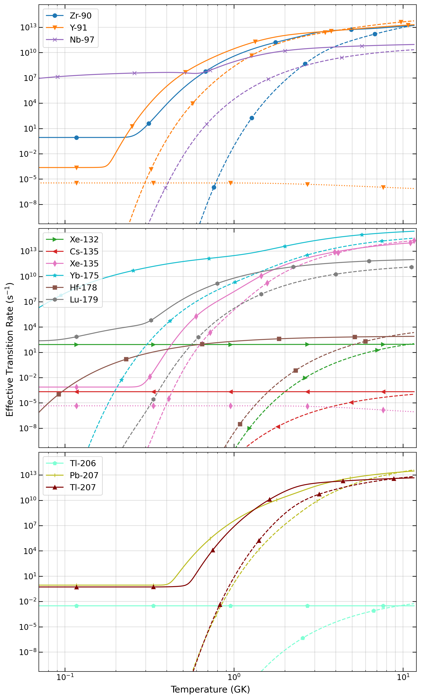<br />
图注：Effective transition rates as function of temperature for selected isomers. Solid lines denote isomer-to-ground rates, dashed lines ground-to-isomer rates, and dotted lines isomeric $\beta$-decay rates. Top: isomers around $1^{st}$ r-process peak. Middle: isomers around $2^{nd}$ r-process and rare-Earth peaks. Bottom: isomers around $3^{rd}$ r-process peak.<br />
对应解读：对应“建议重点查看的图表”第1项核同质异能态处理框架中温度依赖跃迁，以及“模型拟合”段落中同质异能态能级结构、温度依赖有效跃迁率和同质异能态β衰变率等模型输入。<br />
入选理由：这是候选图中唯一真实存在的图，直接展示多个同质异能态的有效跃迁率随温度变化：实线为同质异能态到基态，虚线为基态到同质异能态，点线为同质异能态β衰变率。它能支撑日报中关于热光子场通过中间能级耦合基态与同质异能态、冷却后布居冻结、以及为何必须在反应网络中显式追踪同质异能态的核心解读。虽然它不是最终伽马线通量或仪器灵敏度图，但对理解本文计算链条和系统误差来源具有较高科学价值。<br />
来源与置信度：\(arxiv_source\)；high；\(arxiv_source\) / AASisomers.tex:figure[6]</p>
<h4 id="_123">强相关工作</h4>
<p>这篇工作与 GW170817/AT2017gfo 的同一事件研究是背景关系，而不是同一数据再分析。GW170817 证明双中子星并合能产生千新星，并强烈支持 \(r\) 过程元素合成；本文则进一步问，如果未来要从伽马线直接识别核素，反应网络中哪些核物理细节不能忽略。可检索关键词包括 “GW170817 kilonova r-process gamma-ray lines”、“kilonova gamma-ray spectroscopy”、“r-process nuclear isomers”、“metastable nuclear states nucleosynthesis”。</p>
<p>相似工作包括千新星放射性加热率、并合喷射物伽马线逃逸、MeV 望远镜探测并合核线的预报，以及核同质异能态在天体环境中的热耦合研究。潜在张力在于：某些宽带千新星模型认为总加热率近似幂律且对单个核素不敏感，而本文强调线谱层面并不满足这种平均化。要比较相反观点，应检索 “kilonova heating rate nuclear physics uncertainties”、“thermalization efficiency kilonova gamma rays”、“nuclear data uncertainty r-process kilonova”。</p>
<p><strong>同一事件 / 同类源线索</strong>：</p>
<ul>
<li><a href="https://arxiv.org/abs/2606.26447">https://arxiv.org/abs/2606.26447</a></li>
<li><a href="https://arxiv.org/abs/1710.05832">https://arxiv.org/abs/1710.05832</a></li>
<li><a href="https://arxiv.org/abs/1710.05434">https://arxiv.org/abs/1710.05434</a></li>
<li><a href="https://arxiv.org/abs/1710.05435">https://arxiv.org/abs/1710.05435</a></li>
</ul>
<p><strong>相似工作</strong>：</p>
<ul>
<li><a href="https://arxiv.org/abs/1805.09311">https://arxiv.org/abs/1805.09311</a></li>
<li><a href="https://arxiv.org/abs/1902.01866">https://arxiv.org/abs/1902.01866</a></li>
<li><a href="https://arxiv.org/abs/2301.07678">https://arxiv.org/abs/2301.07678</a></li>
</ul>
<p><strong>基础理论 / 方法工作</strong>：</p>
<ul>
<li><a href="https://arxiv.org/abs/1610.09381">https://arxiv.org/abs/1610.09381</a></li>
<li><a href="https://arxiv.org/abs/1710.05463">https://arxiv.org/abs/1710.05463</a></li>
<li><a href="https://arxiv.org/abs/1710.05836">https://arxiv.org/abs/1710.05836</a></li>
</ul>
<p><strong>相反观点 / 张力线索</strong>：</p>
<ul>
<li><a href="https://arxiv.org/abs/1305.0319">https://arxiv.org/abs/1305.0319</a></li>
<li><a href="https://arxiv.org/abs/1605.05473">https://arxiv.org/abs/1605.05473</a></li>
</ul>
</details>
<h3 id="12-debiasing-the-observed-fast-radio-burst-population-with-the-chimefrb-selection-function">12. Debiasing the Observed Fast Radio Burst Population with the CHIME/FRB Selection Function</h3>
<ul>
<li>来源：arXiv / astro-ph.HE</li>
<li>链接：https://arxiv.org/abs/2606.26334v1</li>
<li>作者：Kyle McGregor, Jason W. T. Hessels, Victoria M. Kaspi, Kaitlyn Shin, Fengqiu A. Dong, Naman Jain, Robert A. Main, Mawson W. Sammons</li>
<li>评分：novelty 8/10，importance 8/10，relevance 7/10，final 8.65/10</li>
<li>推荐理由：利用大量 CHIME/FRB 注入实验构建选择函数并反演 FRB 本征分布，Catalog 2 统计量大，方法和结果对 FRB 高能瞬变群体研究有参考价值。</li>
</ul>
<p><strong>中文题目</strong>：用 CHIME/FRB 选择函数校正观测到的快速射电暴族群偏差</p>
<p><strong>做了什么</strong>：这篇论文利用 CHIME/FRB Catalog 2 和注入到实时搜索流水线中的 \(587367\) 个合成 FRB，重新估计 FRB 的本征流量、散射时标、脉宽和色散量分布。核心问题是：CHIME 看到的 FRB 并不是宇宙中真实 FRB 的直接抽样，探测概率会随流量、脉宽、散射、色散量和它们之间的相互作用强烈变化。作者一方面沿用基于重采样的选择效应校正框架，另一方面训练显式多维 logistic regression 选择函数，并把它放进 simulation-based inference 中。主要结论是，FRB 本征散射时标分布可能在较大散射时标端略有下降，但平坦或轻微上升仍不能排除；与 ASKAP/CRAFT 较高频观测得到的散射分布比较后，这种略微下降的趋势得到一定支持。</p>
<p><strong>为什么重要</strong>：FRB 族群研究的最大风险之一，是把望远镜和搜索流水线的选择效应误当成天体物理。散射时标尤其敏感：强散射会拉宽脉冲、降低峰值信噪比，使事件更难被触发；但散射本身又可能记录宿主星系、近源等离子体、星系际介质和银河系前景的信息。CHIME 的大样本让我们第一次能在中等到较大散射时标区间做统计约束，而这正是 Catalog 1 时代样本和注入覆盖都不足的区域。</p>
<p><strong>理论 / 观测 / 仪器方法价值</strong>：方法上，论文的价值不只是多做了一次 FRB 分布拟合，而是把真实搜索流水线的合成注入结果转化为一个可调用的多维选择函数。这个选择函数可以告诉我们在给定 \(F\)、\(w\)、\(\tau\)、\(\mathrm{DM}\) 等观测量时，CHIME/FRB 触发并进入目录的概率是多少。对理论模型而言，它提供了更公平地比较本征族群预测与观测目录的接口；对观测而言，它说明哪些目录趋势是真实的，哪些很可能是探测器响应和流水线阈值造成的。</p>
<p><strong>为什么应该关注</strong>：如果你关心 FRB 是否来自单一族群、散射是否能追踪环境、CHIME 与 ASKAP 等巡天之间的统计差异，或者想用 FRB 做宇宙学和等离子体探针，这篇文章都值得看。它提醒我们：大样本不自动等于无偏样本；在 FRB 这类强选择效应瞬变源中，选择函数本身几乎和目录一样重要。</p>
<details class="paper-detail">
<summary>展开详细解读：文章讲解、背景、理论、重点章节、图表与相关工作</summary>
<h4 id="_124">文章详细讲解</h4>
<p>科学问题：FRB 目录中的流量、脉宽、散射时标和色散量分布，都是“真实宇宙族群”和“仪器加流水线选择函数”的卷积结果。CHIME/FRB Catalog 2 提供了目前最大、相对均一的 FRB 样本之一，但由于 CHIME 是漂移扫描望远镜，波束响应、频率覆盖、射频干扰环境、实时搜索算法和候选体筛选都会改变不同参数事件的入选概率。本文尤其关注散射时标 \(\tau\) 的本征分布，因为 \(\tau\) 同时具有物理意义和观测偏差：强散射可能说明传播路径上小尺度电子密度涨落强，但也会把脉冲拖尾，降低峰值信噪比，从而更难被探测。</p>
<p>作者怎么做：论文使用 CHIME/FRB Catalog 2 的观测样本，并结合一项扩展后的合成注入实验：\(587367\) 个 synthetic bursts 被注入 CHIME/FRB 的实时搜索流水线。注入事件覆盖流量、散射时标、脉宽、色散量等参数空间，经过与真实事件近似相同的搜索和触发过程后，可直接估计“给定事件参数时被探测到”的概率。作者先采用此前 CHIME 族群研究中使用的重采样式去偏框架，估计本征分布；随后训练一个显式的多维 logistic regression 选择函数，允许高阶交互项，以捕捉例如“宽脉冲加高散射”比单独宽脉冲或单独高散射更难检出的非线性效应。最后，他们把该选择函数嵌入 simulation-based inference，用模拟目录与观测目录比较，精化对散射时标分布的约束。</p>
<p>关键结果：论文发现，校正选择效应之后，FRB 的本征散射时标分布在较大 \(\tau\) 端有轻微下弯的迹象。换句话说，观测目录中缺少很多强散射 FRB 不能全都归因于流水线漏检；宇宙中本来可能也没有特别多极强散射事件。不过这个结论不是压倒性的：平坦分布或轻微上升分布仍在允许范围内。相比 Catalog 1，Catalog 2 的更大样本和更丰富注入覆盖改善了 \(\tau \gtrsim 10\,\mathrm{ms}\) 在 \(600\,\mathrm{MHz}\) 附近的约束。作者还把 CHIME 低频推断与 ASKAP/CRAFT 较高频观测到的散射时标分布进行比较，利用散射随频率缩放的物理预期检查结果是否一致。</p>
<p>局限和下一步：这项工作仍受制于几个因素。第一，选择函数只在注入覆盖充分、流水线行为稳定的参数区域最可靠；外推到极端高 \(\mathrm{DM}\)、极宽脉冲或极强散射时仍需谨慎。第二，logistic regression 虽可解释、可加入交互项，但未必能完全表达搜索流水线的所有复杂边界，尤其是射频干扰切除和人工或机器学习候选体筛选造成的非平滑效应。第三，散射分布的物理解释仍存在简并：相同的 \(\tau\) 分布可以来自宿主环境差异、近源介质、红移分布、银河系前景误差或多族群混合。下一步最重要的是把选择函数与重复暴/非重复暴分类、定位红移样本、多频率同时观测和更灵活的分层贝叶斯模型结合起来。</p>
<h4 id="_125">关键结果是怎么做出来的</h4>
<p>本文最重要的证据链从样本和注入实验开始。观测端使用 CHIME/FRB Catalog 2，这是目前 CHIME 公开目录中规模更大、统计能力更强的一批 FRB。选择函数端来自 \(587367\) 个合成 burst 的实时流水线注入，这一点很关键：选择函数不是单纯由理想化辐射计方程写出来，而是让模拟信号经历实际搜索程序，包括去色散、匹配滤波、触发阈值和候选体处理。因此，样本选择与选择函数是在同一仪器和同一类流水线语境下定义的。</p>
<p>第一层分析是重采样式本征族群推断。做法可以理解为：从假设的本征分布中抽取 FRB 参数，再用注入实验估计这些事件进入目录的概率，最后比较被选择后的模拟观测分布与 Catalog 2 的实际分布。这里的关键不是只拟合一维直方图，而是同时面对流量、散射时标、脉宽和 \(\mathrm{DM}\) 的联合选择效应。若忽略联合效应，例如只对流量做 completeness correction，就会把宽脉冲和强散射事件的漏检错误归因于本征族群缺失。</p>
<p>第二层分析是显式 logistic regression 选择函数。训练集中的每个注入事件都有“被检出”或“未被检出”的二元标签，输入特征包括 FRB 的可观测属性，并加入高阶交互项。模型输出的是探测概率 \(p_{\mathrm{det}}\)。在统计上，这相当于把庞大注入实验压缩为一个连续、可微、可快速采样的选择函数。论文的核心主张之一，就是这个显式选择函数能在 simulation-based inference 中更稳定地校正参数空间中的选择边界，特别是散射与脉宽、流量之间的耦合。</p>
<p>显著性或置信度的解读应谨慎。摘要明确说“evidence for a slight downturn”，同时强调 flat 或 slightly rising distribution cannot be ruled out。这意味着作者没有声称强显著排除平坦分布，而是在后验或模拟比较中看到下弯模型更受支持。读者应重点查看散射时标分布参数的置信区间、模型比较统计量、posterior predictive checks，以及不同选择函数处理方式下 \(\tau\) 分布斜率或形状参数是否稳定。</p>
<p>支撑结论的图表应包括四类：注入事件在参数空间中的覆盖图、logistic regression 选择函数的检出概率图、观测目录与经选择函数作用后的模拟目录对比图，以及本征 \(\tau\) 分布后验或置信带。系统误差方面，最需要检查注入分布是否覆盖了 Catalog 2 事件所在区域，是否存在某些高 \(\tau\) 或高 \(\mathrm{DM}\) 区域仅靠模型外推；还要看不同参数化、不同交互阶数、不同训练/验证划分下选择函数是否给出一致结论。</p>
<p>稳健性检验的重点是“下弯”是否被某个建模选择驱动。例如，如果去掉极端散射事件、改变脉宽先验、改变流量分布形式、或使用传统重采样选择校正而不用 logistic regression，结论是否仍倾向于较大 \(\tau\) 端下降？此外，与 ASKAP/CRAFT 的比较虽然有外部验证价值，但也引入频率缩放、巡天阈值、波束和样本定义差异；因此它更像一致性检查，而不是单独决定 CHIME 结论的证据。</p>
<details class="paper-subdetail">
<summary>展开背景、理论、公式、模型、章节和图表导读</summary>
<h4 id="_126">背景知识</h4>
<p>快速射电暴是毫秒量级的河外射电脉冲，通常以高亮温、非热相干辐射和显著色散为特征。FRB 的观测量包括流量或 fluence、到达时间、脉宽、色散量 \(\mathrm{DM}\)、法拉第旋转量 \(\mathrm{RM}\)、散射拖尾时标 \(\tau\) 等。对于未精确定位的 FRB，大部分物理推断并不来自单个事件，而来自统计族群：事件数随 fluence 的分布、\(\mathrm{DM}\) 分布、重复率、天空分布和传播效应分布。</p>
<p>历史上，FRB 族群分析一直受到选择效应困扰。早期 Parkes 和 ASKAP 样本频率较高、视场和灵敏度各异，CHIME 则在 \(400\) 到 \(800\,\mathrm{MHz}\) 低频大视场持续巡天。不同望远镜看到的 FRB 分布差异，可能来自真实频谱、宇宙演化、散射环境，也可能只是频率、带宽、时间分辨率、去色散试探网格和触发阈值不同造成的。Catalog 1 已经推动了 CHIME 族群研究，但在中等和大散射时标区域，样本量和注入实验覆盖限制了推断能力。</p>
<p>散射时标之所以重要，是因为它连接了 FRB 与传播介质的小尺度结构。多径传播会让脉冲出现单边指数拖尾，常用 \(\tau\) 描述；在冷等离子体湍流和薄屏近似下，\(\tau\) 通常随频率快速下降，常被近似写成 \(\tau \propto \nu^{-4}\) 或相近幂律。若大量 FRB 具有强散射，可能意味着近源环境致密而湍动，或宿主星系、星系晕和银河系前景贡献显著；若强散射事件本征稀少，则对 FRB 环境模型有约束。</p>
<p>现在值得重新看这个问题，是因为 Catalog 2 提供了更大样本，而本文又有 \(587367\) 个合成注入事件。对于瞬变源巡天，样本变大后主要限制往往从 Poisson 误差转向选择函数系统误差。CHIME 的优势是事件数大、巡天相对均一；难点是波束复杂、低频散射更强、射频干扰和搜索流水线效应不能忽略。用真实流水线注入来建模选择函数，是把“观测目录”变成“可统计解释目录”的必要步骤。</p>
<p>该领域常见误区包括：第一，把观测 \(\tau\) 分布直接当成本征分布；第二，以为只要 fluence 高就一定容易探测，而忽略同样 fluence 的宽脉冲或强散射脉冲峰值信噪比更低；第三，把不同巡天之间的 \(\tau\) 差异直接解释为天体物理差异，而不先统一频率缩放和选择函数；第四，把 \(\mathrm{DM}\) 简单等同于距离，忽略宿主、局域环境和银河系晕贡献。本文的贡献正是把这些误区中的前两项放到可量化框架中处理。</p>
<h4 id="_127">基础理论 / 方法脉络</h4>
<p>从物理图像看，FRB 是很短的射电脉冲，穿过电离介质时发生两类最基本传播效应：色散和散射。色散让低频光子晚到，延迟与 \(\nu^{-2}\) 成正比；散射来自等离子体电子密度涨落引起的多路径传播，会把本来窄的脉冲卷积成带单边拖尾的形状。观测到的宽度并不等于源内禀宽度，而是内禀宽度、采样时间、色散残余展宽、散射拖尾和仪器响应共同作用的结果。</p>
<p>对搜索流水线而言，关键量不是总能量本身，而是经过去色散和匹配滤波后的信噪比。给定 fluence \(F\)，如果脉冲有效宽度 \(w_{\mathrm{eff}}\) 变大，峰值通量密度约按 \(F / w_{\mathrm{eff}}\) 下降，匹配滤波信噪比通常近似按 \(F / \sqrt{w_{\mathrm{eff}}}\) 下降。因此，强散射事件即使总 fluence 不低，也可能因为能量被拖到更长时间窗里而低于触发阈值。这就是散射分布必须做选择校正的直接原因。</p>
<p>本文的模型假设可以分成两层。第一层是族群层：宇宙中 FRB 的本征参数来自某些分布，例如 fluence 分布、\(\mathrm{DM}\) 分布、脉宽分布和 \(\tau\) 分布。第二层是观测层：给定这些参数，CHIME/FRB 流水线以概率 \(p_{\mathrm{det}}\) 检出事件。注入实验提供了从参数到检出概率的训练数据，logistic regression 则把这种映射参数化为一个连续选择函数。</p>
<p>统计上，作者要解决的是截断样本和误差卷积问题。观测目录是从本征分布 \(f(\theta)\) 经选择函数 \(S(\theta)\) 加权后得到的，其中 \(\theta\) 可代表 \(F\)、\(w\)、\(\tau\)、\(\mathrm{DM}\) 等参数。若 \(S(\theta)\) 在某些区域很小，观测直方图在那里低并不能说明本征分布低。反之，若选择函数在某些参数组合上快速变化，简单的一维 completeness correction 会失败，因为 \(\tau\) 的可探测性依赖 \(F\) 和 \(w\)。</p>
<p>常见简并包括：散射时标 \(\tau\) 与内禀脉宽 \(w_{\mathrm{int}}\) 的简并，二者都会增大观测宽度；\(\tau\) 与 fluence 的选择简并，强散射高 fluence 事件可能与弱散射低 fluence 事件有相近信噪比；\(\mathrm{DM}\) 与红移的解释简并，宿主和近源贡献会污染距离估计；还有频率缩放简并，不同巡天在不同 \(\nu\) 下测到的 \(\tau\) 不能未经校正直接比较。本文通过多维注入和选择函数建模，主要缓解前两类观测简并。</p>
<h4 id="_128">公式与推导</h4>
<p>第一步是写出冷等离子体色散给出的到达时间延迟。对频率 \(\nu\) 的射电脉冲，色散量定义为视线自由电子柱密度，\(\mathrm{DM}=\int n_e\,dl\)。两频率之间的延迟可写成</p>
<div class="math-display">\[\Delta t_{\mathrm{DM}} = K_{\mathrm{DM}}\,\mathrm{DM}\left(\nu_1^{-2}-\nu_2^{-2}\right),\]</div>
<p>其中 \(K_{\mathrm{DM}}\) 是色散常数，\(\nu_1\) 和 \(\nu_2\) 为观测频率。这个式子说明搜索流水线必须在大量 \(\mathrm{DM}\) 试探值上去色散，否则残余色散会展宽脉冲。</p>
<p>第二步是把观测脉冲宽度分解为多个近似独立的展宽项。常用近似为</p>
<div class="math-display">\[w_{\mathrm{eff}}^2 \simeq w_{\mathrm{int}}^2 + t_{\mathrm{samp}}^2 + t_{\mathrm{DM,res}}^2 + t_{\mathrm{chan}}^2 + \tau^2,\]</div>
<p>其中 \(w_{\mathrm{int}}\) 是内禀宽度，\(t_{\mathrm{samp}}\) 是采样时间，\(t_{\mathrm{DM,res}}\) 是试探 \(\mathrm{DM}\) 不匹配造成的残余展宽，\(t_{\mathrm{chan}}\) 是频道内色散展宽，\(\tau\) 是散射时标。这个近似忽略了非高斯脉冲形状细节，但能说明为什么 \(\tau\) 会直接影响检出率。</p>
<p>第三步是用辐射计方程连接 fluence 与信噪比。若 \(F\) 是 fluence，系统等效通量密度为 \(\mathrm{SEFD}\)，带宽为 \(\Delta\nu\)，偏振数为 \(n_{\mathrm{pol}}\)，则匹配滤波信噪比可近似写成</p>
<div class="math-display">\[\mathrm{S/N} \simeq \frac{F}{\mathrm{SEFD}}\sqrt{\frac{n_{\mathrm{pol}}\Delta\nu}{w_{\mathrm{eff}}}}\,B(\hat{\Omega},\nu),\]</div>
<p>其中 \(B(\hat{\Omega},\nu)\) 表示源方向 \(\hat{\Omega}\) 和频率 \(\nu\) 相关的波束响应。该式揭示了核心选择效应：在其他条件相同的情况下，\(w_{\mathrm{eff}}\) 越大，\(\mathrm{S/N}\) 越低。</p>
<p>第四步是散射的频率缩放。若采用幂律近似，可写成</p>
<div class="math-display">\[\tau(\nu)=\tau_0\left(\frac{\nu}{\nu_0}\right)^{-\gamma},\]</div>
<p>其中 \(\tau_0\) 是参考频率 \(\nu_0\) 下的散射时标，\(\gamma\) 常接近 \(4\) 但可因介质结构和几何而改变。这个式子用于把 CHIME 的低频散射结果与 ASKAP/CRAFT 较高频样本进行比较，但 \(\gamma\) 的不确定性会成为系统误差。</p>
<p>第五步是把选择函数写成概率映射。令 \(x\) 为事件特征向量，例如 \(x=(\log F,\log w,\log \tau,\mathrm{DM},\ldots)\)，logistic regression 给出</p>
<div class="math-display">\[p_{\mathrm{det}}(x)=\frac{1}{1+\exp[-\eta(x)]},\]</div>
<p>其中线性预测子可以含交互项，</p>
<div class="math-display">\[\eta(x)=\beta_0+\sum_i \beta_i x_i+\sum_{i\le j}\beta_{ij}x_i x_j+\cdots.\]</div>
<p>这里 \(\beta_0\)、\(\beta_i\) 和 \(\beta_{ij}\) 是从注入事件检出标签训练得到的系数；交互项允许选择边界随参数组合弯曲。</p>
<p>第六步是注入训练的二项似然。对第 \(k\) 个注入事件，令 \(y_k=1\) 表示被检出，\(y_k=0\) 表示未检出，则</p>
<div class="math-display">\[\ln \mathcal{L}_{\mathrm{inj}}=\sum_k \left[y_k\ln p_{\mathrm{det}}(x_k)+(1-y_k)\ln(1-p_{\mathrm{det}}(x_k))\right].\]</div>
<p>这个似然直接把 \(587367\) 个注入事件转化为选择函数约束。它的适用条件是注入标签能代表真实流水线响应，并且训练特征包含主要影响检出的变量。</p>
<p>第七步是观测目录的选择加权分布。若本征族群参数分布为 \(f(\theta\mid\phi)\)，其中 \(\phi\) 是族群参数，则被观测到的参数分布为</p>
<div class="math-display">\[g(\theta\mid\phi)=\frac{S(\theta)f(\theta\mid\phi)}{\int S(\theta')f(\theta'\mid\phi)d\theta'},\]</div>
<p>其中 \(S(\theta)\equiv p_{\mathrm{det}}(\theta)\)。分母是归一化的可探测比例，决定了目录中每个区域的相对权重。</p>
<p>第八步是族群推断的目录似然。若观测到 \(N\) 个 FRB，且每个事件参数估计为 \(\theta_n\)，忽略测量误差时可写成</p>
<div class="math-display">\[\ln \mathcal{L}_{\mathrm{cat}}(\phi)=\sum_{n=1}^{N}\ln g(\theta_n\mid\phi).\]</div>
<p>若考虑总事件数，还可加入 Poisson 因子 \(\mu(\phi)\)，其中 \(\mu\) 是给定巡天曝光和选择函数后的期望检出数。这个式子说明本征分布参数 \(\phi\) 不能只靠观测直方图拟合，必须同时除以选择函数的影响。</p>
<p>第九步是模型比较或后验预测检查。对模拟目录统计量 \(T\)，可计算</p>
<div class="math-display">\[p_{\mathrm{ppc}}=P\left[T_{\mathrm{sim}}\ge T_{\mathrm{obs}}\mid \mathrm{data}\right],\]</div>
<p>其中 \(T_{\mathrm{obs}}\) 来自真实 Catalog 2，\(T_{\mathrm{sim}}\) 来自经选择函数过滤后的模拟目录。若下弯散射分布能更好复现实测 \(\tau\) 直方图、二维相关图和极端散射事件数量，它会在这种 posterior predictive comparison 中获得支持。</p>
<h4 id="_129">模型拟合 / 应用方法</h4>
<p>本文的拟合对象可以分为两个层次。第一层是选择函数拟合：输入是合成注入事件的参数，输出是检出或未检出的二元标签。logistic regression 拟合的是 \(p_{\mathrm{det}}\)，参数包括主效应项和高阶交互项。读者需要关注训练集是否覆盖观测样本所在的 \(F\)、\(w\)、\(\tau\)、\(\mathrm{DM}\) 区域，以及训练误差、验证误差和校准曲线是否说明概率输出可信。</p>
<p>第二层是族群参数拟合：给定某个本征分布形式，模拟大量 FRB，经选择函数过滤后生成“观测目录”，再与真实 Catalog 2 的分布比较。这里可能使用 simulation-based inference 而不是解析似然，因为真实选择函数和多维参数相关性较复杂。拟合量包括 fluence 分布形状、散射时标分布形状、脉宽分布和 \(\mathrm{DM}\) 分布等；其中本文最关注 \(\tau\) 分布在中高 \(\tau\) 端是下降、平坦还是上升。</p>
<p>残差诊断应看两类。一类是一维边缘分布残差，例如模拟与观测在 \(\log F\)、\(\log w\)、\(\log \tau\)、\(\mathrm{DM}\) 直方图上的差异；另一类是二维联合分布残差，例如 \(\tau\) 与 \(w\)、\(\tau\) 与 \(F\)、\(\mathrm{DM}\) 与 \(F\) 的关系。如果一维分布拟合良好但二维图中系统偏离明显，说明选择函数或本征联合分布模型仍不够。</p>
<p>主要退化关系包括 \(\tau\) 分布与脉宽分布的退化、fluence 分布斜率与检出阈值的退化、\(\mathrm{DM}\) 分布与红移和宿主贡献的退化，以及频率缩放指数 \(\gamma\) 与跨巡天比较的退化。特别是若模型假设 \(\tau\) 和 \(w_{\mathrm{int}}\) 独立，但真实 FRB 中近源环境同时影响辐射持续时间和散射，那么推断出的 \(\tau\) 分布形状可能被偏置。</p>
<p>系统误差方面，注入实验本身的分布设计很重要。若某些参数组合很少注入，logistic regression 会在这些区域依赖外推；若注入波形过于理想化，例如只使用简单散射核或单峰脉冲，可能低估真实复杂 burst 形态造成的检出损失。还有 CHIME 波束模型、RFI 环境随时间变化、流水线版本差异和候选体筛选标准变化，这些都会改变选择函数。</p>
<p>实际应用上，这种选择函数可用于未来的 FRB 族群建模：例如比较单族群与多族群模型、估计 FRB 体积率、推断重复暴和非重复暴是否有不同散射环境、或把 CHIME 与 ASKAP、DSA、MeerKAT 等巡天结果放到同一统计框架下。最好的用法不是把本文的 \(p_{\mathrm{det}}\) 当作通用 FRB 选择函数，而是在 CHIME/FRB Catalog 2 语境下使用，并在跨仪器比较时重新构建各自的选择函数。</p>
<h4 id="_130">重点章节 / 结果段落怎么读</h4>
<p>数据/样本部分应优先看 Catalog 2 事件如何进入分析样本，哪些事件因参数测量不可靠、边界条件或质量控制被排除。这里决定了后续所有分布的含义：分析的是完整目录、某个高可信子样本，还是只包含具有可靠散射和宽度测量的事件。还要看重复暴和非重复暴是否合并处理，若合并，是否按 burst 而不是 source 计数。</p>
<p>注入实验部分是全文方法核心。读者应检查 \(587367\) 个合成 burst 的参数范围、采样分布、波形模板、注入时间和位置分布，以及它们如何通过 live CHIME/FRB search pipeline。重点不是注入数有多大，而是注入是否覆盖了真实样本和关心的 \(\tau\gtrsim 10\,\mathrm{ms}\) 区域。</p>
<p>选择函数建模部分要看 logistic regression 的特征选择和交互项。建议关注模型是否对输入变量取对数、是否标准化、交互项到几阶、是否有正则化或验证集评估。还要看作者如何避免在注入稀疏区域给出过度自信的检出概率。</p>
<p>族群推断和 simulation-based inference 部分是结论来源。读者应看本征 fluence、脉宽、散射和 \(\mathrm{DM}\) 分布如何参数化，模拟目录如何生成，比较统计量是什么，后验或置信区间如何得到。对于“散射时标分布略有下弯”这个结论，要直接追踪到相应参数的后验图和 posterior predictive check。</p>
<p>讨论部分应重点看与 ASKAP/CRAFT 的比较。该比较能检验频率缩放后的散射分布是否一致，但不能忽略两套巡天的不同选择函数。读者应区分“CHIME 内部选择校正后的结论”和“跨巡天一致性支持”这两类证据的权重。</p>
<p>附录或稳健性检验若存在，应重点看不同选择函数形式、不同样本切分、不同散射分布参数化和不同注入子集下的结果变化。如果下弯只在某一种建模设置下出现，而在其他合理设置下消失，那么结论应理解为提示性而非确定性。</p>
<h4 id="_131">建议重点查看的图表</h4>
<ol>
<li>
<p>注入事件参数覆盖图：看合成 burst 在 \(F\)、\(w\)、\(\tau\)、\(\mathrm{DM}\) 空间中的分布是否覆盖 Catalog 2 真实事件，尤其是 \(\tau\gtrsim 10\,\mathrm{ms}\) 区域。</p>
</li>
<li>
<p>检出概率或 completeness 图：看 \(p_{\mathrm{det}}\) 随 fluence、脉宽、散射时标和 \(\mathrm{DM}\) 的变化。最关键的是宽脉冲和强散射区域的检出概率是否快速下降。</p>
</li>
<li>
<p>logistic regression 校准/验证诊断：看预测概率分箱后的实际检出率、ROC 或 precision-recall 类指标，以及训练集和验证集是否一致。若概率校准不好，后续族群推断会受影响。</p>
</li>
<li>
<p>观测分布与选择校正模拟分布对比：看 Catalog 2 的 \(F\)、\(w\)、\(\tau\)、\(\mathrm{DM}\) 直方图是否能被模型同时复现，而不是只拟合散射一项。</p>
</li>
<li>
<p>本征散射时标分布后验图：看下弯模型、平坦模型和轻微上升模型的置信带是否重叠，特别是在大 \(\tau\) 端的不确定度。</p>
</li>
<li>
<p>二维残差或 corner 图：看 \(\tau\) 与 \(w\)、\(\tau\) 与 \(F\)、\(\mathrm{DM}\) 与 \(\tau\) 的相关结构是否被模型复现。这里最容易暴露一维拟合掩盖的问题。</p>
</li>
<li>
<p>与 ASKAP/CRAFT 的频率缩放比较图：看 CHIME 推断的 \(\tau\) 分布经 \(\tau\propto\nu^{-\gamma}\) 缩放后是否与高频样本一致，并注意 \(\gamma\) 的假设范围。</p>
</li>
<li>
<p>稳健性表或模型比较表：看不同选择函数、不同交互阶数、不同样本剪裁下散射分布形状参数是否稳定。</p>
</li>
</ol>
<h4 id="_132">关键图表逐图导读</h4>
<p>图 1：通常应是 Catalog 2 样本和注入样本在关键参数空间中的分布。横轴和纵轴可能是 \(\log F\)、\(\log w\)、\(\log \tau\) 或 \(\mathrm{DM}\) 的组合，数据点区分真实事件、检出注入和未检出注入。读图时不要只看点数多不多，要看真实事件是否落在注入云团内部；若真实高 \(\tau\) 事件靠近注入边界，选择校正会更依赖模型外推。</p>
<p>图 2：应关注选择函数或检出概率热图。坐标轴可能是 \(\log F\) 与 \(\log \tau\)，或 \(\log w\) 与 \(\log \tau\)，颜色表示 \(p_{\mathrm{det}}\)。主要结论应是高 fluence、窄脉冲、低散射事件最容易检出，而强散射和宽脉冲区域出现明显 completeness 下降。读图陷阱是把颜色梯度理解成物理分布；它只是仪器和流水线响应。</p>
<p>图 3：可能是 logistic regression 的验证或校准图。横轴为预测检出概率，纵轴为实际检出比例，理想模型应接近对角线；也可能展示 ROC 曲线或残差。若高概率和低概率区域校准良好，说明选择函数可用于族群推断；若中间概率区域偏差大，说明交互项或模型形式不足。</p>
<p>图 4：应是观测目录与模拟观测目录的一维分布对比。横轴分别为 fluence、脉宽、散射时标和 \(\mathrm{DM}\)，纵轴为事件数、概率密度或累计分布。模型线应是本征分布经过选择函数后的预测，而不是本征分布本身。读图时要检查误差带是否覆盖观测直方图，以及模型是否牺牲其他变量来拟合 \(\tau\)。</p>
<p>图 5：应是本征散射时标分布的核心结果图。横轴为 \(\tau\) 或 \(\log \tau\)，纵轴为本征概率密度或相对发生率，不同颜色可能代表重采样框架、显式选择函数框架或不同模型假设。主要结论是大 \(\tau\) 端存在轻微下弯迹象，但置信区间仍允许平坦或轻微上升。读图陷阱是只看最佳拟合线而忽略后验带宽。</p>
<p>图 6：若有与 ASKAP/CRAFT 的比较图，横轴应为换算到共同参考频率后的 \(\tau\)，纵轴为累计分布或概率密度。CHIME 推断带与 ASKAP/CRAFT 数据点或曲线的重合程度提供外部一致性检查。读图时要注意频率缩放指数 \(\gamma\)、样本选择和两套巡天阈值差异；这张图支持趋势，但不能单独证明本征下弯。</p>
</details>
<h4 id="_133">论文原图 / 可嵌入图片</h4>
<p><strong>Fig06</strong><br />
<br />
图注：SBI framework used to constrain the scattering parameters $\kappa$ and $\tau_{\rm pivot}$. (a) Workflow of amortized posterior estimation, based on Figure 3f from \(\citet{FrontierOfSBI}.\) Parameters $\kappa$ and $\tau_{\rm pivot}$ are drawn from a uniform prior and passed through a forward simulator of scattering timescale detections to generate synthetic datasets $x^{\prime}$. These simulated parameter-data pairs are used as training data for a neural density estimator that learns an amortized model of the posterior distribution $p(\kappa,~\tau_{\rm pivot}~|~x)$. Once trained, the learned posterior model is then evaluated using the observed catalog data to obtain the inferred posterior distribution. (b)~Example models for several values of $\kappa$ demonstrating a downturn, plateau, and upturn in the distribution with $\tau_{\rm pivot}=10$ ms set at the fiducial value. (c) Random draws from the inferred posterior distribution, plotted as the range of model distributions consistent with the catalog data, plotted above the catalog scattering timescale histogram.<br />
对应解读：对应“本征散射时标分布后验图”和模型拟合中 simulation-based inference 对散射参数 \(\kappa\)、(\ au_{\<br />
m pivot}) 的核心约束。<br />
入选理由：这是论文关于本征散射时标分布是否下弯的核心结果图，直接展示 SBI 流程、不同 \(\kappa\) 下的下弯/平坦/上升模型，以及与 Catalog 2 散射时标直方图一致的后验模型族。比单纯参数角图更适合支撑日报中“轻微下弯但平坦或轻微上升仍不能排除”的解读。<br />
来源与置信度：\(arxiv_source\)；high；\(arxiv_source\) / main.tex:figure[6]</p>
<p><strong>Fig05</strong><br />
<br />
图注：Detection probability from the selection function model evaluated on a grid of fluence and scattering timescale. Each panel shows $S(F,\tau\,|\,w,{\rm DM})$ at fixed intrinsic width $w$ (rows) and dispersion measure ${\rm DM}$ (columns). White areas correspond to masked regions where injections are not well-sampled. The color scale gives $S\in[0,1]$.<br />
对应解读：对应“检出概率或 completeness 图”以及选择函数拟合段落中 \(p_{\mathrm{det}}\) 随 fluence、散射时标、宽度和 DM 的变化。<br />
入选理由：该图直接给出显式 logistic regression 选择函数在 \(F\)-\(\	au\) 平面上的检出概率，并按固定脉宽和 DM 分面，能够清楚显示高散射、低 fluence、宽脉冲或高 DM 区域的 completeness 下降及注入覆盖不足的 masked 区域，是理解后续去偏推断可靠性的关键图。<br />
来源与置信度：\(arxiv_source\)；high；\(arxiv_source\) / main.tex:figure[5]</p>
<p><strong>Fig04</strong><br />
<br />
图注：Selection-corrected scattering timescale distributions at 600~MHz inferred via KDE using four kernel choices (Gaussian, tophat, linear, and Epanechnikov; insets). Solid curves denote the bootstrap median KDE, with shaded regions indicating the 95\% confidence interval on the inferred distribution. The gray region marks the regime where the local dominance metric exceeds the threshold $d_{\mathrm{Cat1}}(10~\mathrm{ms}) = 0.122$ (see text surrounding Equation~\ref{eq:ldm}) calibrated from the Catalog~1 analysis, corresponding to a breakdown of reliable inference due to domination by a small number of heavily weighted events. This threshold occurs at $\tau \sim 30$ ms, where the local effective sample size is $n_{\rm eff} \approx 50$. Beyond this scale, the KDE is increasingly noise-dominated and should not be interpreted as physically constraining. The onset of this noise-dominated regime is indicated by the left edge of the gray shaded region. The increased range relative to Catalog~1 for each kernel choice is indicated by the green arrows.<br />
对应解读：对应“本征散射时标分布后验图”和关键图表逐图导读中关于大 \(\	au\) 端置信区间、KDE 选择校正和可靠推断范围的讨论。<br />
入选理由：该图展示选择校正后的 600 MHz 散射时标分布，并给出不同 KDE kernel、bootstrap 95% 置信区间以及 \(\	au\sim30\) ms 以上噪声主导区域。它直接支持日报中关于大散射端不确定度、Catalog 2 相比 Catalog 1 约束改善、以及不要过度解读高 \(\	au\) 尾部的提醒。<br />
来源与置信度：\(arxiv_source\)；high；\(arxiv_source\) / main.tex:figure[4]</p>
<p><strong>Fig03</strong><br />
<br />
图注：Binned selection plots for DM, pulse width and scattering time. (Top) Catalog 2 DM, pulse width, and scattering timescale distributions (bars), with a fiducial model modulated by a selection effect (solid lines). (Middle) Relative marginalized selection curve inferred during fiducial model fitting. (Bottom) Selection-corrected observed distribution (bars) with fiducial model (solid lines).<br />
对应解读：对应“观测分布与选择校正模拟分布对比”和模型拟合段落中一维边缘分布的选择效应校正。<br />
入选理由：该图同时展示 Catalog 2 的 DM、脉宽和散射时标观测分布、相对边缘选择曲线以及选择校正后的分布与 fiducial model 对比，能检验模型是否不仅拟合 \(\	au\)，也在其他关键观测量上保持一致，是日报中一维残差和选择校正解释的主要支撑。<br />
来源与置信度：\(arxiv_source\)；high；\(arxiv_source\) / main.tex:figure[3]</p>
<p><strong>Fig01</strong><br />
<br />
图注：Marginalized distributions of the simulated (green), injected (purple), and detected (orange) populations for the injection campaign. Each panel shows one-dimensional projections in fluence, scattering timescale (referenced to 1 GHz), intrinsic pulse width, and dispersion measure (DM). The simulated population represents the underlying draws from distributions widely sampling the FRB parameter space, while the injected subset reflects the samples pre-selected for injection (see Section \ref{sec:sample-construction}), and the detected sample corresponds to injected events with corresponding detection.<br />
对应解读：对应“注入事件参数覆盖图”和详细解读中 587367 个 synthetic bursts 注入实验的参数空间覆盖。<br />
入选理由：该图给出模拟、实际注入和被检出样本在 fluence、scattering timescale、intrinsic width、DM 上的一维边缘分布，可用于判断注入实验是否覆盖真实族群推断所需的参数范围，尤其是强散射和宽脉冲区域的检出样本是否稀少。<br />
来源与置信度：\(arxiv_source\)；high；\(arxiv_source\) / main.tex:figure[1]</p>
<p><strong>Fig09</strong><br />
<br />
图注：Scattering timescale CDFs for the CRAFT observed sample and inferred CHIME/FRB intrinsic population. Measurements scale the observed scattering time to a reference frequency of 600~MHz from $\tau_{\rm obs}$ by \(\citet{2025PASA...42..133S}\) assuming a power-law scattering index of $-4$. (Red) CDF of the observed CRAFT scattering timescales with 95\% pointwise confidence interval, representing the finite-sample uncertainty in the KDE distribution. (Blue) CDF of the CHIME/FRB Catalog~2 intrinsic scattering timescale KDE with $95\%$ uncertainty interval from a bootstrap method. The light gray vertical region indicates $\tau < 1$ ms at 400 MHz, where no scattering can be measured by CHIME/FRB, and $\tau \ge 30$~ms, where the observed distribution is increasingly uncertain.<br />
对应解读：对应“与 ASKAP/CRAFT 的频率缩放比较图”和详细解读中 CHIME 本征散射分布与高频 CRAFT 样本的一致性检查。<br />
入选理由：该图直接比较 CRAFT 观测散射时标 CDF 与 CHIME/FRB Catalog 2 推断的本征散射时标 CDF，并标出 95% 不确定区间和 CHIME 不可靠的低/高 \(\	au\) 区域，最适合支撑日报关于跨频率缩放比较只能作为外部一致性检查而非单独证明下弯的说明。<br />
来源与置信度：\(arxiv_source\)；high；\(arxiv_source\) / main.tex:figure[9]</p>
<h4 id="_134">强相关工作</h4>
<p>这篇论文直接延续 CHIME/FRB Catalog 1 以来的族群研究路线：用大样本 FRB 目录研究 fluence、\(\mathrm{DM}\)、宽度和散射分布，同时必须用注入实验或选择函数处理 completeness。应检索的关键词包括“CHIME FRB Catalog 1 population selection function injections”、“CHIME FRB Catalog 2”、“FRB scattering time distribution”、“FRB fluence distribution selection effects”。Catalog 1 的相关论文提供了本文方法和问题的起点，而 Catalog 2 的更大样本是本文重新约束散射分布的基础。</p>
<p>同类观测方面，ASKAP/CRAFT 是最重要的比较对象之一，因为它在较高频率和不同灵敏度/视场组合下发现 FRB。ASKAP 的选择效应与 CHIME 明显不同：高频下散射较弱，单脉冲检出阈值、定位能力和样本构成也不同。因此，与 CRAFT 的比较可作为频率缩放和族群一致性的检查，但不能替代各自的选择函数建模。应检索“CRAFT ASKAP FRB scattering distribution”、“ASKAP FRB population fluence distribution”。</p>
<p>基础理论方面，相关工作包括冷等离子体色散、湍流散射、FRB 辐射计方程和瞬变源巡天选择函数。相反或存在张力的观点主要集中在强散射 FRB 的缺失到底是本征稀少、低频选择偏差、还是散射测量方法偏差造成的。还应检索“FRB scattering host galaxy environment”、“FRB propagation effects selection bias”、“FRB population synthesis selection function”。</p>
<p><strong>同一事件 / 同类源线索</strong>：</p>
<ul>
<li><a href="https://arxiv.org/abs/2606.26334">https://arxiv.org/abs/2606.26334</a></li>
<li><a href="https://arxiv.org/abs/2106.04352">https://arxiv.org/abs/2106.04352</a></li>
<li><a href="https://www.chime-frb.ca/catalog">https://www.chime-frb.ca/catalog</a></li>
</ul>
<p><strong>相似工作</strong>：</p>
<ul>
<li><a href="https://arxiv.org/abs/2106.04352">https://arxiv.org/abs/2106.04352</a></li>
<li><a href="https://www.chime-frb.ca/catalog">https://www.chime-frb.ca/catalog</a></li>
</ul>
<p><strong>基础理论 / 方法工作</strong>：</p>
<ul>
<li><a href="https://www.nature.com/articles/nature06239">https://www.nature.com/articles/nature06239</a></li>
<li><a href="https://arxiv.org/abs/1906.11476">https://arxiv.org/abs/1906.11476</a></li>
</ul>
<p><strong>相反观点 / 张力线索</strong>：</p>
<p>（未提供）</p>
</details>
<h3 id="13-a-nonrelativistic-radiative-transfer-module-for-idefix">13. A nonrelativistic radiative transfer module for Idefix</h3>
<ul>
<li>来源：arXiv / astro-ph.HE</li>
<li>链接：https://arxiv.org/abs/2606.26268v1</li>
<li>作者：Nicolas Scepi, Geoffroy Lesur</li>
<li>评分：novelty 8/10，importance 8/10，relevance 7/10，final 8.65/10</li>
<li>推荐理由：公开 Idefix 代码的高性能非相对论辐射转移/RMHD 模块，性能可移植且适用于吸积、爆发现象等高能天体模拟，方法可复用性强。</li>
</ul>
<p><strong>中文题目</strong>：面向 Idefix 的非相对论辐射转移模块</p>
<p><strong>做了什么</strong>：这篇论文给公共磁流体力学代码 IDEFIX 加入了一个非相对论辐射磁流体力学模块。模块采用 \(M_1\) 闭合辐射转移、显式—隐式分裂时间推进、降光速近似，并支持多种几何、多个辐射黎曼求解器以及内置或用户自定义不透明度。作者的核心目标不是提出新的辐射理论，而是把可在现代 GPU/加速器架构上高效运行的 RMHD 能力交给社区。性能测试显示，在 AdAstra 超算的 AMD MI250X 节点上可达到约 \(7\times10^8\) cell updates per second per node，辐射模块相对于纯 MHD 的成本只增加到约 \(1.6\) 倍。</p>
<p><strong>为什么重要</strong>：辐射和气体动力学强耦合的问题遍布恒星形成、吸积盘、行星大气、恒星包层、超新星环境和高能天体外流。过去很多可公开使用的 RMHD 工具要么难以充分利用 GPU，要么实现复杂、移植成本高。本文的重要性在于把一个相对完整、便于使用且面向 exascale 架构的非相对论 RMHD 模块放进 IDEFIX，使更多研究者能在三维全局模拟中把辐射反馈从“参数化冷却项”提升为可演化的动力学组分。</p>
<p><strong>理论 / 观测 / 仪器方法价值</strong>：对理论和数值方法的价值主要在工程化与可复现性：它给出了 \(M_1\) 辐射矩方程、显式—隐式耦合、降光速近似、不同坐标系和不透明度接口在 IDEFIX/Kokkos 框架中的实现路径。对观测解释的价值在于，许多可观测量如光度、温度结构、辐射驱动风和盘垂直结构都依赖辐射—物质耦合；更快的 RMHD 代码能让参数扫描和三维模型库变得现实。对仪器和高性能计算方法的价值在于，它展示了天体物理流体代码如何在 AMD MI250X/MI300 等加速器上获得接近生产级的性能可移植性。</p>
<p><strong>为什么应该关注</strong>：如果你研究吸积盘、辐射驱动外流、原行星盘、恒星内部/包层或任何不能把辐射简单当作后处理的问题，这篇文章值得关注。它告诉你 IDEFIX 现在能做哪些 RMHD 问题、代价有多高、近似在哪里、什么时候 \(M_1\) 和降光速近似会成为物理限制。即使你不直接使用 IDEFIX，这篇文章也提供了一个清晰案例：在现代 GPU 时代，一个实用 RMHD 模块应如何在物理完整性、稳定性、接口灵活性和性能之间取舍。</p>
<details class="paper-detail">
<summary>展开详细解读：文章讲解、背景、理论、重点章节、图表与相关工作</summary>
<h4 id="_135">文章详细讲解</h4>
<p>科学问题：本文关注的不是某一个天体源，而是一个基础计算能力问题：当辐射能量密度、辐射通量和气体内能/动量相互作用时，单纯 MHD 或带冷却函数的流体模拟已经不够。典型例子包括辐射压支撑的吸积盘、恒星形成中的辐射反馈、行星大气受照、恒星包层对流以及辐射驱动风。问题的难点在于辐射传播速度接近 \(c\)，时间步长受强限制；辐射源项又可能刚性很强，需要隐式处理；三维全局模拟还要求代码能在 GPU 和异构架构上高效扩展。</p>
<p>作者怎么做：他们在公共 MHD 代码 IDEFIX 中实现了一个非相对论辐射转移模块。辐射场使用矩方法而不是直接角向求解，具体采用 \(M_1\) 闭合，把辐射能量密度和辐射通量作为演化变量，并通过闭合关系给出辐射压张量。时间推进采用显式—隐式分裂：输运部分用显式有限体积方法和辐射黎曼求解器，辐射—物质能量/动量交换的刚性源项用隐式步骤处理。为减轻辐射 CFL 限制，模块支持降光速近似，即把方程中的有效光速取为 \(\hat c<c\)，但要求 \(\hat c\) 仍大于问题中相关物理传播速度。</p>
<p>关键结果：论文展示了模块在一维、二维和三维，直角、柱坐标和球坐标下的测试能力，并强调用户可以选择内置不透明度模型、表格不透明度或自定义函数。数值上，隐式步骤被设计成局部简单矩阵反演，避免全局线性系统带来的通信瓶颈；这正是高性能可移植性的关键。性能方面，作者在 AdAstra 的 AMD MI250X 和 MI300 分区上给出基准测试，MI250X 节点上最高达到约 \(7\times10^8\) cell updates per second per node，辐射模块相对于纯 MHD 只增加约 \(60\%\) 的计算成本。对于 RMHD 来说，这个开销相当有竞争力。</p>
<p>局限和下一步：\(M_1\) 闭合的物理限制很清楚：它适合单束流、扩散极限和较平滑的辐射场，但对交叉光束、阴影和高度各向异性辐射场会产生人工合并。降光速近似也不能无条件使用；如果辐射扩散、辐射前沿或辐射驱动动力学本身接近真实光速，\(\hat c\) 过小会改变物理。本文是非相对论模块，因此不能直接替代广义相对论辐射 MHD。下一步自然包括多频/多群辐射、更复杂不透明度、与化学或电离网络耦合、更多真实天体问题验证，以及在不同 GPU 架构上的持续性能调优。</p>
<h4 id="_136">关键结果是怎么做出来的</h4>
<p>本文的证据链首先来自数值模块设计，而不是天文样本统计。作者选择的“样本”是一组标准 RMHD 验证问题和性能基准：它们覆盖不同维度、不同坐标系、不同光学深度和不同辐射—气体耦合强度。读者应把这些测试看作代码论文中的等价观测样本：每个测试对应一个已知解析解、半解析行为、文献基准或物理极限，用来检验实现是否正确。</p>
<p>事件数或样本量在这里对应网格规模、维度组合、几何设置和硬件配置。摘要明确给出模块支持一维、二维、三维，以及 Cartesian、cylindrical、spherical 几何；性能测试覆盖 AMD MI250X 和 MI300 分区。关键性能指标是每节点每秒 cell updates 数和相对于纯 MHD 的成本倍数。最醒目的结果是 MI250X 节点上约 \(7\times10^8\) cell updates per second per node，以及 RMHD 相对 MHD 约 \(1.6\) 倍的成本。</p>
<p>显著性在代码论文中通常不表现为 \(p\)-value，而表现为误差收敛、基准曲线重合、守恒量残差、稳定性范围和性能缩放。本文的核心统计/诊断应包括：数值解与解析或参考解的误差范数、不同分辨率下的收敛阶、强/弱缩放曲线、不同辐射黎曼求解器的耗时比较，以及隐式源项处理在大吸收/散射不透明度下是否稳定。读者看图表时应重点检查误差是否随网格间距按预期下降，而不仅看单个漂亮快照。</p>
<p>模型比较方面，最有信息量的是纯 MHD 与 RMHD 的性能对比、不同加速器架构之间的吞吐量对比、不同求解器或降光速参数下的稳定性/误差对比。如果论文给出表格，应该检查表中是否把网格大小、线程/块设置、GPU 数量、通信开销和物理模块开关说清楚；否则不同代码或不同硬件之间的 cell updates per second 很容易被误读。</p>
<p>主要系统误差来自三类。第一是物理近似误差：\(M_1\) 闭合和灰体不透明度可能主导结果，而不是数值误差。第二是算法误差：显式—隐式分裂可能在强耦合或高速前沿中引入分裂误差，降光速近似会改变时间尺度。第三是性能基准误差：缓存、问题大小、I/O、边界条件、MPI 分解和编译器选项都会影响吞吐量。稳健性检验应包括不同分辨率、不同 \(\hat c\)、不同不透明度、不同坐标系和不同硬件后端下的对比。</p>
<p>支撑结论的图表应是验证测试图、收敛图和性能图三类。验证图说明“算得对”，收敛图说明“误差按预期变小”，性能图说明“在加速器上算得快”。本文最重要的结论不是某个单独天体模型，而是这三类证据是否同时成立：如果只快但测试不充分，模块不可靠；如果只准但 GPU 性能差，就不能支撑 exascale 目标。</p>
<details class="paper-subdetail">
<summary>展开背景、理论、公式、模型、章节和图表导读</summary>
<h4 id="_137">背景知识</h4>
<p>研究对象是非相对论辐射磁流体力学，也就是在普通流体/MHD 方程中同时演化辐射能量、辐射通量以及它们对气体的能量和动量反馈。这里的“非相对论”通常指流体速度 \(v\ll c\)，不是说辐射不以光速传播。许多天体系统虽然没有相对论喷流那样的高速流体，但辐射能量密度或辐射压仍可决定动力学。</p>
<p>历史上，天体物理模拟常用几种简化处理辐射：光学薄冷却函数、局域热平衡近似、通量限制扩散、射线追踪或后处理辐射转移。这些方法各有适用范围。冷却函数便宜但不保留辐射动量；通量限制扩散适合光学厚扩散极限但难处理自由流；射线追踪适合定向光源但角向和频率维度昂贵。\(M_1\) 方法处在中间：比扩散方法更能处理自由传播，比全角向转移便宜。</p>
<p>为什么现在值得重新看？一方面，三维高分辨率模拟已成为很多领域的标准需求；另一方面，现代超算越来越依赖 GPU 和加速器。旧式 CPU 优化代码即使物理模块完整，也可能无法充分利用 exascale 机器。Kokkos 这类性能可移植框架让同一套源代码可以面向 CPU、NVIDIA GPU、AMD GPU 等后端，这对长期维护的公共天体物理代码尤其重要。</p>
<p>该领域一个常见误区是把“加入辐射模块”等同于“辐射物理完全真实”。实际上，灰体 \(M_1\) RMHD 仍然忽略频率依赖、复杂非局域电离、非平衡化学和多束辐射场的角结构。另一个误区是认为降光速近似只是数值技巧、不会影响物理；它只有在 \(\hat c\) 大于所有相关物理信号速度和辐射调节速度时才安全。第三个误区是只看代码性能而不看验证测试，因为高吞吐量不能替代正确的守恒、收敛和极限行为。</p>
<h4 id="_138">基础理论 / 方法脉络</h4>
<p>基础物理图像是：气体携带质量、动量和内能，磁场携带磁压力和张力，辐射携带能量和动量。气体通过吸收、发射和散射与辐射交换能量/动量；当光学深度很大时，辐射像扩散的热浴，当光学深度很小时，辐射像以有限速度传播的束流。RMHD 模拟要同时处理这两个极限。</p>
<p>矩方法从辐射强度 \(I_\nu(\mathbf{x},\mathbf{n},t)\) 的角向矩出发。零阶矩是辐射能量密度 \(E_r\)，一阶矩是辐射通量 \(\mathbf{F}_r\)，二阶矩是辐射压张量 \(\mathsf{P}_r\)。如果只演化 \(E_r\) 和 \(\mathbf{F}_r\)，就必须用闭合关系给出 \(\mathsf{P}_r\)。\(M_1\) 闭合用局部的约化通量方向和大小来构造 Eddington 张量，因此无需追踪完整角分布。</p>
<p>本文的模型假设包括非相对论流体、灰体或用户给定不透明度、有限体积离散、显式输运与隐式源项分裂。辐射输运项含有以 \(c\) 或 \(\hat c\) 传播的波，因此显式时间步会受 \(\Delta t\lesssim \Delta x/c\) 限制。降光速近似把该限制放宽到 \(\Delta t\lesssim \Delta x/\hat c\)，但要求被模拟的气体动力学、扩散时间和热平衡时间不被错误排序。</p>
<p>观测或应用层面，RMHD 模拟通常不是直接给出望远镜图像，而是给出密度、温度、速度、磁场、辐射能量密度和通量等三维场。随后可以计算光度、谱能量分布、辐射驱动质量损失率、盘厚度、局地冷却时间或后处理光线追踪图像。因此，代码模块的可信度会直接影响理论模型与观测之间的桥梁。</p>
<p>常见退化和系统误差包括不透明度与温度结构的退化、辐射压与磁压支撑的退化、降光速参数与真实扩散时间的退化、闭合关系与几何遮蔽的退化。实际使用时，不能只报告一个模拟结果；应扫描 \(\hat c\)、分辨率、不透明度表、边界条件和辐射求解器，确认结论不依赖数值选择。</p>
<h4 id="_139">公式与推导</h4>
<p>第一步从频率积分后的辐射强度角矩定义开始。若 \(I(\mathbf{x},\mathbf{n},t)\) 是沿方向 \(\mathbf{n}\) 的灰体辐射强度，则</p>
<div class="math-display">\[E_r=\frac{1}{c}\int I\,d\Omega,\qquad \mathbf{F}_r=\int \mathbf{n}I\,d\Omega,\qquad \mathsf{P}_r=\frac{1}{c}\int \mathbf{n}\mathbf{n}I\,d\Omega .\]</div>
<p>这里 \(E_r\) 是辐射能量密度，\(\mathbf{F}_r\) 是辐射通量，\(\mathsf{P}_r\) 是辐射压张量，\(d\Omega\) 是立体角元。</p>
<p>第二步写出矩方程的保守形式。在实验室系的简化灰体非相对论极限中，可把辐射能量和通量写成</p>
<div class="math-display">\[\frac{\partial E_r}{\partial t}+\nabla\cdot \mathbf{F}_r=S_E,\]</div>
<div class="math-display">\[\frac{1}{\hat c^2}\frac{\partial \mathbf{F}_r}{\partial t}+\nabla\cdot \mathsf{P}_r=\mathbf{S}_F .\]</div>
<p>\(S_E\) 和 \(\mathbf{S}_F\) 分别表示物质—辐射能量和动量交换；\(\hat c\) 是降光速近似中的有效光速，若不用该近似则 \(\hat c=c\)。</p>
<p>第三步说明闭合。\(M_1\) 方法令</p>
<div class="math-display">\[\mathsf{P}_r=\mathsf{D}E_r,\]</div>
<p>其中 \(\mathsf{D}\) 是 Eddington 张量。定义约化通量</p>
<div class="math-display">\[f=\frac{|\mathbf{F}_r|}{cE_r},\qquad \mathbf{n}_F=\frac{\mathbf{F}_r}{|\mathbf{F}_r|},\]</div>
<p>则 \(M_1\) 闭合常写成</p>
<div class="math-display">\[\mathsf{D}=\frac{1-\chi}{2}\mathsf{I}+\frac{3\chi-1}{2}\mathbf{n}_F\mathbf{n}_F .\]</div>
<p>这里 \(\chi\) 是 Eddington 因子，\(\mathsf{I}\) 是单位张量。</p>
<p>第四步给出常用的 Minerbo/Levermore 型闭合因子：</p>
<div class="math-display">\[\chi(f)=\frac{3+4f^2}{5+2\sqrt{4-3f^2}} .\]</div>
<p>当 \(f\to 0\) 时，\(\chi\to 1/3\)，对应各向同性扩散极限；当 \(f\to 1\) 时，\(\chi\to 1\)，对应自由流束流极限。这正是 \(M_1\) 能同时连接光学厚和光学薄区域的原因。</p>
<p>第五步把辐射源项和物质热平衡联系起来。若吸收不透明度为 \(\kappa_P\)，气体密度为 \(\rho\)，温度为 \(T\)，辐射常数为 \(a_r\)，一个典型能量交换项可写成</p>
<div class="math-display">\[S_E=\rho\kappa_P c\left(a_rT^4-E_r\right) .\]</div>
<p>当 \(a_rT^4>E_r\) 时物质向辐射发射净能量；反之辐射加热物质。强耦合时该项很刚性，适合隐式处理。</p>
<p>第六步给出动量交换的量级。若通量平均不透明度为 \(\kappa_F\)，辐射对气体的力密度近似为</p>
<div class="math-display">\[\mathbf{G}=\rho\kappa_F\frac{\mathbf{F}_r}{c} .\]</div>
<p>这说明辐射通量不仅改变温度，也能加速流体；在辐射驱动风或高光度吸积盘中，\(\mathbf{G}\) 可与重力或磁力竞争。</p>
<p>第七步说明时间步限制。显式辐射输运通常要求</p>
<div class="math-display">\[\Delta t \le C_{\rm CFL}\frac{\Delta x}{\max(|\mathbf{v}|+c_{\rm f},\hat c)} ,\]</div>
<p>其中 \(C_{\rm CFL}\) 是 CFL 数，\(\Delta x\) 是网格尺度，\(c_{\rm f}\) 是快磁声速。采用 \(\hat c<c\) 能显著放宽 \(\Delta t\)，但必须保证 \(\hat c\) 仍大于问题中的关键传播速度。</p>
<p>第八步给出隐式源项更新的形式。把一个网格单元内的气体内能 \(e\) 与辐射能量 \(E_r\) 的交换写为</p>
<div class="math-display">\[\mathbf{U}^{n+1}=\mathbf{U}^{*}+\Delta t\,\mathbf{S}\left(\mathbf{U}^{n+1}\right),\]</div>
<p>其中 \(\mathbf{U}\) 包含局地物质和辐射变量，\(\mathbf{U}^{*}\) 是显式输运后的状态。本文强调通过简单矩阵反演完成该局地隐式步骤，避免全局求解器。</p>
<p>第九步把性能诊断量形式化。若网格单元数为 \(N_{\rm cell}\)，推进步数为 \(N_{\rm step}\)，总墙钟时间为 \(t_{\rm wall}\)，则吞吐量为</p>
<div class="math-display">\[R_{\rm cell}=\frac{N_{\rm cell}N_{\rm step}}{t_{\rm wall}} .\]</div>
<p>论文报告的 \(R_{\rm cell}\) 在 MI250X 节点上可达约 \(7\times10^8\,\mathrm{s}^{-1}\) 每节点；这个量可直接衡量 RMHD 模块在给定硬件上的生产效率。</p>
<h4 id="_140">模型拟合 / 应用方法</h4>
<p>这篇文章本身不是拟合某个观测数据集，但其数值验证和性能评估仍有“模型—数据”比较逻辑。验证问题中，模型输出是数值解 \(E_r\)、\(\mathbf{F}_r\)、气体密度、速度、压力、磁场等场量；参考“数据”可以是解析解、半解析解、文献基准结果或极限行为。拟合量对应误差范数、波前位置、扩散宽度、守恒误差和稳态残差。</p>
<p>参数估计在实际应用中会集中在不透明度、边界辐射通量、初始温度、降光速参数 \(\hat c\)、网格分辨率和闭合选择上。若把 RMHD 模拟用于解释观测，常见做法是构建一组模拟库，再后处理得到光变曲线、谱能量分布或图像，并与观测通过 \(\chi^2\)、高斯似然、泊松似然或贝叶斯后验比较。此时必须把数值误差和物理近似误差作为系统项处理。</p>
<p>残差诊断应分两层看。第一层是代码验证残差：数值解与基准解的差是否随分辨率收敛，强耦合源项是否产生非物理负能量，辐射前沿是否过度扩散。第二层是天体模型残差：模拟得到的光度、温度剖面或外流速度与观测不符时，究竟是物理模型错了，还是 \(M_1\) 闭合、灰体不透明度、边界条件或 \(\hat c\) 选择导致的偏差。</p>
<p>退化关系很重要。例如在光学厚盘中，增大不透明度和增大表面密度都可能增加扩散时间；在辐射驱动风中，辐射通量、线/尘不透明度和重力势深度共同决定质量损失率；在受照行星大气中，入射光谱、吸收深度和热再分布效率会互相补偿。RMHD 代码给出的不是唯一答案，而是一个前向模型，需要与多波段观测和参数扫描一起使用。</p>
<p>模型可能失败的场景包括交叉光束、强阴影、点源照射下的几何遮蔽、多频电离前沿、相对论流体以及需要精确谱线转移的问题。此时 \(M_1\) 可能把两束相向辐射错误合并，灰体近似可能抹掉频率依赖加热，降光速近似可能延迟辐射响应。使用本文模块时，最佳实践是先用简单测试确定物理时间尺度排序，再逐步增加复杂度，而不是直接把默认设置用于最终生产模拟。</p>
<h4 id="_141">重点章节 / 结果段落怎么读</h4>
<p>数据/模块设计部分应优先读。这里会说明 IDEFIX 原有 MHD 框架如何加入辐射变量，哪些变量以保守形式演化，几何源项如何处理，以及 Kokkos 后端怎样保证同一代码在不同硬件上运行。读这一部分时要关注模块边界：非相对论、\(M_1\)、灰体或表格不透明度、显式—隐式分裂。</p>
<p>方法部分的重点是辐射输运和源项耦合。读者应检查作者采用哪些辐射黎曼求解器，\(M_1\) 闭合如何实现，降光速近似具体进入哪些方程，隐式矩阵反演包含哪些变量。这里决定了模块在光学薄、光学厚和强耦合情况下的稳定性。</p>
<p>验证测试部分应当逐个对照物理极限阅读。扩散测试检验光学厚极限，自由流或波传播测试检验光学薄极限，辐射—物质热平衡测试检验源项刚性，二维/三维测试检验几何与多维输运。不要只看快照，要看误差曲线和分辨率收敛。</p>
<p>性能部分是本文的核心卖点之一。需要关注 cell updates per second、相对于纯 MHD 的额外成本、不同 GPU 架构的表现、强/弱缩放、单节点与多节点差异。尤其要看问题规模是否足够大，以避免小网格下启动开销或通信开销主导结论。</p>
<p>讨论和局限部分应与自己的科学问题对照阅读。如果你的问题依赖阴影、频率依赖或相对论效应，就要把本文模块看作近似工具而不是最终答案。如果你的问题主要是非相对论、灰体、辐射压或热耦合控制的三维流体，则这篇论文直接给出可用的技术路线。</p>
<h4 id="_142">建议重点查看的图表</h4>
<ol>
<li>
<p>基本验证测试图：看数值解与解析/参考解是否重合，尤其是辐射前沿位置、扩散宽度和峰值幅度。</p>
</li>
<li>
<p>分辨率收敛图：看误差范数是否随 \(\Delta x\) 按预期下降；若只有视觉对比而无误差范数，验证力度较弱。</p>
</li>
<li>
<p>光学厚与光学薄极限测试：看 \(M_1\) 闭合是否在扩散极限给出正确平滑行为，在自由流极限保持有限传播速度。</p>
</li>
<li>
<p>强源项/热平衡测试：看隐式步骤是否稳定，气体温度与辐射能量是否趋向正确平衡，是否出现负能量或振荡。</p>
</li>
<li>
<p>不同辐射黎曼求解器比较表或图：看耗时、扩散性和稳定性之间的取舍，而不是只选最快方案。</p>
</li>
<li>
<p>性能基准图：看 MI250X 和 MI300 上的吞吐量、纯 MHD 与 RMHD 的成本比、随网格规模和节点数的缩放。</p>
</li>
<li>
<p>内存和通信诊断：若论文提供，应看每单元变量数、带宽瓶颈、MPI 通信占比；这决定大规模三维模拟的实际可行性。</p>
</li>
</ol>
<h4 id="_143">关键图表逐图导读</h4>
<p>图 1：通常应是模块结构或算法流程图。横向可能显示一个时间步中的 MHD 显式更新、辐射显式输运、隐式源项更新和边界条件处理。读图时要确认辐射变量何时与气体变量交换信息，以及隐式步骤是局地还是全局；局地矩阵反演是本文高性能的关键。</p>
<p>图 2：可能展示一维辐射波或自由流测试。横轴通常是位置，纵轴是 \(E_r\)、\(\mathbf{F}_r\) 或气体温度；点或阶梯线是数值解，实线是解析/参考解。主要看波前速度是否由 \(\hat c\) 控制、数值扩散是否可接受。读图陷阱是只看峰值重合而忽略前沿位置误差。</p>
<p>图 3：可能展示扩散或热平衡测试。横轴是位置或时间，纵轴是辐射能量密度、气体温度或误差。光学厚极限下解析解常呈扩散展宽，数值曲线应随时间平滑展开。读者应检查不同分辨率曲线是否收敛，而不是把一个分辨率下的平滑曲线当作正确性证明。</p>
<p>图 4：可能是二维或三维多维测试快照。坐标轴为空间坐标，颜色表示 \(E_r\)、温度、密度或通量方向。它主要证明几何和多维输运接口可用。陷阱是快照很直观但定量性弱，应配合守恒误差、剖面线或收敛图阅读。</p>
<p>图 5：应重点看性能图。横轴可能是 GPU 数、节点数、网格单元数或问题规模，纵轴是 cell updates per second 或并行效率。模型线/参考线可能表示理想线性缩放。关键结论是 RMHD 模块在 MI250X 上达到约 \(7\times10^8\) cell updates per second per node，并且相对纯 MHD 的成本约 \(1.6\) 倍。读图陷阱是忽视小规模问题中 GPU 未被填满，或忽视多节点通信导致的效率下降。</p>
<p>图 6：若有不同架构或不同求解器比较，应看每种设置的误差与耗时是否同时列出。最快的求解器可能更扩散，最稳定的求解器可能更贵。对实际科学模拟而言，最优选择取决于辐射场是否强各向异性、光学深度是否极端以及目标量是否对波前锐度敏感。</p>
</details>
<h4 id="_144">论文原图 / 可嵌入图片</h4>
<p><strong>Fig12</strong><br />
<br />
图注：\(\textit{Top}\): Performance-in-cell update per second per cell on AdAstra's Mi250x and Mi300 as a function of nodes. \(\textit{Bottom}\): Weak scaling efficiency.<br />
对应解读：对应“建议重点查看的图表”第6项性能基准图，以及“关键图表逐图导读”中关于吞吐量、MI250X/MI300、弱缩放效率和RMHD成本的段落。<br />
入选理由：这是论文性能结论的核心证据，直接展示 AdAstra MI250X 与 MI300 上 cell updates per second 随节点数变化以及弱缩放效率，最能支撑日报中关于约 7×10^8 cell updates per second per node 和大规模GPU可扩展性的解读。<br />
来源与置信度：\(arxiv_source\)；high；\(arxiv_source\) / aa59210-26.tex:figure[12]</p>
<p><strong>Fig09</strong><br />
<br />
图注：\(\textit{Top left}\) and \(\textit{center left}\): Radiative energy and radiative flux as a function of $x$ for the vertical diffusion test. Empty circles show the cell-centered values. Crosses show the values of radiative flux from the Riemann solver and radiative energy reconstructed from the Riemann fluxes of energy and flux. The black line shows the analytical solution. \(\textit{Top right}\) and \(\textit{center right}\): Difference between our simulation and the analytical solution. \(\textit{Bottom}\): L1 relative norm for three different reduced speed of light $\hat{c}/c=10^{-2},10^{-3}$, and $10^{-4}$ as blue, red, and yellow lines, respectively.<br />
对应解读：对应“建议重点查看的图表”第2、3项分辨率/误差收敛与光学厚扩散极限测试，以及“模型—数据比较”中解析解、残差和L1误差范数的讨论。<br />
入选理由：该图同时包含辐射能量、辐射通量、解析解、数值—解析差值和不同降光速下的L1相对误差，是验证扩散极限和隐式/输运实现正确性的最强定量图，比单纯快照更能支撑代码验证结论。<br />
来源与置信度：\(arxiv_source\)；high；\(arxiv_source\) / aa59210-26.tex:figure[9]</p>
<p><strong>Fig03</strong><br />
<br />
图注：L1 norm error as a function of the number of cells for the first optically thin Riemann problem (\textit{top}) and the second optically thin Riemann problem (\textit{bottom}) computed from a reference solution with $2^{17}$ radial cells. Blue and green points show simulations with PLM and LimO3 reconstructions, respectively.<br />
对应解读：对应“建议重点查看的图表”第2项分辨率收敛图，以及“模型拟合”部分关于误差范数随分辨率下降的代码验证残差。<br />
入选理由：图中给出两个光学薄Riemann问题的L1误差随网格数变化，并比较PLM与LimO3重构，直接回答数值解是否随分辨率收敛，比Fig01和Fig02的视觉剖面对比更具诊断价值。<br />
来源与置信度：\(arxiv_source\)；high；\(arxiv_source\) / aa59210-26.tex:figure[3]</p>
<p><strong>Fig08</strong><br />
<br />
图注：Gas temperature (solid lines) and radiation temperature (dashed lines) as a function of $x$ for the subcritical radiation shock (\textit{top}) and supercritical shock (\textit{bottom}) for different choices of reduced speed of light $\hat{c}/c=1,10^{-2},10^{-3}$, and $10^{-4}$ as blue, salmon, yellow, and brown lines, respectively.<br />
对应解读：对应“建议重点查看的图表”第4项强源项/热平衡测试，以及日报中关于降光速参数 \(\hat c\) 不能无条件使用的讨论。<br />
入选理由：该图比较亚临界和超临界辐射激波中气体温度与辐射温度剖面，并系统改变 \(\hat c/c\)，能直观看出降光速近似对耦合辐射流体结构的影响，是理解物理适用条件和潜在系统误差的关键图。<br />
来源与置信度：\(arxiv_source\)；high；\(arxiv_source\) / aa59210-26.tex:figure[8]</p>
<p><strong>Fig05</strong><br />
<br />
图注：Color maps of the radiation energy density for the free streaming beam test run using different reconstruction scheme. \(\textit{Top}\): Reconstruction scheme where we only impose $f\le1$ on the faces after reconstruction. \(\textit{Middle}\): PLUTO radiative reconstruction scheme. \(\textit{Bottom}\): Our $f$-preserving reconstruction scheme.<br />
对应解读：对应“建议重点查看的图表”第3和第5项光学薄自由流极限、不同重构/辐射求解策略比较，以及逐图导读中关于波前锐度和数值扩散的提醒。<br />
入选理由：该图在同一自由流光束测试中比较三种重构方案，直接展示不同处理方式对光束形状、扩散和保持 \(f\le1\) 的影响，能支撑日报中关于不能只选最快方案、还要看扩散性和稳定性的观点。<br />
来源与置信度：\(arxiv_source\)；high；\(arxiv_source\) / aa59210-26.tex:figure[5]</p>
<p><strong>Fig10</strong><br />
<br />
图注：\(\textit{Top}\): Color map of the gas temperature as a function of $r$ and $z/r$ for the stellar irradiation test. \(\textit{Middle}\) and \(\textit{bottom}\): Comparison of the temperature for the Monte Carlo and M1 solution in the midplane as a function of $r$ (\textit{middle}) and at $r=2$ AU as a function of $\theta$ (\textit{bottom}).<br />
对应解读：对应“建议重点查看的图表”第1和第3项基本验证与光学厚/薄实际测试，也对应“模型拟合”部分中M1结果与外部参考解或基准方法比较的讨论。<br />
入选理由：该图把恒星照射盘测试中的M1温度结构与Monte Carlo结果在中平面和角向剖面上比较，是从理想测试走向天体应用验证的重要证据，可展示该模块在实际辐射加热问题中的准确性与局限。<br />
来源与置信度：\(arxiv_source\)；high；\(arxiv_source\) / aa59210-26.tex:figure[10]</p>
<h4 id="_145">强相关工作</h4>
<p>这篇工作属于公共天体物理流体代码的 RMHD 能力建设，与 Athena++、PLUTO、RAMSES-RT、AREPO-RT、CASTRO/ORION 等代码中的辐射模块处在同一技术谱系。相似工作的检索关键词可以用 “radiation magnetohydrodynamics code M1 closure GPU Kokkos”、“Athena++ radiation MHD”、“PLUTO radiation MHD”、“RAMSES-RT M1 radiative transfer”、“performance portable astrophysical hydrodynamics”。这些工作之间的差异通常不在基本方程，而在闭合、源项隐式处理、并行架构、几何支持和用户接口。</p>
<p>基础理论上，本文依赖辐射矩方法、Eddington 闭合、Levermore/Minerbo 型 \(M_1\) 闭合、有限体积黎曼求解器和刚性源项隐式积分。相反观点或张力主要来自 \(M_1\) 的局限：在交叉光束和阴影问题中，长特征射线追踪、短特征方法、可变 Eddington 张量或 Monte Carlo 辐射转移可能更可靠，但代价更高。检索关键词可用 “M1 closure crossing beams problem”、“variable Eddington tensor radiation hydrodynamics”、“reduced speed of light approximation validity”。</p>
<p>本文没有对应同一事件或同一天体源；它是仪器/方法/代码论文。源上下文应理解为同类代码、基础 \(M_1\) 理论、Idefix 代码生态和 Kokkos 性能可移植框架，而不是某个 GRB、超新星或 AGN 的后续观测。</p>
<p><strong>同一事件 / 同类源线索</strong>：</p>
<ul>
<li><a href="https://arxiv.org/abs/2606.26268">https://arxiv.org/abs/2606.26268</a></li>
<li><a href="https://arxiv.org/pdf/2606.26268">https://arxiv.org/pdf/2606.26268</a></li>
<li><a href="https://idefix-code.github.io/">https://idefix-code.github.io/</a></li>
</ul>
<p><strong>相似工作</strong>：</p>
<p>（未提供）</p>
<p><strong>基础理论 / 方法工作</strong>：</p>
<ul>
<li><a href="https://ui.adsabs.harvard.edu/abs/1984JQSRT..31..149L/abstract">https://ui.adsabs.harvard.edu/abs/1984JQSRT..31..149L/abstract</a></li>
<li><a href="https://doi.org/10.1109/TPDS.2014.2314223">https://doi.org/10.1109/TPDS.2014.2314223</a></li>
</ul>
<p><strong>相反观点 / 张力线索</strong>：</p>
<p>（未提供）</p>
</details>
<h2 id="_146">说明</h2>
<p>评分由 LLM 给出初评，再由本地阈值策略过滤；IACT、TeV 伽马射线和高能中微子天文学按重点方向处理。</p>
    </main>
  </div>
</body>
</html>
